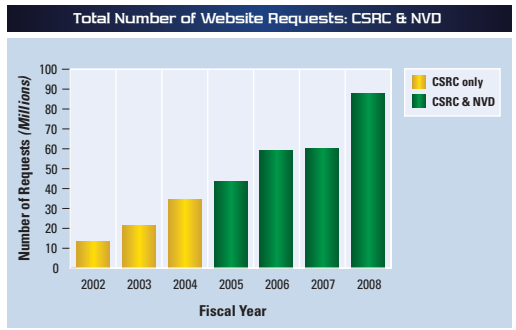
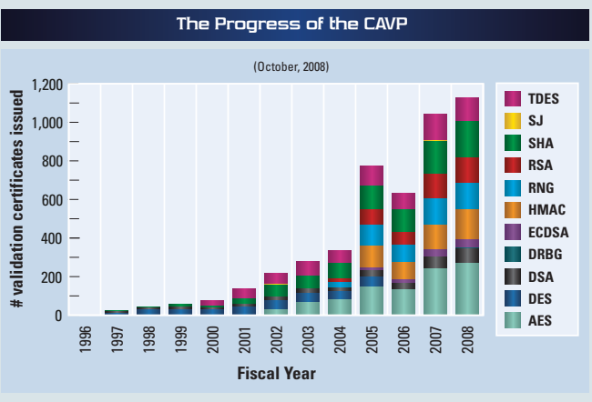

NIST IR 7536 日本語訳
英語タイトル : Computer Security Division 2008 Annual Report日本語タイトル : コンピュータセキュリティ部門 2008 年次報告書
公開日 : 2009-03-16
原文URL : https://csrc.nist.gov/pubs/ir/7536/final
翻訳編集 : 自動生成（有志による非公式の日本語訳）, 原文取得日 : 2026-10-31, 訳文 : 794 / 806 ブロック
[要約] NIST IR 7536 は、NIST のコンピュータセキュリティ部門（CSD）の 2008 年次報告書です。部門の組織と、セキュリティマネジメント・支援グループ、セキュリティ試験・メトリクスグループ、セキュリティ技術グループ、システム・ネットワークセキュリティグループの各グループについて、戦略目標と概要を説明します。FISMA 実施プロジェクト、暗号モジュール検証プログラム、暗号標準ツールキット、個人識別検証（PIV）、生体認証の標準と適合性評価の活動、セキュリティコンテンツ自動化プロトコル（SCAP）などの取り組みを取り上げています。さらに、表彰と受賞、FY2008 の部門の刊行物、部門および NIST との連携方法を掲載しています。
Computer Security Division
コンピュータセキュリティ部門
［人物の写真。人物が写っているため、この非公式サイトには掲載していません。原本 PDF を参照してください。］
2008 Annual Report
2008年年次報告書
Table of Contents
目次
FISMA Implementation Project
FISMA Implementation Project
Automated Vulnerability Management and Measurement
自動化された脆弱性管理と測定
CSD’s Role in National and International IT Security Standards Processes
国内および国際的な IT セキュリティ標準化プロセスにおける CSD の役割
Computer Security Division Publications – FY 2008
コンピュータセキュリティ部門の刊行物 – 2008会計年度
Welcome
ごあいさつ
The Computer Security Division (CSD), a component of NIST’s Informa- tion Technology Laboratory (ITL), provides standards and technology to protect information systems against threats to the confidentiality, integrity, and availability of information and services. During Fiscal Year 2008 (FY2008), CSD successfully responded to numerous challenges and opportunities in fulfilling its mission. CSD carried out a diverse research agenda and participated in many national priority initiatives, leading to the development and implementation of high-quality, cost-effective security and privacy mechanisms that improved information security across the federal government and throughout the national and international information security community.
コンピュータセキュリティ部門（CSD）は、NIST の情報技術研究所（ITL）の一組織であり、情報およびサービスの機密性、完全性、可用性に対する脅威から情報システムを保護するための標準と技術を提供しています。2008会計年度（FY2008）に、CSD は、その使命を果たすうえで数多くの課題と好機に成功裏に対応しました。CSD は多様な研究課題に取り組み、国家的に優先度の高い多くの取り組みに参加し、その結果、連邦政府全体、および国内外の情報セキュリティコミュニティ全体における情報セキュリティを向上させる、高品質で費用対効果の高いセキュリティおよびプライバシーの仕組みの開発と実装につながりました。
In FY2008, CSD continued to develop standards, metrics, tests, and validation programs to promote, measure, and validate the security in information systems and services. Recognizing the potential benefits of more automation in technical security operations, CSD hosted the Information Security Automation Program (ISAP), which formalizes and advances efforts to enable the automation and standardization of technical security operations, including automated vulnerability management and policy compliance evaluations. The CSD also continued to work closely with federal agencies to improve their understanding and implementation of the Federal Information Security Management Act (FISMA) to protect their information and information systems. CSD supported a major intelligence community and national security community initiative to build a unified framework for information security across the federal government. This initiative is expected to result in greater standardization and more consistent and cost-effective security for all federal information systems.
FY2008 に、CSD は、情報システムおよびサービスにおけるセキュリティを促進し、測定し、検証するために、標準、メトリクス、試験、検証プログラムの開発を続けました。技術的なセキュリティ運用をより自動化することの潜在的な利点を認識して、CSD は、自動化された脆弱性管理やポリシー準拠評価を含む、技術的なセキュリティ運用の自動化と標準化を可能にする取り組みを正式なものとして推進する Information Security Automation Program（ISAP）を主催しました。CSD はまた、連邦機関が情報および情報システムを保護するために、連邦情報セキュリティマネジメント法（FISMA）への理解と実装を改善できるよう、連邦機関と緊密に連携し続けました。CSD は、連邦政府全体の情報セキュリティのための統一的な枠組みを構築する、インテリジェンスコミュニティおよび国家安全保障コミュニティの大規模な取り組みを支援しました。この取り組みにより、すべての連邦情報システムについて、標準化がいっそう進み、より一貫した費用対効果の高いセキュリティが実現すると期待されています。
As technology advances and security requirements evolve, CSD critically evaluates existing standards, guidelines, and technologies to ensure that they adequately reflect the current state of the art. In FY2008, CSD issued revisions of The Keyed-Hash Message Authentication Code, Federal Information Processing Standard (FIPS) 198-1 and Secure Hash Standard, FIPS 180-3, as well as a draft for public comment of the RSA Strong Primes - Digital Signature Standard , FIPS 186-3. The CSD also initiated an international competition for a next generation Secure Hash Algorithm (SHA-3).
技術が進歩し、セキュリティ要件が変化するのに伴い、CSD は、既存の標準、ガイドライン、技術が現在の技術水準を適切に反映しているかを厳密に評価しています。FY2008 に、CSD は、The Keyed-Hash Message Authentication Code、連邦情報処理標準（FIPS）198-1 と Secure Hash Standard、FIPS 180-3 の改訂版を発行したほか、RSA Strong Primes - Digital Signature Standard、FIPS 186-3 の意見公募用ドラフトを発行しました。CSD はまた、次世代の Secure Hash Algorithm（SHA-3）の国際コンペティションを開始しました。
During FY2008 CSD explored opportunities to apply its security research to national priorities and internal NIST initiatives. The CSD has played an active role in implementation planning for the Comprehensive National Cyber Security Initiative to protect our country’s critical infrastructure. The CSD continued to expand its support for two key national initiatives, electronic voting and health information technology, by researching the security requirements of those areas and applying the results of that research, along with current technologies, to advance the stated goals of those initiatives. CSD also worked closely with the ITL management team to integrate security projects into ITL’s research programs. These programs, which include Cyber Security, Pervasive Information Technologies, Identity Management, and Trustworthy Software, are designed to organize and build ITL core competencies in the most efficient manner, and to maximize the use of ITL resources to address emerging information technology challenges.
FY2008 に、CSD は、そのセキュリティ研究を国家的な優先事項や NIST 内部の取り組みに適用する機会を探りました。CSD は、国の重要インフラを保護する Comprehensive National Cyber Security Initiative の実施計画の策定に積極的な役割を果たしてきました。CSD は、電子投票と医療情報技術という 2 つの主要な国家的取り組みへの支援を引き続き拡大し、これらの分野のセキュリティ要件を研究し、その研究成果を現行の技術とともに適用して、両取り組みが掲げる目標の推進に努めました。CSD はまた、ITL の経営陣と緊密に連携し、セキュリティ関連のプロジェクトを ITL の研究プログラムに統合しました。これらのプログラムには、サイバーセキュリティ、Pervasive Information Technologies、アイデンティティ管理、Trustworthy Software があり、ITL の中核的な能力を最も効率的な方法で組織化して高め、新たに生じる情報技術の課題に対処するために ITL の資源を最大限に活用するよう設計されています。
These are just some of the highlights of the CSD program during FY2008. You may obtain more information about CSD’s program at http://csrc.nist.gov or by contacting any of the CSD experts noted in this report. If interested in participating in any CSD challenges – whether current or future – please contact any of the listed CSD experts.
以上は、FY2008 における CSD のプログラムのハイライトの一部にすぎません。CSD のプログラムの詳細については、http://csrc.nist.gov をご覧いただくか、本報告書に記載された CSD の専門家にお問い合わせください。現在または将来の CSD の課題への参加に関心がある場合は、記載されている CSD の専門家にお問い合わせください。
William Curtis Barker
Chief Cybersecurity Advisor
William Curtis Barker
サイバーセキュリティ首席顧問
［人物の写真。人物が写っているため、この非公式サイトには掲載していません。原本 PDF を参照してください。］
Division Organization
部門の組織
William Curtis Barker
Chief Cybersecurity Advisor
William Curtis Barker
サイバーセキュリティ首席顧問
Donna Dodson
Deputy Chief Cybersecurity Advisor
Donna Dodson
サイバーセキュリティ副首席顧問
Matthew Scholl
Security Management & Assistance
Matthew Scholl
セキュリティマネジメント・支援
Donna Dodson
Security Testing & Metrics (Acting)
Donna Dodson
セキュリティ試験・メトリクス（代行）
William Burr
Security Technology
William Burr
セキュリティ技術
David Ferraiolo
Systems and Network Security
David Ferraiolo
システム・ネットワークセキュリティ
The Computer Security Division Responds to the Federal Information Security Management Act of 2002
コンピュータセキュリティ部門による2002年連邦情報セキュリティマネジメント法への対応
The E-Government Act [Public Law 107-347], passed by the 107th Congress and signed into law by the President in December 2002, recognized the importance of information security to the economic and national security interests of the United States. Title III of the E-Government Act, entitled the Federal Information Security Management Act of 2002 (FISMA), included duties and responsibilities for the Computer Security Division (CSD) in Section 303 “National Institute of Standards and Technology.” In 2008, CSD addressed its assignments through the following projects and activities:
第107議会で可決され、2002年12月に大統領が署名して成立した電子政府法（E-Government Act）［Public Law 107-347］は、情報セキュリティが米国の経済および国家安全保障上の利益にとって重要であることを認めました。電子政府法の第 III 編は、2002年連邦情報セキュリティマネジメント法（FISMA）と題され、第303条「National Institute of Standards and Technology」にコンピュータセキュリティ部門（CSD）の職務と責任を定めていました。2008年に、CSD は次のプロジェクトと活動を通じて、その任務に取り組みました。
•Develop NIST guides for securing non-national security agency information systems – Issued eighteen NIST Special Publications (SP) covering management, operational and technical security guidance. Collaborated with the Office of the Director of National Intelligence and the Department of Defense to transform the certification and accreditation process for information systems into a common framework for information security across the federal government.
•国家安全保障機関以外の情報システムを保護するための NIST ガイドの策定 – 管理面、運用面、技術面のセキュリティガイダンスを扱う NIST 特別刊行物（SP）を 18 件発行しました。国家情報長官室（Office of the Director of National Intelligence）および国防総省と協力して、情報システムの認証と認定のプロセスを、連邦政府全体の情報セキュリティのための共通の枠組みへと変革しました。
•Define minimum information security requirements (management, operational, and technical security controls) for information and information systems in each such category – Issued revision 2 of SP 800-53, Recommended Security Controls for Federal Information Systems, in December 2007.
•各区分の情報および情報システムに対する最低限の情報セキュリティ要件（管理面、運用面、技術面のセキュリティ管理策）の定義 – 2007年12月に SP 800-53 の改訂第 2 版、Recommended Security Controls for Federal Information Systems を発行しました。
•Identify methods for assessing effectiveness of security requirements - Issued SP 800-53A, Guide for Assessing the Security Controls in Federal Information Systems, in June 2008.
•セキュリティ要件の有効性を評価する方法の特定 - 2008年6月に SP 800-53A、Guide for Assessing the Security Controls in Federal Information Systems を発行しました。
•Establish performance measures for agency information security policies and practices – Issued revision 1 of SP 800-55, Performance Measurement Guide for Information Security, in July 2008.
•機関の情報セキュリティポリシーおよび実践に関するパフォーマンス指標の策定 – 2008年7月に SP 800-55 の改訂第 1 版、Performance Measurement Guide for Information Security を発行しました。
•Provide assistance to agencies and private sector – Conducted ongoing, substantial reimbursable and non-reimbursable assistance support, including many outreach efforts such as the Federal Information Systems Security Educators’ Association (FISSEA), the Federal Computer Security Program Managers’ Forum (FCSM Forum), the Small Business Corner, and the Program Review for Information Security Management Assistance (PRISMA).
•機関および民間部門への支援の提供 – 有償および無償の相当規模の支援を継続的に行い、連邦情報システムセキュリティ教育者協会（Federal Information Systems Security Educators’ Association、FISSEA）、連邦コンピュータセキュリティプログラム管理者フォーラム（Federal Computer Security Program Managers’ Forum、FCSM Forum）、中小企業コーナー（Small Business Corner）、情報セキュリティマネジメント支援のためのプログラムレビュー（Program Review for Information Security Management Assistance、PRISMA）など、多くのアウトリーチ活動を実施しました。
•Evaluate security policies and technologies from the private sector and national security systems for potential federal agency use – Hosted a growing repository of federal agency security practices, public/private security practices, and security configuration checklists for IT products. In conjunction with the Government of Canada’s Communications Security Establishment, CSD leads the Cryptographic Module Validation Program (CMVP). The Common Criteria Evaluation and Validation Scheme (CCEVS) and CMVP facilitate security testing of IT products usable by the federal government.
•民間部門および国家安全保障システムのセキュリティポリシーと技術について、連邦機関が利用できる可能性を評価 – 連邦機関のセキュリティ実践、官民のセキュリティ実践、IT 製品のセキュリティ設定チェックリストを集めたリポジトリを、拡充しながら運営しました。カナダ政府の通信セキュリティ機関（Communications Security Establishment）と共同で、CSD は暗号モジュール検証プログラム（CMVP）を主導しています。Common Criteria Evaluation and Validation Scheme（CCEVS）と CMVP は、連邦政府が利用できる IT 製品のセキュリティ試験を促進しています。
•Solicit recommendations of the Information Security and Privacy Advisory Board on draft standards and guidelines – Solicited recommendations of the Board regularly at quarterly meetings.
•ドラフトの標準およびガイドラインに関する情報セキュリティ・プライバシー諮問委員会（Information Security and Privacy Advisory Board）の勧告の募集 – 四半期ごとの会合で、同委員会の勧告を定期的に募集しました。
•Provide outreach, workshops, and briefings – Conducted ongoing awareness briefings and outreach to CSD’s customer community and beyond to ensure comprehension of guidance and awareness of planned and future activities. CSD also held workshops to identify areas that the customer community wishes to be addressed, and to scope guidelines in a collaborative and open format.
•アウトリーチ、ワークショップ、ブリーフィングの提供 – CSD の顧客コミュニティおよびその外部に対し、ガイダンスの理解と、計画中および将来の活動の認識を確実にするため、啓発ブリーフィングとアウトリーチを継続的に実施しました。CSD はまた、顧客コミュニティが取り上げてほしい分野を特定し、ガイドラインの範囲を協調的かつオープンな形式で定めるために、ワークショップを開催しました。
•Satisfy annual NIST reporting requirement – Produced an annual report as a NIST Interagency Report (IR). The 2003-2007 Annual Reports are available via our Computer Security Resource Center (CSRC) website or upon request.
•NIST の年次報告要件の充足 – NIST 省庁間報告書（IR）として年次報告書を作成しました。2003〜2007年の年次報告書は、Computer Security Resource Center（CSRC）のウェブサイトから、または請求により入手できます。
Security Management and Assistance Group (SMA)
セキュリティマネジメント・支援グループ（SMA）
Strategic Goal
戦略目標
The Security Management and Assistance Group provides leadership, expertise, outreach, standards and guidelines in order to assist the federal IT community in protecting its information and information systems, which allows our federal customers to use these critical assets in accomplishing their missions.
セキュリティマネジメント・支援グループは、連邦 IT コミュニティがその情報および情報システムを保護するのを支援するために、リーダーシップ、専門知識、アウトリーチ、標準およびガイドラインを提供し、それにより連邦の顧客がこれらの重要な資産をその使命の達成に利用できるようにしています。
Overview
概要
Information security is an integral element of sound management. Infor- mation and information systems are critical assets that support the mission of an organization. Protecting them can be as important as protecting other organizational resources, such as money, physical assets, or employees. However, including security considerations in the management of information and computers does not completely eliminate the possibility that these assets will be harmed.
情報セキュリティは、健全なマネジメントに不可欠な要素です。情報および情報システムは、組織の使命を支える重要な資産です。これらを保護することは、資金、物的資産、従業員といった他の組織資源を保護することと同じくらい重要になる場合があります。しかし、情報とコンピュータのマネジメントにセキュリティへの配慮を含めても、これらの資産が損害を受ける可能性が完全になくなるわけではありません。
Ultimately, responsibility for the success of an organization lies with its senior management. They establish the organization’s computer security program and its overall program goals, objectives, and priorities in order to support the mission of the organization. They are also responsible for ensuring that required resources are applied to the program.
組織の成功に対する最終的な責任は、上級管理者にあります。上級管理者は、組織の使命を支えるために、組織のコンピュータセキュリティプログラムと、プログラム全体の目標、目的、優先順位を定めます。また、必要な資源がプログラムに確実に充てられるようにする責任も負います。
Collaboration with a number of entities is critical for success. Federally, we collaborate with the United States Office of Management and Budget (OMB), the United States Government Accountability Office (GAO), the National Security Agency (NSA), the Chief Information Officers (CIO) Council, and all Executive Branch agencies. We also work closely with a number of information technology organizations and standards bodies, as well as public and private organizations.
成功のためには、数多くの主体との連携が不可欠です。連邦政府内では、行政管理予算局（OMB）、政府説明責任局（GAO）、国家安全保障局（NSA）、最高情報責任者（CIO）評議会、およびすべての行政部門の機関と連携しています。また、多数の情報技術組織や標準化団体、公的・民間の組織とも緊密に連携しています。
Major initiatives in this area include the FISMA Implementation Project:
この分野の主要な取り組みには、FISMA Implementation Project があります。
•Extended outreach initiatives to federal and nonfederal agencies;
•連邦機関および連邦以外の機関へのアウトリーチ活動の拡大。
•Information security training, awareness and education;
•情報セキュリティのトレーニング、啓発、教育。
•Outreach to small and medium business;
•中小企業へのアウトリーチ。
•Standards development;
•標準の策定。
•Producing and updating NIST Special Publications (SP) on security management topics.
•セキュリティマネジメントのトピックに関する NIST 特別刊行物（SP）の作成と更新。
Key to the success of this area is our ability to interact with a broad constituency – federal and nonfederal--in order to ensure that our program is consistent with national objectives related to or impacted by information security.
この分野の成功の鍵は、情報セキュリティに関連する、または情報セキュリティの影響を受ける国家的目標に当プログラムを確実に整合させるために、連邦および連邦以外の幅広い関係者と交流できる能力にあります。
Federal Information Security Management Act (FISMA) Implementation Project
連邦情報セキュリティマネジメント法（FISMA）Implementation Project
The Computer Security Division (CSD) continued to develop the security standards and guidelines required by federal legislation. Phase I of the FISMA Implementation Project included the development of the following publications—
コンピュータセキュリティ部門（CSD）は、連邦法が求めるセキュリティ標準およびガイドラインの策定を続けました。FISMA Implementation Project のフェーズ I には、次の刊行物の策定が含まれていました。
•Federal Information Processing Standard (FIPS) 199, Standards for Security Categorization of Federal Information and Information Systems;
•連邦情報処理標準（FIPS）199、Standards for Security Categorization of Federal Information and Information Systems。
•FIPS 200, Minimum Security Requirements for Federal Information and Information Systems;
•FIPS 200、Minimum Security Requirements for Federal Information and Information Systems。
•NIST Special Publication (SP) 800-37, Guide for the Security Certification and Accreditation of Federal Information Systems;
•NIST 特別刊行物（SP）800-37、Guide for the Security Certification and Accreditation of Federal Information Systems。
•NIST SP 800-39, Managing Risk from Information Systems: An Organizational Perspective (Targeted Completion February 2009);
•NIST SP 800-39、Managing Risk from Information Systems: An Organizational Perspective（完了目標は2009年2月）。
•NIST SP 800-53, Recommended Security Controls for Federal Information Systems;
•NIST SP 800-53、Recommended Security Controls for Federal Information Systems。
•NIST SP 800-53A, Guide for Assessing the Security Controls in Federal Information Systems;
•NIST SP 800-53A、Guide for Assessing the Security Controls in Federal Information Systems。
•NIST SP 800-59, Guideline for Identifying an Information System as a National Security System; and
•NIST SP 800-59、Guideline for Identifying an Information System as a National Security System、および
•NIST SP 800-60, Guide for Mapping Types of Information and Information Systems to Security Categories.
•NIST SP 800-60、Guide for Mapping Types of Information and Information Systems to Security Categories。
The security standards and guidelines developed in Phase I will assist federal agencies in—
フェーズ I で策定されたセキュリティ標準およびガイドラインは、連邦機関による次の取り組みを支援します。
•Implementing the individual steps in the NIST Risk Management Framework as part of a well-defined and disciplined system development life cycle process;
•明確に定義され、規律あるシステム開発ライフサイクルのプロセスの一環として、NIST リスクマネジメントフレームワークの個々のステップを実施すること。
•Demonstrating compliance to specific requirements contained within the legislation; and
•法令に含まれる特定の要件への準拠を示すこと。
•Establishing a level of security due diligence across the federal government.
•連邦政府全体でセキュリティに関するデューデリジェンスの水準を確立すること。
In FY2008, the SMA group completed the following key publications:
FY2008 に、SMA グループは次の主要な刊行物を完成させました。
•Initial public draft of a major revision to NIST SP 800-37, Guide for Security Authorization of Federal Information Systems, working in cooperation with the Office of the Director of National Intelligence (ODNI), the Department of Defense (DOD), and the Committee on National Security Systems (CNSS), to develop a common process to authorize federal information systems for operation;
•NIST SP 800-37、Guide for Security Authorization of Federal Information Systems の大幅改訂版の初回公開ドラフト。連邦情報システムの運用認可に関する共通プロセスを策定するため、国家情報長官室（ODNI）、国防総省（DOD）、国家安全保障システム委員会（CNSS）と協力して作業しました。
•Second public draft of NIST SP 800-39, which is the flagship document in the series of FISMA-related publications that provides a structured, yet flexible approach for managing that portion of risk resulting from the incorporation of information systems into the mission and business processes of organizations;
•NIST SP 800-39 の第 2 次公開ドラフト。これは FISMA 関連刊行物シリーズの中核となる文書であり、情報システムを組織の使命および業務プロセスに組み込むことから生じるリスクの部分を管理するための、体系的でありながら柔軟な取り組み方を示しています。
•Revision of NIST SP 800-53, Recommended Security Controls for Federal Information Systems, working with NIST’s Intelligent Systems Division (Manufacturing Engineering Laboratory), in collaboration with the Department of Homeland Security and organizations within the federal government that own, operate, and maintain industrial control systems, to incorporate in NIST SP 800-53 guidance on appropriate safeguards and countermeasures for federal industrial control systems,
•NIST SP 800-53、Recommended Security Controls for Federal Information Systems の改訂。NIST の Intelligent Systems Division（製造工学研究所）とともに、国土安全保障省、および産業用制御システムを所有、運用、保守する連邦政府内の組織と協力し、連邦の産業用制御システムに適切な保護策および対抗策に関するガイダンスを NIST SP 800-53 に取り込むための改訂作業を行いました。
•Final publication of NIST SP 800-53A, which provides a new, streamlined, and flexible approach for developing security assessment plans containing assessment procedures to determine the effectiveness of security controls deployed in federal information systems. Also completed with NIST SP 800-53A, was an initial public draft of web-based assessment cases, which were developed by an interagency team to provide security assessors with online, worked examples identifying specific assessor action steps to accomplish for each of the assessment procedures in SP 800-53A;
•NIST SP 800-53A の最終版の発行。これは、連邦情報システムに導入されたセキュリティ管理策の有効性を判断するための評価手順を含むセキュリティ評価計画を作成するための、合理化された柔軟な新しい取り組み方を示しています。NIST SP 800-53A とあわせて、ウェブベースの評価ケースの最初の公開ドラフトも完成しました。これは省庁間チームが作成したもので、SP 800-53A の各評価手順について評価者が実行すべき具体的な行動手順を示した、オンラインの実例をセキュリティ評価者に提供するものです。
•Revision of NIST SP 800-60, which updates the information types used by agencies to develop information system impact levels to help determine the criticality and sensitivity of federal information systems.
•NIST SP 800-60 の改訂。連邦情報システムの重要度と機微度を判断するのに役立つ情報システムの影響度レベルを機関が策定する際に用いる情報タイプを更新しています。
In addition to the above publications, the division collaborated with the Manufacturing Engineering Laboratory in developing a draft guide to industrial control system security, NIST SP 800-82, Guide to Industrial Control Systems (ICS) Security: Supervisory Control and Data Acquisition (SCADA) Systems, Distributed Control Systems (DCS), and Other Control System Configurations Such as Programmable Logic Controllers (PLC).
上記の刊行物に加えて、当部門は製造工学研究所と協力して、産業用制御システムのセキュリティに関するドラフトのガイドである NIST SP 800-82、Guide to Industrial Control Systems (ICS) Security: Supervisory Control and Data Acquisition (SCADA) Systems, Distributed Control Systems (DCS), and Other Control System Configurations Such as Programmable Logic Controllers (PLC) を策定しました。
Phase II of the FISMA Implementation Project, discussed in more detail in the next section of this annual report, focuses on several new initiatives to support the development of a program for credentialing public and private sector organizations to provide security assessment services for federal agencies.
FISMA Implementation Project のフェーズ II は、本年次報告書の次の節で詳しく説明しますが、連邦機関にセキュリティ評価サービスを提供する官民の組織を認定するプログラムの策定を支援するための、いくつかの新たな取り組みに焦点を当てています。
http://csrc.nist.gov/sec-cert
Contact: Dr. Ron Ross
(301) 975-5390
ron.ross@nist.gov
http://csrc.nist.gov/sec-cert
連絡先: Dr. Ron Ross
(301) 975-5390
ron.ross@nist.gov
Organizational Credentialing Program
組織認定プログラム
Phase II of the FISMA Implementation Project is focusing on building a common understanding and capability for FISMA security control implementation and assessment in supporting development of a program for credentialing public and private sector organizations to provide security assessment services of information systems for federal agencies. These security services involve the comprehensive assessment of the management, operational, and technical security controls in federal information systems including the assessment of the information technology products and services used in security control implementation. The security assessment services will determine the extent to which the security controls are implemented correctly, operating as intended, and producing the desired outcome with respect to meeting the security requirements for the system.
FISMA Implementation Project のフェーズ II は、連邦機関に情報システムのセキュリティ評価サービスを提供する官民の組織を認定するプログラムの策定を支援するために、FISMA のセキュリティ管理策の実装と評価に関する共通の理解と能力を構築することに焦点を当てています。これらのセキュリティサービスでは、セキュリティ管理策の実装に用いられる情報技術製品およびサービスの評価を含め、連邦情報システムにおける管理面、運用面、技術面のセキュリティ管理策を包括的に評価します。セキュリティ評価サービスでは、セキュリティ管理策がどの程度正しく実装され、意図どおりに動作し、システムのセキュリティ要件を満たすうえで望ましい結果を生んでいるかを判断します。
This phase of the FISMA Implementation Project includes the following initiatives:
FISMA Implementation Project のこのフェーズには、次の取り組みが含まれます。
1.Training Initiative: for development of training courses, Quick Start Guides (QSG’s), and Frequently Asked Questions (FAQ’s) to establish a common understanding of the NIST standards and guidelines supporting each of the steps in the NIST Risk Management Framework;
1.トレーニングの取り組み: NIST リスクマネジメントフレームワークの各ステップを支える NIST の標準およびガイドラインについて共通の理解を確立するための、トレーニングコース、クイックスタートガイド（QSG）、よくある質問（FAQ）の作成。
2.Support Tools Initiative: for identifying common programs, reference materials, checklists, technical guides, tools and techniques supporting implementation and assessment of SP 800-53 security controls;
2.支援ツールの取り組み: SP 800-53 のセキュリティ管理策の実装と評価を支援する、共通のプログラム、参考資料、チェックリスト、技術ガイド、ツール、技法の特定。
3.Product and Services Assurance Initiative: for defining minimum criteria and guidelines for suppliers in specifying security functions and assurances (to include evidence of test results from SCAP tools and configu- ration checklists, etc. where applicable) of products and services used in implementing SP 800-53 security controls;
3.製品・サービス保証の取り組み: SP 800-53 のセキュリティ管理策の実装に用いられる製品およびサービスのセキュリティ機能と保証（該当する場合は、SCAP ツールの試験結果の証拠や設定チェックリストなどを含む）を供給者が仕様化する際の、最低限の基準とガイドラインの定義。
4.Organizational Credentialing Initiative: drawing upon material from the above initiatives and NIST standards and guidelines, define minimum capability and proficiency criteria for credentialing public and private sector organizations providing security assessment services for federal agencies; and
4.組織認定の取り組み: 上記の取り組みの資料と NIST の標準およびガイドラインを活用して、連邦機関にセキュリティ評価サービスを提供する官民の組織を認定するための最低限の能力および習熟度の基準を定義すること。
5.Harmonization Initiative: for identifying common relationships and the mappings of FISMA standards, guidelines and requirements with: (i) ISO 27000 (International Organization for Standardization) series information security management standards; and (ii) ISO 9000 and 17000 series quality management, and laboratory testing, inspection and accreditation standards. This harmonization is important for minimizing duplication of effort for organizations that must demonstrate compliance to both FISMA and ISO requirements.
5.調和の取り組み: FISMA の標準、ガイドライン、要件と、(i) ISO 27000（国際標準化機構）シリーズの情報セキュリティマネジメント標準、(ii) ISO 9000 および 17000 シリーズの品質マネジメント、ならびに試験所の試験、検査、認定の標準との、共通の関係およびマッピングの特定。この調和は、FISMA と ISO の両方の要件への準拠を示さなければならない組織にとって、作業の重複を最小限に抑えるために重要です。
In FY2008, the CSD completed the initial public draft of NIST Interagency Report 7328, Security Assessment Provider Requirements and Customer Responsibilities: Building a Security Assessment Credentialing Program for Federal Information Systems, which provides an initial set of requirements security assessment providers should satisfy to demonstrate the capability to conduct information system security control assessments in accordance with NIST standards and guidelines. The division also completed a set of Quick Start Guides (QSG’s) and Frequently Asked Questions (FAQ’s) to establish a common understanding of the NIST standards and guidelines supporting the categorization of systems step (i.e., first step) of the NIST Risk Management Framework.
FY2008 に、CSD は NIST Interagency Report 7328、Security Assessment Provider Requirements and Customer Responsibilities: Building a Security Assessment Credentialing Program for Federal Information Systems の初回公開ドラフトを完成させました。この文書は、セキュリティ評価プロバイダーが NIST の標準およびガイドラインに従って情報システムのセキュリティ管理策評価を実施する能力を示すために満たすべき初期要件一式を示しています。当部門はまた、NIST リスクマネジメントフレームワークのシステムカテゴリ分類のステップ（すなわち第 1 ステップ）を支える NIST の標準およびガイドラインについて共通理解を確立するためのクイックスタートガイド（QSG）およびよくある質問（FAQ）一式も完成させました。
http://csrc.nist.gov/sec-cert
Contacts:
Mr. Arnold Johnson
(301) 975-3247
arnold.johnson@nist.gov
Ms. Pat Toth
(301) 975-5140
patricia.toth@nist.gov
http://csrc.nist.gov/sec-cert
連絡先:
Mr. Arnold Johnson
(301) 975-3247
arnold.johnson@nist.gov
Ms. Pat Toth
(301) 975-5140
patricia.toth@nist.gov
Publications
刊行物
Glossary of Key Information Security Terms
主要な情報セキュリティ用語集
Over the years, the Computer Security Division (CSD) has produced many information security guidance documents with definitions of key terms used. The definition for any given term was not standardized; therefore, there were multiple definitions for a given term. In 2004, the CSD identified a need to increase consistency in definitions for key information security terms in our documents.
コンピュータセキュリティ部門（CSD）は長年にわたり、主要な用語の定義を含む情報セキュリティのガイダンス文書を数多く作成してきました。ある用語の定義は標準化されていなかったため、同じ用語に複数の定義が存在していました。2004年に、CSD は、文書内の主要な情報セキュリティ用語の定義の一貫性を高める必要があると認識しました。
The first step was a review of NIST publications (NIST Interagency Reports, Special Publications, and Federal Information Processing Standards) to determine how key information security terms were defined in each document.
最初のステップは、NIST の刊行物（NIST 省庁間報告書、特別刊行物、連邦情報処理標準）を調査し、各文書で主要な情報セキュリティ用語がどのように定義されているかを確認することでした。
This review was completed in 2005 and resulted in a listing of each term and all definitions for each term. Several rounds of internal and external reviews were completed, and comments and suggestions were incorporated into the document. The document was published in April 2006 as NISTIR 7298, Glossary of Key Information Security Terms.
この調査は2005年に完了し、各用語とその用語のすべての定義の一覧ができあがりました。内部および外部によるレビューが数回にわたって実施され、コメントや提案が文書に反映されました。この文書は、2006年4月に NISTIR 7298、Glossary of Key Information Security Terms として発行されました。
In 2007, CSD initiated an update to the Glossary to reflect new terms and any different definitions used in our publications, as well as to incorporate information assurance terms from the Committee on National Security Systems Instruction No 4009 (CNSSI-4009). The glossary update was well underway when CSD was notified that CNSSI-4009 was being updated. NIST obtained a position on the CNSSI-4009 Glossary Working Group and has been working on that project since early 2008.
2007年に、CSD は、新しい用語と刊行物で使われている異なる定義を反映し、さらに国家安全保障システム委員会指令第 4009 号（CNSSI-4009）の情報保証用語を取り込むため、用語集の更新に着手しました。用語集の更新が順調に進んでいたところで、CSD は CNSSI-4009 が更新中であるとの通知を受けました。NIST は CNSSI-4009 Glossary Working Group の席を得て、2008年初めからこのプロジェクトに取り組んでいます。
An updated NIST glossary is expected to be released in FY2009 and will include the updated CNSSI-4009.
更新された NIST の用語集は FY2009 に公開される見込みで、更新された CNSSI-4009 を含む予定です。
Contact: Mr. Richard Kissel
(301) 975-5017
richard.kissel@nist.gov
連絡先: Mr. Richard Kissel
(301) 975-5017
richard.kissel@nist.gov
Guide for Mapping Types of Information and Information Systems to Security Categories
情報の種類および情報システムをセキュリティカテゴリに対応付けるためのガイド
In August 2008, NIST issued SP 800-60 Revision 1, Volume I, Guide for Mapping Types of Information and Information Systems to Security Categories, and Volume 2, Appendices to Guide for Mapping Types of Information and Information Systems to Security Categories. SP 800-60, the companion guide to FIPS 199, Standards for Security Categorization of Federal Information and Information Systems, was developed to assist federal agencies in categorizing information and information systems by facilitating provision of appropriate levels of information security according to a range of levels of impact or consequences that might result from the compromise of a security objective.
2008年8月に、NIST は SP 800-60 改訂第 1 版の第 I 巻 Guide for Mapping Types of Information and Information Systems to Security Categories、および第 2 巻 Appendices to Guide for Mapping Types of Information and Information Systems to Security Categories を発行しました。SP 800-60 は FIPS 199、Standards for Security Categorization of Federal Information and Information Systems の関連ガイドであり、セキュリティ目的の危殆化によって生じうる影響または結果のレベルの範囲に応じて、適切なレベルの情報セキュリティを提供しやすくすることで、連邦機関が情報および情報システムをカテゴリ分類するのを支援するために策定されました。
This revision of SP 800-60 further clarifies the system security categorization process; discusses the impact of security categorization results on other enterprise-wide activities such as capital planning, enterprise architecture, and disaster recovery planning; and provides recommendations and rationale for mission-based and management and support information types.
SP 800-60 のこの改訂版は、システムのセキュリティカテゴリ分類のプロセスをさらに明確にし、セキュリティカテゴリ分類の結果が、資本計画、エンタープライズアーキテクチャ、災害復旧計画といった他のエンタープライズ全体の活動に与える影響を論じ、使命ベースの情報タイプ、および管理・支援の情報タイプについて、推奨事項とその根拠を示しています。
Contacts:
Mr. Kevin Stine
(301) 975-4483
kevin.stine@nist.gov
Mr. Richard Kissel
(301) 975-5017
richard.kissel@nist.gov
連絡先:
Mr. Kevin Stine
(301) 975-4483
kevin.stine@nist.gov
Mr. Richard Kissel
(301) 975-5017
richard.kissel@nist.gov
Guide to NIST Computer Security Documents
NIST コンピュータセキュリティ文書のガイド
Can’t find the NIST CSD document you’re looking for? Are you not sure which CSD documents you should be looking for?
お探しの NIST CSD の文書が見つかりませんか。どの CSD の文書を探すべきかわかりませんか。
Currently, there are over 300 NIST information security documents. This number includes Federal Information Processing Standards (FIPS), the Special Publication (SP) 800 series, Information Technology Laboratory (ITL) Bulletins, and NIST Interagency Reports (NIST IRs). These documents are typically listed by publication type and number, or by month and year in the case of the ITL Bulletins. This can make finding a document difficult if the number or date is not known.
現在、NIST の情報セキュリティ文書は 300 件を超えています。この数には、連邦情報処理標準（FIPS）、特別刊行物（SP）800 シリーズ、情報技術研究所（ITL）速報、NIST 省庁間報告書（NIST IR）が含まれます。これらの文書は通常、刊行物の種類と番号別に、ITL 速報の場合は年月別に一覧化されています。そのため、番号や日付がわからないと文書を見つけにくい場合があります。
In order to make NIST information security documents more accessible, especially to those just entering the information security field or to those with needs for specific documents, CSD developed the Guide to NIST Information Security Documents. Publications are listed by type and number, and the guide presents three ways to search for documents: by topic cluster (general subject matters or topic areas used in information security), by family (the seventeen minimum security control family names in SP 800-53), and by legal requirement.
NIST の情報セキュリティ文書、とりわけ情報セキュリティ分野に入ったばかりの人や特定の文書を必要とする人が文書を見つけやすくするために、CSD は Guide to NIST Information Security Documents を作成しました。刊行物は種類と番号別に一覧化されており、このガイドは文書を検索する 3 つの方法を示しています。トピッククラスター（情報セキュリティで用いられる一般的な主題やトピック領域）別、ファミリー（SP 800-53 の 17 の最低限のセキュリティ管理策ファミリー名）別、および法的要件別です。
This guide is currently updated through the end of August of FY2008, and will be undergoing future updates to make access to CSD publications easier for our customers.
このガイドは現在、FY2008 の 8 月末まで更新されており、顧客が CSD の刊行物をより容易に利用できるようにするため、今後も更新されます。
Contact: Ms. Pauline Bowen
(301) 975-2938
pbowen@nist.gov
連絡先: Ms. Pauline Bowen
(301) 975-2938
pbowen@nist.gov
Performance Measures for Information Security
情報セキュリティのパフォーマンス指標
The requirement to measure information security performance is driven by regulatory, financial, and organizational reasons. A number of existing laws, rules, and regulations, such as the Clinger-Cohen Act, the Government Performance and Results Act (GPRA), and the Federal Information Security Management Act (FISMA), cite information performance measurement in general and information security measurement in particular as a requirement. Agencies are also using performance measures as management tools in their internal improvement efforts and linking implementation of their programs to agency-level strategic planning efforts.
情報セキュリティのパフォーマンスを測定する要件は、規制上、財務上、組織上の理由によって生じています。Clinger-Cohen 法、政府業績成果法（GPRA）、連邦情報セキュリティマネジメント法（FISMA）など、既存の多くの法律、規則、規制は、情報のパフォーマンス測定全般、とりわけ情報セキュリティの測定を要件として挙げています。各機関はまた、内部の改善の取り組みにおけるマネジメントツールとしてパフォーマンス指標を用い、自らのプログラムの実施を機関レベルの戦略計画の取り組みと結び付けています。
In July 2008, NIST released SP 800-55, Revision 1, Performance Measurement Guide for Information Security. The document is a guide to assist in the development, selection, and implementation of measures to be used at the information system and program levels. These measures can help indicate the effectiveness of security controls applied to information systems and supporting information security programs.
2008年7月に、NIST は SP 800-55 改訂第 1 版、Performance Measurement Guide for Information Security を公開しました。この文書は、情報システムレベルおよびプログラムレベルで用いる指標の策定、選定、実施を支援するガイドです。これらの指標は、情報システムおよびそれを支える情報セキュリティプログラムに適用されたセキュリティ管理策の有効性を示すのに役立ちます。
Contacts:
Ms. Marianne Swanson
(301) 975-3293
marianne.swanson@nist.gov
Mr. Kevin Stine
(301) 975-4483
kevin.stine@nist.gov
連絡先:
Ms. Marianne Swanson
(301) 975-3293
marianne.swanson@nist.gov
Mr. Kevin Stine
(301) 975-4483
kevin.stine@nist.gov
Revision of the Guide to Information Technology Security Role- Based Training Requirements
情報技術セキュリティの役割別トレーニング要件ガイドの改訂
In FY2007, CSD initiated an update to SP 800-16, Information Technology Security Training Requirements: A Role- and Performance-Based Model, for public review and comment. Originally published in April 1998, SP 800-16 contains a training methodology that federal departments and agencies, as well as private sector and academic institutions, can use to develop role-based information security training material.
FY2007 に、CSD は、SP 800-16、Information Technology Security Training Requirements: A Role- and Performance-Based Model の更新に着手し、公開レビューとコメントに付しました。SP 800-16 は 1998年4月に最初に発行され、連邦省庁および機関、ならびに民間部門や学術機関が、役割別の情報セキュリティトレーニング教材を作成するために使えるトレーニング方法論を含んでいます。
During FY2008 we made significant changes to the document. We began meeting with stakeholders of other federally focused information security training and workforce development initiatives. The goal is to create a multi-agency task force to reduce the potential for confusion among our constituents by 1) developing a diagram that shows the interactions and relationships between the various initiatives, and 2) agreeing on a common training “standard” that can be used by various federal communities that currently own or manage the training and workforce development initiatives. SP 800-16, Rev. 1 is expected to be that common training “standard.”
FY2008 中に、私たちはこの文書に大幅な変更を加えました。連邦政府が関与する他の情報セキュリティトレーニングおよび人材育成の取り組みの関係者との会合も始めました。目標は、複数機関によるタスクフォースを作り、1) さまざまな取り組みの間の相互作用と関係を示す図を作成し、2) 現在トレーニングおよび人材育成の取り組みを所管または管理しているさまざまな連邦のコミュニティが利用できる共通のトレーニング「標準」に合意することで、関係者の間の混乱の可能性を減らすことです。SP 800-16 改訂第 1 版が、その共通のトレーニング「標準」となることが期待されています。
We expect the update of SP 800-16 to be completed during FY2009.
SP 800-16 の更新は FY2009 中に完了する見込みです。
Contacts:
Mr. Mark Wilson
(301) 975-3870
mark.wilson@nist.gov
Ms. Pauline Bowen
(301) 975-2938
pauline.bowen@nist.gov
連絡先:
Mr. Mark Wilson
(301) 975-3870
mark.wilson@nist.gov
Ms. Pauline Bowen
(301) 975-2938
pauline.bowen@nist.gov
Security Considerations in the System Development Life Cycle
システム開発ライフサイクルにおけるセキュリティの考慮事項
Consideration of security in the System Development Life Cycle (SDLC) is essential to implementing and integrating a comprehensive risk management strategy for all information systems. To be most effective, information security must be integrated into the SDLC from system inception. Early integration of security in the SDLC enables agencies to maximize return on investment in their security programs, through:
システム開発ライフサイクル（SDLC）におけるセキュリティの考慮は、すべての情報システムについて包括的なリスクマネジメント戦略を実施し、統合するうえで不可欠です。最も効果を上げるには、システムの構想段階から情報セキュリティを SDLC に組み込む必要があります。SDLC にセキュリティを早期に組み込むことで、各機関は、次のようにしてセキュリティプログラムへの投資利益を最大化できます。
•Early identification and mitigation of security vulnerabilities and misconfigurations, resulting in lower cost of security control implementation and vulnerability mitigation;
•セキュリティ上の脆弱性や設定ミスを早期に特定して緩和し、その結果、セキュリティ管理策の実装と脆弱性緩和のコストを下げる。
•Awareness of potential engineering challenges caused by mandatory security controls;
•必須のセキュリティ管理策によって生じうる技術上の課題を認識します。
•Identification of shared security services and reuse of security strategies and tools to reduce development cost and schedule while improving security posture through proven methods and techniques;
•共有セキュリティサービスを特定し、セキュリティ戦略とツールを再利用することで、実績ある方法と技法によりセキュリティ態勢を改善しつつ、開発のコストとスケジュールを削減します。
•Facilitating informed executive decision making through comprehensive risk management in a timely manner.
•包括的なリスクマネジメントを適時に行うことで、十分な情報に基づく経営層の意思決定を促進します。
In October 2008, NIST issued SP 800-64, Revision 2, Security Considerations in the System Development Life Cycle. This publication addresses the FISMA direction to develop guidelines recommending security integration into the agency’s established SDLC, and is intended to assist agencies in integrating essential information technology (IT) security steps into their established IT SDLC, resulting in more cost effective, risk appropriate security control identification, development, and testing.
2008年10月に、NIST は SP 800-64 改訂第 2 版、Security Considerations in the System Development Life Cycle を発行しました。この刊行物は、機関が確立済みの SDLC にセキュリティを統合することを推奨するガイドラインを策定せよという FISMA の指示に対応するものであり、機関が不可欠な情報技術（IT）セキュリティのステップを確立済みの IT SDLC に統合するのを支援することを意図しています。その結果、費用対効果が高く、リスクに見合ったセキュリティ管理策の特定、開発、試験が可能になります。
Contacts:
Mr. Richard Kissel
(301) 975-5017
richard.kissel@nist.gov
Mr. Kevin Stine
(301) 975-4483
kevin.stine@nist.gov
連絡先:
Mr. Richard Kissel
(301) 975-5017
richard.kissel@nist.gov
Mr. Kevin Stine
(301) 975-4483
kevin.stine@nist.gov
Outreach and Awareness
アウトリーチと啓発
Computer Security Resource Center
コンピュータセキュリティリソースセンター
The Computer Security Resource Center (CSRC) is the Computer Security Division’s Web site. CSRC is one of the four most visited Web sites at NIST. We use the CSRC to encourage broad sharing of information security tools and practices, to provide a resource for information security standards and guidelines, and to identify and link key security Web resources to support the industry. The CSRC is an integral component of all of the work that we conduct and produce. It is our repository for everyone, public or private sector, wanting access to our documents and other information security-related information. CSRC serves as a vital link to all our internal and external customers.
Computer Security Resource Center（CSRC）は、コンピュータセキュリティ部門のウェブサイトです。CSRC は NIST で最もアクセス数の多いウェブサイト4つのうちの1つです。私たちは CSRC を、情報セキュリティのツールや実践の幅広い共有を促し、情報セキュリティの標準およびガイドラインのための情報源を提供し、業界を支援するために重要なセキュリティ関連のウェブ資源を特定してリンクするために利用しています。CSRC は、私たちが行い、作成するすべての業務に不可欠な構成要素です。公的部門か民間部門かを問わず、当部門の文書やその他の情報セキュリティ関連情報にアクセスしたいすべての人のためのリポジトリです。CSRC は、内外のすべての顧客との重要な接点となっています。
During FY2008, CSRC had more than 87.8 million requests, which included the additional traffic coming from the National Vulnerability Database (NVD) that became operational in late FY2005. Of the total 87.8 million requests, the CSRC received 38.2 million requests, while the NVD website received 49.6 million requests.
FY2008 中に、CSRC へのリクエストは 8,780 万件を超えました。これには、FY2005 の終わりに稼働を開始した国家脆弱性データベース（NVD）からの追加のトラフィックが含まれます。合計 8,780 万件のリクエストのうち、CSRC が受けたリクエストは 3,820 万件、NVD のウェブサイトが受けたリクエストは 4,960 万件でした。
The CSRC web site is the primary source for gaining access to NIST computer security publications. Every draft document released for public comment or final document published through the Division has been posted to the CSRC website. Based on the web site’s statistics, the five most requested CSD publications for FY2008 were:
CSRC のウェブサイトは、NIST のコンピュータセキュリティ刊行物にアクセスするための主要な情報源です。当部門が意見公募用に公開したすべてのドラフト文書、または当部門を通じて発行したすべての最終文書は、CSRC のウェブサイトに掲載されてきました。ウェブサイトの統計によると、FY2008 に最もリクエストの多かった CSD の刊行物の上位5件は次のとおりです。
1.Special Publication (SP) 800-30, Risk Management Guide for Information Technology Systems
1.特別刊行物（SP）800-30、Risk Management Guide for Information Technology Systems
2.Federal Information Processing Standard (FIPS) 197, Advanced Encryption Standard
2.連邦情報処理標準（FIPS）197、Advanced Encryption Standard
3.SP 800-48, Guide to Securing Legacy IEEE 802.11 Wireless Networks
3.SP 800-48、Guide to Securing Legacy IEEE 802.11 Wireless Networks
4.FIPS 140-2, Security Requirements for Cryptographic Modules
4.FIPS 140-2、Security Requirements for Cryptographic Modules
5.SP 800-53 Revision 1 and, Revision 2, Recommended Security Controls for Federal Information Systems
5.SP 800-53 改訂第 1 版および改訂第 2 版、Recommended Security Controls for Federal Information Systems
During FY2008, the CSRC Web site was continuously updated with new information on all project pages along with the posting of new and updated publications. The new and improved CSRC Web site standardizes the CSRC Web pages and menus, and is easier to navigate. Some of the major high-lights of the expanded CSRC website during FY2008 were:
FY2008 中、CSRC のウェブサイトは、新規および更新された刊行物の掲載とともに、すべてのプロジェクトページの新しい情報で継続的に更新されました。新しく改善された CSRC のウェブサイトは、CSRC のウェブページとメニューを標準化し、ナビゲーションがより容易になっています。FY2008 中に拡充された CSRC のウェブサイトの主なハイライトの一部は次のとおりです。
•Creation of web pages for the 2008 Federal Information Systems Security Educators’ Association (FISSEA) Conference;
•2008年 Federal Information Systems Security Educators’ Association（FISSEA）会議用のウェブページの作成。
•Improved Publications section that included the addition of the Archived Publications section for withdrawn FIPS and SPs (superseded);
•刊行物セクションの改善。廃止された（置き換えられた）FIPS および SP のための、アーカイブされた刊行物セクションの追加を含みます。
•Cryptographic Module Validation Program (CMVP) and Cryptographic Algorithm Validation Program (CAVP) project;
•暗号モジュール検証プログラム（CMVP）および暗号アルゴリズム検証プログラム（CAVP）のプロジェクト。
•National Vulnerability Database (NVD) website – updated the Federal Desktop Core Configuration (FDCC) and Security Content Automation Protocol (SCAP) portion of website; and
•国家脆弱性データベース（NVD）のウェブサイト – ウェブサイトの Federal Desktop Core Configuration（FDCC）および Security Content Automation Protocol（SCAP）の部分を更新。
•Addition of assessment cases for the FISMA project, to name a few of the major highlights.
•FISMA プロジェクト用の評価ケースの追加。主なハイライトの一部を挙げると以上のとおりです。
In addition to the CSRC website, CSD maintains a publications announcement mailing list. This is a free email list that notifies subscribers about publications that have been released to the general public and that have been posted to the CSRC website. This email list is a valuable tool for the more than 7,600 subscribers who include federal government employees, private sector, educational institutions and individuals with a personal interest in IT security. This email list reaches people all over the world. Email is sent to the list only when the Computer Security Division releases a publication (Draft, FIPS PUB, Special Publication and NIST IR). Emails are only sent out by the list administrator – Pat O’Reilly (NIST, CSD). Individuals who are interested in learning more about this list or subscribing to this list should visit this webpage on CSRC for more information:
CSRC のウェブサイトに加えて、CSD は刊行物のお知らせ用のメーリングリストを運営しています。これは無料のメールリストで、一般に公開され CSRC のウェブサイトに掲載された刊行物について、購読者に通知します。このメールリストは、連邦政府職員、民間部門、教育機関、IT セキュリティに個人的な関心を持つ人々を含む 7,600 人を超える購読者にとって、貴重なツールです。このメールリストは世界中の人々に届いています。メールがリストに送られるのは、コンピュータセキュリティ部門が刊行物（ドラフト、FIPS PUB、特別刊行物、NIST IR）を公開したときだけです。メールを送るのはリスト管理者の Pat O’Reilly（NIST、CSD）だけです。このリストについて詳しく知りたい方、または購読したい方は、CSRC の次のウェブページで詳細をご覧ください。
http://csrc.nist.gov/publications/subscribe.html
http://csrc.nist.gov/publications/subscribe.html

「Total Number of Website Requests: CSRC & NVD」（Web サイトへの要求の総数: CSRC と NVD）という題の棒グラフです。縦軸は Number of Requests (Millions)（要求数、百万件）で 0〜100、横軸は Fiscal Year（会計年度）で 2002〜2008 です。2002〜2004 年の棒は黄色（「CSRC only」、CSRC のみ）、2005〜2008 年の棒は緑（「CSRC & NVD」）です。棒はおよそ 1,300 万件（2002 年）から、約 2,100 万（2003 年）、3,500 万（2004 年）、4,400 万（2005 年）、5,900 万（2006 年）、6,000 万（2007 年）を経て、約 8,800 万件（2008 年）に増えています。
Questions on the Web site should be sent to the CSRC Webmaster at: webmaster-csrc@nist.gov.
ウェブサイトに関する質問は、CSRC ウェブマスター（webmaster-csrc@nist.gov）宛てに送付してください。
CSRC will continue to grow and be updated in 2009. In addition, we will be integrating CSRC into a NIST-wide implementation of a content management system.
CSRC は 2009年も拡大し、更新され続けます。さらに、CSRC を NIST 全体のコンテンツ管理システムの導入に統合する予定です。
http://csrc.nist.gov/
Contact: Mr. Patrick O’Reilly
(301) 975-4751
patrick.oreilly@nist.gov
http://csrc.nist.gov/
連絡先: Mr. Patrick O’Reilly
(301) 975-4751
patrick.oreilly@nist.gov
Federal Computer Security Program Managers’ Forum
Federal Computer Security Program Managers’ Forum
The Federal Computer Security Program Managers’ Forum (Forum) is an informal group of over 800 members sponsored by NIST to promote the sharing of security-related information among federal agencies. The Forum strives to provide an ongoing opportunity for managers of federal information security programs to exchange information security materials in a timely manner, to build upon the experiences of other programs, and to reduce possible duplication of effort. It provides an organizational mechanism for NIST to share information directly with federal agency information security program managers in fulfillment of NIST’s leadership mandate under FISMA. It assists NIST in establishing and maintaining relationships with other individuals or organizations that are actively addressing information security issues within the federal government. Finally, it helps NIST and other federal agencies in developing and maintaining a strong, proactive stance in the identification and resolution of new strategic and tactical IT security issues as they emerge.
Federal Computer Security Program Managers’ Forum（以下「フォーラム」）は、800 人を超える会員からなる非公式のグループで、連邦機関の間でセキュリティ関連情報の共有を促進するために NIST が後援しています。フォーラムは、連邦の情報セキュリティプログラムの管理者が、情報セキュリティ関連の資料を適時に交換し、他のプログラムの経験を活かし、作業の重複の可能性を減らすための継続的な機会を提供することを目指しています。また、FISMA の下での NIST のリーダーシップ責務を果たすために、NIST が連邦機関の情報セキュリティプログラム管理者と直接情報を共有するための組織的な仕組みを提供します。連邦政府内の情報セキュリティの問題に積極的に取り組んでいる他の個人や組織との関係を NIST が確立し維持するのを支援します。さらに、新たな戦略上および戦術上の IT セキュリティの問題が生じたときに、それを特定し解決する強力で積極的な姿勢を、NIST と他の連邦機関が築き維持するのに役立ちます。
The Forum hosts the Federal Agency Security Practices (FASP) Web site, maintains an extensive e-mail list, and holds an annual off-site workshop and bimonthly meetings to discuss current issues and developments of interest to those responsible for protecting sensitive (unclassified) federal systems [except “Warner Amendment” systems, as defined in 44 USC 3502 (2)]. Ms. Marianne Swanson, NIST serves as the Chairperson of the Forum. NIST also serves as the secretariat of the Forum, providing necessary administrative and logistical support. Participation in Forum meetings is open to federal government employees who participate in the management of their organization’s information security program. There are no membership dues.
フォーラムは、Federal Agency Security Practices（FASP）のウェブサイトを運営し、広範なメールリストを維持するとともに、年 1 回の外部ワークショップと隔月の会合を開催して、機微（非機密）の連邦システム［44 USC 3502 (2) に定義される「Warner Amendment」システムを除く］の保護を担当する人々の関心事である現在の課題と動向を議論しています。NIST の Ms. Marianne Swanson がフォーラムの議長を務めています。NIST はまた、フォーラムの事務局を務め、必要な事務的および後方支援を提供しています。フォーラムの会合への参加は、自らの組織の情報セキュリティプログラムの管理に携わる連邦政府職員に開かれています。会費はありません。
Topics of discussion at Forum meetings in FY2008 included briefings on NIST SP 800-55, Performance Measurement Guide for Information Security, Internal Revenue Service certification and accreditation process, Department of Navy’s SPAWAR (Space and Naval Warfare Systems Command) program, FISMA reporting experiences, General Services Administration’s (GSA) Network program, NIST’s FISMA Phase II activities, supply chain risk management and a briefing on the Cyber Counter Intelligence Plan. This year’s two-day annual off-site meeting featured updates on the computer security activities of the United States Government Accountability Office, NIST, the United States Office of Management and Budget, and the Department of Homeland Security. Briefings were also provided on electronic authentication, secure telework, IPV6 implementation, HSPD-12 implementation, Federal Desktop Core Configuration (FDCC), the Security Content Automation Protocol (SCAP), Information System Security Line of Business on Phase II training, certification and accreditation transformation project, and revisions to NIST SP 800-16, Information Technology Training Requirements: A Role- and Performance- Based Model . Additionally, there was an Inspectors General panel briefing on FISMA implementation and a panel of Chief Information Security Officers discussing their experiences with the accreditation process.
FY2008 のフォーラムの会合で議論されたトピックには、NIST SP 800-55、Performance Measurement Guide for Information Security、内国歳入庁の認証・認定プロセス、海軍省の SPAWAR（Space and Naval Warfare Systems Command）プログラム、FISMA 報告の経験、一般調達局（GSA）の Network プログラム、NIST の FISMA フェーズ II の活動、サプライチェーンリスクマネジメント、Cyber Counter Intelligence Plan に関するブリーフィングが含まれていました。本年の 2 日間の年次外部会合では、米国政府説明責任局、NIST、米国行政管理予算局、国土安全保障省のコンピュータセキュリティ活動に関する最新情報が紹介されました。また、電子認証、セキュアなテレワーク、IPv6 の導入、HSPD-12 の導入、Federal Desktop Core Configuration（FDCC）、Security Content Automation Protocol（SCAP）、フェーズ II のトレーニング、認証・認定の変革プロジェクトに関する Information System Security Line of Business、NIST SP 800-16、Information Technology Training Requirements: A Role- and Performance- Based Model の改訂についてのブリーフィングも行われました。さらに、FISMA の実施に関する監察総監のパネルブリーフィングと、認定プロセスの経験を議論する最高情報セキュリティ責任者のパネルがありました。
http://csrc.nist.gov/organizations/cspmf.html
Contact: Ms. Marianne Swanson
(301) 975-3293
marianne.swanson@nist.gov
http://csrc.nist.gov/organizations/cspmf.html
連絡先: Ms. Marianne Swanson
(301) 975-3293
marianne.swanson@nist.gov
Federal Information Systems Security Educators’ Association (FISSEA)
Federal Information Systems Security Educators’ Association（FISSEA）
The Federal Information Systems Security Educators’ Association (FISSEA), founded in 1987, is an organization run by and for information systems security professionals to assist federal agencies in meeting their information systems security awareness, training, and education responsibilities. FISSEA strives to elevate the general level of information systems security knowledge for the federal government and the federally related workforce. FISSEA serves as a professional forum for the exchange of information and improvement of information systems security awareness, training, and education programs. It also seeks to provide for the professional development of its members.
Federal Information Systems Security Educators’ Association（FISSEA）は、1987年に設立された、情報システムセキュリティの専門家が運営し、その専門家のための組織で、連邦機関が情報システムセキュリティの意識向上、トレーニング、教育に関する責務を果たすのを支援しています。FISSEA は、連邦政府および連邦政府に関連する人材の情報システムセキュリティの知識の全般的な水準を高めることを目指しています。FISSEA は、情報の交換と、情報システムセキュリティの意識向上、トレーニング、教育のプログラムの改善のための専門的なフォーラムとして機能しています。また、会員の専門能力開発の機会を提供することも目指しています。
FISSEA membership is open to information systems security professionals, professional trainers and educators, and managers responsible for information systems security training programs in federal agencies, as well as contractors of these agencies and faculty members of accredited educational institutions who are involved in information security training and education. There are no membership fees for FISSEA; all that is required is a willingness to share products, information, and experiences. Business is administered by an 11-member Executive Board that meets monthly. Board members serve two-year terms, and elections are held during the annual conference. In March 2008, Emma Hochgesang-Noffsinger was elected to be the FISSEA Executive Board Chair.
FISSEA の会員資格は、情報システムセキュリティの専門家、専門のトレーナーおよび教育者、連邦機関で情報システムセキュリティのトレーニングプログラムを担当する管理者のほか、これらの機関の請負業者、情報セキュリティのトレーニングと教育に携わる認定教育機関の教員に開かれています。FISSEA に会費はなく、製品、情報、経験を共有する意欲があれば十分です。運営は、毎月会合を開く 11 名の執行委員会が担っています。委員の任期は 2 年で、選挙は年次会議の期間中に行われます。2008年3月に、Emma Hochgesang-Noffsinger が FISSEA 執行委員会の委員長に選出されました。
Each year an award is presented to a candidate selected as Educator of the Year; this award honors distinguished accomplishments in information systems security training programs. The Educator of the Year for 2007, awarded in March 2008, was David Kurtz of the Department of Treasury’s Bureau of the Public Debt. There is also a contest for information security posters, Web sites, and awareness tools with the winning entries listed on the FISSEA Web site. FISSEA has a semiannual newsletter, an actively maintained Web site, and a list serve as a means of communication for members. Members are encouraged to participate in the annual FISSEA Conference and to serve on the FISSEA ad hoc task groups. We assist FISSEA with its operations by providing staff support for several of its activities and by being FISSEA’s host agency.
毎年、年間優秀教育者（Educator of the Year）に選ばれた候補者に賞が贈られます。この賞は、情報システムセキュリティのトレーニングプログラムにおける顕著な功績をたたえるものです。2008年3月に授与された2007年の年間優秀教育者は、財務省 Bureau of the Public Debt の David Kurtz でした。また、情報セキュリティのポスター、ウェブサイト、啓発ツールのコンテストもあり、入賞作品は FISSEA のウェブサイトに掲載されています。FISSEA は、会員向けの連絡手段として、年 2 回発行のニュースレター、積極的に保守されているウェブサイト、メーリングリストを備えています。会員は、年次の FISSEA 会議への参加と、FISSEA の臨時タスクグループへの参加が奨励されています。当部門は、FISSEA の複数の活動に対して職員による支援を提供し、FISSEA のホスト機関を務めることで、その運営を支援しています。
FISSEA membership in 2008 spanned federal agencies, industry, military, contractors, state governments, academia, the press, and foreign organizations to reach over 1,600 members in a total of 15 countries. The 800 federal agency members represent 89 agencies from the Executive and Legislative branches of government.
2008年の FISSEA の会員は、連邦機関、産業界、軍、請負業者、州政府、学術界、報道機関、外国の組織にまたがり、15 か国で合計 1,600 人を超えました。800 人の連邦機関の会員は、行政府および立法府の 89 機関を代表しています。
FISSEA conducted three free workshops during 2008. In July board members Susan Hansche and Mark Wilson, along with George Bieber, Tim Mucklow, Jeff Pound, and Jim Wrubel, conducted ”What’s Happening” in the information system security awareness and training field which was held at the Department of State. In April Susan Hansche and Louis Numkin presented “What’s New in Cyber Security Training.” In November the workshop featured a discussion of “Information Systems Security Qualifications Matrix: Complexities, Competencies, Experience, and Training.” Workshop presentations are posted on the website and FISSEA will continue to offer free workshops in 2009.
FISSEA は 2008年に 3 回の無料ワークショップを開催しました。7月には、委員の Susan Hansche と Mark Wilson が、George Bieber、Tim Mucklow、Jeff Pound、Jim Wrubel とともに、情報システムセキュリティの意識向上およびトレーニング分野の「What’s Happening」を国務省で実施しました。4月には、Susan Hansche と Louis Numkin が「What’s New in Cyber Security Training」を発表しました。11月のワークショップでは、「Information Systems Security Qualifications Matrix: Complexities, Competencies, Experience, and Training」についての議論が行われました。ワークショップの発表資料はウェブサイトに掲載されており、FISSEA は 2009年も無料のワークショップを提供し続けます。
The 2008 FISSEA conference was held at NIST on March 11-13 where 165 attendees heard presentations to enhance their awareness, training, and education programs. Conference attendees were given the opportunity to network, to tour NIST, and to participate in a vendor exhibition. The 2009 conference, which will be held on March 24-26, will have the theme “Awareness, Training, and Education – The Catalyst for Organizational Change.” Further information regarding the conference is available on the FISSEA Web site.
2008年の FISSEA 会議は 3月11日〜13日に NIST で開催され、165 人の参加者が、意識向上、トレーニング、教育のプログラムを強化するための発表を聴きました。会議の参加者には、交流の機会、NIST の見学、ベンダー展示への参加の機会が提供されました。3月24日〜26日に開催される 2009年の会議のテーマは、「Awareness, Training, and Education – The Catalyst for Organizational Change」です。会議の詳細は FISSEA のウェブサイトで入手できます。
FISSEA strives to improve federal information systems security through awareness, training, and education. Stay aware, trained, and educated with FISSEA.
FISSEA は、意識向上、トレーニング、教育を通じて、連邦の情報システムセキュリティの改善に努めています。FISSEA とともに、意識を高め、トレーニングを受け、教育を受け続けてください。
http://csrc.nist.gov/fissea/
Contacts:
Mr. Mark Wilson
(301) 975-3870
mark.wilson@nist.gov
Ms. Peggy Himes
(301) 975-2489
peggy.himes@nist.gov
http://csrc.nist.gov/fissea/
連絡先:
Mr. Mark Wilson
(301) 975-3870
mark.wilson@nist.gov
Ms. Peggy Himes
(301) 975-2489
peggy.himes@nist.gov
The Information Security and Privacy Advisory Board
情報セキュリティ・プライバシー諮問委員会
The Information Security and Privacy Advisory Board (ISPAB) is a federal advisory committee that brings together senior professionals from industry, government, and academia to help advise the National Institute of Standards and Technology (NIST), the United States Office of Management and Budget (OMB), the Secretary of Commerce, and appropriate committees of the United States Congress about information security and privacy issues pertaining to unclassified federal government information systems.
情報セキュリティ・プライバシー諮問委員会（Information Security and Privacy Advisory Board、ISPAB）は、産業界、政府、学術界の上級専門家が集まる連邦の諮問委員会であり、非機密の連邦政府情報システムに関する情報セキュリティとプライバシーの問題について、米国国立標準技術研究所（NIST）、米国行政管理予算局（OMB）、商務長官、米国議会の関係委員会に助言を行います。
The Information Security and Privacy Advisory Board Membership
情報セキュリティ・プライバシー諮問委員会の委員
Pictured above, Left to Right: Back row: Jaren Doherty, Peter Weinberger, Joseph Guirreri, Howard Schmidt, Lisa Schlosser, Daniel Chenok, and Fred B. Schneider. Front row: Ari Schwartz, Alexander Popowycz, Rebecca Leng, Brian Gouker, Lynn McNulty and Pauline Bowen.
上の写真、左から右へ: 後列: Jaren Doherty、Peter Weinberger、Joseph Guirreri、Howard Schmidt、Lisa Schlosser、Daniel Chenok、Fred B. Schneider。前列: Ari Schwartz、Alexander Popowycz、Rebecca Leng、Brian Gouker、Lynn McNulty、Pauline Bowen。
［人物の写真。人物が写っているため、この非公式サイトには掲載していません。原本 PDF を参照してください。］
Pictured above, Left to Right: Philip Reitinger and Annie Sokol
上の写真、左から右へ: Philip Reitinger、Annie Sokol
The membership of the Board consists of 12 individuals and a Chairperson. The Director of NIST approves membership appointments and appoints the Chairperson. Each Board member serves for a four-year term. The Board’s membership draws from experience at all levels of information security and privacy work. The members’ careers cover government, industry, and academia. Members have worked in the Executive and Legislative branches of the federal government, civil service, senior executive service, the military, some of the largest corporations worldwide, small and medium-size businesses, and some of the top universities in the nation. The members’ experience, likewise, covers a broad spectrum of activities including many different engineering disciplines, computer programming, systems analysis, mathematics, management positions, information technology auditing, legal experience, an extensive history of professional publications, and professional journalism. Members have worked (and in many cases, continue to work in their full-time jobs) on the development and evolution of some of the most important pieces of information security and privacy legislation in the federal government, including the Privacy Act of 1974, the Computer Security Act of 1987, the E-Government Act (including FISMA), and numerous e-government services and initiatives.
委員会は、12 名の委員と 1 名の委員長で構成されます。NIST 所長が委員の任命を承認し、委員長を任命します。各委員の任期は 4 年です。委員会の構成員は、情報セキュリティとプライバシーに関するあらゆるレベルの業務の経験を持つ人々から選ばれています。委員の経歴は、政府、産業界、学術界にまたがっています。委員は、連邦政府の行政府および立法府、公務員、上級管理職制度（Senior Executive Service）、軍、世界最大級の企業、中小企業、国内有数の大学で勤務した経験を持っています。委員の経験は同様に、さまざまな工学分野、コンピュータプログラミング、システム分析、数学、管理職、情報技術監査、法務経験、専門的な出版物の豊富な実績、専門的なジャーナリズムなど、幅広い活動に及んでいます。委員は、1974年プライバシー法、1987年コンピュータセキュリティ法、電子政府法（FISMA を含む）、数多くの電子政府サービスや取り組みなど、連邦政府における情報セキュリティとプライバシーに関する最も重要な法律の一部の策定と発展に携わってきました（多くの場合、現在もフルタイムの本務として携わっています）。
This combination of experienced, dynamic, and knowledgeable professionals on an advisory board provides NIST and the federal government with a rich, varied pool of people conversant with an extraordinary range of topics. They bring great depth to a field that has an exceptional rate of change. In FY2008 the board lost two long time members, Leslie A. Reis and Susan Landau. They gained two more members, Ari Schwartz and Peter Weinberger.
経験豊富で、活力があり、見識の深い専門家をこのように組み合わせた諮問委員会は、NIST と連邦政府に、非常に幅広い話題に精通した、豊かで多様な人材を提供しています。委員は、変化の速度が並外れて速い分野に、大きな深みをもたらしています。FY2008 に、委員会は長年の委員である Leslie A. Reis と Susan Landau の 2 名を失いました。新たに Ari Schwartz と Peter Weinberger の 2 名が加わりました。
ISPAB was originally created by the Computer Security Act of 1987 (Public Law 100-35) as the Computer System Security and Privacy Advisory Board. As a result of FISMA, the Board’s name was changed and its mandate was amended. The scope and objectives of the Board are to—
ISPAB は、1987年コンピュータセキュリティ法（Public Law 100-35）により、Computer System Security and Privacy Advisory Board として当初設置されました。FISMA の結果、委員会の名称は変更され、その権限も改められました。委員会の範囲と目的は次のとおりです。
•Identify emerging managerial, technical, administrative, and physical safeguard issues relative to information security and privacy;
•情報セキュリティとプライバシーに関する、管理面、技術面、運営面、物理面の保護策の新たな問題を特定すること。
•Advise NIST, the Secretary of Commerce, and the Director of OMB on information security and privacy issues pertaining to federal government information systems, including thorough review of proposed standards and guidelines developed by NIST; and
•NIST が策定する標準およびガイドライン案の徹底したレビューを含め、連邦政府の情報システムに関する情報セキュリティとプライバシーの問題について、NIST、商務長官、OMB 長官に助言すること。
•Annually report the Board’s findings to the Secretary of Commerce, the Director of OMB, the Director of the National Security Agency, and the appropriate committees of the Congress.
•委員会の調査結果を、毎年、商務長官、OMB 長官、国家安全保障局長官、議会の関係委員会に報告すること。
The Board meets quarterly and all meetings are open to the public. NIST provides the Board with its Secretariat. The Board has received numerous briefings from federal and private sector representatives on a wide range of privacy and security topics in the past year.
委員会は四半期ごとに開催され、すべての会合は一般に公開されています。NIST は委員会に事務局を提供しています。委員会は過去 1 年間に、プライバシーとセキュリティの幅広い話題について、連邦および民間部門の代表者から数多くのブリーフィングを受けました。
Areas of interest that the Board will be following in FY2009 include:
委員会が FY2009 に注視する関心分野には、次のものがあります。
•Privacy technology,
•プライバシー技術
•Essential Body of Knowledge,
•Essential Body of Knowledge
•Industry Security Officers Best Practices,
•業界のセキュリティ責任者のベストプラクティス
•Federal Initiatives such as:
•次のような連邦の取り組み:
•Trusted Internet Connection,
•Trusted Internet Connection
•Federal Desktop Core Configuration,
•Federal Desktop Core Configuration
•Homeland Security Policy Directive 12,
•国土安全保障政策指令 12（Homeland Security Policy Directive 12）
•IPv6,
•IPv6
•Biometrics and ID management,
•生体認証と ID 管理
•Security metrics,
•セキュリティメトリクス
•Geospatial security and privacy issues,
•地理空間のセキュリティとプライバシーの問題
•FISMA reauthorization (and other legislative support),
•FISMA の再授権（およびその他の立法面での支援）
•Information Systems Security Line of Business – (ISS LOB),
•Information Systems Security Line of Business（ISS LOB）
•National security community activities in areas relevant to civilian agency security (e.g., architectures),
•文民機関のセキュリティに関連する分野（アーキテクチャなど）における国家安全保障コミュニティの活動
•Supervisory Control and Data Acquisition (SCADA) security,
•監視制御データ収集（SCADA）のセキュリティ
•Health care IT,
•医療分野の IT
•Telecommuting Security,
•テレワークのセキュリティ
•Senior Management’s Role in FISMA Review,
•FISMA レビューにおける上級管理者の役割
•Use and Implementation of Federal IT Security Products,
•連邦の IT セキュリティ製品の利用と実装
•Social Networking and Security,
•ソーシャルネットワーキングとセキュリティ
•Einstein Program,
•Einstein プログラム
•Role of chiefs (such as Chief Privacy Officer and Chief Security Officer),
•責任者（最高プライバシー責任者、最高セキュリティ責任者など）の役割
•NIST’s outreach, research, and partnering approaches, and cyber security leadership in the Executive Branch.
•NIST のアウトリーチ、研究、パートナーシップの取り組み方と、行政府におけるサイバーセキュリティのリーダーシップ。
http://csrc.nist.gov/ispab/
Contact: Ms. Pauline Bowen
(301) 975-2938
pauline.bowen@nist.gov
http://csrc.nist.gov/ispab/
連絡先: Ms. Pauline Bowen
(301) 975-2938
pauline.bowen@nist.gov
Security Practices and Policies
セキュリティの実践とポリシー
Today’s federal networks and systems are highly interconnected and interdependent with nonfederal systems. Protection of the nation’s critical infrastructures is dependent upon effective information security solutions and practices that minimize vulnerabilities associated with a variety of threats. The broader sharing of such practices will enhance the overall security of the nation. Information security practices from the public and private sector can sometimes be applied to enhance the overall performance of federal information security programs. We are helping to facilitate a sharing of these practices and implementation guidelines in multiple ways.
今日の連邦のネットワークとシステムは、連邦以外のシステムと高度に相互接続され、相互依存しています。国の重要インフラの保護は、さまざまな脅威に関連する脆弱性を最小限に抑える、効果的な情報セキュリティのソリューションと実践に依存しています。そのような実践をより広く共有することは、国全体のセキュリティを高めます。公的部門および民間部門の情報セキュリティの実践は、連邦の情報セキュリティプログラムの全体的なパフォーマンスを高めるために適用できる場合があります。私たちは、これらの実践と実装ガイドラインの共有を、複数の方法で促進しています。
The Federal Agency Security Practices (FASP) effort was initiated as a result of the success of the federal Chief Information Officers (CIO) Council’s Federal Best Security Practices (BSP) pilot effort to identify, evaluate, and disseminate best practices for critical infrastructure protection and security. We were asked to undertake the transition of this pilot effort to an operational program. As a result, we developed the FASP Web site. The FASP site contains agency policies, procedures and practices, the CIO Council’s pilot BSPs, and a Frequently Asked Questions (FAQ) section. The FASP site differs from the BSP pilot in material provided and complexity.
Federal Agency Security Practices（FASP）の取り組みは、重要インフラの保護とセキュリティに関するベストプラクティスを特定、評価、普及させるために連邦の最高情報責任者（CIO）評議会が実施した Federal Best Security Practices（BSP）パイロットの成功を受けて始まりました。私たちは、このパイロットの取り組みを運用プログラムへ移行する役割を依頼されました。その結果、FASP のウェブサイトを開発しました。FASP のサイトには、機関のポリシー、手順、実践、CIO 評議会のパイロット BSP、よくある質問（FAQ）のセクションが含まれています。FASP のサイトは、提供される資料と複雑さの点で BSP パイロットとは異なります。
The FASP area contains a list of categories found in many of the NIST Special Publications. Based on these categories, agencies are encouraged to submit their information security practices for posting on the FASP site so they may be shared with others. Any information on, or samples of, position descriptions for security positions and statements of work for contracting security-related activities are also encouraged. In the past year, a number of dated practices were removed from the site and new ones were added.
FASP の領域には、NIST 特別刊行物の多くに見られるカテゴリの一覧があります。これらのカテゴリに基づき、機関は、自らの情報セキュリティの実践を FASP のサイトに掲載して他者と共有できるよう提出することが奨励されています。セキュリティ関連の職位の職務記述書や、セキュリティ関連活動を請け負わせる際の作業範囲記述書に関する情報やサンプルの提出も奨励されています。過去 1 年間に、古くなった実践が数多くサイトから削除され、新しい実践が追加されました。
We also invite public and private organizations to submit their information security practices to be considered for inclusion on the list of practices maintained on the Web site. Policies and procedures may be submitted to us in any area of information security, including accreditation, audit trails, authorization of processing, budget planning and justification, certification, contingency planning, data integrity, disaster planning, documentation, hardware and system maintenance, identification and authentication, incident handling and response, life cycle, network security, personnel security, physical and environmental protection, production input/output controls, security policy, program management, review of security controls, risk management, security awareness training and education (including specific training course and awareness materials), and security planning.
私たちはまた、公的組織および民間組織に対しても、ウェブサイトで維持している実践の一覧への掲載を検討するため、自らの情報セキュリティの実践を提出するよう呼びかけています。認定、監査証跡、処理の認可、予算計画と正当化、認証、緊急時対応計画、データ完全性、災害計画、文書化、ハードウェアおよびシステムの保守、識別と認証、インシデントの取り扱いと対応、ライフサイクル、ネットワークセキュリティ、要員のセキュリティ、物理的および環境的保護、本番の入出力管理策、セキュリティポリシー、プログラムマネジメント、セキュリティ管理策のレビュー、リスクマネジメント、セキュリティ意識向上のトレーニングと教育（特定のトレーニングコースや意識向上の資料を含む）、セキュリティ計画など、情報セキュリティのあらゆる分野のポリシーと手順を私たちに提出できます。
In FY2009, we will continue the momentum to expand the number of sample practices and policies made available to federal agencies and the public. We are currently identifying robust sources for more samples to add to this growing repository. We plan to take advantage of the advances in communication technology and combine this outreach with other outreach areas for information security in order to reach many in the federal agencies and the public.
FY2009 には、連邦機関と一般に公開するサンプルの実践とポリシーの数を増やす勢いを維持します。現在、この拡大中のリポジトリに追加するサンプルについて、信頼できる入手元をさらに特定しています。通信技術の進歩を活用し、このアウトリーチを情報セキュリティの他のアウトリーチ分野と組み合わせて、連邦機関と一般の多くの人々に届ける計画です。
http://fasp.nist.gov/
Contacts:
Ms. Pauline Bowen
(301) 975-2938
pauline.bowen@nist.gov
Mr. Mark Wilson
(301) 975-3870
mark.wilson@nist.gov
http://fasp.nist.gov/
連絡先:
Ms. Pauline Bowen
(301) 975-2938
pauline.bowen@nist.gov
Mr. Mark Wilson
(301) 975-3870
mark.wilson@nist.gov
Small and Medium-Size Business Outreach
中小企業へのアウトリーチ
What do a business’s invoices have in common with e-mail? If both are done on the same computer, the business owner may want to think more about computer security. Information – payroll records, proprietary information, client, or employee data – is essential to a business’s success. A computer failure or other system breach could cost a business anything from its reputation to damages and recovery costs. The small business owner who recognizes the threat of computer crime and takes steps to deter inappropriate activities is less likely to become a victim.
企業の請求書と電子メールに共通することは何でしょうか。両方が同じコンピュータで処理されているなら、経営者はコンピュータセキュリティについてもっと考えたほうがよいかもしれません。給与記録、専有情報、顧客や従業員のデータといった情報は、企業の成功に不可欠です。コンピュータの障害やその他のシステム侵害によって、企業は評判を損なったり、損害賠償や復旧費用を負担したりすることになりかねません。コンピュータ犯罪の脅威を認識し、不適切な行為を抑止する措置を講じる小規模事業者は、被害者になる可能性が低くなります。
The vulnerability of any one small business may not seem significant to many, other than the owner and employees of that business. However, over 20 million United States businesses, comprising more than 95 percent of all United States businesses, are small and medium-size businesses (SMBs) of 500 employees or less. Therefore, a vulnerability common to a large percentage of all SMBs could pose a threat to the nation’s economic base. In the special arena of information security, vulnerable SMBs also run the risk of being compromised for use in crimes against governmental or large industrial systems upon which everyone relies. SMBs frequently cannot justify an extensive security program or a full-time expert. Nonetheless, they confront serious security challenges and must address security requirements based on identified needs.
個々の小規模事業者の脆弱性は、その事業者の経営者と従業員以外の多くの人々にとっては、重大なものに思えないかもしれません。しかし、米国の 2,000 万を超える企業は、米国のすべての企業の 95 パーセント超を占める、従業員 500 人以下の中小企業（SMB）です。したがって、SMB の大きな割合に共通する脆弱性は、国の経済基盤に対する脅威となりえます。情報セキュリティという特殊な領域では、脆弱な SMB は、誰もが依存している政府や大規模な産業システムに対する犯罪に利用するために、危殆化されるリスクも抱えています。SMB は多くの場合、大規模なセキュリティプログラムや専任の専門家の費用を正当化できません。それでもなお、深刻なセキュリティ上の課題に直面しており、特定されたニーズに基づいてセキュリティ要件に対処しなければなりません。
The difficulty for these businesses is to identify needed security mechanisms and training that are practical and cost-effective. Such businesses also need to become more educated in terms of security so that limited resources are well applied to meet the most obvious and serious threats. To address this need, NIST, the Small Business Administration (SBA), and the Federal Bureau of Investigation (FBI) agreed to cosponsor a series of training meetings on computer security for small businesses. The purpose of the meetings is to provide an overview of information security threats, vulnerabilities, and corresponding protective tools and techniques, with a special emphasis on providing useful information that small business personnel can apply directly or use to task contractor personnel.
これらの企業にとっての難しさは、実用的で費用対効果の高い、必要なセキュリティの仕組みとトレーニングを特定することです。こうした企業はまた、限られた資源を最も明白で深刻な脅威への対処に適切に振り向けられるよう、セキュリティに関する知識を高める必要があります。このニーズに対処するため、NIST、中小企業庁（SBA）、連邦捜査局（FBI）は、小規模事業者向けのコンピュータセキュリティに関する一連のトレーニング会合を共催することで合意しました。会合の目的は、情報セキュリティの脅威、脆弱性、それに対応する防御ツールや技法の概要を提供することであり、特に、小規模事業者の担当者が直接適用したり、請負業者の担当者に作業を指示したりするのに使える、有用な情報の提供に重点を置いています。
In FY2008, the SMB outreach effort focused on expanding opportunities to reach more small businesses, and nine SMB workshops were held across the country. In July 2008, two half-day workshops were held in Buffalo, NY, and Houston, TX. Similar workshops were held in August 2008 in Kansas City, MO, Sacramento, CA and Honolulu, HI. Additional workshops were held in September in Milwaukee, WI, Springfield, IL, Chicago, IL, and St Louis, MO.
FY2008 に、SMB アウトリーチの取り組みは、より多くの小規模事業者に届く機会の拡大に重点を置き、全国で 9 回の SMB ワークショップを開催しました。2008年7月には、ニューヨーク州バッファローとテキサス州ヒューストンで半日のワークショップが 2 回開かれました。同様のワークショップは、2008年8月にミズーリ州カンザスシティ、カリフォルニア州サクラメント、ハワイ州ホノルルで開かれました。さらに 9月には、ウィスコンシン州ミルウォーキー、イリノイ州スプリングフィールドとシカゴ、ミズーリ州セントルイスでワークショップが開かれました。
http://sbc.nist.gov/
Contact: Mr. Richard Kissel
(301) 975-5017
richard.kissel@nist.gov
http://sbc.nist.gov/
連絡先: Mr. Richard Kissel
(301) 975-5017
richard.kissel@nist.gov
Health Information Technology
医療情報技術
In April 2004, the President issued a plan for a healthcare system in the United States that puts the needs of the patient first, is more efficient, and is cost-effective. The President’s plan is based on the following tenets:
2004年4月に、大統領は、患者のニーズを第一に考え、より効率的で費用対効果の高い、米国の医療制度の計画を発表しました。大統領の計画は、次の原則に基づいています。
•Medical information will follow consumers so that they are at the center of their own care.
•医療情報は消費者に付いて回り、消費者が自らの医療の中心に立てるようにします。
•Consumers will be able to choose physicians and hospitals based on clinical performance results made available to them.
•消費者は、自らが入手できる臨床成績の結果に基づいて、医師や病院を選べるようになります。
•Clinicians will have a patient’s complete medical history, computerized ordering systems, and electronic reminders.
•臨床医は、患者の完全な病歴、コンピュータ化されたオーダーシステム、電子的なリマインダーを利用できるようになります。
•Quality initiatives will measure performance and drive quality-based competition in the industry.
•品質向上の取り組みにより、成績を測定し、業界における品質に基づく競争を促します。
•Public health and bioterrorism surveillance will be seamlessly integrated into care.
•公衆衛生およびバイオテロのサーベイランスが、医療にシームレスに統合されます。
•Clinical research will be accelerated and post-marketing surveillance will be expanded.
•臨床研究が加速され、市販後サーベイランスが拡大されます。
Together, these tenets are directed toward making healthcare more consumer-centric, and improving both the quality and the efficiency of healthcare in the United States. Critical components of these tenets is the assurance of privacy of health-related information, assuring the confidentiality and integrity of all health information technology (HIT) data and maintaining the availability to HIT whenever it is needed. The CSD is involved in assisting healthcare providers in this effort.
これらの原則はあわせて、医療をより消費者中心のものとし、米国の医療の質と効率の両方を向上させることを目指しています。これらの原則の重要な構成要素は、健康関連情報のプライバシーの確保、すべての医療情報技術（HIT）データの機密性と完全性の確保、必要なときにいつでも HIT を利用できる可用性の維持です。CSD は、医療提供者のこの取り組みを支援することに関与しています。
CSD participates with, and is consulted by, agencies, organizations, and standards panels that are shaping the HIT arena, including:
CSD は、HIT 分野を形づくっている次のような機関、組織、標準パネルに参加し、助言を求められています。
•American Health Information Community’s (AHIC) Confidentiality, Privacy, and Security Workgroup;
•American Health Information Community（AHIC）の Confidentiality, Privacy, and Security Workgroup
•Nationwide Health Information Network (NHIN);
•Nationwide Health Information Network（NHIN）
•Healthcare Information Technology Standards Panel (HITSP) ; and
•Healthcare Information Technology Standards Panel（HITSP）、および
•Certification Commission for Healthcare Information Technology (CCHIT).
•Certification Commission for Healthcare Information Technology（CCHIT）
In FY2008, CSD also issued a comprehensive update of NIST SP 800-66, An Introductory Resource Guide for Implementing the Health Insurance Portability and Accountability Act (HIPAA) Security Rule. This SP discusses security considerations and resources that may provide value when implementing the requirements of the HIPAA Security Rule. The publication:
FY2008 に、CSD はまた、NIST SP 800-66、An Introductory Resource Guide for Implementing the Health Insurance Portability and Accountability Act (HIPAA) Security Rule の包括的な更新版を発行しました。この SP は、HIPAA セキュリティ規則の要件を実施する際に価値をもたらす可能性のあるセキュリティ上の考慮事項と資源を論じています。この刊行物は、次のことを行います。
•Helps to educate readers about information security terms used in the HIPAA Security Rule and to improve understanding of the meaning of the security standards set out in the Security Rule;
•HIPAA セキュリティ規則で使われる情報セキュリティ用語について読者を教育し、同規則に定められたセキュリティ標準の意味の理解を深めます。
•Directs readers to helpful information in other NIST publications on individual topics addressed by the HIPAA Security Rule; and
•HIPAA セキュリティ規則が取り上げる個々のトピックについて、NIST の他の刊行物にある有用な情報へ読者を案内します。
•Aids readers in understanding the security concepts discussed in the HIPAA Security Rule. This publication does not supplement, replace, or supersede the HIPAA Security Rule itself.
•HIPAA セキュリティ規則で論じられているセキュリティの概念を読者が理解するのを助けます。この刊行物は、HIPAA セキュリティ規則そのものを補足、置き換え、または取って代わるものではありません。
To provide additional outreach and reinforce the security concepts in the Security Rule, NIST, in conjunction with the Centers for Medicare and Medicaid Services’ (CMS) Office of E-Health Standards and Services (OESS), conducted a HIPAA Security Rule Implementation workshop in January 2008. This conference provided nearly 200 attendees with an opportunity to discuss challenges, tips, techniques, and issues surrounding implementing, adhering to, and auditing HIPAA Security Rule requirements, and to hear from various government and industry healthcare and health information technology organizations about their HIPAA Security Rule implementation strategies and experiences.
追加のアウトリーチを行い、セキュリティ規則のセキュリティの概念を強化するために、NIST は、Centers for Medicare and Medicaid Services（CMS）の Office of E-Health Standards and Services（OESS）と共同で、2008年1月に HIPAA Security Rule Implementation ワークショップを開催しました。この会議は、200 人近い参加者に、HIPAA セキュリティ規則の要件の実施、遵守、監査をめぐる課題、ヒント、技法、問題を議論する機会と、政府および産業界のさまざまな医療・医療情報技術の組織から、HIPAA セキュリティ規則の実施戦略と経験を聞く機会を提供しました。
Contacts:
Mr. Matthew Scholl
(301) 975-2941
mscholl@nist.gov
Mr. Kevin Stine
(301) 975-4483
kevin.stine@nist.gov
連絡先:
Mr. Matthew Scholl
(301) 975-2941
mscholl@nist.gov
Mr. Kevin Stine
(301) 975-4483
kevin.stine@nist.gov
Security Testing and Metrics Group (STM)
セキュリティ試験・メトリクスグループ（STM）
Strategic Goal
戦略目標
Improve the security and technical quality of cryptographic products needed by federal agencies (in the United States, Canada, and the United Kingdom) and industry by developing standards, test methods and validation criteria, and the accreditation of independent third-party testing laboratories.
標準、試験方法と検証基準の策定、および独立した第三者試験所の認定を通じて、連邦機関（米国、カナダ、英国）と産業界が必要とする暗号製品のセキュリティと技術的品質を向上させる。
Overview
概要
Federal agencies, industry, and the public rely on cryptography for the protection of information and communications used in electronic commerce, critical infrastructure, and other application areas. At the core of all products offering cryptographic services is the cryptographic module. Cryptographic modules, which contain cryptographic algorithms, are used in products and systems to provide security services such as confidentiality, integrity, and authentication. Although cryptography is used to provide security, weaknesses such as poor design or weak algorithms can render a product insecure and place highly sensitive information at risk. When protecting their sensitive data, federal government agencies require a minimum level of assurance that cryptographic products meet their security requirements. Also, federal agencies are required to use only tested and validated cryptographic modules. Adequate testing and validation of the cryptographic module and its underlying cryptographic algorithms against established standards is essential to provide security assurance.
連邦機関、産業界、一般の人々は、電子商取引、重要インフラ、その他のアプリケーション分野で用いられる情報と通信の保護を暗号技術に頼っています。暗号サービスを提供するすべての製品の中核にあるのが、暗号モジュールです。暗号アルゴリズムを含む暗号モジュールは、機密性、完全性、認証といったセキュリティサービスを提供するために、製品やシステムで使われています。暗号技術はセキュリティを提供するために使われますが、設計の不備や脆弱なアルゴリズムといった弱点により、製品が安全でなくなり、極めて機微な情報がリスクにさらされる可能性があります。連邦政府機関は、機微なデータを保護する際に、暗号製品がそのセキュリティ要件を満たしているという最低限の保証水準を求めます。また、連邦機関は、試験され検証された暗号モジュールだけを使用することが求められています。暗号モジュールとその基礎となる暗号アルゴリズムについて、確立された標準に照らして十分な試験と検証を行うことは、セキュリティ保証を提供するために不可欠です。
Our testing-focused activities include validating cryptographic modules and cryptographic algorithm implementations, developing test suites, providing technical support to industry forums, and conducting education, training, and outreach programs.
試験に重点を置く当部門の活動には、暗号モジュールおよび暗号アルゴリズムの実装の検証、テストスイートの開発、産業界のフォーラムへの技術支援の提供、教育、トレーニング、アウトリーチのプログラムの実施があります。
Activities in this area involve collaboration and the facilitation of relationships with other entities. Federal agencies that have collaborated recently with these activities are the Department of State, the Department of Commerce, the Department of Defense, the General Services Administration, the National Aeronautics and Space Administration, the National Security Agency, the Department of Energy, the United States Office of Management and Budget, the Social Security Administration, the United States Postal Service, the Department of Veterans Affairs, the Federal Aviation Administration, and NIST’s National Voluntary Laboratory Accreditation Program. Industry entities that have worked with us in this area is long include the American National Standards Institute (ANSI), Oracle, Cisco Systems, Lucent Technologies, Microsoft Corporation, International Business Machines (IBM), VISA, MasterCard, Computer Associates, RSA Security, Research in Motion, Sun Microsystems, Network Associates, Entrust, and Fortress Technologies. The Division also has collaborated in this area at the international level with Canada, the United Kingdom, France, Germany, India, Japan, and Korea.
この分野の活動は、他の主体との協力と関係づくりを伴います。最近これらの活動に協力した連邦機関は、国務省、商務省、国防総省、一般調達局、航空宇宙局、国家安全保障局、エネルギー省、米国行政管理予算局、社会保障局、米国郵政公社、退役軍人省、連邦航空局、および NIST の National Voluntary Laboratory Accreditation Program です。この分野で当部門と協力してきた産業界の組織には、American National Standards Institute（ANSI）、Oracle、Cisco Systems、Lucent Technologies、Microsoft Corporation、International Business Machines（IBM）、VISA、MasterCard、Computer Associates、RSA Security、Research in Motion、Sun Microsystems、Network Associates、Entrust、Fortress Technologies などがあります。当部門はまた、この分野で、カナダ、英国、フランス、ドイツ、インド、日本、韓国と国際的なレベルでも協力してきました。
Validation Programs and Laboratory Accreditation
検証プログラムと試験所認定
The Cryptographic Module Validation Program (CMVP) and the Cryptographic Algorithm Validation Program (CAVP) were developed by NIST to support the needs of the user community for strong independently tested and commercially available cryptographic products. The programs work with the commercial sector and the cryptographic community to achieve security, interoperability, and assurance. The goal of these programs is to promote the use of validated products and provide federal agencies with a security metric to use in procuring cryptographic modules. The testing performed by accredited laboratories provides this metric. Federal agencies, industry, and the public can choose cryptographic modules and/or products containing cryptographic modules from the CMVP Validated Modules List and have confidence in the claimed level of security.
暗号モジュール検証プログラム（CMVP）と暗号アルゴリズム検証プログラム（CAVP）は、独立した試験を受けた、商用で入手可能な強力な暗号製品に対するユーザーコミュニティのニーズを支えるために、NIST が策定しました。これらのプログラムは、セキュリティ、相互運用性、保証を実現するために、商業部門および暗号コミュニティと連携しています。これらのプログラムの目標は、検証済み製品の利用を促進し、暗号モジュールを調達する際に使えるセキュリティのメトリクスを連邦機関に提供することです。認定された試験所が実施する試験が、このメトリクスを提供します。連邦機関、産業界、一般の人々は、CMVP 検証済みモジュール一覧から暗号モジュールや暗号モジュールを含む製品を選択でき、主張されたセキュリティ水準に信頼を置くことができます。
The CMVP provides a documented methodology for conformance testing through a defined set of security requirements in Federal Information Processing Standard (FIPS) 140-2, Security Requirements for Cryptographic Modules, and other cryptographic standards. Federal agencies are required to use modules that were validated as conforming to the provisions of FIPS 140-2. We developed the standard and an associated metric (the Derived Test Requirements) to ensure repeatability of tests and equivalency in results across the testing laboratories. The commercial Cryptographic and Security Testing (CST) laboratories accredited by the National Voluntary Laboratory Accreditation Program (NVLAP) provide vendors of cryptographic modules a choice of testing facilities and promote healthy competition. In the chart on the next page, the acronym IUT is known as Implementation Under Test.
CMVP は、連邦情報処理標準（FIPS）140-2、Security Requirements for Cryptographic Modules およびその他の暗号標準に定められたセキュリティ要件一式を通じて、適合性試験のための文書化された方法論を提供します。連邦機関は、FIPS 140-2 の規定に適合していると検証されたモジュールを使用することが求められています。当部門は、試験所間で試験の再現性と結果の同等性を確保するために、この標準と関連するメトリクス（Derived Test Requirements）を策定しました。National Voluntary Laboratory Accreditation Program（NVLAP）が認定した、商用の暗号・セキュリティ試験（CST）所は、暗号モジュールのベンダーに試験施設の選択肢を提供し、健全な競争を促しています。次ページの図では、IUT という略語は Implementation Under Test（試験対象の実装）を指します。
「General flow of FIPS 140-2 Testing and Validation」（FIPS 140-2 の試験と認証の一般的な流れ）という題の流れ図です。箱は「NVLAP Accredited FIPS 140-2 CMT Lab」（NVLAP 認定の FIPS 140-2 CMT 試験所、左上）、「Cryptographic Module Vendor」（暗号モジュールのベンダー、右上）、「Module's Test Report」（モジュールの試験報告書、左中央）、「NIST/CSE」（右中央）、「List of Validated FIPS 140-2 Modules」（認証済み FIPS 140-2 モジュールの一覧、左下、赤いチェック印付き）と、米国とカナダの国旗が入った認証書の画像（右）です。番号付きの段階は次のとおりです。1「Vendor selects a lab; Submits module for testing; Module IUT」（ベンダーが試験所を選び、モジュールを試験に提出する。ベンダーから試験所へ）。1a「Test for conformance to FIPS 140-2; Writes test report」（FIPS 140-2 への適合を試験し、試験報告書を書く）。2「CMT Test Report to NIST/CSE for validation; Module Review Pending」（CMT 試験報告書を認証のため NIST/CSE へ。モジュールは審査待ち）。3「Reviewer Assigned Module Under Review」（審査担当者が割り当てられ、モジュールを審査中）。4「Module Coordination」（モジュールの調整）。試験所と NIST/CSE の間には「Lab submits questions for guidance and clarification」（試験所が指針と明確化のための質問を出す）と「NIST/CSE issue testing and implementation Guidance」（NIST/CSE が試験と実装の指針を出す）の矢印があります。5「Finalization; NIST adds module to validated modules list at www.nist.gov/cmvp」（最終処理。NIST がモジュールを www.nist.gov/cmvp の認証済みモジュール一覧に加える）。5a「Issue validation certificate (via lab to the vendor)」（認証書を発行する。試験所を経てベンダーへ）と「Cost Recovery Fee Received Prior to Validation」（認証の前に費用回収の料金を受け取る）。 ［政府の標章が写っている図。公的な標章のため、この非公式サイトには掲載していません。原本 PDF を参照してください。］
Laboratory Accreditation
試験所認定
Vendors of cryptographic modules and algorithms use independent, private sector testing laboratories accredited as CST laboratories by NVLAP to have their cryptographic modules validated by the CMVP and their cryptographic algorithms validated by the CAVP. As the worldwide growth and use of cryptographic modules has increased, demand to meet the testing needs for both algorithms and modules developed by vendors has also grown. There are currently 13 accredited laboratories in the United States, Canada, the United Kingdom and Germany. NVLAP has received several applications for the accreditation of CST Laboratories, both domestically and internationally. A complete list of accredited laboratories may be found at http://csrc.nist.gov/ groups/STM/testing_labs/index.html.
暗号モジュールとアルゴリズムのベンダーは、NVLAP により CST 試験所として認定された、独立した民間部門の試験所を利用して、暗号モジュールを CMVP に、暗号アルゴリズムを CAVP に検証してもらいます。世界中で暗号モジュールの普及と利用が進むにつれ、ベンダーが開発するアルゴリズムとモジュールの両方の試験ニーズに応える需要も増大しています。現在、米国、カナダ、英国、ドイツに 13 の認定試験所があります。NVLAP は、国内外から、CST 試験所の認定に関する申請を複数受け取っています。認定試験所の完全な一覧は、http://csrc.nist.gov/ groups/STM/testing_labs/index.html で入手できます。
http://ts.nist.gov/standards/accreditation/index.cfm
Contact: Mr. Randall J. Easter
(301) 975-4641
randall.easter@nist.gov
http://ts.nist.gov/standards/accreditation/index.cfm
連絡先: Mr. Randall J. Easter
(301) 975-4641
randall.easter@nist.gov
Cryptographic Module Validation Program and Cryptographic Algorithm Validation Program
暗号モジュール検証プログラムと暗号アルゴリズム検証プログラム
The CMVP and the CAVP are separate, collaborative programs based on a partnership between NIST’s CSD and the Communication Security Establishment Canada (CSEC). The programs provide federal agencies—in the United States, Canada, and the United Kingdom—with confidence that a validated cryptographic module meets a claimed level of security assurance and that a validated cryptographic algorithm has been implemented correctly. The CMVP/ CAVP validate modules and algorithms used in a wide variety of products, including secure Internet browsers, secure radios, smart cards, space-based communications, munitions, security tokens, storage devices, and products supporting Public Key Infrastructure and electronic commerce. One module may be used in several products so that a small number of modules may account for hundreds of products. Likewise, the CAVP validates cryptographic algorithms that may be housed in one or more cryptographic modules.
CMVP と CAVP は、NIST の CSD と Communication Security Establishment Canada（CSEC）の連携に基づく、別個の協働プログラムです。これらのプログラムは、検証済みの暗号モジュールが主張されたセキュリティ保証水準を満たしていること、および検証済みの暗号アルゴリズムが正しく実装されていることについて、連邦機関（米国、カナダ、英国）に信頼を提供します。CMVP および CAVP は、セキュアなインターネットブラウザ、セキュアな無線機、スマートカード、宇宙ベースの通信、軍需品、セキュリティトークン、ストレージデバイス、公開鍵基盤や電子商取引を支える製品など、幅広い製品に使われるモジュールとアルゴリズムを検証します。1 つのモジュールが複数の製品で使われることがあるため、少数のモジュールが数百の製品に相当する場合もあります。同様に、CAVP は、1 つまたは複数の暗号モジュールに収められる暗号アルゴリズムを検証します。
The CMVP and the CAVP have stimulated improved quality of cryptographic modules. Statistics from the testing laboratories show that 48 percent of the cryptographic modules and 27 percent of the cryptographic algorithms brought in for voluntary testing had security flaws that were corrected during testing. Without this program, the federal government would have had only a 50-50 chance of buying correctly implemented cryptography. To date, over 1045 validation certificates have been issued, representing over 2,086 modules that were validated by the CMVP. These modules have been developed by more than 245 domestic and international vendors.
CMVP と CAVP は、暗号モジュールの品質向上を促してきました。試験所の統計によると、任意の試験に持ち込まれた暗号モジュールの 48 パーセント、暗号アルゴリズムの 27 パーセントに、試験中に修正されたセキュリティ上の欠陥がありました。このプログラムがなければ、連邦政府が正しく実装された暗号を購入できる確率は 50 パーセントにすぎなかったでしょう。これまでに 1045 件を超える検証証明書が発行され、CMVP が検証したモジュールは 2,086 を超えます。これらのモジュールは、245 社を超える国内外のベンダーが開発したものです。
In FY 2008, the CMVP issued 182 module validation certificates. The number of modules submitted for validation continues to grow, representing significant growth in the number of validated products expected to be available in the future.
FY 2008 に、CMVP は 182 件のモジュール検証証明書を発行しました。検証のために提出されるモジュールの数は増え続けており、将来利用可能になると見込まれる検証済み製品の数が大幅に増加することを示しています。
![Panel titled "The Progress of the CMVP" with two stacked bar charts by fiscal year 1995–2008, both dated "(October 15, 2008)". Legend: Level 1 (yellow), Level 2 (green), Level 3 (blue), Level 4 (red), Projected (dark gray). Left chart "Validation Certificates by Year and Level", vertical axis 0 to 200: totals grow from near zero in 1995–1997 to about 27 (1998), 47 (1999), 48 (2000), 71 (2001), 83 (2002), 91 (2003), 122 (2004), 120 (2005), 116 (2006) and 164 (2007); the 2008 bar reaches about 132 plus a projected portion up to about 176. Right chart "Validated Modules by Year and Level", vertical axis 0 to 400: totals grow from near zero in 1995–1997 to about 28 (1998), 47 (1999), 62 (2000), 107 (2001), 208 (2002), 163 (2003), 242 (2004), 266 (2005), 395 (2006) and 288 (2007); the 2008 bar reaches about 285 plus a projected portion up to about 326.](assets/ir-7536/p0018-chart-01.png)
「The Progress of the CMVP」（CMVP の進捗）という題の枠に、1995〜2008 会計年度の積み上げ棒グラフが2つあります。どちらも「(October 15, 2008)」（2008 年 10 月 15 日時点）です。凡例は Level 1（黄）、Level 2（緑）、Level 3（青）、Level 4（赤）、Projected（見込み、濃い灰色）です。左のグラフ「Validation Certificates by Year and Level」（年・レベル別の認証書の数）は縦軸 0〜200 で、1995〜1997 年のほぼ 0 から、約 27（1998 年）、47（1999 年）、48（2000 年）、71（2001 年）、83（2002 年）、91（2003 年）、122（2004 年）、120（2005 年）、116（2006 年）、164（2007 年）と増え、2008 年は約 132 に見込み分を加えて約 176 です。右のグラフ「Validated Modules by Year and Level」（年・レベル別の認証済みモジュールの数）は縦軸 0〜400 で、1995〜1997 年のほぼ 0 から、約 28（1998 年）、47（1999 年）、62（2000 年）、107（2001 年）、208（2002 年）、163（2003 年）、242（2004 年）、266（2005 年）、395（2006 年）、288（2007 年）と推移し、2008 年は約 285 に見込み分を加えて約 326 です。
The CAVP issued 1127 algorithm validation certificates in FY2008. During the last two years the number of validation certificates issued has grown significantly. In FY 2006, 631 algorithm validation certificates were issued, and in FY2007, 1040 algorithm validation certificates were issued.
CAVP は FY2008 に 1127 件のアルゴリズム検証証明書を発行しました。過去 2 年間で、発行された検証証明書の数は大幅に増加しました。FY 2006 には 631 件、FY2007 には 1040 件のアルゴリズム検証証明書が発行されました。
http://csrc.nist.gov/groups/STM
Contacts:
CMVP Contact: Mr. Randall J. Easter
(301) 975-4641
randall.easter@nist.gov
CAVP Contact: Ms. Sharon S. Keller
(301) 975-2910
sharon.keller@nist.gov
http://csrc.nist.gov/groups/STM
連絡先:
CMVP 連絡先: Mr. Randall J. Easter
(301) 975-4641
randall.easter@nist.gov
CAVP 連絡先: Ms. Sharon S. Keller
(301) 975-2910
sharon.keller@nist.gov
Automated Security Testing and Test Suite Development
自動化されたセキュリティ試験とテストスイートの開発
Each approved and recommended cryptographic algorithm is specified in a Federal Information Processing Standards (FIPS) publication or a NIST Special Publication (SP). The detailed instructions on how to implement the specific algorithm are found in these references. Based on these instructions, we design and develop validation test suites containing tests that verify that the detailed instructions of an algorithm are implemented correctly and completely. These tests exercise the mathematical formulas detailed in the algorithm to assure that they work properly for each possible scenario. If the implementer deviates from these instructions or excludes any part of the instructions, the validation test will fail, indicating that the algorithm implementation does not function properly.
承認され推奨される各暗号アルゴリズムは、連邦情報処理標準（FIPS）刊行物または NIST 特別刊行物（SP）で規定されています。特定のアルゴリズムの実装方法の詳細な指示は、これらの文書に記載されています。この指示に基づいて、私たちは、アルゴリズムの詳細な指示が正しく、かつ完全に実装されていることを検証する試験を含む検証用テストスイートを設計し、開発しています。これらの試験は、アルゴリズムに詳述された数式を、起こりうるあらゆるシナリオで正しく動作することを確認するために実行します。実装者がこれらの指示から逸脱したり、指示の一部を除外したりすると、検証試験は失敗し、アルゴリズムの実装が正しく機能していないことを示します。
The types of validation testing available for each approved cryptographic algorithm include, but are not limited to: Known Answer Tests, Monte Carlo Tests, and Multi-block Message Tests. The Known Answer Tests are designed to test the conformance of the implementation under test (IUT) to the various specifications in the reference. This involves testing the components of the algorithm to assure that they are implemented correctly. The Monte Carlo Test is designed to exercise the entire IUT. This test is designed to detect the presence of implementation flaws that are not detected with the controlled input of the Known Answer Tests. The types of implementation flaws detected by this validation test include pointer problems, insufficient allocation of space, improper error handling, and incorrect behavior of the IUT. The Multi-block Message Test (MMT) is designed to test the ability of the implementation to process multi-block messages, which require the chaining of information from one block to the next. Other types of validation testing exist to satisfy other testing requirements of cryptographic algorithms.
承認された各暗号アルゴリズムについて利用できる検証試験の種類には、Known Answer Test、Monte Carlo Test、Multi-block Message Test などがありますが、これらに限定されません。Known Answer Test は、試験対象の実装（IUT）が参照文書のさまざまな仕様に適合しているかを試験するよう設計されています。これは、アルゴリズムの構成要素が正しく実装されていることを確認するための試験を伴います。Monte Carlo Test は、IUT 全体を動作させるよう設計されています。この試験は、Known Answer Test の制御された入力では検出されない実装上の欠陥の存在を検出するよう設計されています。この検証試験で検出される実装上の欠陥の種類には、ポインタの問題、領域の割り当て不足、不適切なエラー処理、IUT の誤った動作があります。Multi-block Message Test（MMT）は、ブロックからブロックへの情報の連鎖を必要とするマルチブロックメッセージを実装が処理できるかを試験するよう設計されています。暗号アルゴリズムの他の試験要件を満たすために、他の種類の検証試験も存在します。
Automated security testing and test suite development are integral components of the Cryptographic Algorithm Validation Program (CAVP). The CAVP encompasses validation testing for FIPS-approved and NIST-recommended cryptographic algorithms. Cryptographic algorithm validation is a prerequisite to the Cryptographic Module Validation Program (CMVP). All of the tests under the CAVP are handled by the 13 third-party laboratories that are accredited as CMT laboratories by NVLAP. We develop and maintain a Cryptographic Algorithm Validation System (CAVS) tool which automates the validation testing. The CAVS currently has algorithm validation testing for the following cryptographic algorithms:
自動化されたセキュリティ試験とテストスイートの開発は、暗号アルゴリズム検証プログラム（CAVP）の不可欠な構成要素です。CAVP は、FIPS 承認および NIST 推奨の暗号アルゴリズムの検証試験を包含します。暗号アルゴリズムの検証は、暗号モジュール検証プログラム（CMVP）の前提条件です。CAVP の下でのすべての試験は、NVLAP により CMT 試験所として認定された 13 の第三者試験所が扱います。私たちは、検証試験を自動化する Cryptographic Algorithm Validation System（CAVS）ツールを開発し、維持しています。CAVS は現在、次の暗号アルゴリズムについてアルゴリズム検証試験を備えています。
•The Triple Data Encryption Standard (TDES) algorithm (as specified in SP 800-67 Recommendation for the Triple Data Encryption Algorithm (TDEA) Block Cipher and SP 800-38A Recommendation for Block Cipher Modes of Operation - Methods and Techniques),
•Triple Data Encryption Standard（TDES）アルゴリズム（SP 800-67 Recommendation for the Triple Data Encryption Algorithm (TDEA) Block Cipher および SP 800-38A Recommendation for Block Cipher Modes of Operation - Methods and Techniques で規定）、
•The Advanced Encryption Standard (AES) algorithm (as specified in FIPS 197 Advanced Encryption Standard and SP 800-38A),
•Advanced Encryption Standard（AES）アルゴリズム（FIPS 197 Advanced Encryption Standard および SP 800-38A で規定）、
•The Digital Signature Standard (DSS) (as specified in FIPS 186-2 Digital Signature Standard (DSS) with change notice 1 dated October 5, 2001),
•Digital Signature Standard（DSS）（2001年10月5日付の変更通知 1 を含む FIPS 186-2 Digital Signature Standard (DSS) で規定）、
•Hashing algorithms SHA-1, SHA-224, SHA-256, SHA-384, and SHA-512 (as specified in FIPS 180-2 Secure Hash Standard (SHS) with change notice 1 dated February 25, 2004),
•ハッシュアルゴリズム SHA-1、SHA-224、SHA-256、SHA-384、SHA-512（2004年2月25日付の変更通知 1 を含む FIPS 180-2 Secure Hash Standard (SHS) で規定）、
•Three random number generator (RNG) algorithms (as specified in Appendix 3.1 and 3.2 of FIPS 186-2, Appendix A.2.4 of ANSI X9.31, and Appendix A.4 of ANSI X9.62),
•3 つの乱数生成器（RNG）アルゴリズム（FIPS 186-2 の付録 3.1 および 3.2、ANSI X9.31 の付録 A.2.4、ANSI X9.62 の付録 A.4 で規定）、
•The Deterministic Random Bit Generators (DRBG) (as specified in SP 800-90 Recommendation for Random Number Generation Using Deterministic Random Bit Generators),
•決定論的ランダムビット生成器（DRBG）（SP 800-90 Recommendation for Random Number Generation Using Deterministic Random Bit Generators で規定）、
•The RSA algorithm (as specified in ANSI X9.31 and Public Key Cryptography Standards (PKCS) #1 v2.1: RSA Cryptography Standard-2002),
•RSA アルゴリズム（ANSI X9.31 および Public Key Cryptography Standards (PKCS) #1 v2.1: RSA Cryptography Standard-2002 で規定）、
•The Keyed-Hash Message Authentication Code (HMAC) (as specified in FIPS 198 The Keyed- Hash Message Authentication Code (HMAC)),
•Keyed-Hash Message Authentication Code（HMAC）（FIPS 198 The Keyed- Hash Message Authentication Code (HMAC) で規定）、
•The Counter with Cipher Block Chaining- Message Authentication Code (CCM) mode (as specified in SP 800-38C Recommendation for Block Cipher Modes of Operation: the CCM Mode for Authentication and Confidentiality),,
•Counter with Cipher Block Chaining- Message Authentication Code（CCM）モード（SP 800-38C Recommendation for Block Cipher Modes of Operation: the CCM Mode for Authentication and Confidentiality で規定）、
•The Cipher-based Message Authentication Code (CMAC) Mode for Authentication (as specified in SP 800-38B Recommendation for Block Cipher Modes of Operation: The CMAC Mode for Authentication), and
•認証のための Cipher-based Message Authentication Code（CMAC）モード（SP 800-38B Recommendation for Block Cipher Modes of Operation: The CMAC Mode for Authentication で規定）、
•The Elliptic Curve Digital Signature Algorithm (ECDSA) (as specified in ANSI X9.62).
•Elliptic Curve Digital Signature Algorithm（ECDSA）（ANSI X9.62 で規定）。
In FY2009, we expect to augment the CAVS tool to provide algorithm validation testing for:
FY2009 には、CAVS ツールを拡張し、次についてアルゴリズム検証試験を提供する見込みです。
•Key Agreement Schemes and Key Confirmation as specified in SP 800-56A Recommendation for Pair-Wise Key Establishment Schemes Using Discrete Logarithm Cryptography, and
•SP 800-56A Recommendation for Pair-Wise Key Establishment Schemes Using Discrete Logarithm Cryptography で規定される鍵合意方式と鍵確認、

「The Progress of the CAVP」（CAVP の進捗）、「(October, 2008)」（2008 年 10 月時点）という題の積み上げ棒グラフです。縦軸は # validation certificates issued（発行された認証書の数）で 0〜1,200、横軸は Fiscal Year（会計年度）で 1996〜2008 です。棒はアルゴリズム別に積み上げられ、凡例は TDES、SJ、SHA、RSA、RNG、HMAC、ECDSA、DRBG、DSA、DES、AES です。合計は 2（1996 年）から 337（2004 年）までゆるやかに増え、773（2005 年）に跳ね上がり、631（2006 年）に下がった後、1,040（2007 年）、1,127（2008 年）になります。正確な数はグラフの下の表にあります。
| Fiscal Year | AES | DES | DSA | DRBG | ECDSA | HMAC | RNG | RSA | SHA | SJ | TDES | Total |
|---|---|---|---|---|---|---|---|---|---|---|---|---|
| FY 1996 | 0 | 2 | 0 | 0 | 0 | 0 | 0 | 0 | 0 | 0 | 0 | 2 |
| FY 1997 | 0 | 11 | 6 | 0 | 0 | 0 | 0 | 0 | 7 | 2 | 0 | 26 |
| FY 1998 | 0 | 27 | 9 | 0 | 0 | 0 | 0 | 0 | 6 | 0 | 0 | 42 |
| FY 1999 | 0 | 30 | 14 | 0 | 0 | 0 | 0 | 0 | 12 | 1 | 0 | 57 |
| FY 2000 | 0 | 29 | 7 | 0 | 0 | 0 | 0 | 0 | 12 | 1 | 28 | 77 |
| FY 2001 | 0 | 41 | 15 | 0 | 0 | 0 | 0 | 0 | 28 | 0 | 51 | 135 |
| FY 2002 | 30 | 44 | 21 | 0 | 0 | 0 | 0 | 0 | 59 | 6 | 58 | 218 |
| FY 2003 | 66 | 49 | 24 | 0 | 0 | 0 | 0 | 0 | 63 | 3 | 73 | 278 |
| FY 2004 | 82 | 41 | 17 | 0 | 0 | 0 | 28 | 22 | 77 | 0 | 70 | 337 |
| FY 2005 | 145 | 54 | 31 | 0 | 14 | 115 | 108 | 80 | 122 | 2 | 102 | 773 |
| FY 2006 | 131 | 3 | 33 | 0 | 19 | 87 | 91 | 63 | 120 | 1 | 83 | 631 |
| FY 2007 | 240 | 0 | 63 | 0 | 35 | 127 | 137 | 130 | 171 | 1 | 136 | 1,040 |
| FY 2008 | 268 | 0 | 77 | 4 | 41 | 158 | 137 | 129 | 191 | 0 | 122 | 1,127 |
| 会計年度 | AES | DES | DSA | DRBG | ECDSA | HMAC | RNG | RSA | SHA | SJ | TDES | 合計 |
|---|---|---|---|---|---|---|---|---|---|---|---|---|
| FY 1996 | 0 | 2 | 0 | 0 | 0 | 0 | 0 | 0 | 0 | 0 | 0 | 2 |
| FY 1997 | 0 | 11 | 6 | 0 | 0 | 0 | 0 | 0 | 7 | 2 | 0 | 26 |
| FY 1998 | 0 | 27 | 9 | 0 | 0 | 0 | 0 | 0 | 6 | 0 | 0 | 42 |
| FY 1999 | 0 | 30 | 14 | 0 | 0 | 0 | 0 | 0 | 12 | 1 | 0 | 57 |
| FY 2000 | 0 | 29 | 7 | 0 | 0 | 0 | 0 | 0 | 12 | 1 | 28 | 77 |
| FY 2001 | 0 | 41 | 15 | 0 | 0 | 0 | 0 | 0 | 28 | 0 | 51 | 135 |
| FY 2002 | 30 | 44 | 21 | 0 | 0 | 0 | 0 | 0 | 59 | 6 | 58 | 218 |
| FY 2003 | 66 | 49 | 24 | 0 | 0 | 0 | 0 | 0 | 63 | 3 | 73 | 278 |
| FY 2004 | 82 | 41 | 17 | 0 | 0 | 0 | 28 | 22 | 77 | 0 | 70 | 337 |
| FY 2005 | 145 | 54 | 31 | 0 | 14 | 115 | 108 | 80 | 122 | 2 | 102 | 773 |
| FY 2006 | 131 | 3 | 33 | 0 | 19 | 87 | 91 | 63 | 120 | 1 | 83 | 631 |
| FY 2007 | 240 | 0 | 63 | 0 | 35 | 127 | 137 | 130 | 171 | 1 | 136 | 1,040 |
| FY 2008 | 268 | 0 | 77 | 4 | 41 | 158 | 137 | 129 | 191 | 0 | 122 | 1,127 |
•The Galois/Counter Mode (GCM) GMAC Mode of Operation (as specified in SP 800-38D Recommendation for Block Cipher Modes of Operation: Galois/Counter Mode (GCM) and GMAC).
•Galois/Counter Mode（GCM）および GMAC の動作モード（SP 800-38D Recommendation for Block Cipher Modes of Operation: Galois/Counter Mode (GCM) and GMAC で規定）。
http://csrc.nist.gov/groups/STM/cavp
Contact: Ms. Sharon Keller
(301) 975-2910
sharon.keller@nist.gov
http://csrc.nist.gov/groups/STM/cavp
連絡先: Ms. Sharon Keller
(301) 975-2910
sharon.keller@nist.gov
ISO Standardization of Cryptographic Module Testing
暗号モジュール試験の ISO 標準化
CSD has contributed to the activities of the International Organization for Standardization/International Electrotechnical Commission (ISO/IEC), which issued ISO/IEC 19790, Security Requirements for Cryptographic Modules, on March 1, 2006. With the publishing of ISO/IEC 19790, Subcommittee 27 (SC27) approved and began work on ISO/IEC 24759, Test Requirements for Cryptographic Modules. This project was completed and ISO/IEC 24759, Test Requirements for Cryptographic Modules, was published on July 1, 2008. This effort will bring consistent testing of cryptographic modules in the global community.
CSD は、2006年3月1日に ISO/IEC 19790、Security Requirements for Cryptographic Modules を発行した国際標準化機構／国際電気標準会議（ISO/IEC）の活動に貢献してきました。ISO/IEC 19790 の発行に伴い、第 27 小委員会（SC27）は ISO/IEC 24759、Test Requirements for Cryptographic Modules を承認し、作業を開始しました。このプロジェクトは完了し、ISO/IEC 24759、Test Requirements for Cryptographic Modules が 2008年7月1日に発行されました。この取り組みにより、国際社会における暗号モジュールの試験の一貫性が実現されます。
At the spring 2008 ISO/IEC meeting, ISO/IEC JTC 1/SC 27 requested that its Secretariat circulate a call for contributions for the revision of ISO/IEC 19790, Security Requirements for Cryptographic Modules. An outline of planned NIST FIPS 140-3, Security Requirements for Cryptographic Modules, was submitted by the United States national standards body to be considered for this revision. At the fall 2008 ISO/IEC meeting the Secretariat approved the appointment of editors for this project, including Mr. Randall J. Easter from NIST.
2008年春の ISO/IEC 会合で、ISO/IEC JTC 1/SC 27 は、事務局に対し、ISO/IEC 19790、Security Requirements for Cryptographic Modules の改訂に向けた提案募集を回付するよう要請しました。この改訂の検討のために、米国の国家標準機関が、計画中の NIST FIPS 140-3、Security Requirements for Cryptographic Modules の概要を提出しました。2008年秋の ISO/IEC 会合で、事務局は、NIST の Mr. Randall J. Easter を含む、このプロジェクトの編集者の任命を承認しました。
http://csrc.nist.gov/cryptval/
Contact: Mr. Randall J. Easter
(301) 975-4641
randall.easter@nist.gov
http://csrc.nist.gov/cryptval/
連絡先: Mr. Randall J. Easter
(301) 975-4641
randall.easter@nist.gov
Development of Federal Information Processing Standard (FIPS) 140-3, Security Requirements for Cryptographic Modules
連邦情報処理標準（FIPS）140-3、Security Requirements for Cryptographic Modules の策定
FIPS 140-2, Security Requirements for Cryptographic Modules, provides for four increasing, qualitative levels of security intended to cover a wide range of potential applications and environments. The security requirements cover areas related to the secure design and implementation of a cryptographic module. These areas include cryptographic module specification; cryptographic module ports and interfaces; roles, services, and authentication; finite state model; physical security; operational environment; cryptographic key management; electromagnetic interference/electromagnetic compatibility (EMI/EMC); self-tests; design assurance; and mitigation of other attacks. The standard provides users with a specification of security features that are required at each of four security levels; flexibility in choosing security requirements; a guide to ensuring that the cryptographic modules incorporate necessary security features; and the assurance that the modules are compliant with cryptography-based standards.
FIPS 140-2、Security Requirements for Cryptographic Modules は、幅広い潜在的な用途と環境を対象とすることを意図した、段階的に高まる 4 つの定性的なセキュリティレベルを定めています。セキュリティ要件は、暗号モジュールの安全な設計と実装に関する領域を対象としています。これらの領域には、暗号モジュールの仕様、暗号モジュールのポートとインタフェース、役割、サービス、認証、有限状態モデル、物理的セキュリティ、運用環境、暗号鍵管理、電磁妨害／電磁両立性（EMI/EMC）、自己テスト、設計保証、その他の攻撃の緩和が含まれます。この標準は、ユーザーに対し、4 つのセキュリティレベルのそれぞれで要求されるセキュリティ機能の仕様、セキュリティ要件を選択する際の柔軟性、暗号モジュールが必要なセキュリティ機能を組み込んでいることを確実にするためのガイド、およびモジュールが暗号に基づく標準に準拠しているという保証を提供します。
CSD continues to evaluate new technologies that impact cryptographic security, and examines cryptographic standards every five years for their security capabilities. We are developing FIPS 140-3 to meet the new and revised requirements of federal agencies for cryptographic systems, and to address technological and economic changes that have occurred since the issuance of FIPS 140-2. The development of FIPS 140-3 was started in 2005. In July 2007, the first draft of a future standard was released for public comment. This draft standard proposed increasing the number of security levels from four to five. Many other improvements were introduced, reflecting the developing industry trends and our analysis of public comments. The draft standard stipulated that the authentication requirements should be strengthened; that the software security should become a separate new topic; that at higher levels of security, the module should be protected against non-invasive attacks; and that there should be more flexibility in how the self-tests are performed. The comment period, which ended on October 11, 2007, was followed by a thorough review and analysis of all comments.
CSD は、暗号のセキュリティに影響を与える新しい技術の評価を続けており、暗号標準を 5 年ごとにそのセキュリティ能力の観点から検討しています。私たちは、連邦機関の暗号システムに対する新規および改訂された要件を満たし、FIPS 140-2 の発行以降に生じた技術的・経済的な変化に対処するために、FIPS 140-3 を策定しています。FIPS 140-3 の策定は 2005年に始まりました。2007年7月に、将来の標準の最初のドラフトが意見公募用に公開されました。このドラフト標準は、セキュリティレベルの数を 4 から 5 に増やすことを提案していました。発展しつつある業界の動向とパブリックコメントの分析を反映した、他の多くの改善も導入されました。ドラフト標準は、認証要件を強化すべきであること、ソフトウェアのセキュリティを独立した新しいトピックとすべきであること、より高いセキュリティレベルではモジュールを非侵襲型の攻撃から保護すべきであること、自己テストの実施方法にもっと柔軟性を持たせるべきであることを規定していました。2007年10月11日に終了したコメント期間の後、すべてのコメントの徹底的なレビューと分析が行われました。
In March 2008, NIST held a one-day workshop to discuss the software security issues associated with FIPS 140-3. More than 70 people representing many software vendors participated in this event. The workshop participants contributed many new comments in addition to those collected after the first draft of FIPS 140-3 was published. The second draft of the standard is currently under development. It will be made available to the public for comments, with the final version of the standard expected to be announced in late FY2009. The FIPS 140-3 standard will take effect six months after the final version is approved by the Secretary of Commerce.
2008年3月に、NIST は、FIPS 140-3 に関連するソフトウェアセキュリティの問題を議論する 1 日のワークショップを開催しました。多くのソフトウェアベンダーを代表する 70 人を超える人々がこのイベントに参加しました。ワークショップの参加者は、FIPS 140-3 の最初のドラフトの公開後に集められたコメントに加えて、多くの新しいコメントを寄せました。標準の第 2 次ドラフトは現在策定中です。意見公募のために一般に公開され、標準の最終版は FY2009 の終わり頃に発表される見込みです。FIPS 140-3 標準は、最終版が商務長官により承認されてから 6 か月後に発効します。
Contact: Dr. Allen Roginsky
(301) 975-3603
allen.roginsky@nist.gov
連絡先: Dr. Allen Roginsky
(301) 975-3603
allen.roginsky@nist.gov
Security Technology Group (ST)
セキュリティ技術グループ（ST）
Strategic Goal
戦略目標
Develop and improve mechanisms to protect the integrity, confidentiality, and authenticity of Federal agency information by developing security mechanisms, standards, testing methods, and supporting infrastructure requirements and methods.
セキュリティの仕組み、標準、試験方法、およびそれらを支えるインフラストラクチャの要件と方法を策定することにより、連邦機関の情報の完全性、機密性、真正性を保護する仕組みを開発し、改善します。
Overview
概要
The CSD is continuing to make an impact in cryptography within and outside the Federal government. Strong cryptography can be used to improve the security of systems and the information that they process. Information technology users benefit from the availability of secure applications of cryptography in the marketplace. Our work in this area addresses such topics as hash functions, secret and public key cryptographic techniques, authentication, cryptographic protocols, public key certificate management, biometrics, and smart tokens. The impact of this work is demonstrated by the changes in the way that users authenticate their identities for on-line government services, and in the development of new standards for mobile wireless key derivation. This work also supports the CSD’s Personal Identity Verification (PIV) project for Homeland Security Presidential Directive 12 (HSPD-12).
CSD は、連邦政府の内外で、暗号技術に影響を与え続けています。強力な暗号技術は、システムとそれが処理する情報のセキュリティを向上させるために使えます。情報技術の利用者は、市場で安全な暗号の応用が利用できることで恩恵を受けます。この分野での当部門の業務は、ハッシュ関数、共通鍵および公開鍵の暗号技術、認証、暗号プロトコル、公開鍵証明書の管理、生体認証、スマートトークンといったトピックに取り組んでいます。この業務の影響は、ユーザーが政府のオンラインサービスに対して自らの身元を認証する方法の変化や、モバイル無線の鍵導出に関する新しい標準の策定に表れています。この業務はまた、国土安全保障大統領指令 12（HSPD-12）に関する CSD の個人識別検証（PIV）プロジェクトを支えています。
The CSD collaborates with national and international agencies and standards bodies to develop secure, interoperable security standards and guidelines. Federal agency collaborators include the Department of Energy, the Department of State, the National Security Agency (NSA), and the Communications Security Establishment of Canada. National and international standards bodies include the American Standards Committee (ASC) X9 (financial industry standards), the International Organization for Standardization (ISO), the Institute of Electrical and Electronics Engineers (IEEE), the Liberty Alliance, and the Internet Engineering Task Force (IETF). Industry collaborators include Certicom, Entrust Technologies, InfoGard, Microsoft, NTRU, Orion Security, RSA Security, Voltage Security, Seagate, Cisco, and Wells Fargo.
CSD は、安全で相互運用可能なセキュリティ標準とガイドラインを策定するために、国内外の機関や標準化団体と協力しています。連邦機関の協力先には、エネルギー省、国務省、国家安全保障局（NSA）、カナダの Communications Security Establishment があります。国内外の標準化団体には、American Standards Committee（ASC）X9（金融業界の標準）、国際標準化機構（ISO）、米国電気電子学会（IEEE）、Liberty Alliance、Internet Engineering Task Force（IETF）があります。産業界の協力先には、Certicom、Entrust Technologies、InfoGard、Microsoft、NTRU、Orion Security、RSA Security、Voltage Security、Seagate、Cisco、Wells Fargo があります。
Cryptographic Standards Toolkit
暗号標準ツールキット
Hash Functions
ハッシュ関数
A hash function processes a message, which can be very large, and produces a condensed representation, called the message digest. A cryptographic hash function is designed to achieve certain security properties and is typically used with other cryptographic algorithms, such as digital signature algorithms, key derivation algorithms, keyed-hash message authentication codes, or in the generation of random numbers. Cryptographic hash functions are frequently embedded in Internet protocols or in other applications; the two most commonly used cryptographic hash functions are MD5, which has been frequently broken but which was never approved for federal agency use, and the NIST-approved hash algorithm SHA-1.
ハッシュ関数は、非常に大きくなりうるメッセージを処理し、メッセージダイジェストと呼ばれる凝縮された表現を生成します。暗号ハッシュ関数は、特定のセキュリティ特性を達成するよう設計されており、通常、デジタル署名アルゴリズム、鍵導出アルゴリズム、鍵付きハッシュメッセージ認証コードなどの他の暗号アルゴリズムとともに、または乱数の生成において使われます。暗号ハッシュ関数は、インターネットプロトコルやその他のアプリケーションに組み込まれていることが多く、最もよく使われている 2 つの暗号ハッシュ関数は、何度も破られているものの連邦機関での使用が承認されたことのない MD5 と、NIST が承認したハッシュアルゴリズムである SHA-1 です。
In 2005, researchers found an attack method that threatens security of the SHA-1 hash algorithm. Since 2005 researchers at NIST and elsewhere have also discovered several generic limitations in the basic Merkle-Damgard construct, used by MD5, SHA-1 and most other existing hash functions. To address these threats, NIST held two cryptographic hash function workshops to assess the status of NIST’s approved hash functions and to discuss the latest hash function research. NIST decided that it would be prudent to develop one or more additional hash functions through a public competition similar to the process used for the Advanced Encryption Standard (AES). We published draft minimum acceptability requirements, submission requirements, and evaluation criteria in the Federal Register on January 23, 2007 for public comment, and announced the cryptographic hash competition in the Federal Register on November 2, 2007. Submissions for new hash algorithms were requested by October 31, 2008. The competition is expected to take four years and we expect to complete an augmented Secure Hash Standard in 2012.
2005年に、研究者が SHA-1 ハッシュアルゴリズムのセキュリティを脅かす攻撃手法を発見しました。2005年以降、NIST などの研究者はまた、MD5、SHA-1、その他の既存のハッシュ関数の大半が用いている基本的な Merkle-Damgard 構成に、いくつかの一般的な限界があることも発見しました。これらの脅威に対処するため、NIST は、NIST が承認したハッシュ関数の状況を評価し、ハッシュ関数に関する最新の研究を議論するために、2 回の暗号ハッシュ関数ワークショップを開催しました。NIST は、Advanced Encryption Standard（AES）で用いたプロセスに似た公開コンペティションを通じて、1 つ以上の追加のハッシュ関数を策定することが賢明だと判断しました。私たちは、最低限の許容要件、提出要件、評価基準のドラフトを2007年1月23日に Federal Register で意見公募用に公表し、2007年11月2日に Federal Register で暗号ハッシュのコンペティションを発表しました。新しいハッシュアルゴリズムの提出は、2008年10月31日までに求められました。コンペティションには 4 年かかる見込みで、拡張された Secure Hash Standard を2012年に完成させる予定です。
Two cryptographic standards were revised during 2008: FIPS 180-3, Secure Hash Standard (SHS), and FIPS 198-1, The Keyed-Hash Message Authentication Code (HMAC). FIPS 180-3 specifies five cryptographic hash algorithms, and FIPS 198-1 specifies a method of using a hash algorithm from FIPS 180-3 to compute message authentication codes. In addition, two Draft NIST Special Publications (SPs) were posted for public review and comment: Draft SP 800-106, Randomized Hashing for Digital Signatures, and Draft SP 800-107, Recommendation for Applications Using Approved Hash Algorithms. The Draft SP 800-106 specifies a method to enhance the security of the cryptographic hash functions used in certain digital signature applications by randomizing the messages that are signed. The Draft SP 800-107 addresses security issues related to applications of approved hash algorithms and the use of HMAC as specified in FIPS 180-3 and FIPS 198-1 respectively; additional technical details for using these standards are also provided in the Draft SP 800-107.
2008年中に、2 つの暗号標準、FIPS 180-3、Secure Hash Standard（SHS）と FIPS 198-1、The Keyed-Hash Message Authentication Code（HMAC）が改訂されました。FIPS 180-3 は 5 つの暗号ハッシュアルゴリズムを規定し、FIPS 198-1 は FIPS 180-3 のハッシュアルゴリズムを用いてメッセージ認証コードを計算する方法を規定しています。さらに、2 件の NIST 特別刊行物（SP）のドラフト、Draft SP 800-106、Randomized Hashing for Digital Signatures と Draft SP 800-107、Recommendation for Applications Using Approved Hash Algorithms が、公開レビューとコメントのために掲載されました。Draft SP 800-106 は、署名されるメッセージをランダム化することにより、特定のデジタル署名アプリケーションで使われる暗号ハッシュ関数のセキュリティを強化する方法を規定しています。Draft SP 800-107 は、承認されたハッシュアルゴリズムの応用、およびそれぞれ FIPS 180-3 と FIPS 198-1 に規定された HMAC の使用に関連するセキュリティ上の問題を取り上げており、これらの標準を使用するための追加の技術的詳細も示しています。
Digital Signatures
デジタル署名
In FY2008, work continued on developing the draft of FIPS 186-3, a revision of the Digital Signature Standard (DSS). This revision includes additional key sizes for the Digital Signature Algorithm (DSA) to provide higher security strengths, and guidance on the use of RSA and the Elliptic Curve Digital Signature Algorithm (ECDSA) to promote interoperability. The draft DSS revision was issued for public comment in 2006. Subsequent work to address those comments has included analysis of the approved methods for RSA key pair generation and primality testing.
FY2008 には、Digital Signature Standard（DSS）の改訂版である FIPS 186-3 のドラフトの策定が続けられました。この改訂には、より高いセキュリティ強度を提供する Digital Signature Algorithm（DSA）の追加の鍵サイズと、相互運用性を促進するための RSA および Elliptic Curve Digital Signature Algorithm（ECDSA）の使用に関するガイダンスが含まれています。DSS 改訂のドラフトは 2006年に意見公募用に公開されました。それらのコメントに対処するその後の作業には、RSA 鍵ペア生成および素数判定に関する承認済みの方法の分析が含まれています。
Random Number Generation
乱数生成
Random numbers are needed by most cryptographic applications and algorithms. For example, random numbers are used to generate the keys needed for encryption and digital signature applications. NIST SP 800-90, Recommendation for Random Number Generation Using Deterministic Random Bit Generators (DRBGs), specifies approved deterministic methods for random number generation. We have been working with Accredited Standards Committee X9 (ASC X9) to provide guidance on entropy sources and the construction of Random Bit Generators from entropy sources and DRBGs.
乱数は、ほとんどの暗号アプリケーションとアルゴリズムで必要です。たとえば、乱数は、暗号化やデジタル署名のアプリケーションに必要な鍵の生成に使われます。NIST SP 800-90、Recommendation for Random Number Generation Using Deterministic Random Bit Generators (DRBGs) は、乱数生成のための承認済みの決定論的方法を規定しています。私たちは、Accredited Standards Committee X9（ASC X9）と協力して、エントロピー源、およびエントロピー源と DRBG からのランダムビット生成器の構成に関するガイダンスを提供してきました。
Block Cipher Modes of Operation
ブロック暗号の動作モード
The Galois/Counter Mode (GCM), a new mode of operation of the Advanced Encryption Standard (AES) algorithm specified in SP 800-38D Recommendation for Block Cipher Modes of Operation: Galois/Counter Mode (GCM) and GMAC, was approved in November 2007. GCM both encrypts and authenticates the data it protects. GCM is designed for high throughput in hardware applications, such as high-speed Internet routers.
Galois/Counter Mode（GCM）は、SP 800-38D Recommendation for Block Cipher Modes of Operation: Galois/Counter Mode (GCM) and GMAC に規定された Advanced Encryption Standard（AES）アルゴリズムの新しい動作モードで、2007年11月に承認されました。GCM は、保護するデータの暗号化と認証の両方を行います。GCM は、高速インターネットルーターなどのハードウェアアプリケーションでの高いスループットを目指して設計されています。
In June 2008, we began a 90-day public comment period on a proposal to approve the XTS-AES mode of operation based on IEEE Standard 1619-2007. The XTS-AES mode is designed to encrypt data for storage applications, without expansion of the data; it was submitted to NIST by the Chair of the IEEE Security in Storage Working Group. The public comments on the mode were mixed; we are now reviewing the comments and we will decide whether to move forward with the approval in a NIST special publication.
2008年6月に、私たちは、IEEE Standard 1619-2007 に基づく XTS-AES 動作モードを承認する提案について、90 日間のパブリックコメント期間を開始しました。XTS-AES モードは、データを拡張せずにストレージ用途のデータを暗号化するよう設計されており、IEEE Security in Storage Working Group の議長が NIST に提出したものです。このモードに対するパブリックコメントは賛否が分かれました。現在、コメントをレビューしており、NIST 特別刊行物での承認に向けて進めるかどうかを決定します。
We are also considering the Feistel Finite Set Encryption Mode (FFSEM), an AES mode designed to encrypt smaller blocks of data in a manner that preserves the format of the data. For example, the encrypted form of a social security number would itself appear to be a social security number. Consequently, in database applications, the fields of sensitive information could be encrypted, without disrupting the structure of the database; other fields of data could remain unencrypted to facilitate analysis.
私たちはまた、Feistel Finite Set Encryption Mode（FFSEM）も検討しています。これは、データの形式を保つ方法で、より小さなデータブロックを暗号化するよう設計された AES のモードです。たとえば、社会保障番号の暗号化された形式は、それ自体が社会保障番号に見えます。その結果、データベースアプリケーションでは、データベースの構造を乱すことなく、機微情報のフィールドを暗号化できる一方、他のデータのフィールドは、分析を容易にするために暗号化しないままにできます。
Recommendation for Key Management
鍵管理に関する推奨
The requirements for key management continue to expand as new types of devices and connectivity mechanisms become available (e.g., laptops, broadband access, smart cell phones). We continue to address the needs of the Federal government by defining the basic principles required for key management, including key establishment, wireless applications, and the Public Key Infrastructure (PKI).
鍵管理の要件は、新しい種類のデバイスや接続手段が利用できるようになるにつれて（たとえば、ノートパソコン、ブロードバンドアクセス、スマート携帯電話）、拡大し続けています。私たちは、鍵確立、無線アプリケーション、公開鍵基盤（PKI）を含む、鍵管理に必要な基本原則を定義することで、連邦政府のニーズに引き続き対応しています。
SP 800-57, Recommendation for Key Management provides key management guidance. Parts 1 and 2 of SP 800-57 offer general guidance and best practices for the management of cryptographic keying material. Part 3 of SP 800-57 addresses application-specific guidance and will soon be available for public comment. It includes guidance on using a Public Key Infrastructure (PKI); protocols such as IPsec (Internet Protocol Security), TLS (Transport Layer Security), S/MIME (Secure/Multipart Internet Mail Extensions), Kerberos and OTAR (Over-the-Air Rekeying); and applications such as DNSSEC (Domain Name Systems Security Extensions) and Encrypted File Systems.
SP 800-57、Recommendation for Key Management は、鍵管理のガイダンスを提供しています。SP 800-57 のパート 1 と 2 は、暗号鍵素材の管理に関する一般的なガイダンスとベストプラクティスを提供しています。SP 800-57 のパート 3 は、アプリケーション固有のガイダンスを扱っており、まもなく意見公募用に公開される予定です。これには、公開鍵基盤（PKI）の利用、IPsec（Internet Protocol Security）、TLS（Transport Layer Security）、S/MIME（Secure/Multipart Internet Mail Extensions）、Kerberos、OTAR（Over-the-Air Rekeying）といったプロトコル、DNSSEC（Domain Name Systems Security Extensions）や暗号化ファイルシステムといったアプリケーションに関するガイダンスが含まれます。
Key Establishment using Public Key Cryptography
公開鍵暗号を用いた鍵確立
Key establishment is a process that results in shared secret keying material among different parties. NIST SP 800-56A, Recommendation for Pair-Wise Key Establishment Schemes Using Discrete Logarithm Cryptography, was completed in 2006. We expect to issue an additional publication, SP 800-56B, Recommendation for Pair-Wise Key Establishment Schemes Using Integer Factorization Cryptography (e.g., RSA) for public review in FY2009.
鍵確立は、異なる当事者の間で共有シークレット鍵素材を得るプロセスです。NIST SP 800-56A、Recommendation for Pair-Wise Key Establishment Schemes Using Discrete Logarithm Cryptography は、2006年に完成しました。FY2009 には、追加の刊行物である SP 800-56B、Recommendation for Pair-Wise Key Establishment Schemes Using Integer Factorization Cryptography (e.g., RSA) を意見公募用に公開する予定です。
Key Management for Wireless Applications
無線アプリケーションの鍵管理
Wireless Local Area Network (LAN) and Metropolitan Area Network (MAN) technologies are being widely adopted by government agencies. While wireless technologies can provide connections for mobile users, wireless devices and networks are also vulnerable to various attacks. The Institute of Electrical and Electronics Engineers (IEEE), the Internet Engineering Task Force (IETF), and other industry standards bodies have developed security protocols for wireless networks and communications.
無線ローカルエリアネットワーク（LAN）およびメトロポリタンエリアネットワーク（MAN）の技術は、政府機関で広く採用されつつあります。無線技術はモバイルユーザーに接続を提供できますが、無線デバイスとネットワークはさまざまな攻撃に対して脆弱でもあります。米国電気電子学会（IEEE）、Internet Engineering Task Force（IETF）、その他の業界の標準化団体は、無線ネットワークと通信のためのセキュリティプロトコルを策定してきました。
A new feature for many wireless services is a fast “handoff” or transition between different access points. Fast handoff poses a new challenge for cryptographic key management. To make the handoff truly fast, cryptographic keys are derived and distributed among different access points so that whenever a mobile station is roaming to a different access point, the keys are ready for a secure connection. A key hierarchy is derived from a master key for the fast handoff.
多くの無線サービスの新しい機能が、異なるアクセスポイント間の高速な「ハンドオフ」、すなわち遷移です。高速ハンドオフは、暗号鍵管理に新たな課題をもたらします。ハンドオフを真に高速にするため、暗号鍵が導出されて異なるアクセスポイントに配布され、移動局が別のアクセスポイントにローミングするときはいつでも、安全な接続のための鍵が用意されています。高速ハンドオフのために、マスター鍵から鍵階層が導出されます。
The primary security concerns relate to key establishment among multiple key holders. This is further complicated because, unlike a cellular system, a mobile LAN or MAN station determines when to make a transition from one access point to another. This makes it more difficult for the network to coordinate key establishment among multiple parties in a secure manner.
主なセキュリティ上の懸念は、複数の鍵保持者の間での鍵確立に関するものです。携帯電話システムとは異なり、モバイル LAN や MAN の局が、あるアクセスポイントから別のアクセスポイントへいつ遷移するかを決定するため、この問題はさらに複雑になります。そのため、ネットワークが複数の当事者の間の鍵確立を安全な方法で調整することが、より困難になります。
In 2008, we completed draft NIST SP 800-108, Recommendation for Key Derivation Using Pseudorandom Functions, and requested public comments on the draft. The draft of SP 800-108 specifies three families of key derivation functions using pseudorandom functions. They incorporate the most commonly used key derivation functions in wireless applications. We expect to publish SP 800-108 in FY2009 after the public comments are resolved.
2008年に、私たちは、NIST SP 800-108、Recommendation for Key Derivation Using Pseudorandom Functions のドラフトを完成させ、ドラフトに対するパブリックコメントを求めました。SP 800-108 のドラフトは、疑似乱数関数を用いた 3 つの鍵導出関数のファミリーを規定しています。これらは、無線アプリケーションで最もよく使われている鍵導出関数を取り入れています。パブリックコメントへの対応が済んだ後、FY2009 に SP 800-108 を発行する予定です。
Public Key Infrastructure
公開鍵基盤
We continue to support the development and enhancement of key management standards for Public Key Infrastructure (PKI). Two significant milestones in NIST’s Internet Engineering Task Force (IETF) standardization efforts were achieved in 2008. The Server-based Certificate Validation Protocol (SCVP) was published as RFC 5055. SCVP specifies a protocol that allows the work of validating certificates to be off-loaded to a delegated validation server. The third version of the Internet X.509 Public Key Infrastructure Certificate and Certificate Revocation List (CRL) Profile was published as RFC 5280. This document profiles the X.509 standard for Internet use, and is used as the basis for the development of most PKI products and the deployment of PKIs in both the public and private sectors. CSD led the editing teams for both of these documents. NIST has also contributed editors to three companion drafts for RFC 5280. These documents focus on encoding rules for public keys and digital signatures for some of the more advanced NIST-approved algorithms (e.g., elliptic curves and digital signatures with robust padding schemes). In addition to these documents, CSD will be organizing the interoperability report for RFC 5280, which is needed to progress this version to Draft Standard.
私たちは、公開鍵基盤（PKI）の鍵管理標準の策定と強化を引き続き支援しています。NIST の Internet Engineering Task Force（IETF）での標準化の取り組みにおいて、2008年に 2 つの重要なマイルストーンが達成されました。Server-based Certificate Validation Protocol（SCVP）が RFC 5055 として発行されました。SCVP は、証明書の検証作業を、委任された検証サーバーに任せられるようにするプロトコルを規定しています。Internet X.509 Public Key Infrastructure Certificate and Certificate Revocation List（CRL）Profile の第 3 版が RFC 5280 として発行されました。この文書は、X.509 標準をインターネット利用向けにプロファイル化したもので、公的部門と民間部門の両方で、ほとんどの PKI 製品の開発と PKI の展開の基礎として使われています。CSD は、これら両方の文書の編集チームを主導しました。NIST はまた、RFC 5280 に付随する 3 つのドラフトに編集者を提供しました。これらの文書は、NIST が承認したより高度なアルゴリズム（たとえば、楕円曲線や、堅牢なパディング方式を用いたデジタル署名）について、公開鍵とデジタル署名のエンコード規則に焦点を当てています。これらの文書に加えて、CSD は、この版を Draft Standard へ進めるために必要な RFC 5280 の相互運用性報告書を取りまとめる予定です。
In addition to PKI standards, CSD has long assumed a leading role in the deployment of a robust and comprehensive Federal PKI (FPKI). Our efforts in 2008 focused on FPKI initiatives that support the deployment and management of Personal Identity Verification Cards (i.e., FIPS 201 Personal Identity Verification (PIV) of Federal Employees and Contractors). Since other aspects of the FPKI have entered a maintenance phase, we are taking a less active role. NIST remains a member of the FPKI Policy Authority, which manages the Federal Bridge Certification Authority (FBCA) and the Common Policy Root Certification Authority, and maintains the FPKI policies. NIST also main- tains the FPKI certificate and CRL profiles that specify the contents of all FPKI X.509 certificates and CRLs used in the Federal PKI as a subset of the features in RFC 5280.
PKI 標準に加えて、CSD は長年にわたり、堅牢で包括的な連邦 PKI（FPKI）の展開において主導的な役割を担ってきました。2008年の当部門の取り組みは、個人識別検証カード（すなわち FIPS 201 Personal Identity Verification (PIV) of Federal Employees and Contractors）の展開と管理を支援する FPKI の取り組みに重点を置きました。FPKI の他の側面は保守段階に入っているため、当部門の関与はそれほど積極的ではなくなっています。NIST は引き続き、Federal Bridge Certification Authority（FBCA）と Common Policy Root Certification Authority を管理し、FPKI のポリシーを維持する FPKI Policy Authority の一員です。NIST はまた、連邦 PKI で使われるすべての FPKI の X.509 証明書と CRL の内容を、RFC 5280 の機能の部分集合として規定する、FPKI の証明書および CRL プロファイルを維持しています。
Contacts:
Hash Functions – Ms. Shu-jen Chang
(301) 975-2940
shu-jen.chang@nist.gov
FIPS 180-3 & 198-1, SP 800-106 & 107 – Mr. Quynh Dang
(301) 975-3610
qdang@nist.gov
Digital Signatures, RNG, Key Mgmt.– Ms. Elaine Barker
(301) 975-2911
ebarker@nist.gov
PKI – Mr. William Polk
(301) 975-3348
william.polk@nist.gov
Block Cipher Modes – Dr. Morris Dworkin
(301) 975-2354
moris.dworkin@nist.gov
Wireless Key Mgmt.– Dr. Lily Chen
(301) 975-6974
lily.chen@nist.gov
Dr. David Cooper (PKI)
(301) 975-3194
david.cooper@nist.gov
連絡先:
ハッシュ関数 – Ms. Shu-jen Chang
(301) 975-2940
shu-jen.chang@nist.gov
FIPS 180-3 & 198-1、SP 800-106 & 107 – Mr. Quynh Dang
(301) 975-3610
qdang@nist.gov
デジタル署名、RNG、鍵管理 – Ms. Elaine Barker
(301) 975-2911
ebarker@nist.gov
PKI – Mr. William Polk
(301) 975-3348
william.polk@nist.gov
ブロック暗号モード – Dr. Morris Dworkin
(301) 975-2354
moris.dworkin@nist.gov
無線の鍵管理 – Dr. Lily Chen
(301) 975-6974
lily.chen@nist.gov
Dr. David Cooper（PKI）
(301) 975-3194
david.cooper@nist.gov
Quantum Computing
量子コンピューティング
Quantum computing has the potential to become a major disruptive technology affecting cryptography and cryptanalysis. While a scalable quantum computing architecture has not been built, the physics and mathematics governing what can be done by a quantum computer are fairly well understood, and several algorithms have already been written for a quantum computing platform. Two of these algorithms are specifically applicable to cryptanalysis. Grover’s quantum algorithm for database search potentially gives a quadratic speedup to brute force cryptanalysis of block ciphers and hash functions. Grover’s algorithm may therefore have a long-term effect on the necessary key lengths and digest sizes required for the secure operation of cryptographic protocols. An even larger threat is presented by Shor’s quantum algorithms for discrete logarithms and factorization. Given a quantum computer large enough to perform simple cryptographic operations, Shor’s algorithm provides a practical computational mechanism for solving the two ostensibly hard problems that underlie all widely used public key cryptographic primitives. In particular, all the digital signature algorithms and public key-based key establishment schemes that are currently approved by NIST would be rendered insecure by the presence of even a fairly primitive quantum computer.
量子コンピューティングは、暗号と暗号解読に影響を与える、破壊的な主要技術となる可能性があります。スケーラブルな量子コンピューティングのアーキテクチャはまだ構築されていませんが、量子コンピュータで何ができるかを支配する物理学と数学はかなりよく理解されており、すでに量子コンピューティングのプラットフォーム向けに複数のアルゴリズムが書かれています。これらのアルゴリズムのうち 2 つは、とりわけ暗号解読に適用できます。データベース検索のための Grover の量子アルゴリズムは、ブロック暗号とハッシュ関数に対する総当たりの暗号解読を 2 次の高速化する可能性があります。したがって Grover のアルゴリズムは、暗号プロトコルの安全な運用に必要な鍵長とダイジェストサイズに、長期的な影響を与えるかもしれません。さらに大きな脅威となるのが、離散対数と素因数分解に対する Shor の量子アルゴリズムです。単純な暗号演算を実行できるだけの大きさの量子コンピュータがあれば、Shor のアルゴリズムは、広く使われているすべての公開鍵暗号プリミティブの基盤となっている、一見困難に思える 2 つの問題を解くための、実用的な計算手段を提供します。特に、現在 NIST が承認しているすべてのデジタル署名アルゴリズムと、公開鍵に基づく鍵確立方式は、かなり原始的な量子コンピュータが存在するだけでも、安全でなくなってしまいます。
While practical quantum computers are not expected to be built in the next decade or so, it seems inevitable that they will eventually be built. CSD hopes to plan for this eventuality by adding primitives to the cryptographic toolkit for public key-based key agreement and digital signatures that are not susceptible to cryptanalysis by quantum algorithms. In the event that such algorithms cannot be found, We intend to draft standards for computer security architectures that do not rely on public key cryptographic primitives. In addition, We will also examine new approaches, such as quantum key distribution.
実用的な量子コンピュータは今後 10 年ほどでは構築されないと見込まれていますが、いずれ構築されることは避けられないように思われます。CSD は、この事態に備えるため、量子アルゴリズムによる暗号解読の影響を受けない、公開鍵に基づく鍵合意とデジタル署名のプリミティブを暗号ツールキットに加えることを計画したいと考えています。そのようなアルゴリズムが見つからない場合には、公開鍵暗号プリミティブに依存しないコンピュータセキュリティアーキテクチャの標準のドラフトを作成する意向です。さらに、量子鍵配送といった新しいアプローチも検討します。
During FY2008, we participated in a number of conferences and meetings on quantum computing and quantum key distribution: the Updating Quantum Cryptography conference in Japan; an ARO/NSA/DTO Quantum Computing/ Quantum Algorithms program review; and a meeting about possible standards for quantum key distribution systems. In addition, we are continuing to meet with members of the Advanced Network Technology Division to discuss the network layer implications of quantum key distribution.
FY2008 中に、私たちは、量子コンピューティングと量子鍵配送に関する多くの会議や会合に参加しました。日本での Updating Quantum Cryptography 会議、ARO/NSA/DTO の Quantum Computing/Quantum Algorithms プログラムレビュー、量子鍵配送システムの標準の可能性に関する会合です。さらに、量子鍵配送のネットワーク層への影響を議論するため、Advanced Network Technology Division のメンバーとの会合を続けています。
During FY2009, we will continue to study security technologies that may be resistant to attack by quantum computers, especially those that have generated some degree of commercial impact. If any of these technologies emerges as both commercially viable and widely trusted within the cryptographic community, we hope to move towards standardization.
FY2009 中は、量子コンピュータによる攻撃に耐性を持つ可能性があるセキュリティ技術、とりわけ商業的にある程度の影響を生んでいる技術の調査を続けます。これらの技術のいずれかが、商業的に成立可能であり、かつ暗号コミュニティで広く信頼されるものとして登場すれば、標準化に向けて進みたいと考えています。
Contact: Mr. Ray Perlner
(301)975-3357
ray.perlner@nist.gov
連絡先: Mr. Ray Perlner
(301)975-3357
ray.perlner@nist.gov
Authentication
認証
In FY2008, we completed a draft update of SP 800-63, Electronic Authentication Guideline, and requested public comments. SP 800-63 supports the Office of Management and Budget (OMB) memorandum M-04-04, E-Authentication Guidance for Federal Agencies. The OMB policy memorandum defines four levels of authentication in terms of assurance about the validity of an asserted identity. SP 800-63 gives technical requirements and example authentication technologies that work by making individuals demonstrate possession and control of a secret for each of the four levels. The draft publication updated SP 800-63 to address additional authentication mechanisms that are now available in the marketplace. Extensive comments were received that reflect the extent to which SP 800-63 has been adopted by many non-federal users and indicate a number of applications that were not anticipated in the original version of SP 800-63 or in the draft. The most difficult issues involve proposed new methods for reaching level 4, the highest authentication level, with current technologies. We expect to issue the final updated version of SP 800-63 in FY2009.
FY2008 に、私たちは SP 800-63、Electronic Authentication Guideline の更新ドラフトを完成させ、パブリックコメントを求めました。SP 800-63 は、行政管理予算局（OMB）の覚書 M-04-04、E-Authentication Guidance for Federal Agencies を支援するものです。OMB の方針覚書は、主張された身元の有効性に関する保証の観点から、4 つの認証レベルを定義しています。SP 800-63 は、4 つのレベルのそれぞれについて、個人にシークレットの所持と管理を示させることで機能する、技術的要件と認証技術の例を示しています。ドラフトの刊行物は、現在市場で利用できる追加の認証の仕組みに対応するため、SP 800-63 を更新しました。多くの意見が寄せられ、SP 800-63 が連邦以外の多くのユーザーに採用されている程度が表れるとともに、SP 800-63 の原版やドラフトで想定されていなかった多くの用途が示されました。最も難しい問題は、現在の技術で最高の認証レベルであるレベル 4 に到達するために提案された新しい方法に関するものです。SP 800-63 の更新版の最終版は、FY2009 に発行する予定です。
Contacts:
Mr. William Burr
(301) 975-2934
william.burr@nist.gov
Mr. Ray Perlner
(301) 975-3357
ray.perlner@nist.gov
連絡先:
Mr. William Burr
(301) 975-2934
william.burr@nist.gov
Mr. Ray Perlner
(301) 975-3357
ray.perlner@nist.gov
Security Aspects of Electronic Voting
電子投票のセキュリティの側面
In 2002, Congress passed the Help America Vote Act (HAVA) to encourage the upgrade of voting equipment across the United States. HAVA established the Election Assistance Commission (EAC) and the Technical Guidelines Development Committee (TGDC), chaired by the Director of NIST. HAVA calls on NIST to provide technical support to the EAC and TGDC in efforts related to human factors, security, and laboratory accreditation. To explore and research issues related to the security and transparency of voting systems, the TGDC established the Security and Transparency Subcommittee (STS). As part of NIST’s efforts led by the Software and Systems Division, CSD supports the activities of the EAC, TGDC, and STS related to voting equipment security.
2002年に、議会は、米国全土の投票機器のアップグレードを促すために Help America Vote Act（HAVA）を可決しました。HAVA は、Election Assistance Commission（EAC）と、NIST 所長が議長を務める Technical Guidelines Development Committee（TGDC）を設置しました。HAVA は、NIST に対し、ヒューマンファクター、セキュリティ、試験所認定に関する取り組みで、EAC と TGDC に技術的支援を提供するよう求めています。投票システムのセキュリティと透明性に関する問題を調査・研究するため、TGDC は Security and Transparency Subcommittee（STS）を設置しました。Software and Systems Division が主導する NIST の取り組みの一環として、CSD は、投票機器のセキュリティに関する EAC、TGDC、STS の活動を支援しています。
From 2006 to 2007 we supported the TGDC in the final development of the Voluntary Voting System Guidelines (VVSG). In the past year, we developed an initial draft of a test suite for the security requirements of the VVSG and initiated reviews of the draft test suite. At the request of the EAC, we investigated alternative means of achieving voting system auditability beyond the Software Independence approach, in order to encourage innovation in voting systems. We conducted research into the security ramifications of Ballot-on- Demand and Vote-By-Phone technologies. In addition, we supported the EAC’s efforts to improve the voting process for citizens under the Uniformed and Overseas Citizens Voting Act (UOCAVA) by leveraging electronic technologies.
2006年から2007年にかけて、私たちは、Voluntary Voting System Guidelines（VVSG）の最終策定において TGDC を支援しました。過去 1 年間に、VVSG のセキュリティ要件に関するテストスイートの最初のドラフトを作成し、そのドラフトのレビューを開始しました。EAC の要請により、投票システムの革新を促すために、Software Independence の取り組み方を超えて、投票システムの監査可能性を実現する代替手段を調査しました。Ballot-on-Demand および Vote-By-Phone 技術のセキュリティ上の影響についても研究を行いました。さらに、電子技術を活用して、軍人・海外居住市民不在者投票法（UOCAVA）に基づく市民の投票プロセスを改善する EAC の取り組みを支援しました。
In FY2009 we will support the EAC with resolution of public comments on the VVSG recommendations. We will conduct an external review of the test suite for the security requirements in the VVSG recommendations. We plan to update the VVSG security requirements and the test suite based on the comments from these reviews. We will continue to assist the EAC on research efforts, such as UOCAVA voting, alternatives to Software Independence, and threats to voting systems. We will support the NIST National Voluntary Laboratory Accreditation Program (NVLAP) accreditation efforts of voting system test laboratories, host the TGDC plenary meetings, and support STS activities. We plan to engage voting system manufacturers, voting system test laboratories, state election officials, and the academic community to explore ways to increase voting system security and transparency.
FY2009 には、VVSG 勧告に対するパブリックコメントの解決で EAC を支援します。VVSG 勧告のセキュリティ要件に関するテストスイートの外部レビューを実施します。これらのレビューのコメントに基づいて、VVSG のセキュリティ要件とテストスイートを更新する計画です。UOCAVA の投票、Software Independence の代替案、投票システムへの脅威といった研究の取り組みにおいても、引き続き EAC を支援します。投票システム試験所に対する NIST の National Voluntary Laboratory Accreditation Program（NVLAP）の認定の取り組みを支援し、TGDC の全体会合を主催し、STS の活動を支援します。投票システムのセキュリティと透明性を高める方法を探るために、投票システムの製造者、投票システム試験所、州の選挙管理官、学術コミュニティと関わる計画です。
http://vote.nist.gov/
Contacts:
Dr. Nelson Hastings
(301) 975-5237
nelson.hastings@nist.gov
Mr. Andrew Regenscheid
(301) 975-5155
andrew.regenscheid@nist.gov
http://vote.nist.gov/
連絡先:
Dr. Nelson Hastings
(301) 975-5237
nelson.hastings@nist.gov
Mr. Andrew Regenscheid
(301) 975-5155
andrew.regenscheid@nist.gov
Systems and Network Security Group (SNS)
システム・ネットワークセキュリティグループ（SNS）
Strategic Goal
戦略目標
Devise advanced security methods, tools, and guidelines through conducting near-term and midterm security research.
短期および中期のセキュリティ研究を実施することにより、先進的なセキュリティの方法、ツール、ガイドラインを考案します。
Overview
概要
In our security research, we focus on identifying emerging technologies and developing new security solutions that will have a high impact on the critical information infrastructure. We perform research and development on behalf of government and industry from the earliest stages of technology development through proof-of-concept, reference and prototype implementations, and demonstrations. We work to transfer new technologies to industry, to produce new standards, and to develop tests, test methodologies, and assurance methods.
当部門のセキュリティ研究では、重要な情報インフラストラクチャに大きな影響を与える新興技術を特定し、新しいセキュリティソリューションを開発することに重点を置いています。私たちは、政府と産業界のために、技術開発の最も初期の段階から、概念実証、リファレンス実装とプロトタイプ実装、デモンストレーションに至るまで、研究開発を行っています。新しい技術を産業界に移転し、新しい標準を作成し、試験、試験方法論、保証の方法を策定するために取り組んでいます。
To keep pace with the rate of change in emerging technologies, we conduct a large amount of research in existing and emerging technology areas. Some of the many topics we research include smart card infrastructure and security, wireless and mobile device security, Voice over Internet Protocol (IP) security issues, digital forensics tools and methods, access control and authorization management, IP security, intrusion detection systems, quantum information system security and quantum cryptography, and vulnerability analysis. Our research helps to fulfill specific needs by the federal government that would not be easily or reliably filled otherwise.
新興技術の変化の速さに対応するため、私たちは既存および新興の技術分野で多くの研究を行っています。研究している多くのトピックには、スマートカードのインフラストラクチャとセキュリティ、無線およびモバイルデバイスのセキュリティ、Voice over Internet Protocol（IP）のセキュリティ問題、デジタルフォレンジックのツールと方法、アクセス制御と認可管理、IP セキュリティ、侵入検知システム、量子情報システムのセキュリティと量子暗号、脆弱性分析があります。私たちの研究は、他の方法では容易にも確実にも満たせない連邦政府の特定のニーズを満たすのに役立っています。
We collaborate extensively with government, academia, and private sector entities. In the past year, this included the National Security Agency, the Department of Defense, the Defense Advanced Research Projects Agency, the Department of Justice, the University of Maryland, George Mason University, Rutgers University, Purdue University, George Washington University, the University of Maryland-Baltimore County, Columbia University, Microsoft Corporation, Sun Microsystems, the Boeing Company, Intel Corporation, Lucent Technologies, Oracle Corporation, and MITRE.
私たちは、政府、学術界、民間部門の組織と幅広く連携しています。過去 1 年間には、National Security Agency、Department of Defense、Defense Advanced Research Projects Agency、Department of Justice、University of Maryland、George Mason University、Rutgers University、Purdue University、George Washington University、University of Maryland-Baltimore County、Columbia University、Microsoft Corporation、Sun Microsystems、The Boeing Company、Intel Corporation、Lucent Technologies、Oracle Corporation、MITRE との連携がありました。
Identity Management Systems
アイデンティティ管理システム
Personal Identity Verification
個人識別検証
In response to Homeland Security Presidential Directive 12 (HSPD-12), Federal Information Processing Standard (FIPS) 201, Personal Identity Verification (PIV) of Federal Employees and Contractors, was developed and was approved by the Secretary of Commerce in February 2005. HSPD-12 calls for the creation of a new identity credential for Federal employees and contractors. FIPS 201 is the technical specification of the new identity credential and the PIV System that produces, manages, and uses the credential. The release of FIPS 201 marked the beginning of a learn-design-develop-test-validate phase for both HSPD-12 product suppliers and Federal departments and agencies. During this phase, over 300 standard-conformant products were developed, validated, and brought to market, and departments and agencies developed and refined their PIV issuance processes. By early 2008, production PIV issuance systems were operating, and the emphasis had shifted to high-volume enrollment of Federal employees and contractors in the PIV System. By October 2008, approximately 250,000 Federal employees have been sponsored to the General Services Administration PIV issuance system alone; several agencies have achieved issuance to 50% of employees; and some agencies are expected to reach 90-95% enrollment in the near future.
国土安全保障大統領指令 12（HSPD-12）に対応して、連邦情報処理標準（FIPS）201、Personal Identity Verification (PIV) of Federal Employees and Contractors が策定され、2005年2月に商務長官によって承認されました。HSPD-12 は、連邦職員および請負業者のための新しい身元証明書の作成を求めています。FIPS 201 は、この新しい身元証明書と、その身元証明書を発行、管理、使用する PIV システムの技術仕様です。FIPS 201 の公開は、HSPD-12 製品の供給者と連邦省庁・機関の双方にとって、学習・設計・開発・試験・検証の段階の始まりを画しました。この段階で、300 を超える標準適合製品が開発、検証され、市場に投入され、省庁・機関は PIV の発行プロセスを策定し、改良しました。2008年初頭までに、本番の PIV 発行システムが稼働し、重点は連邦職員と請負業者の PIV システムへの大量登録へと移りました。2008年10月までに、General Services Administration の PIV 発行システムだけで約 250,000 人の連邦職員についてスポンサーによる登録が行われ、いくつかの機関は職員の 50% への発行を達成し、一部の機関は近い将来に 90〜95% の登録に達する見込みでした。
CSD activities in 2008 related to the FIPS 201 standard directly supported the increase in operational use of the identity credential. To achieve this level of use,
2008年の FIPS 201 標準に関する CSD の活動は、身元証明書の運用上の利用の増加を直接支えました。この水準の利用を達成するため、
•Priority was given to requests for assistance from Federal departments and agencies and their suppliers;
•連邦省庁・機関とその供給者からの支援要請を優先しました。
•To maintain the stability of the technical standard, FIPS 201-1, the provisions of Change Notice 1 (in effect) were kept in effect.
•技術標準 FIPS 201-1 の安定性を保つため、（有効となっている）変更通知 1 の規定を引き続き有効にしました。
•Modifications to the supporting Special Publications were limited to those committed and scheduled in previous years, a small number of necessary, backward-compatible process and technical improvements (detailed below), and editorial improvements for clarity;
•関連する特別刊行物の変更は、前年までに約束され予定されていたもの、少数の必要な後方互換のプロセスおよび技術の改善（下記に詳述）、明確化のための編集上の改善に限りました。
•Effort was devoted to the application of issued PIV credentials, in particular, to Physical Access Control Systems (PACS), and downloadable software packages, useful as demonstrations of PIV and tutorials for product developers.
•発行済みの PIV 身元証明書の応用、とりわけ物理アクセス制御システム（PACS）への応用と、PIV のデモンストレーションおよび製品開発者向けのチュートリアルとして役立つ、ダウンロード可能なソフトウェアパッケージに力を注ぎました。
With the release of NIST Special Publication (SP) 800-78, Cryptographic Algorithms and Key Sizes for Personal Identity Verification, in 2005, and continuing with the release of NIST SP 800-78-1 Cryptographic Algorithms and Key Sizes for Personal Identity Verification in 2007, dates were established for discontinuing the use of certain cryptographic algorithms in the PIV System and PIV Cards (specifically, RSA 1024, SHA-1, and 2TDEA). This action was necessary to ensure adequate cryptographic strength for PIV applications. The use of higher strength cryptographic algorithms was enabled by SP 800-78-1, but since corresponding changes were needed in the PIV Card technical specification, a revision of NIST SP 800-73-2, Interfaces for Personal Identity Verification, was released in 2008. NIST SP 800-73-2 enabled the use of RSA 2048, SHA-256, and Elliptic Curve algorithms to replace those algorithms that were discontinued. SP 800-73-2 otherwise maintains strict backward compatibility with SP 800-73-1. Two optional features were added to the technical specification: an on-card Discovery Object and a middleware entry point "PIVMiddlewareVersion," to resolve specific implementation issues. SP 800-73-2 was also organized in four parts, for ease of use and maintenance, and incorporates many editorial improvements.
2005年の NIST 特別刊行物（SP）800-78、Cryptographic Algorithms and Key Sizes for Personal Identity Verification の公開に始まり、2007年の NIST SP 800-78-1 Cryptographic Algorithms and Key Sizes for Personal Identity Verification の公開に続いて、PIV システムと PIV カードにおける特定の暗号アルゴリズム（具体的には RSA 1024、SHA-1、2TDEA）の使用を中止する期日が定められました。この措置は、PIV アプリケーションに十分な暗号強度を確保するために必要でした。より強度の高い暗号アルゴリズムの使用は SP 800-78-1 で可能になりましたが、PIV カードの技術仕様にも対応する変更が必要だったため、NIST SP 800-73-2、Interfaces for Personal Identity Verification の改訂版が 2008年に公開されました。NIST SP 800-73-2 は、中止されたアルゴリズムに代えて、RSA 2048、SHA-256、楕円曲線アルゴリズムの使用を可能にしました。SP 800-73-2 は、それ以外の点では SP 800-73-1 との厳密な後方互換性を維持しています。特定の実装上の問題を解決するため、技術仕様に 2 つのオプション機能が追加されました。カード上の Discovery Object と、ミドルウェアのエントリポイント "PIVMiddlewareVersion" です。SP 800-73-2 はまた、使いやすさと保守のために 4 つのパートに構成され、多くの編集上の改善を取り入れています。
The public comment periods on NIST SP 800-73-2 elicited many valuable suggestions from Federal departments and agencies and industry for PIV System and PIV Card enhancements. Two of these, encryption key history management and biometric Match-On-Card, were strongly supported by Department of State, Department of Homeland Security, and Department of Defense. We are evaluating these issues for future PIV System enhancements and possible inclusion in future revisions of FIPS 201-1 and the relevant Special Publications.
NIST SP 800-73-2 のパブリックコメント期間には、連邦省庁・機関と産業界から、PIV システムと PIV カードの機能強化に関する多くの貴重な提案が寄せられました。そのうち 2 つ、暗号鍵履歴の管理と生体認証の Match-On-Card は、国務省、国土安全保障省、国防総省が強く支持しました。私たちは、将来の PIV システムの機能強化と、FIPS 201-1 および関連する特別刊行物の今後の改訂への取り込みの可能性に向けて、これらの問題を評価しています。
NIST SP 800-79-1, Guidelines for the Accreditation of Personal Identity Verification (PIV) Card Issuers (PCI's), was released in 2008. While the original version, SP 800-79, was written before any operating PIV System had been accredited, SP 800-79-1 incorporates experience from multiple implementations and successful Certification & Accreditation activities by several agencies. Substantial improvements include: business models (in-house, leased, shared, etc.) for PIV Card Issuers (PCI); lessons learned from past accreditations; and the effect of recent OMB Memoranda. The most significant changes are the replacement of “Attributes” with an objective set of PCI controls, and an assessment and accreditation methodology that assesses the capability and reliability of a PCI based on these controls. Specifically the accreditation methodology consists of the following steps:
NIST SP 800-79-1、Guidelines for the Accreditation of Personal Identity Verification (PIV) Card Issuers (PCI's) が、2008年に公開されました。原版の SP 800-79 は、運用中の PIV システムがまだ一つも認定されていない時期に書かれたものでしたが、SP 800-79-1 は、複数の実装での経験と、いくつかの機関による認証・認定の活動の成功事例を取り入れています。大幅な改善点には、PIV カード発行者（PCI）の事業モデル（自前、リース、共有など）、過去の認定から得られた教訓、最近の OMB 覚書の影響があります。最も大きな変更は、「Attributes」を客観的な PCI 管理策の一式に置き換えたことと、これらの管理策に基づいて PCI の能力と信頼性を評価する、評価・認定の方法論です。具体的には、認定の方法論は次のステップで構成されます。
［人物の写真。人物が写っているため、この非公式サイトには掲載していません。原本 PDF を参照してください。］
•Derivation of PCI controls based on requirements in FIPS 201-1 and supporting documents, OMB Memoranda, etc.;
•FIPS 201-1 と関連文書、OMB 覚書などの要件に基づく PCI 管理策の導出。
•Providing a context for PCI controls by identifying a set of hierarchical concepts such as PCI Accreditation Topics and PCI Accreditation Focus Areas;
•PCI Accreditation Topics や PCI Accreditation Focus Areas といった階層的な概念の一式を特定することによる、PCI 管理策の文脈の提示。
•Development of assessment methods appropriate for each PCI control that will assess conformance to those underlying requirements; and
•基礎となる要件への適合性を評価する、各 PCI 管理策に適した評価方法の策定。
•Guidance for evaluating the results of assessments in order to arrive at an accreditation decision.
•認定の決定に至るため、評価結果を判断するためのガイダンス。
Draft NIST SP 800-116, A Recommendation for the Use of PIV Credentials in Physical Access Control Systems (PACS) was released for a second public comment period, and is expected to be issued after we review and resolve the comments received. Draft SP 800-116 is an application note that explains how the FIPS 201-1 standard, and the PIV System and PIV Cards that it describes, should be used to perform subject authentication in Physical Access Control Systems (PACS). The publication explains the vision for PIV System implementation, the criteria for judging progress and completion, and the benefits that can be produced by a complete implementation. It explains a simple facility security model (first described in a widely-referenced Army physical security handbook), and recommends how PIV Card authentication mechanisms should be selected and implemented at perimeter and interior access points. CSD gratefully acknowledges the contributions to the development of the publication by twenty-two Federal employees with expertise across the disciplines required and the facilities being protected.
Draft NIST SP 800-116, A Recommendation for the Use of PIV Credentials in Physical Access Control Systems (PACS) は、第 2 回のパブリックコメント期間に向けて公開され、寄せられたコメントをレビューして解決した後に発行される見込みです。Draft SP 800-116 は、物理アクセス制御システム（PACS）で主体認証を行うために、FIPS 201-1 標準と、それが記述する PIV システムおよび PIV カードをどのように使うべきかを説明する応用上の注記です。この刊行物は、PIV システム実装の構想、進捗と完了を判断する基準、完全な実装によってもたらされる利点を説明しています。（広く参照されている陸軍の物理セキュリティハンドブックで最初に説明された）簡易な施設セキュリティモデルを説明し、境界および内部のアクセスポイントで PIV カードの認証の仕組みをどのように選択し実装すべきかを推奨しています。CSD は、必要な分野と保護対象の施設にまたがる専門知識を持つ 22 名の連邦職員が、この刊行物の策定に寄せた貢献に感謝します。
On 1 May 2008, during the first public comment period for Draft SP 800-116, a workshop was held at NIST in Gaithersburg on the integration of PIV credentials with Physical Access Control Systems. Seventy PACS suppliers and users participated in the workshop, and the lively discussion resulted in important improvements and additions to Draft SP 800-116. The authors thank the workshop participants for their many contributions.
2008年5月1日に、Draft SP 800-116 の最初のパブリックコメント期間中、ゲイザースバーグの NIST で、PIV 身元証明書と物理アクセス制御システムの統合に関するワークショップが開催されました。70 人の PACS の供給者とユーザーが参加し、活発な議論の結果、Draft SP 800-116 に重要な改善と追記が加えられました。執筆者は、ワークショップ参加者の数多くの貢献に感謝します。
As with our experience in the development of NIST SP 800-73-2, comments on Draft SP 800-116 have stimulated R&D activities that could lead to future standards improvements. We have drafted a research paper, Symmetric Key Injection onto Smart Cards, describing new approaches to symmetric key management on smart cards, and four cryptographic protocols that could be used to implement them. NIST is a participant in the Physical Access Interagency Interoperability Working Group (PAIIWG) of the Government Smart Card-Interagency Advisory Board (GSC-IAB), where security engineering principles for symmetric key management in Physical Access Control Systems are under discussion.
NIST SP 800-73-2 の策定の経験と同様に、Draft SP 800-116 へのコメントは、将来の標準の改善につながりうる研究開発活動を促しました。私たちは、スマートカード上の共通鍵管理の新しいアプローチと、それを実装するために使える 4 つの暗号プロトコルを説明した研究論文、Symmetric Key Injection onto Smart Cards のドラフトを作成しました。NIST は、Government Smart Card-Interagency Advisory Board（GSC-IAB）の Physical Access Interagency Interoperability Working Group（PAIIWG）に参加しており、そこでは物理アクセス制御システムにおける共通鍵管理のセキュリティエンジニアリングの原則が議論されています。
NIST Interagency Report (IR) 7452, Secure Biometric Match-On-Card Feasibility Report was published in 2008. This study explores the technical feasibility of biometric fingerprint matching performed on a smart card. NIST specified the feasibility criteria and test conditions, invited industry participation, and reported on the successful test results. An especially challenging condition was the requirement that all communication of biometric data between the smart card and card reader be encrypted, and that all communication of smart card assertions to the card reader be authenticatable. At the conclusion of the study period, four companies had submitted seventeen test configurations resulting in successful tests. The performance criterion of match completion in less than 2.5 seconds was met by all seventeen configurations, an important milestone in the evolution of authentication technology. In parallel with the study underlying NISTIR 7452, the NIST Information Access Division completed NISTIR 7477, a companion study demonstrating that biometric Match-On-Card algorithms can meet the accuracy criteria established by the Minutiae Interoperability Exchange Test (MINEX) testing.
NIST 省庁間報告書（IR）7452、Secure Biometric Match-On-Card Feasibility Report が、2008年に公開されました。この調査は、スマートカード上で行う生体指紋照合の技術的実現可能性を探っています。NIST は、実現可能性の基準と試験条件を定め、産業界の参加を募り、成功した試験結果を報告しました。特に難しい条件は、スマートカードとカードリーダーの間の生体データの通信をすべて暗号化し、スマートカードからカードリーダーに送信される主張の真正性を確認できるようにするという要件でした。調査期間の終了時までに、4 社が 17 の試験構成を提出し、いずれも試験に成功しました。2.5 秒未満で照合を完了するという性能基準は 17 の構成のすべてで満たされ、認証技術の進化における重要なマイルストーンとなりました。NISTIR 7452 の基礎となる調査と並行して、NIST Information Access Division は NISTIR 7477 を完成させました。これは、生体認証の Match-On-Card アルゴリズムが Minutiae Interoperability Exchange Test（MINEX）の試験で定められた精度基準を満たせることを示す補完的な調査です。
NIST published two software packages in 2008 that demonstrate PIV in action: Partial CSP Software, a partial implementation of a Windows 2000 Cryptographic Service Provider (CSP), that demonstrates the use of a PIV Card to logon to Windows 2000; and "PKCS #11 Software," an implementation of a Public Key Cryptography Standard #11 cryptographic module, that demonstrates the use of a PIV Card to authentication SSL/TLS sessions with Firefox, and to sign/verify and encrypt/decrypt email messages with Thunderbird, on Fedora Core Linux. These software packages can be downloaded without cost from the CSD web site, http://csrc.nist.gov. (Note: these packages are demonstrations, are limited in function, have not been tested and validated for use by Federal agencies or departments, and are provided without support; they are not suitable as alternatives to commercial software products.) A third demonstration package, featuring biometric enrollment and authentication, is currently under development.
NIST は、2008年に、PIV の動作を示す 2 つのソフトウェアパッケージを公開しました。Partial CSP Software は、Windows 2000 の Cryptographic Service Provider（CSP）の部分的な実装で、PIV カードを使って Windows 2000 にログオンする例を示します。"PKCS #11 Software" は、Public Key Cryptography Standard #11 の暗号モジュールの実装で、Fedora Core Linux 上で、PIV カードを使って Firefox による SSL/TLS セッションを認証し、Thunderbird で電子メールメッセージの署名・検証および暗号化・復号を行う例を示します。これらのソフトウェアパッケージは、CSD のウェブサイト http://csrc.nist.gov から無償でダウンロードできます。（注: これらのパッケージはデモンストレーションであり、機能が限定されており、連邦省庁・機関での使用に向けた試験と検証は行われておらず、サポートなしで提供されます。商用ソフトウェア製品の代替としては適していません。）生体登録と認証を特長とする 3 つ目のデモンストレーションパッケージは、現在開発中です。
NIST responds to many questions relating to HSPD-12, FIPS 201-1, and Personal Identity Verification each month. Questions originate from the OMB HSPD-12 Support Team, the Federal Identity & Credentialing Committee, the Government Smart Card-Interagency Advisory Board (GSC-IAB), Executive Branch departments and agencies, Legislative Branch offices, the media, the technology industry, and concerned citizens. Whenever possible, we try to answer questions immediately. Sometimes, the questions motivate new tasks with larger consequences. In 2008, for example, technical questions about the validation of PIV Cards motivated the description and initiation of a task entitled "PIV Card Trust Validation Procedure," to specify the exact technical procedure departments and agencies should use to validate the trustworthiness of a PIV Card. Occasionally, new questions are received concerning publications that are not currently under revision. These questions will be considered when the relevant publications are selected for revision.
NIST は、毎月、HSPD-12、FIPS 201-1、個人識別検証に関する多くの質問に回答しています。質問は、OMB HSPD-12 Support Team、Federal Identity & Credentialing Committee、Government Smart Card-Interagency Advisory Board（GSC-IAB）、行政府の省庁・機関、立法府の事務局、メディア、技術産業界、関心を持つ市民から寄せられます。可能な限り、質問にはすぐに答えるようにしています。質問が、より大きな影響を持つ新たなタスクのきっかけとなることもあります。たとえば 2008年には、PIV カードの検証に関する技術的な質問をきっかけに、省庁・機関が PIV カードの信頼性を検証する際に用いるべき正確な技術手順を規定する、「PIV Card Trust Validation Procedure」というタスクが説明され、開始されました。現在改訂中でない刊行物について、新たな質問が寄せられることもあります。これらの質問は、該当する刊行物が改訂対象に選ばれたときに検討されます。
NIST will review FIPS 201-1 by February 2010 to assess its adequacy and ability to adapt to advancements and innovations in science and technology.
NIST は、科学技術の進歩と革新への FIPS 201-1 の適切性と適応能力を評価するため、2010年2月までに FIPS 201-1 をレビューします。
http://csrc.nist.gov/groups/SNS/piv
Contacts:
Mr. William I. MacGregor
(301) 975-8721
william.macgregor@nist.gov
Ms. Hildegard Ferraiolo
(301) 975-6972
hildegard.ferraiolo@nist.gov
http://csrc.nist.gov/groups/SNS/piv
連絡先:
Mr. William I. MacGregor
(301) 975-8721
william.macgregor@nist.gov
Ms. Hildegard Ferraiolo
(301) 975-6972
hildegard.ferraiolo@nist.gov
NIST Personal Identity Verification Program (NPIVP)
NIST Personal Identity Verification Program（NPIVP）
The objective of the NIST Personal Identity Verification Program (NPIVP) is to validate Personal Identity Verification (PIV) components as required by Federal Information Processing Standard (FIPS) 201 Personal Identity Verification (PIV) of Federal Employees and Contractors for conformance to specifications in the FIPS 201 companion document SP 800-73-1, Interfaces for Personal Identity Verification. The two PIV components that come under the scope of NPIVP are PIV Smart Card Application and PIV Middleware. All of the tests under NPIVP are conducted by third-party test facilities, which are accredited as Cryptographic Module Test (CMT) laboratories by the National Voluntary Laboratory Accreditation Program (NVLAP). These laboratories have extended the scope of testing to include PIV Smart Card application and PIV Middleware test methods, and are called accredited NPIVP test facilities. As of September 2008, there were ten accredited NPIVP test facilities.
NIST Personal Identity Verification Program（NPIVP）の目的は、Federal Information Processing Standard（FIPS）201 Personal Identity Verification (PIV) of Federal Employees and Contractors が求める個人識別検証（PIV）コンポーネントについて、FIPS 201 の関連文書 SP 800-73-1, Interfaces for Personal Identity Verification の仕様への適合性を検証することです。NPIVP の対象範囲に入る 2 つの PIV コンポーネントは、PIV スマートカードアプリケーションと PIV ミドルウェアです。NPIVP におけるすべての試験は、National Voluntary Laboratory Accreditation Program（NVLAP）により暗号モジュール試験（CMT）所として認定された第三者の試験施設が実施します。これらの試験所は、試験の範囲を、PIV スマートカードアプリケーションおよび PIV ミドルウェアの試験方法を含むように拡張しており、認定 NPIVP 試験施設と呼ばれます。2008年9月時点で、認定 NPIVP 試験施設は 10 施設ありました。
To facilitate development of PIV Smart Card Application and PIV Middleware for conformance to interface specifications in SP 800-73-1, NPIVP published SP 800-85A, PIV Card Application and Middleware Interface Test Guidelines. In addition to the tests, this document also provides an interpretation of SP 800-73-1 specifications through publication of C-language bindings for PIV Middleware interface commands as well as detailed mapping of PIV Card Command Interface return codes to PIV Middleware Interface return codes.
SP 800-73-1 のインタフェース仕様に適合する PIV スマートカードアプリケーションと PIV ミドルウェアの開発を促進するため、NPIVP は SP 800-85A、PIV Card Application and Middleware Interface Test Guidelines を公開しました。この文書は、試験に加えて、PIV ミドルウェアのインタフェースコマンドの C 言語バインディングの公開と、PIV カードのコマンドインタフェースの戻りコードから PIV ミドルウェアインタフェースの戻りコードへの詳細なマッピングを通じて、SP 800-73-1 の仕様の解釈も示しています。
We also developed an integrated toolkit called “PIV Interface Test Runner” for conducting tests on both PIV Card Application and PIV Middleware products, and provided the toolkit to accredited NPIVP test facilities.
私たちはまた、PIV カードアプリケーションと PIV ミドルウェアの両方の製品の試験を実施するための統合ツールキット「PIV Interface Test Runner」を開発し、認定 NPIVP 試験施設に提供しました。
In FY2008, six PIV Card application products were validated and certificates issued, bringing the total number of NPIVP-validated PIV Card application products to 15. In addition, two PIV Card application products were revalidated after the vendors made changes to the products for efficiency reasons and for storage scalability. Nine NPIVP-validated PIV Card application products passed the FIPS 140-2 Security Requirements for Cryptographic Modules validation, bringing the total number of FIPS 140-2 and NPIVP-validated PIV Card application products to eleven. In addition to PIV Card application products validation, NPIVP validated three PIV Middleware products, bringing the total number of NPIVP-validated PIV Middleware products to ten.
FY2008 には、6 つの PIV カードアプリケーション製品が検証され、証明書が発行されて、NPIVP が検証した PIV カードアプリケーション製品は合計 15 になりました。さらに、2 つの PIV カードアプリケーション製品が、効率性およびストレージのスケーラビリティのためにベンダーが製品を変更した後に、再検証されました。NPIVP が検証した 9 つの PIV カードアプリケーション製品が FIPS 140-2 Security Requirements for Cryptographic Modules の検証に合格し、FIPS 140-2 と NPIVP の両方で検証された PIV カードアプリケーション製品は合計 11 になりました。PIV カードアプリケーション製品の検証に加えて、NPIVP は 3 つの PIV ミドルウェア製品を検証し、NPIVP が検証した PIV ミドルウェア製品は合計 10 になりました。
To facilitate testing of credential data on PIV Cards for conformance to the data model specifications in Appendix A of SP 800-73-1, NPIVP published SP 800-85B, PIV Data Model Test Guidelines, and developed an associated toolkit, “PIV Data Model Test Runner.” In order to enable the toolkit to be used for supporting the GSA’s FIPS 201 Evaluation Program’s Electronic Personalization Product certification, NPIVP made several enhancements to the PIV Data Model Test Runner, including reporting capabilities. NPIVP also enhanced the PIV Data Model Test Runner to include the functionality to generate multiple sample data sets in addition to the feature for populating a PIV Card with a data set. To facilitate development of conformant Personal Identity Verification (PIV) products by vendors, NPIVP also made the PIV Data Model Test Runner available for download from the NIST Web site. As of September 24, 2008, 163 vendors/system integrators had downloaded the PIV Data Model Test Runner.
SP 800-73-1 の付録 A のデータモデル仕様に適合する PIV カード上の資格情報データの試験を促進するため、NPIVP は SP 800-85B, PIV Data Model Test Guidelines を公開し、関連するツールキット「PIV Data Model Test Runner」を開発しました。このツールキットを、GSA の FIPS 201 Evaluation Program の Electronic Personalization Product certification の支援に使えるようにするため、NPIVP は、報告機能を含む PIV Data Model Test Runner の複数の機能強化を行いました。NPIVP はまた、PIV カードにデータセットを書き込む機能に加えて、複数のサンプルデータセットを生成する機能を含めるよう、PIV Data Model Test Runner を強化しました。ベンダーによる適合する個人識別検証（PIV）製品の開発を促進するため、NPIVP は PIV Data Model Test Runner を NIST のウェブサイトからダウンロードできるようにもしました。2008年9月24日時点で、163 社のベンダーおよびシステムインテグレーターが PIV Data Model Test Runner をダウンロードしました。
In September 2008, we released SP 800-73-2, Interfaces for Personal Identity Verification . The four parts that comprise SP 800-73-2 supersede the single document SP 800-73-1, published in April 2006. While SP 800-73-2 was finalized, NPIVP identified the necessary updates for the PIV Interface Test Runner to align with SP 800-73-2 and SP 800-78-1, Cryptographic Algorithms and Key Sizes for Personal Identity Verification. In the future, NPIVP Test Laboratory will use the updated PIV Interface Test Runner for evaluating new PIV Card application and PIV Middleware products.
2008年9月に、私たちは SP 800-73-2、Interfaces for Personal Identity Verification を公開しました。SP 800-73-2 を構成する 4 つのパートは、2006年4月に発行された単一の文書 SP 800-73-1 に取って代わります。SP 800-73-2 が最終化される間に、NPIVP は、PIV Interface Test Runner を SP 800-73-2 および SP 800-78-1、Cryptographic Algorithms and Key Sizes for Personal Identity Verification に合わせるために必要な更新を特定しました。今後、NPIVP Test Laboratory は、新しい PIV カードアプリケーションと PIV ミドルウェア製品の評価に、更新された PIV Interface Test Runner を使用します。
http://csrc.nist.gov/groups/SNS/piv/npivp
Contacts:
Dr. Ramaswamy Chandramouli
(301) 975-5013
chandramouli@nist.gov
Ms. Hildegard Ferraiolo
(301) 975-6972
hildegard.ferraiolo@nist.gov
http://csrc.nist.gov/groups/SNS/piv/npivp
連絡先:
Dr. Ramaswamy Chandramouli
(301) 975-5013
chandramouli@nist.gov
Ms. Hildegard Ferraiolo
(301) 975-6972
hildegard.ferraiolo@nist.gov
Conformance Tests for Transportation Worker Identification Credential (TWIC) Specifications
運輸労働者識別証明書（TWIC）仕様の適合性試験
The TWIC Reader Hardware and Card Application Specification document was developed by the Transportation Worker Identification Credential (TWIC) Working Group (TWG) set up by the National Maritime Security Advisory Committee (NMSAC). This committee was set up under the provisions of the Maritime Transportation Security Act (MTSA), and is a joint initiative of Transportation Security Administration (TSA) and United States Coast Guard, both organizations under DHS. TWIC is a common identification credential for all personnel requiring unescorted access to secure areas of MTSA-regulated facilities and vessels, and all mariners holding Coast Guard-issued credentials. TSA will issue workers a tamper-resistant “Smart Card” containing the worker’s biometric (fingerprint template) to allow for a positive link between the card itself and the individual.
TWIC Reader Hardware and Card Application Specification 文書は、National Maritime Security Advisory Committee（NMSAC）が設置した Transportation Worker Identification Credential（TWIC）Working Group（TWG）が策定しました。この委員会は、Maritime Transportation Security Act（MTSA）の規定に基づいて設置されたもので、いずれも DHS の下にある Transportation Security Administration（TSA）と米国沿岸警備隊の共同の取り組みです。TWIC は、MTSA の規制対象の施設や船舶の保安区域への付き添いなしの立ち入りを必要とするすべての要員と、沿岸警備隊が発行した証明書を持つすべての船員のための、共通の識別証明書です。TSA は、労働者の生体情報（指紋テンプレート）を収めた耐タンパー性の「スマートカード」を労働者に発行し、カードそのものと個人との確実な結び付けを可能にします。
In order to facilitate commercial development of Smart Cards and Credential data for conformance to the TWIC Reader Hardware and Card Application Specification, the DHS Directorate of Science and Technology’s (S&T) Office of Standards and Certification approached NIST to develop conformance tests. In FY2008, NIST completed the development of the “TWIC Interface and Data Model Test Runner” consisting of a suite of 102 tests under the following categories:
TWIC Reader Hardware and Card Application Specification への適合性を確認するスマートカードと資格情報データの商用開発を促進するため、DHS Directorate of Science and Technology（S&T）の Office of Standards and Certification は、適合性試験の策定を NIST に依頼しました。FY2008 に、NIST は、次の区分の 102 件の試験群からなる「TWIC Interface and Data Model Test Runner」の開発を完了しました。
•TWIC Card Application Interface Conformance Tests
•TWIC カードアプリケーションインタフェース適合性試験
•TWIC Data Model Conformance Tests
•TWIC データモデル適合性試験
The Data Model Conformance Tests validate conformance of data present in both the Smart Card chip as well as in the Magnetic Stripe. Following validation of the tests by running them against a sample TWIC card produced by TSA, NIST suggested enhancements to the test runner in the form of additional tests. Following approval of funding from the DHS S & T Directorate for this proposal, NIST has initiated development of these additional tests in the test runner. In addition, NIST also suggested improvements to the specifications to remove ambiguities in interpretation and to facilitate precise test outcomes.
データモデル適合性試験は、スマートカードのチップと磁気ストライプの両方に存在するデータの適合性を検証します。TSA が作成したサンプルの TWIC カードに対して試験を実行し、その試験を検証した後、NIST は、追加の試験という形でテストランナーの機能強化を提案しました。この提案に対して DHS S&T Directorate から資金が承認された後、NIST はテストランナーに追加試験を開発する作業を開始しました。さらに NIST は、解釈の曖昧さをなくし、正確な試験結果を得やすくするために、仕様の改善も提案しました。
Contact: Dr. Ramaswamy Chandramouli
(301) 975-5013
chandramouli@nist.gov
連絡先: Dr. Ramaswamy Chandramouli
(301) 975-5013
chandramouli@nist.gov
Global eID
Global eID
A very large number of large-scale identity management systems (IDMSs) are being developed and deployed worldwide. The technologies supporting these systems are also being developed globally. While many standards bodies, such as ISO (International Standards Organization), are covered by other areas of CSD, there are a number of non-standards bodies—such as the Porvoö Group, the International Telecommunication Union, the Asian Identification Card Forum, the Organisation for Economic Cooperation and Development, and the Global Collaboration Forum—meeting and moving forward with developments.
非常に多くの大規模なアイデンティティ管理システム（IDMS）が、世界中で開発され、展開されています。これらのシステムを支える技術も世界的に開発されています。ISO（国際標準化機構）など多くの標準化団体は CSD の他の分野が扱っていますが、Porvoo Group、国際電気通信連合、Asian Identification Card Forum、経済協力開発機構、Global Collaboration Forum など、標準化団体ではない多くの団体が会合を開き、開発を推し進めています。
It is difficult to compare these large-scale IDMSs that are being developed and deployed, and to identify trends, locate potential interoperability issues, or develop metrics for them. Frequently, current information about large-scale IDMSs is presented in very inconsistent, often confusing formats. Particulars about the systems—technical, operational, policy-related—are haphazardly presented and discussed, leaving many unanswerable questions. To date, there has been no known attempt to fill in the gaps and to present the information about these systems in a consistent format that would enable research, trend analysis, and the development of metrics.
開発され展開されているこれらの大規模な IDMS を比較し、傾向を特定し、相互運用性の潜在的な問題を見つけ、メトリクスを策定することは困難です。大規模な IDMS に関する最新の情報は、非常に一貫性のない、しばしば混乱を招く形式で提示されることが多くあります。システムに関する詳細（技術、運用、ポリシーに関するもの）は無秩序に提示され議論されており、未解決の多くの疑問が残されています。これまでのところ、その隙間を埋め、これらのシステムに関する情報を、研究、傾向分析、メトリクスの策定を可能にする一貫した形式で提示する試みは、知られている限りありません。
The principal long-term goal of the eID project is to help keep parts of NIST, as well as pertinent USG agencies, well informed of non-standards activities in the identity management realm outside of the United States borders.
eID プロジェクトの長期的な主目標は、NIST の一部と関連する米国政府機関が、米国の国境の外にあるアイデンティティ管理分野の標準化以外の活動について、十分な情報を保ち続けられるようにすることです。
Another goal is to assemble a large enough store of information about large-scale IDMSs so that several later projects will become more viable. This work will be a Landscape of IDMSs. One project that will benefit from this Landscape is the development of common models of IDMSs. Another is the development of metrics for IDMSs. Trend analyses and identification of barriers to interoperability of these systems will also be enabled by having this large amount of data on various systems in a consistent format.
もう 1 つの目標は、大規模な IDMS に関する十分な量の情報を集積して、その後のいくつかのプロジェクトがより実現しやすくなるようにすることです。この作業は IDMS の全体像となります。この全体像の恩恵を受けるプロジェクトの 1 つが、IDMS の共通モデルの策定です。もう 1 つが、IDMS のメトリクスの策定です。さまざまなシステムに関するこの大量のデータを一貫した形式で持つことで、これらのシステムの傾向分析と、相互運用性の障壁の特定も可能になります。
The initial framework for this Landscape of IDMSs has been developed, and data collection has been started. This Landscape will only collect information that is publicly available, and will work closely with representatives world-wide to verify this information. The Landscape will also be included as collaborative work with the Permanent eID Status Observatory (PESO), which is also currently under development. A presentation on the Landscape work was given at the World eID 2008 Conference in Sophia-Antipolis, France, in September 2008.
この IDMS の全体像の初期の枠組みが策定され、データ収集が始まっています。この全体像では、公開されている情報だけを収集し、この情報を検証するために世界中の代表者と緊密に連携します。この全体像はまた、現在開発中の Permanent eID Status Observatory（PESO）との協働作業にも含まれます。全体像の作業に関する発表は、2008年9月にフランスのソフィア・アンティポリスで開かれた World eID 2008 Conference で行われました。
http://www.itl.nist.gov/ITLPrograms/IDMS/external/Global_eID.html
Contact: Ms. Tanya Brewer
(301) 975-4534
tbrewer@nist.gov
http://www.itl.nist.gov/ITLPrograms/IDMS/external/Global_eID.html
連絡先: Ms. Tanya Brewer
(301) 975-4534
tbrewer@nist.gov
Identity Credential Smart Card Interoperability: ISO/IEC 24727 Identification Cards-Integrated Circuit Cards Programming Interfaces
身元証明書スマートカードの相互運用性: ISO/IEC 24727 Identification Cards-Integrated Circuit Cards Programming Interfaces
With the emergence of Homeland Security Presidential Directive 12 (HSPD 12) and the respective mandate for a government wide standard for secure and reliable forms of identification for federal government employees and contractors, the use of smart cards will increase, both in private and public sectors, as will smart card-based transactions and applications.
国土安全保障大統領指令 12（HSPD 12）の登場と、連邦政府職員および請負業者のための安全で信頼できる識別方式について、政府全体の標準を求める関連の義務化により、スマートカードの利用は、スマートカードに基づく取引やアプリケーションとともに、民間部門と公的部門の両方で増加するでしょう。
According to recent reports, identity theft continues to be a growing problem and is considered the number one cyber threat by many experts. The use of solutions that provide secure and strongly authenticated identity credentials is increasingly important for safeguarding personal information and protecting the integrity of IT systems. Smart cards coupled with security protections provide the necessary elements of such a solution. They provide cryptographic mechanisms, store biometrics and keys, and, using certain techniques, address privacy considerations. Technological solutions for increased security of identity credentials improve the ability of the consumer to protect assets and informatics privacy.
最近の報告によれば、なりすましによる個人情報の窃取は増大し続ける問題であり、多くの専門家がサイバー脅威の第 1 位と考えています。安全で強力に認証された身元証明書を提供するソリューションの利用は、個人情報の保護と IT システムの完全性の保護のためにますます重要になっています。セキュリティ保護と組み合わされたスマートカードは、そのようなソリューションに必要な要素を提供します。スマートカードは、暗号の仕組みを提供し、生体情報と鍵を格納し、特定の技法を用いることでプライバシーの考慮事項にも対処します。身元証明書のセキュリティを高める技術的なソリューションは、消費者が資産と情報プライバシーを保護する能力を向上させます。
Until recently, existing United States and international identification and smart card standards lacked standardized application interfaces and security mechanisms. Large-scale use of smart cards within the United States had lagged despite the potential benefits because of the interoperability limitations. The ISO/IEC 24727 suite of standards provides for the development of formal standards for smart card interoperability and security schemes.
最近まで、米国および国際的な既存の識別およびスマートカードの標準には、標準化されたアプリケーションインタフェースとセキュリティの仕組みが欠けていました。米国内でのスマートカードの大規模な利用は、潜在的な利点があるにもかかわらず、相互運用性の限界のために遅れていました。ISO/IEC 24727 標準群は、スマートカードの相互運用性とセキュリティ方式のための正式な標準の策定を可能にします。
During FY2008, we continued the development of ISO/IEC 24727, Identification Cards – Integrated Circuit Cards Programming Interfaces, the multipart standard resolving current voids and interoperability challenges found in existing standards.
FY2008 中に、私たちは、既存の標準に見られる欠落と相互運用性の課題を解消する複数パートの標準である ISO/IEC 24727、Identification Cards – Integrated Circuit Cards Programming Interfaces の策定を続けました。
This suite of standards established the architecture required to develop secure and interoperable frameworks for integrated circuit card technology and identity credentials. It enables interoperable and interchangeable smart card systems and eliminates consumer reliance on proprietary-based solutions that have been historically inherent in this industry. Existing standards provide the consumer with a solution, but these standards offer a plethora of options, making it very difficult, almost impossible, to ensure seamless interoperability. Furthering the development of formally recognized international standards through collaborative efforts with public and private sectors will support organizations in providing an interoperable and secure method for interagency use of smart card technology, in particular for identity management activities.
この標準群は、集積回路カード技術と身元証明書のための、安全で相互運用可能な枠組みを策定するために必要なアーキテクチャを確立しました。これにより、相互運用可能で交換可能なスマートカードシステムが実現し、この業界に歴史的に内在してきた独自仕様のソリューションに消費者が依存することがなくなります。既存の標準は消費者にソリューションを提供しますが、これらの標準には過剰なほど多くの選択肢があり、シームレスな相互運用性を確保することは非常に難しく、ほぼ不可能です。公的部門と民間部門の協力的な取り組みを通じて、正式に認められた国際標準の策定を前進させることは、各組織が、とりわけアイデンティティ管理の活動において、スマートカード技術を機関間で利用するための、相互運用可能で安全な方法を提供するのを支援します。
ISO/IEC 24727 provides a set of programming interfaces for interactions between integrated circuit cards (ICCs) and applications to include multi-sector use of generic services for identification, authentication, and signature. ISO/IEC 24727 is specifically relevant to identity management applications that require secure transactions and interoperability among diverse application domains. This standard defines interfaces such that independent implementations are interoperable. Card application and associated services are discoverable without reliance on proprietary information. This multi-part standard will allow conformant interfaces devices, such as reader devices, to read and interact with most if not all identity cards. It consists of the following parts :
ISO/IEC 24727 は、識別、認証、署名のための汎用サービスの複数分野での利用を含め、集積回路カード（ICC）とアプリケーションとの間のやり取りのための一連のプログラミングインタフェースを提供します。ISO/IEC 24727 は、多様なアプリケーションドメインにまたがる安全な取引と相互運用性を必要とするアイデンティティ管理アプリケーションに特に関係します。この規格は、独立した実装が相互運用可能になるようにインタフェースを定義します。カードアプリケーションと関連サービスは、独自の情報に頼ることなく発見できます。この複数パートからなる規格により、リーダーデバイスなどの適合インタフェースデバイスは、すべてではないにしてもほとんどの身元確認用カードを読み取り、それとやり取りできるようになります。この規格は、次のパートで構成されます。
•ISO/IEC 24727-1 – Identification cards – Integrated circuit card programming interfaces – Part 1: Architecture
•ISO/IEC 24727-1 – Identification cards – Integrated circuit card programming interfaces – Part 1: Architecture
•ISO/IEC 24727-1 specifies the framework and supporting mechanisms and interfaces. It provides essential background information for the subsequent parts.
•ISO/IEC 24727-1 は、枠組みとそれを支える仕組みおよびインタフェースを規定しています。後続のパートに必要な背景情報を提供します。
•ISO/IEC 24727-2 – Identification cards – Integrated circuit card programming interfaces – Part 2: Generic card interface
•ISO/IEC 24727-2 – Identification cards – Integrated circuit card programming interfaces – Part 2: Generic card interface
•ISO/IEC 24727-2 details the functionality and related information structures available to the implementation of the application interface defined in ISO/IEC 24727-3. It provides a generic card interface.
•ISO/IEC 24727-2 は、ISO/IEC 24727-3 で定義されるアプリケーションインタフェースの実装で利用できる機能と関連する情報構造を詳述しています。汎用のカードインタフェースを提供します。
•ISO/IEC 24727-3 – Identification cards – Integrated circuit card programming interfaces – Part 3: Application interface
•ISO/IEC 24727-3 – Identification cards – Integrated circuit card programming interfaces – Part 3: Application interface
•ISO/IEC 24727-3 details service access mechanisms for use by any application to include authentication protocols that are in use by identity systems (e.g., personal identification number [PIN], biometric, symmetric key). It provides a common application programming interface (API) and interoperable authentication protocols, the first to be standardized by a standards-setting group.
•ISO/IEC 24727-3 は、アイデンティティシステムで使われている認証プロトコル（たとえば、個人識別番号［PIN］、生体、共通鍵）を含め、あらゆるアプリケーションが使用するサービスアクセスの仕組みを詳述しています。共通のアプリケーションプログラミングインタフェース（API）と、標準策定団体によって初めて標準化された相互運用可能な認証プロトコルを提供します。
•ISO/IEC 24727-4 – Identification cards – Integrated circuit card programming interfaces – Part 4: API administration
•ISO/IEC 24727-4 – Identification cards – Integrated circuit card programming interfaces – Part 4: API administration
•ISO/IEC 24727-4 details the security model and interface for secure messaging within the framework. It provides API administration between Part 2 and Part 3, and a standard API for interface devices (card readers).
•ISO/IEC 24727-4 は、枠組み内のセキュアメッセージングのためのセキュリティモデルとインタフェースを詳述しています。パート 2 とパート 3 の間の API 管理と、インタフェースデバイス（カードリーダー）の標準 API を提供します。
•ISO/IEC CD 24727-5 – Identification cards – Integrated circuit card programming interfaces – Part 5: Testing
•ISO/IEC CD 24727-5 – Identification cards – Integrated circuit card programming interfaces – Part 5: Testing
•ISO/IEC 24727-5 contains conformance testing requirements.
•ISO/IEC 24727-5 は、適合性試験の要件を含んでいます。
•ISO/IEC CD 24727-6 – Identification cards – Integrated circuit card programming interfaces – Part 6: Registration procedures for the authentication protocols for interoperability
•ISO/IEC CD 24727-6 – Identification cards – Integrated circuit card programming interfaces – Part 6: Registration procedures for the authentication protocols for interoperability
•ISO/IEC 24727-6 outlines the registration process for ISO/IEC 24727 authentication protocols and for registering use of ISO/IEC 24727 using a registration authority. Using a registration authority prevents the need to amend the standard when new authentication protocols are introduced for ISO/IEC 24727-3. Standards Australia International has the contract with ISO for this registration authority.
•ISO/IEC 24727-6 は、ISO/IEC 24727 の認証プロトコルの登録と、登録局を用いた ISO/IEC 24727 の利用の登録のプロセスの概要を示しています。登録局を用いることで、ISO/IEC 24727-3 に新しい認証プロトコルが導入されたときに標準を改訂する必要がなくなります。Standards Australia International は、この登録局について ISO と契約を結んでいます。
As of September 30, 2008, ISO/IEC 24727-1, ISO/IEC 24727-2, and ISO/ IEC 24727-4 were final and available for purchase. ISO/IEC 24727-3 was expected to be available in the near future. ISO/IEC 24727-5 is a committee draft, with an anticipated published date in late 2009. ISO/IEC 24727-6 is currently a final committee draft and final publication is anticipated in mid to late 2009. International support of these specifications will assure prescriptive APIs and interfaces for future years
2008年9月30日時点で、ISO/IEC 24727-1、ISO/IEC 24727-2、ISO/IEC 24727-4 は最終版となり、購入可能です。ISO/IEC 24727-3 は近く入手可能になる見込みです。ISO/IEC 24727-5 は委員会ドラフトで、2009年末に発行される見込みです。ISO/IEC 24727-6 は現在、最終委員会ドラフトで、最終版の発行は 2009年半ばから後半になる見込みです。これらの仕様への国際的な支援により、今後長年にわたって規範的な API とインタフェースが確保されます。
Although not entirely finalized, this standard has been publicly adopted by the European community for the European Union Citizens Card, by Germany for the German health card, by Australia for their smart card framework, and by Queensland for the next generation driver’s license. We continue to work with the United States national standards committee to ensure compatibility with federal credentials and to address the needs of nonfederal communities.
この標準は完全には最終化されていませんが、European Union Citizens Card についてヨーロッパ共同体が、ドイツの健康保険カードについてドイツが、スマートカードの枠組みについてオーストラリアが、次世代の運転免許証についてクイーンズランド州が、それぞれ公に採用しています。私たちは、連邦の身元証明書との互換性を確保し、連邦以外のコミュニティのニーズに対処するために、米国の国家標準委員会との連携を続けています。
Contact: Ms. Teresa Schwarzhoff
(301) 975-5727
teresa.schwarzhoff@nist.gov
連絡先: Ms. Teresa Schwarzhoff
(301) 975-5727
teresa.schwarzhoff@nist.gov
IDMS Modeling and Metrics
IDMS のモデリングとメトリクス
Globally, there is emphasis on security for identity management (IDM) that is needed to support both logical and physical access control. Many different solutions are available and under development. For example, the public sector has deployed several identity management solutions such as Personal Identity Verification (PIV) for federal employees and contractors, Transportation Workers Identity Credential (TWIC) for transportation workers, First Responder Authentication Credential (FRAC) for first responders, passports for international travelers, and frequent flyer programs for registered travelers. Similarly, the private sector has its own identity management solutions to issue and manage identifiers deployed for various purposes, such as employee identification cards, customer loyalty cards, customer credit cards, amusement park season passes, and username/password combinations for web site access. All of these identity management systems (IDMSs) offer some level of security, but it is difficult for the owners of each system to evaluate these levels of security objectively. Objective evaluation would allow organizations to make an informed risk decision as to whether to trust identities presented from other organizations. Currently, there are no objective evaluation metrics to determine the level of the assurance in response to questions such as if the identity proofing process of IDMS A is as rigorous as the proofing process of IDMS B.
世界的に、論理的アクセス制御と物理的アクセス制御の両方を支えるために必要な、アイデンティティ管理（IDM）のセキュリティが重視されています。多くの異なるソリューションが利用可能であり、また開発中です。たとえば、公的部門は、連邦職員と請負業者向けの個人識別検証（PIV）、運輸労働者向けの Transportation Workers Identity Credential（TWIC）、ファーストレスポンダー向けの First Responder Authentication Credential（FRAC）、国際旅行者向けのパスポート、登録旅行者向けのマイレージプログラムなど、いくつかのアイデンティティ管理ソリューションを展開しています。同様に、民間部門も、従業員の身分証明カード、顧客のロイヤルティカード、顧客のクレジットカード、遊園地の年間パス、ウェブサイトにアクセスするためのユーザー名とパスワードの組み合わせなど、さまざまな目的で展開される識別子を発行し管理する独自のアイデンティティ管理ソリューションを持っています。これらのアイデンティティ管理システム（IDMS）はいずれも一定のセキュリティを提供しますが、各システムの所有者がこれらのセキュリティレベルを客観的に評価することは困難です。客観的な評価があれば、組織は、他の組織から提示された身元を信頼するかどうかについて、十分な情報に基づいてリスクを判断できます。現在、IDMS A の身元確認プロセスが IDMS B の確認プロセスと同程度に厳格かといった問いに答えるための、保証レベルを判定する客観的な評価指標はありません。
Determining a level or measure of assurance requires the development of objective, global IDMS metrics that measure the characteristics, protocols, and processes of an IDMS. The metrics will provide an objective basis for establishing trust among parties to an IDMS transaction. For example, the process of identity proofing could be used as a metric that affects the level of assurance in an identity.
保証のレベルまたは尺度を決定するには、IDMS の特性、プロトコル、プロセスを測定する、客観的でグローバルな IDMS メトリクスの策定が必要です。このメトリクスは、IDMS の取引の当事者間で信頼を確立するための客観的な基礎を提供します。たとえば、身元確認のプロセスは、身元に対する保証のレベルに影響するメトリクスとして使えます。
The development of global IDMS metrics requires the creation of a generic IDMS model in order to establish a common frame of reference by which disparate implementations can be compared and contrasted against an established baseline at multiple levels of analysis. In FY2008, we developed the generic model for IDMS, which will provide the basis for the development of IDMS metrics. Additionally, we are beginning to collaborate with organizations actively engaged in the development of IDMS standards, such as ISO JTC 1/ SC27 and ITU-T. In the future, we will explore in-depth characteristics of IDMS to develop metrics that can be used to objectively evaluate IDMS implementations and can inform design decisions for new IDMS implementations.
グローバルな IDMS メトリクスの策定には、多様な実装を、複数の分析レベルで、確立されたベースラインと比較対照できる共通の参照枠を確立するために、汎用の IDMS モデルの作成が必要です。FY2008 に、私たちは、IDMS メトリクス策定の基礎となる IDMS の汎用モデルを策定しました。さらに、ISO JTC 1/SC27 や ITU-T など、IDMS 標準の策定に積極的に取り組んでいる組織との連携を開始しています。今後は、IDMS 実装を客観的に評価するために使え、新しい IDMS 実装の設計判断に情報を提供できるメトリクスを策定するために、IDMS の特性を詳細に調べます。
The success of this project will:
このプロジェクトが成功すれば、次のことが可能になります。
•Provide a model and metrics to determine a level or measure of IDM assurance for the interoperation among parties.
•当事者間の相互運用のための、IDM 保証のレベルまたは尺度を決定するモデルとメトリクスを提供します。
•Provide design decisions for new IDMS implementations
•新しい IDMS 実装の設計判断を提供します。
•Assist understanding of identity assurance characteristics of various IDMS infrastructures and environments.
•さまざまな IDMS のインフラストラクチャと環境における、身元保証の特性の理解を助けます。
•Promote trust management for pervasive and community computing environments by providing a common understanding of risk among global entities.
•グローバルな主体間でリスクについての共通理解を提供することで、パーベイシブおよびコミュニティコンピューティング環境のトラストマネジメントを促進します。
Contacts:
Mr. Matthew Barrett
(301)975-3390
mbarrett@nist.gov
Ms. Donna Dodson
(301)975-3669
ddodson@nist.gov
Dr. Vincent Hu
(301) 975-4975
vhu@nist.gov
Ms. Erika McCallister
(301) 975-5144
erika.mccallister@nist.gov
Mr. Matthew Scholl
(301) 975-2941
matthew.scholl@nist.gov
Mr. Kevin Stine
(301) 975-4483
kevin.stine@nist.gov
連絡先:
Mr. Matthew Barrett
(301)975-3390
mbarrett@nist.gov
Ms. Donna Dodson
(301)975-3669
ddodson@nist.gov
Dr. Vincent Hu
(301) 975-4975
vhu@nist.gov
Ms. Erika McCallister
(301) 975-5144
erika.mccallister@nist.gov
Mr. Matthew Scholl
(301) 975-2941
matthew.scholl@nist.gov
Mr. Kevin Stine
(301) 975-4483
kevin.stine@nist.gov
Biometric Standards and Conformity Assessment Activities
生体認証の標準と適合性評価の活動
Overview
概要
Biometric technologies are used to establish or verify personal identity against previously enrolled individuals based upon recognition of a physiological or behavioral characteristic. Examples of biological characteristics include hand, finger, facial, and iris. Behavioral characteristics are traits that are learned or acquired, such as dynamic signature verification and keystroke dynamics. Using biometrics for identifying human beings offers some unique advantages because only biometrics can identify you as you. Used alone, or together with other authentication technologies such as tokens, biometric technologies can provide higher degrees of security than other technologies employed alone and can also be used to overcome their weaknesses. For decades, biometric technologies were used primarily in law enforcement applications, and they are still a key component of these important applications.
生体認証技術は、生理的または行動的な特性の認識に基づいて、あらかじめ登録された個人と照合し、個人の身元を確立または検証するために使われます。生理的特性の例には、手、指、顔、虹彩があります。行動的特性は、動的署名検証やキーストロークダイナミクスのように、学習または習得された特徴です。人間の識別に生体認証を使うことには、他の技術にはない独自の利点があります。生体認証だけが、ある個人をその人自身として識別できるためです。生体認証技術は、単独で、またはトークンなどの他の認証技術とともに使うことで、他の技術を単独で使うよりも高い度合いのセキュリティを提供でき、他の技術の弱点を克服するためにも使えます。数十年にわたり、生体認証技術は主に法執行の用途で使われてきましたが、現在もこれらの重要な用途の中核的な構成要素です。
Over the past several years, the marketplace for biometrics solutions has widened significantly and includes public and private sector applications worldwide. Biometric technologies are used in diverse applications such as border, aviation, maritime, and transportation security and physical / logical access control. Market opportunities for biometrics include financial institutions, the healthcare industry, and educational applications Consumer uses are also expected to significantly increase for personal security and convenience in home automation and security systems, and in retail, gaming and hospitality industries. Biometric technologies are also used in cell phones, mobile computing devices and portable memory storage.
過去数年間で、生体認証ソリューションの市場は大幅に拡大し、世界中の公的部門と民間部門の用途を含んでいます。生体認証技術は、国境、航空、海上、運輸のセキュリティや、物理的／論理的アクセス制御など、多様な用途で使われています。生体認証の市場機会には、金融機関、医療業界、教育関連の用途があります。消費者の利用も、ホームオートメーションやセキュリティシステム、小売、ゲーム、接客業における個人のセキュリティと利便性のために、大幅に増加すると見込まれています。生体認証技術は、携帯電話、モバイルコンピューティングデバイス、ポータブルメモリストレージにも使われています。
Meeting Government and Other Customers’ Needs
政府およびその他の顧客のニーズへの対応
Many government and private sector applications require biometric-based, high-performance, interoperable, information systems. In the absence of the timely availability of open systems standards, users may need to use proprietary solutions. Migration from these proprietary systems to standards-based open-system solutions is usually difficult and expensive.
政府と民間部門の多くの用途は、生体認証に基づく、高性能で相互運用可能な情報システムを必要としています。オープンシステムの標準がタイムリーに利用できない場合、ユーザーは独自仕様のソリューションを使わざるをえないことがあります。これらの独自仕様のシステムから、標準に基づくオープンシステムのソリューションへ移行することは、通常、困難で費用がかかります。
Our program supports the development of open standards for biometrics and promotes United States innovation and industrial competitiveness by advancing measurement science, standards and technology. We are responding to government, industry and market requirements for open-systems standards by
当部門のプログラムは、生体認証のオープン標準の策定を支援し、測定科学、標準、技術を推進することで米国の技術革新と産業競争力を促進します。私たちは、政府、産業界、市場のオープンシステム標準への要求に、次の方法で応えています。
•accelerating development of formal national and international biometric standards and associated conformity assessment
•正式な国内および国際的な生体認証標準と、関連する適合性評価の策定の加速
［人物の写真。人物が写っているため、この非公式サイトには掲載していません。原本 PDF を参照してください。］
•educating users on the capability of standards-based open-systems solutions
•標準に基づくオープンシステムのソリューションの能力についてのユーザー教育
•promoting standards adoption
•標準の採用の促進
•developing conformance testing architectures and testing tools to test implementations of these standards
•これらの標準の実装を試験するための、適合性試験のアーキテクチャと試験ツールの開発
•supporting harmonization of biometric, tokens and security standards
•生体認証、トークン、セキュリティ標準の調和の支援
•addressing the use of biometric-based solutions for ID Management applications
•ID 管理アプリケーションにおける生体認証に基づくソリューションの利用への対応
In FY2008, we continued to work in close partnership with other United States Government agencies, United States industry and academic institutions developing formal national and international biometric standards. We actively participate in NSTC’s Subcommittee on Biometrics and Identity Management. CSD staff members and other NIST/ITL experts participate in its Standards and Conformity Assessment Working Group (SCA WG) and have collaborated within this group in the development of the initial version of the Registry of United States Government Recommended Biometric Standards which outlines those standards recommended for USG use in its operational systems. Updates of the Registry are planned. We are also participating in the Department of Homeland Security Biometrics Working Group and the Department of Defense Biometrics Task Force’s Biometric Standards Working Group and other groups.. Our program experts work in close collaboration with ITL’s Information Access Division’s biometric experts to advance the adoption of biometric standards. Our program has gained national and international recognition for its achievements.
FY2008 に、私たちは、正式な国内および国際的な生体認証標準を策定している、他の米国政府機関、米国の産業界、学術機関と緊密な連携を続けました。当部門は、NSTC の Subcommittee on Biometrics and Identity Management に積極的に参加しています。CSD の職員と NIST/ITL の他の専門家は、その Standards and Conformity Assessment Working Group（SCA WG）に参加し、このグループ内で、米国政府（USG）が運用システムで使うことを推奨する標準の概要を示す Registry of United States Government Recommended Biometric Standards の初版の策定で協力しました。このレジストリの更新も計画されています。また、国土安全保障省の Biometrics Working Group、国防総省の Biometrics Task Force の Biometric Standards Working Group、その他のグループにも参加しています。当部門のプログラムの専門家は、生体認証標準の採用を推進するために、ITL の Information Access Division の生体認証の専門家と緊密に協力しています。当部門のプログラムは、その成果により国内外で認知されています。

淡い青の背景の構成図です。「Test Cases (XML)」（テストケース）、「Manifest (XML)」（マニフェスト）、「IUT (Binary BIR)」（試験対象の実装、バイナリの BIR）の 3 つの入力から矢印が「User Interface / Controller」（ユーザーインターフェース／制御部）の箱に入り、制御部から黄色の付箋「Test Logs (XML)」（試験ログ）と「Test Reports (HTML)」（試験報告書）へ矢印が出ています。その下で、制御部は両向きの矢印で 3 つのモジュール群、「SBH CTS Modules」（SBH の CTS モジュール。中に「INCITS 398:2008 Patron Format A Module」と「...」の箱）、「BDB CTS Modules」（BDB の CTS モジュール）、「SB CTS Modules」（SB の CTS モジュール）につながっています（後の 2 つは重なった箱で描かれています）。
National Biometric Standards Development
国内の生体認証標準の策定
In late 2001, we helped to establish Technical Committee M1 – Biometrics under the InterNational Committee for Information Technology Standards (INCITS). Biometric standards are considered to be critical for United States needs, such as homeland defense, ID management, the prevention of identity theft, and for other government and commercial biometric-based personal verification or identification applications. CSD provides the Chair of INCITS M1, as well the Chair for one of the five INCITS M1 Task Groups, and actively participates in the development of its standards. During 2008 NIST/ITL/IAD provided the staff that served as the chair of one of the other INCITS M1 Task Groups.
2001年末に、私たちは、InterNational Committee for Information Technology Standards（INCITS）の下に Technical Committee M1 – Biometrics を設立するのを支援しました。生体認証標準は、国土防衛、ID 管理、なりすましによる個人情報窃取の防止といった米国のニーズや、その他の政府・商用の生体認証に基づく本人確認または識別の用途にとって、重要だと考えられています。CSD は、INCITS M1 の議長と、5 つある INCITS M1 の Task Group のうち 1 つの議長を出し、その標準の策定に積極的に参加しています。2008年中には、NIST/ITL/IAD が、INCITS M1 の他の Task Group の 1 つの議長を務める職員を出しました。
Since its inception, twenty-four biometric standards developed by INCITS M1 have been published as American National Standards. They include data interchange formats for a number of biometric modalities, biometric technical interface standards, conformance testing methodology standards, biometric profiles, and biometric performance testing and reporting standards. INCITS M1 currently has sixteen ongoing standards development projects. During the last year, seven standards developed by INCITS M1, including two standards that were co-sponsored by CSD in INCITS M1:
発足以来、INCITS M1 が策定した 24 件の生体認証標準が、米国国家規格として発行されています。これらには、複数の生体認証モダリティのデータ交換フォーマット、生体認証の技術インタフェース標準、適合性試験方法論標準、生体認証プロファイル、生体認証の性能試験および報告標準が含まれます。INCITS M1 では現在、16 件の標準策定プロジェクトが進行中です。昨年、INCITS M1 が策定した 7 件の標準があり、そのうち 2 件は INCITS M1 で CSD が共同スポンサーを務めたもので、次のとおりです：
•ANSI INCITS 429-2008, American National Standard for Information Technology - Conformance Testing Methodology for ANSI INCITS 358-2002, BioAPI Specification, May 2008
•ANSI INCITS 429-2008、American National Standard for Information Technology - Conformance Testing Methodology for ANSI INCITS 358-2002, BioAPI Specification、2008年5月
•ANSI INCITS 398-2008, American National Standard for Information Technology – Common Biometric Exchange Formats Framework (CBEFF), January 2008
•ANSI INCITS 398-2008、American National Standard for Information Technology – Common Biometric Exchange Formats Framework (CBEFF)、2008年1月
International Biometric Standards Development
国際的な生体認証標準の策定
In 2002, we successfully supported the establishment of Subcommittee 37 - Biometrics under the ISO/IEC Joint Technical Committee 1 (ISO/IEC JTC 1). CSD provides the Chair of SC37, NIST/ITL provides a member of the staff to serve as the Chair of one of its six Working Groups, and NIST/ITL/IAD provides technical editors supporting the development of some of the JTC 1/ SC 37 projects. JTC 1/SC 37 has completed the first generation of biometric data interchange format and interface standards.
2002年に、私たちは、ISO/IEC Joint Technical Committee 1（ISO/IEC JTC 1）の下に Subcommittee 37 - Biometrics を設立するのを支援し、成功を収めました。CSD は SC37 の議長を出し、NIST/ITL は 6 つの Working Group のうち 1 つの議長を務める職員を出し、NIST/ITL/IAD は JTC 1/SC 37 のいくつかのプロジェクトの策定を支える技術編集者を出しています。JTC 1/SC 37 は、生体認証のデータ交換フォーマットおよびインタフェース標準の第 1 世代を完成させました。
To date twenty-four standards developed by this Subcommittee have been published as International standards. They include data interchange formats for a number of biometric modalities, biometric technical interface standards, biometric performance testing and reporting standards and biometrics profiles. Three technical reports have been published as well.
これまでに、この Subcommittee が策定した 24 件の標準が国際規格として発行されています。これらには、複数の生体認証モダリティのデータ交換フォーマット、生体認証の技術インタフェース標準、生体認証の性能試験および報告標準、生体認証プロファイルが含まれます。3 件の技術報告書も発行されています。
JTC 1/SC 37’s ongoing program of work of fifty standard projects includes a biometric vocabulary, interface-related standards, data interchange formats, and testing and performance specifications.
JTC 1/SC 37 の進行中の作業プログラムである 50 件の標準プロジェクトには、生体認証の用語集、インタフェース関連の標準、データ交換フォーマット、試験と性能の仕様が含まれます。
Conformity Assessment to Biometric Standards
生体認証標準への適合性評価
Base standards, such as biometric data interchange and technical interface standards, do not contain the conditions to demonstrate that products meet the technical requirements specified in the standards. Conformance testing captures the technical description of a specification and measures whether an implementation faithfully implements the specification. A conformance test suite implementation is test software that is used to ascertain conformance to a testing methodology described in a specification or standard. We support the development of biometric conformance testing methodology standards and other conformity assessment efforts through active technical participation in the development of these standards, sponsorship of specific biometric conformance testing methodology standards (e.g., conformance testing methodologies for biometric technical interfaces and biometric data interchange formats), and the development of associated conformance testing architectures. We develop these architectures and Conformance Test Suites (CTSs) to support users that require conformance to selected biometric standards and to support product developers interested in conforming to biometric standards by using the same testing tools available to users. These testing tools support the possible establishment of conformity assessment programs to validate conformance to biometric standards.
生体認証のデータ交換標準や技術インタフェース標準といった基盤となる標準には、製品が標準に規定された技術要件を満たすことを示す条件が含まれていません。適合性試験は、仕様の技術的な記述を把握し、実装が仕様を忠実に実装しているかどうかを測定します。適合性試験スイートの実装は、仕様や標準に記述された試験方法論への適合性を確認するために使われる試験ソフトウェアです。私たちは、生体認証の適合性試験方法論標準およびその他の適合性評価の取り組みを、これらの標準の策定への積極的な技術参加、特定の生体認証の適合性試験方法論標準（たとえば、生体認証の技術インタフェースおよび生体認証のデータ交換フォーマットの適合性試験方法論）のスポンサー活動、関連する適合性試験アーキテクチャの開発を通じて支援しています。私たちは、特定の生体認証標準への適合を求めるユーザーと、生体認証標準への適合に関心のある製品開発者を、ユーザーが利用できるのと同じ試験ツールを使って支援するために、これらのアーキテクチャと適合性試験スイート（CTS）を開発しています。これらの試験ツールは、生体認証標準への適合性を検証する適合性評価プログラムを確立する可能性を支えます。
BioAPI Conformance Test Suite
BioAPI 適合性試験スイート
In 2006 we released a BioAPI CTS developed to test implementations of ANSI INCITS 358-2002, the BioAPI specification. This software tool was developed to help users verify the conformance of Biometric Service Providers to ANSI INCITS 358-2002, the BioAPI Specification 1.1. The BioAPI CTS and associated documentation can be found at NIST’s Biometric Resource Center web site (http://www.nist.gov/biometrics) We also co-sponsored with other members of INCITS M1 a conformance testing methodology standard for BioAPI. The BioAPI CTS implementation was developed using concepts and principles specified in this conformance testing methodology standard. The CTS was thoroughly tested with a number of commercially available vendor biometric subsystems for different modalities (e.g., face, iris and fingerprint recognition) claiming conformance to the BioAPI standard. The test results were successfully cross-validated with another similar CTS independently developed by DoD’s Biometric Task Force.
2006年に、私たちは、BioAPI 仕様である ANSI INCITS 358-2002 の実装を試験するために開発した BioAPI CTS を公開しました。このソフトウェアツールは、ユーザーが Biometric Service Provider の ANSI INCITS 358-2002、BioAPI Specification 1.1 への適合性を検証するのを支援するために開発されました。BioAPI CTS と関連文書は、NIST の Biometric Resource Center のウェブサイト（http://www.nist.gov/biometrics）で入手できます。私たちはまた、INCITS M1 の他のメンバーと共同で、BioAPI の適合性試験方法論標準のスポンサーを務めました。BioAPI CTS の実装は、この適合性試験方法論標準に規定された概念と原則を用いて開発されました。この CTS は、BioAPI 標準への適合を主張する、さまざまなモダリティ（たとえば、顔、虹彩、指紋の認識）の市販のベンダー製生体認証サブシステムを用いて徹底的に試験されました。試験結果は、国防総省の Biometric Task Force が独自に開発した、同様の別の CTS で正しく相互検証されました。
Conformance Testing Architectures for Biometric Data Interchange Formats and CBEFF Biometric Information Records
生体認証データ交換フォーマットおよび CBEFF Biometric Information Record の適合性試験アーキテクチャ
In August 2008 we released a conformance testing architecture that supports CTSs to test implementations of biometric data interchange formats and the three components of CBEFF Biometric Information Records (metadata, biometric data and security blocks). We also released a CTS to test implementations of Patron Format A data structures specified in ANSI INCITS 398-2008, Information technology - Common Biometric Exchange Formats Framework. The software and documentation can also be found at NIST’s Biometric Resource Center . The CTS for Patron Format A supported by this conformance testing architecture was developed to help users determine whether binary file implementations of Biometric Information Records (BIRs) based on this Patron Format conform or not to the standard. NIST/ITL CSD sponsored in INCITS M1 development of a conformance testing methodology standard for CBEFF data structures specified in ANSI INCITS 398-2008 and has submitted to INCITS M1 the test assertions and related test cases developed for the Patron Format A Conformance Test Suite as well as test assertions and test cases for other Patron Formats specified in the ANSI INCITS 398-2008 standard. This standard is under development.
2008年8月に、私たちは、生体認証データ交換フォーマットと、CBEFF Biometric Information Record の 3 つの構成要素（メタデータ、生体データ、セキュリティブロック）の実装を試験する CTS を支える適合性試験アーキテクチャを公開しました。また、ANSI INCITS 398-2008、Information technology - Common Biometric Exchange Formats Framework に規定された Patron Format A のデータ構造の実装を試験する CTS も公開しました。このソフトウェアと文書も、NIST の Biometric Resource Center で入手できます。この適合性試験アーキテクチャが支える Patron Format A の CTS は、この Patron Format に基づく Biometric Information Record（BIR）のバイナリファイルの実装が標準に適合しているかどうかを、ユーザーが判断するのを支援するために開発されました。NIST/ITL CSD は、INCITS M1 で、ANSI INCITS 398-2008 に規定された CBEFF データ構造の適合性試験方法論標準の策定のスポンサーを務め、Patron Format A 適合性試験スイートのために開発した試験アサーションと関連するテストケース、および ANSI INCITS 398-2008 標準に規定された他の Patron Format の試験アサーションとテストケースを、INCITS M1 に提出しました。この標準は策定中です。
Ongoing work
進行中の作業
An advanced conformance testing architecture is currently being developed. Some of the key improvements being researched and /or implemented include:
高度な適合性試験アーキテクチャを現在開発中です。研究または実装されている主な改善点には、次のものがあります。
•Module Dynamic Discovery – Similar to well-known programs that support “add-ins” or “plug-ins”, this implementation loads CTS modules at runtime. There are two main benefits of this architecture: the modules can be developed without modifying the GUI source code, and new or updated modules are easily distributed and installed.
•Module Dynamic Discovery – 「アドイン」や「プラグイン」に対応するよく知られたプログラムと同様に、この実装は CTS モジュールを実行時に読み込みます。このアーキテクチャには 2 つの主な利点があります。GUI のソースコードを変更せずにモジュールを開発できること、新規または更新されたモジュールを容易に配布してインストールできることです。
•Web Services – Modules can be called either on the local computer or on a web services computer anywhere on the internet or an intranet.
•Web Services – モジュールは、ローカルコンピュータ上でも、インターネットまたはイントラネット上のどこにある Web サービスコンピュータ上でも呼び出せます。
•Test Case Enhancement – Test Cases are greatly improved, allowing far fewer Test Cases to test more success and failure conditions.
•Test Case Enhancement – テストケースが大幅に改善され、はるかに少ないテストケースで、より多くの成功条件と失敗条件を試験できます。
•Testing Flexibility – Any module can be tested by itself (e.g., conformance testing to a standard biometric data interchange format).
•Testing Flexibility – あらゆるモジュールを単独で試験できます（たとえば、標準の生体認証データ交換フォーマットへの適合性試験）。
Impact of Biometric Standards and Related Conformity Assessment
生体認証標準と関連する適合性評価の影響
Some of the “first generation” of biometric standards are now required by customers of personal authentication applications. Large organizations such as the International Civil Aviation Organization (ICAO) (for Machine Readable Travel Documents), the International Labour Office of the United Nations (for the Seafarers Identification Credential program) as well as the European Union (EU) have published requirements that include the use of international biometric standards developed by JTC 1/SC 37. The EU password specification working document, for example, describes solutions for chip-enabled EU passports, based on EU’s Council Regulation on standards for security features and biometrics in passports and travel documents issued by member states. The specification relies on international standards, especially ISO standards and ICAO recommendations on Machine Readable Travel Documents, and includes specifications for biometric face and fingerprint identifiers; thus, the specifications are underpinned by ISO standards resulting from the work of JTC 1/SC 37. Several countries represented in JTC 1/SC 37 are also adopting the JTC1/SC 37 standards. For example, in Spain two official documents store biometric data using JTC 1/SC 37 standards. The electronic national identity card (DNIe) includes personal information of the citizen, details of electronic certificates and the biometric information. The image of the face is stored following the JTC 1/SC 37 face image format and ICAO standards. Finger minutiae are stored using the JTC 1/SC 37 standard. The biometric data included in Spanish e-Passports is the image of the face based on the JTC 1/SC 37 standard as well as the ICAO standard for MRTDs.
生体認証標準の一部の「第 1 世代」は、現在、個人認証アプリケーションの顧客に求められています。国際民間航空機関（ICAO）（機械読取式旅行文書について）、国際連合の国際労働事務局（船員身分証明書プログラムについて）、ヨーロッパ連合（EU）などの大規模な組織が、JTC 1/SC 37 が策定した国際的な生体認証標準の利用を含む要件を公表しています。たとえば EU のパスポート仕様ワーキング文書は、加盟国が発行するパスポートおよび旅行文書のセキュリティ機能と生体認証に関する標準についての EU の理事会規則に基づく、IC チップ搭載 EU パスポートのソリューションを説明しています。この仕様は、国際標準、とりわけ ISO 標準と、機械読取式旅行文書に関する ICAO の勧告に依拠しており、顔と指紋の生体識別子の仕様を含んでいます。したがって、この仕様は、JTC 1/SC 37 の作業から生まれた ISO 標準に裏付けられています。JTC 1/SC 37 に代表を出しているいくつかの国も、JTC1/SC 37 標準を採用しつつあります。たとえばスペインでは、2 つの公的文書が JTC 1/SC 37 標準を用いて生体データを格納しています。電子国民身分証明書（DNIe）には、市民の個人情報、電子証明書の詳細、生体情報が含まれています。顔の画像は、JTC 1/SC 37 の顔画像フォーマットと ICAO 標準に従って格納されます。指の特徴点は、JTC 1/SC 37 標準を用いて格納されます。スペインの電子パスポートに含まれる生体データは、JTC 1/SC 37 標準および MRTD に関する ICAO 標準に基づく顔の画像です。
In the United States, several organizations require selected biometric data interchange standards developed by JTC 1/SC 37. Examples include applications and tests performed by government organizations, private industry, and consortia. The Transportation Security Administration (TSA) of the Department of Homeland Security (DHS) has issued guidance for use of biometric technology in airport access control systems and is performing tests to establish a qualified products list of biometric technologies that meet standards set forth in the aforementioned guidance. Products tested in TSA Qualified Product List (QPL) Testing include enrollment stations and biometric sensors/ readers that can be deployed at access points to secure airport areas. The test requirements reference two parts of the multi-part standard developed by JTC 1/SC 37 on biometric performance testing and reporting. NIST used a part of this multi-part standard for the “Minutiae Interoperability Exchange Test (MINEX)” tests. The Registered Traveler Interoperability Consortium (RTIC) uses some of the JTC 1/SC 37 standards as well.
米国では、いくつかの組織が、JTC 1/SC 37 が策定した特定の生体認証データ交換標準を要件としています。たとえば、政府組織、民間企業、コンソーシアムが実施するアプリケーションや試験があります。国土安全保障省（DHS）の Transportation Security Administration（TSA）は、空港アクセス制御システムでの生体認証技術の使用に関するガイダンスを発行し、前述のガイダンスに定められた標準を満たす生体認証技術の適格製品リストを確立するための試験を実施しています。TSA の Qualified Product List（QPL）試験で試験される製品には、空港の保安区域のアクセスポイントに設置できる登録ステーションと生体センサー／リーダーが含まれます。試験要件は、JTC 1/SC 37 が策定した生体認証の性能試験および報告に関する複数パートの標準のうち 2 つのパートを参照しています。NIST は、この複数パートの標準の一部を「Minutiae Interoperability Exchange Test（MINEX）」の試験に使用しました。Registered Traveler Interoperability Consortium（RTIC）も、JTC 1/SC 37 標準の一部を使用しています。
INCITS M1 biometric standards are also required in major United States Government programs. Transportation Worker Identification Credential (TWIC) - Phase III - Prototype Phase - (DHS/TSA) required INCITS biometric standards such as the application profile - Interoperability and Data Interchange - Biometric Based Verification and Identification of Transportation Workers. DoD IT Standards Registry includes a number of the biometric data interchange format standards developed by INCITS M1. The Personal Identity Verification (PIV) specification (NIST SP 800-76-1) includes conformance requirements to several data interchange format standards including the finger minutiae template, the finger image and the face image data format standards as well as an instantiation of a BIR conforming to the CBEFF standard published in 2005 (INCITS 398-2005). The Registered Traveler Technical Interoperability specification requires conformance to a modified CBEFF BIR specified by the PIV specification as well as the finger and face image data interchange formats developed by INCITS M1. The “Registry of USG Recommended Biometric Standards” recommends a number of biometric standards developed by INCITS M1 and JTC 1/SC 37. A Working Group established by the Customer Service Department of the Reserve Bank of India to suggest suitable standards for raw images of fingerprints recommended the finger image standard developed by JTC1/SC 37.
INCITS M1 の生体認証標準は、米国政府の主要なプログラムでも要件とされています。Transportation Worker Identification Credential（TWIC） - Phase III - Prototype Phase -（DHS/TSA）は、アプリケーションプロファイル Interoperability and Data Interchange - Biometric Based Verification and Identification of Transportation Workers などの INCITS 生体認証標準を要件としました。DoD IT Standards Registry には、INCITS M1 が策定した生体認証データ交換フォーマット標準が複数含まれています。個人識別検証（PIV）の仕様（NIST SP 800-76-1）には、指の特徴点テンプレート、指画像、顔画像のデータフォーマット標準など、複数のデータ交換フォーマット標準への適合要件と、2005年に発行された CBEFF 標準（INCITS 398-2005）に適合する BIR のインスタンス化が含まれています。Registered Traveler Technical Interoperability 仕様は、PIV 仕様で規定された修正版 CBEFF BIR と、INCITS M1 が策定した指画像および顔画像のデータ交換フォーマットへの適合を求めています。「Registry of USG Recommended Biometric Standards」は、INCITS M1 と JTC 1/SC 37 が策定した複数の生体認証標準を推奨しています。指紋の生画像に適した標準を提案するために Reserve Bank of India の Customer Service Department が設置した Working Group は、JTC1/SC 37 が策定した指画像標準を推奨しました。
We expect that the adoption of standards developed by INCITS M1 and JTC1/ SC 37 will significantly increase in the near future. There are still a number of national and international standards under development that should reap big payoffs. CSD staff is instrumental in promoting ongoing biometrics standards work and the adoption of these standards. The work on national and international biometric standards and our related technical work have been presented by CSD staff at national and international conferences and publications.
INCITS M1 と JTC1/SC 37 が策定した標準の採用は、近い将来に大幅に増加すると見込まれます。大きな成果をもたらすはずの、策定中の国内および国際標準もまだ多数あります。CSD の職員は、進行中の生体認証標準の作業と、これらの標準の採用の促進に重要な役割を果たしています。国内外の生体認証標準に関する作業と、それに関連する当部門の技術的な作業は、CSD の職員が国内外の会議や出版物で発表してきました。
The Biometric Consortium
生体認証コンソーシアム
The Biometric Consortium (BC) serves as a focal point for research, development, testing, evaluation, and application of biometric-based personal identification/verification technology. The BC maintains a web-based Bulletin Board (BCBB).1 The BC promoted government and industry specifications under the umbrella of NIST/BC “Biometric Interoperability, Performance and Assurance Working Group”. This Working Group developed the first specification of CBEFF published as NISTIR 6529 and the biometric template protection specification, now a standard project under development in ISO/ IEC JTC 1/SC 27. Today, the BC’s primary function is to organize and host an annual conference, which enables U.S. government participants to . engage in exchanges with national and international participants. CSD staff co-chairs the Consortium and helps to plan its conferences with the NSA co-chair.
Biometric Consortium（BC）は、生体認証に基づく個人識別／検証技術の研究、開発、試験、評価、応用の中心的な拠点としての役割を果たしています。BC は、ウェブベースの掲示板（BCBB）1を運営しています。BC は、NIST/BC の「Biometric Interoperability, Performance and Assurance Working Group」の下で、政府と産業界の仕様を推進しました。このワーキンググループは、NISTIR 6529 として発行された CBEFF の最初の仕様と、現在 ISO/IEC JTC 1/SC 27 で策定中の標準プロジェクトとなっている生体テンプレート保護の仕様を策定しました。現在、BC の主要な機能は、米国政府の参加者が国内外の参加者との交流に参加できる年次会議を組織し、開催することです。CSD の職員は、このコンソーシアムの共同議長を務め、NSA の共同議長とともに会議の計画を支援しています。
The 2008 conference, held September 23-25 addressed the important role that biometrics can play in the identification and verification of individuals in government and commercial applications worldwide. Topics included technology innovations, biometric standards and the latest trends in biometrics research, development and applications of biometric technologies as well as current government initiatives and commercial applications in the United States and abroad. The Biometrics Symposium, a special session on research was held as one of the conference sessions. The Symposium was sponsored by the Biometric Knowledge Center of the National Science Foundation Center for Identification Technology Research (CITeR) and co-sponsored by IEEE, the IEEE Computer Society and IEEE Pattern Analysis and Machine Intelligence Technical Committee.
9月23日〜25日に開催された 2008年の会議は、世界中の政府および商用のアプリケーションにおける個人の識別と検証で生体認証が果たしうる重要な役割を取り上げました。トピックには、技術革新、生体認証標準、生体認証の研究、開発、生体認証技術の応用の最新動向のほか、米国内外の現在の政府の取り組みと商用アプリケーションが含まれていました。会議のセッションの 1 つとして、研究に関する特別セッションである Biometrics Symposium が開催されました。このシンポジウムは、National Science Foundation Center for Identification Technology Research（CITeR）の Biometric Knowledge Center が主催し、IEEE、IEEE Computer Society、IEEE Pattern Analysis and Machine Intelligence Technical Committee が共催しました。
One of the largest conferences dedicated to biometrics worldwide, the conference as well as the co-located Technology Expo attracted more than 1,500 participants from United States and foreign governments, commercial organizations, industry, and academia. Over 120 internationally recognized experts in biometric technology, system application and standards developers, IT strategists, government and commercial executives and university researchers participated in the program. The conference was co-sponsored by NIST/ITL, National Security Agency (NSA), Department of Homeland Security (DHS), DoD Biometrics Task Force, National Institute of Justice (NIJ), General Services Administration - Office of Technology Strategy (GSA), Volpe National Transportation Systems Center, United States Department of Transportation and the Armed Forces Communications and Electronics Association (AFCEA). Five Keynote speakers from government and industry participated in the program. In addition to the three concurrent conference tracks, a series of special sessions and workshops were held.
世界で生体認証に特化した最大級の会議の 1 つであるこの会議と、併設の Technology Expo には、米国および外国の政府、商業組織、産業界、学術界から 1,500 人を超える参加者が集まりました。生体認証技術、システム応用および標準の策定者、IT 戦略担当者、政府および企業の幹部、大学の研究者など、国際的に評価されている 120 人を超える専門家がプログラムに参加しました。会議は、NIST/ITL、国家安全保障局（NSA）、国土安全保障省（DHS）、DoD Biometrics Task Force、National Institute of Justice（NIJ）、General Services Administration - Office of Technology Strategy（GSA）、Volpe National Transportation Systems Center、米国運輸省、Armed Forces Communications and Electronics Association（AFCEA）が共催しました。政府と産業界から 5 人の基調講演者がプログラムに参加しました。3 つの同時進行の会議トラックに加えて、一連の特別セッションとワークショップが開催されました。
NIST/ITL’s biometric programs were represented at the NIST/ITL Booth, including ongoing activities of the Information Systems and the Computer Security Divisions. The biometric conformance testing architecture released in August 2008 and an existing CTS module, as well as a pre-released version of the advance architecture that supports CTSs for biometric data inter- change formats and CBEFF Biometric Information Records, both developed by CSD staff, were demonstrated at this booth.
NIST/ITL の生体認証プログラムは、Information Systems Division と Computer Security Division の進行中の活動を含め、NIST/ITL のブースで紹介されました。2008年8月に公開された生体認証の適合性試験アーキテクチャと既存の CTS モジュール、および生体認証データ交換フォーマットと CBEFF Biometric Information Record 向けの CTS を支える高度なアーキテクチャの先行公開版は、いずれも CSD の職員が開発したもので、このブースでデモンストレーションが行われました。
http://www.nist.gov/biometrics
Contact: Mr. Fernando Podio
(301) 975-2947
fernando.podio@nist.gov
http://www.nist.gov/biometrics
連絡先: Mr. Fernando Podio
(301) 975-2947
fernando.podio@nist.gov
Research in Emerging Technologies
新興技術の研究
Automated Combinatorial Testing for Software
ソフトウェアの自動化された組合せ試験
NIST research suggests that software faults are triggered by only a few interacting variables. These results have important implications for testing. If all faults in a system can be triggered by a combination of n or fewer parameters (where n is the number of parameters), then testing all n-way combinations of parameters can provide high confidence that nearly all faults have been discovered. For example, if we know from historical failure data that failures for a particular application never involved more than four parameters, then testing all 4-way or 5-way combinations of parameters gives strong confidence that flaws will be found in testing.
NIST の研究は、ソフトウェアの障害が、少数の相互作用する変数だけによって引き起こされることを示唆しています。この結果は、試験に重要な意味を持ちます。システム内のすべての障害が n 個以下のパラメータ（n はパラメータの数）からなる組合せで引き起こされうるなら、パラメータの n-way 組合せをすべて試験することで、ほぼすべての障害が発見されたという高い確信を得られます。たとえば、過去の障害データから、特定のアプリケーションの障害には 4 つを超えるパラメータが関与したことがないとわかっている場合、パラメータの 4-way または 5-way 組合せをすべて試験すれば、欠陥を発見できるという強い確信が得られます。
We are working with the University of Texas, Arlington on a project that was initiated in 2006 to take advantage of this empirical observation by developing software test methods and tools that can test all n-way combinations of parameter values. The methods have been demonstrated in a proofof-concept study that was presented at a NASA conference and are being further developed through application to real-world projects at NIST and elsewhere.
私たちは、この経験的な観察を活用して、パラメータ値の n-way 組合せをすべて試験できるソフトウェア試験の方法とツールを開発するため、2006年に始まったプロジェクトで、テキサス大学アーリントン校と協力しています。これらの方法は、NASA の会議で発表された概念実証の研究で実証されており、NIST などの実世界のプロジェクトへの適用を通じて、さらに開発が進められています。
This work uses two relatively recent advances in software engineering— algorithms for efficiently generating covering arrays and automated generation of test oracles using model checking. Covering arrays are test data sets that cover all n-way combinations of parameter values. Pairwise (all pairs of values) testing has been popular for some time, but our research indicates that pairwise testing is not sufficient for high assurance software. Model checking technology enables the construction of the results expected from a test case by exploring all states of a mathematical model of the system being tested. Tools developed in this project will have applications in high assurance software, safety and security, and combinatorial testing.
この作業は、ソフトウェア工学における比較的最近の 2 つの進歩、すなわちカバリングアレイを効率的に生成するアルゴリズムと、モデル検査を用いたテストオラクルの自動生成を利用しています。カバリングアレイは、パラメータ値の n 個ずつの組合せをすべて網羅するテストデータセットです。ペアワイズ（すべての値のペア）試験はかなり以前から普及していますが、私たちの研究は、ペアワイズ試験が高い保証を要するソフトウェアには十分でないことを示しています。モデル検査技術は、試験対象システムの数学的モデルのすべての状態を探索することで、テストケースに対して期待される結果を構築できます。このプロジェクトで開発されるツールは、高い保証を要するソフトウェア、安全性とセキュリティ、組合せ試験に応用できます。
Our focus is on empirical results and real-world problems. Accomplishments for FY2008 include the following:
当部門は、経験的な結果と実世界の問題に重点を置いています。FY2008 の成果には、次のものがあります。
•The project team released software implementing a new covering array algorithm that outperforms other known algorithms, in some cases by several orders of magnitude. The new tool has been acquired by over 100 beta users, including most of the major software and hardware developers and a number of universities. Several users have expressed interest in cooperating on joint projects to analyze the effectiveness of combinatorial testing on their real-world projects. In FY2008 the software was improved based on feedback from beta users. Several news articles on the software tools and the project appeared in IT trade publications.
•プロジェクトチームは、他の既知のアルゴリズムを、場合によっては数桁上回る性能を示す新しいカバリングアレイアルゴリズムを実装したソフトウェアを公開しました。この新しいツールは、主要なソフトウェアおよびハードウェア開発者の大半と複数の大学を含む 100 を超えるベータユーザーが入手しています。複数のユーザーが、実世界のプロジェクトにおける組合せ試験の有効性を分析する共同プロジェクトでの協力に関心を示しました。FY2008 には、ベータユーザーからのフィードバックに基づいてソフトウェアが改善されました。このソフトウェアツールとプロジェクトに関する複数のニュース記事が、IT 業界誌に掲載されました。
•Research in FY2008 included a large study comparing combinatorial and random testing for a grid computer network simulation, a joint project initiated with North Carolina State University on combinatorial testing for analyzing access control systems, and improvements on a parallel covering array algorithm developed previously. Joint work with NIST/MEL (Manufacturing Engineering Laboratory) and Chalmers University (Sweden) was also initiated on applying these methods to manufacturing simulation.
•FY2008 の研究には、グリッドコンピュータネットワークのシミュレーションにおける組合せ試験とランダム試験を比較する大規模な調査、アクセス制御システムを分析するための組合せ試験に関するノースカロライナ州立大学との共同プロジェクトの開始、以前に開発した並列カバリングアレイアルゴリズムの改善が含まれます。製造シミュレーションにこれらの方法を応用するための、NIST/MEL（Manufacturing Engineering Laboratory）およびチャルマース工科大学（スウェーデン）との共同作業も始まりました。
•A repository for covering arrays, the first of its kind, was established in FY2007 on the NIST Mathematical and Computational Sciences Division server. The repository has now been populated with a large set of covering arrays for use by researchers in a variety of fields, including biotechnology, statistics, and software testing.
•カバリングアレイのリポジトリは、この種のものとしては初めて、FY2007 に NIST の Mathematical and Computational Sciences Division のサーバーに設置されました。このリポジトリには現在、バイオテクノロジー、統計学、ソフトウェア試験など、さまざまな分野の研究者が使える多数のカバリングアレイが蓄積されています。
Plans for FY2009 include measuring the effectiveness of combinatorial testing for XML validation and Web application testing, access control policy and firewall testing, and working with industry researchers and practitioners to transition the tools and methods into practical application. We are working with researchers from several major universities, other NIST divisions and labs, and private industry.
FY2009 の計画には、XML の検証と Web アプリケーション試験、アクセス制御ポリシーとファイアウォールの試験における組合せ試験の有効性の測定、ツールと方法を実用化に移すための産業界の研究者や実務者との協力が含まれます。いくつかの主要大学の研究者、NIST の他の部門や研究所、民間企業と協力して作業を進めています。
http://csrc.nist.gov/acts
Contacts:
Mr. Rick Kuhn
(301) 975-3337
kuhn@nist.gov
Dr. Raghu Kacker
Mathematical and Computational Sciences Division
(301) 975-2109
raghu.kacker@nist.gov
http://csrc.nist.gov/acts
連絡先:
Mr. Rick Kuhn
(301) 975-3337
kuhn@nist.gov
Dr. Raghu Kacker
Mathematical and Computational Sciences Division
(301) 975-2109
raghu.kacker@nist.gov
Conformance Verification for Access Control Policies
アクセス制御ポリシーの適合性検証
Access control (AC) systems are among the most critical of network security components. Faulty policies, misconfigurations, or flaws in software implementation can result in serious vulnerabilities. The specification of access control policies is often a challenging problem. It is common that a system’s privacy and security are compromised due to the misconfiguration of access control policies instead of the failure of cryptographic primitives or protocols. This problem becomes increasingly severe as software systems become more and more complex, and are deployed to manage a large amount of sensitive information and resources that are organized into sophisticated structures. Identifying discrepancies between policy specifications and their properties (intended function) are crucial because correct implementation and enforcement of policies by applications is based on the premise that the policy specifications are correct. As a result, policy specifications must undergo rigorous verification and validation through systematic testing to ensure that the policy specifications truly encapsulate the desires of the policy authors.
アクセス制御（AC）システムは、ネットワークセキュリティの構成要素の中で最も重要なものの 1 つです。ポリシーの不備、設定ミス、ソフトウェア実装の欠陥は、深刻な脆弱性につながる場合があります。アクセス制御ポリシーの仕様化は、しばしば難しい問題です。システムのプライバシーとセキュリティが、暗号プリミティブやプロトコルの失敗ではなく、アクセス制御ポリシーの設定ミスによって損なわれることは珍しくありません。この問題は、ソフトウェアシステムがますます複雑になり、複雑な構造で編成された大量の機微情報や資源を管理するために展開されるにつれて、ますます深刻になります。アプリケーションによるポリシーの正しい実装と実施は、ポリシー仕様が正しいことを前提としているため、ポリシー仕様とその特性（意図された機能）との食い違いを特定することは極めて重要です。その結果、ポリシー仕様がポリシー作成者の意図を真に反映していることを確実にするため、ポリシー仕様は体系的な試験を通じて厳格な検証と妥当性確認を受けなければなりません。
To formally and precisely capture the security properties that access control should adhere to, AC models are usually written, bridging the rather wide gap in abstraction between policy and mechanism: users see an access control model as an unambiguous and precise expression of requirements; vendors and system developers see access control models as design and implementation requirements. Thus, techniques are required for verifying whether an AC model is correctly expressed in the AC policies and whether the properties are satisfied in the model. In practice, the same access control policies may express multiple access control models or express a single model in addition to extra access control constraints outside of the model. Ensuring the conformance of access control models and policies is a non-trivial and critical task.
アクセス制御が遵守すべきセキュリティ特性を形式的かつ正確に捉えるため、通常は AC モデルが記述され、ポリシーと仕組みとの間の抽象度のかなり大きな隔たりを橋渡しします。ユーザーはアクセス制御モデルを、要件の曖昧さのない正確な表現として見ます。ベンダーやシステム開発者は、アクセス制御モデルを設計および実装の要件として見ます。したがって、AC モデルが AC ポリシーで正しく表現されているか、また特性がモデルで満たされているかを検証する技法が必要です。実際には、同じアクセス制御ポリシーが複数のアクセス制御モデルを表現することもあれば、単一のモデルに加えて、モデルの外にある追加のアクセス制御の制約を表現することもあります。アクセス制御モデルとポリシーの適合性を確保することは、容易ではなく、重要な作業です。
During the past year, we developed a general approach of property verification for access control models by combining model checking and combinatorial testing. To demonstrate the proof of concept, we also devised prototype AC models for the application of various testing tools such as NuSMV model checker and Fireeyes combinatorial array generator. Our reports were published at some major related symposiums and conferences. In the coming year, we will extend our prototype system to a practical system that can be applied to generic AC models. We will also investigate in-depth issues such as code assertion verification, limitation, and none-model applications.
過去 1 年間に、私たちは、モデル検査と組合せ試験を組み合わせて、アクセス制御モデルの特性を検証する一般的な方法を開発しました。概念実証を示すため、NuSMV モデル検査器や Fireeyes 組合せ配列生成器など、さまざまな試験ツールを適用するプロトタイプの AC モデルも考案しました。私たちの報告は、関連する主要なシンポジウムや会議で発表されました。来年は、プロトタイプシステムを汎用の AC モデルに適用できる実用的なシステムへ拡張する予定です。コードアサーションの検証、制約、モデル化されていないアプリケーションなどの詳細な問題も調査します。
This project is expected to:
このプロジェクトでは、次のことを目指しています。
•Provide generic paradigm and framework of access control model/ property conformance testing;
•アクセス制御モデルと特性の適合性試験の、汎用のパラダイムと枠組みを提供します。
•Provide tools or services for checking the security and safety of access control implementation;
•アクセス制御の実装のセキュリティと安全性を確認するためのツールまたはサービスを提供します。
•Promote (or accelerate) the adoption of combinatorial testing for large system testing; and
•大規模システムの試験への組合せ試験の採用を促進（または加速）します。
•Assist system architects, security administrators, and security managers whose expertise is related to access control in managing their systems, and to learn the limitations and practical approaches for their applications.
•アクセス制御に関連する専門知識を持つシステムアーキテクト、セキュリティ管理者、セキュリティマネージャが、自らのシステムを管理し、その適用における限界と実用的なアプローチを学ぶのを支援します。
Contacts:
Dr. Vincent Hu
(301) 975-4975
vhu@nist.gov
Mr. Rick Kuhn
(301) 975-3337
kuhn@nist.gov
連絡先:
Dr. Vincent Hu
(301) 975-4975
vhu@nist.gov
Mr. Rick Kuhn
(301) 975-3337
kuhn@nist.gov
Forensics for Web Services
Web サービスのフォレンジック
Web services are becoming a popular way to design and implement a Service Oriented Architecture (SOA) in areas such as financial, government and military applications. Web services enable a seamless integration of different systems over the Internet using choreographies, orchestrations and dynamic invocations. Web services based on the eXtensible Markup Language (XML), Simple Object Access Protocol (SOAP), and related open standards, and deployed in SOA allow data and applications to interact without human intervention through dynamic and ad hoc connections.
Web サービスは、金融、政府、軍事のアプリケーションなどの分野で、サービス指向アーキテクチャ（SOA）を設計し実装するための一般的な方法になりつつあります。Web サービスは、コレオグラフィ、オーケストレーション、動的呼び出しを用いて、インターネット越しに異なるシステムをシームレスに統合できるようにします。eXtensible Markup Language（XML）、Simple Object Access Protocol（SOAP）、関連するオープン標準に基づき、SOA に展開された Web サービスは、動的でアドホックな接続を通じて、人の介在なしにデータとアプリケーションが相互作用することを可能にします。
The security challenges presented by the Web services approach are formidable. Many of the features that make Web services attractive, including greater accessibility of data, dynamic application-to-application connections, and relative autonomy (lack of human intervention) are at odds with traditional security models and controls. The complexity in web services arises due to composing new services. These compositions create service inter-dependencies that can be misused for monetary or other gains. When a misuse is reported, investigators have to navigate through a collection of logs to recreate the attack. In order to facilitate that task, we are investigating techniques for forensics on web services (FWS), a specialized web service that when used would securely maintain transactional records between other web services. These secure records can be re-linked to reproduce the transactional history by an independent agency. In FY2008 as part of this project, we showed the necessary components of a forensic framework for web services and published a paper in a conference. In FY2009 we plan to do a proof of concept implementation to validate our results and publish the results as a NIST Internal Report.
Web サービスのアプローチがもたらすセキュリティ上の課題は手ごわいものです。データへのアクセスのしやすさの向上、アプリケーション間の動的な接続、相対的な自律性（人の介在がないこと）など、Web サービスを魅力的にしている機能の多くは、従来のセキュリティモデルや管理策と相いれません。Web サービスの複雑さは、新しいサービスを組み合わせることから生じます。こうした組み合わせは、金銭などの利益のために悪用されうる、サービス間の相互依存関係を生み出します。悪用が報告されると、調査員は、攻撃を再現するために一連のログをたどらなければなりません。この作業を容易にするため、私たちは、Web サービスのフォレンジック（FWS）の技法を調査しています。これは、他の Web サービスの間のトランザクション記録を安全に維持する、専門の Web サービスです。これらの安全な記録は、独立した機関がトランザクションの履歴を再現するために、再び結び付けることができます。FY2008 には、このプロジェクトの一環として、Web サービスのフォレンジックの枠組みに必要な構成要素を示し、会議で論文を発表しました。FY2009 には、成果を検証するための概念実証の実装を行い、成果を NIST 内部報告書として公開する予定です。
Contact: Dr. Anoop Singhal
(301) 975-4432
Anoop.singhal@nist.gov
連絡先: Dr. Anoop Singhal
(301) 975-4432
Anoop.singhal@nist.gov
Mobile Handheld Device Security and Forensics
モバイル携帯デバイスのセキュリティとフォレンジック
Cell phones and other mobile handheld devices are ubiquitous today, used by individuals for both personal and professional purposes. Mobile devices can allow users to place calls, perform text, multimedia, and instant messaging, exchange electronic mail, browse the Web, manage personal information (e.g., address book, task list, and calendar schedule), capture photos and videos, and also read, edit, and create digital documents. Over time, a significant amount of information tends to accumulate on them that may need to be protected from intruders or to be recovered as evidence for a security incident or crime investigation. Because of their pervasiveness and capabilities, mobile handheld devices are an emerging but rapidly growing area of computer security and forensics.
携帯電話などのモバイル携帯デバイスは、今日では至る所にあり、個人が私的にも業務でも使っています。モバイルデバイスでは、通話、テキスト、マルチメディア、インスタントメッセージの送受信、電子メールのやり取り、Web の閲覧、個人情報（たとえば、アドレス帳、タスクリスト、カレンダーの予定）の管理、写真や動画の撮影、デジタル文書の閲覧、編集、作成ができます。時間がたつにつれ、かなりの量の情報がデバイスに蓄積される傾向があり、侵入者から保護する必要がある場合や、セキュリティインシデントや犯罪捜査の証拠として復元する必要がある場合があります。普及度と機能の高さから、モバイル携帯デバイスは、コンピュータセキュリティとフォレンジックにおいて、新しいながらも急速に成長している分野です。
［人物の写真。人物が写っているため、この非公式サイトには掲載していません。原本 PDF を参照してください。］
Although mobile handheld devices are approaching the functionally of desktop computers, their organization and operation are quite different in certain areas. For example, most cell phones do not contain a hard drive and rely instead on flash memory for persistent storage. They also are generally treated more as fixed appliances with a limited set of functions than as general-purpose systems with the capability for expansion, and no single operating system dominates cell phones. Such differences make the application of classical computer security and forensic techniques difficult.
モバイル携帯デバイスはデスクトップコンピュータに機能面で近づいていますが、その構成と動作は特定の点でかなり異なります。たとえば、ほとんどの携帯電話はハードドライブを持たず、永続記憶にはフラッシュメモリを使っています。また、携帯電話は一般に、拡張可能な汎用システムというより、限られた機能を持つ固定的な機器として扱われ、携帯電話では特定のオペレーティングシステムが主流ではありません。こうした違いにより、従来のコンピュータセキュリティとフォレンジックの技法を適用することが難しくなっています。
The focus of the project is twofold: to improve the security of handheld devices develop and to improve the state-of-the-art of mobile device forensics. Past work in handheld device security included several proof-of-concept implementations of security mechanisms suitable for the capabilities and limitations of such devices. They are documented on the project Web site. This past year, we produced Special Publication (SP) 800-124, Guidelines on Handheld Device Security. The publication provides an overview of cell phone and Personal Digital Assistant (PDA) devices in use today and offers insights into making informed information technology security decisions on their treatment. The content covers details about the threats and technology risks associated with the use of these devices and the available safeguards to mitigate them. Users of cell phones, PDAs, and other business-oriented handheld devices, as well as security professionals and officials in the orga- nization who are responsible for information technology security throughout the system lifecycle, should find the information beneficial.
このプロジェクトの重点は 2 つあります。携帯デバイスのセキュリティを向上させることと、モバイルデバイスのフォレンジックの最先端を進歩させることです。携帯デバイスのセキュリティにおけるこれまでの作業には、そうしたデバイスの能力と制約に適したセキュリティの仕組みの、複数の概念実証の実装が含まれていました。これらはプロジェクトの Web サイトに文書化されています。過去 1 年間に、私たちは特別刊行物（SP）800-124、Guidelines on Handheld Device Security を作成しました。この刊行物は、現在使われている携帯電話と Personal Digital Assistant（PDA）デバイスの概要を示し、それらの扱いについて、十分な情報に基づいた情報技術セキュリティの判断をするための知見を提供しています。内容は、これらのデバイスの使用に伴う脅威と技術的リスク、およびそれらを緩和するために利用できる保護策の詳細を扱っています。携帯電話、PDA、その他の業務用携帯デバイスのユーザー、ならびにシステムのライフサイクル全体を通じて情報技術セキュリティに責任を持つ組織のセキュリティ専門家や担当者は、この情報が有益だと考えるべきです。
Prior work at NIST in the mobile device forensics area examined the quality and use of forensic tools. During FY2008, our work has progressed to identifying and removing impediments to the practice of cell phone forensics. The first development is a forensically sound method to address the problems forensic tools have with latency in coverage for newly available phone models coming onto the market. The approach, called phone manager protocol filtering, augments the functionality of off-the-shelf phone managers, available from device manufacturers, to block unsafe commands. NIST recently issued Interagency Report (NISTIR) 7516, Forensic Filtering of Cell Phone Protocols, which documents the technique as applied to two popular phone managers.
NIST のモバイルデバイスフォレンジック分野でのこれまでの作業は、フォレンジックツールの品質と利用を調べました。FY2008 中に、作業は、携帯電話のフォレンジックの実践に対する障害を特定し取り除くことへと進みました。最初の進展は、フォレンジックツールが、市場に出てきた新しい機種への対応の遅れに関して抱える問題に対処する、フォレンジック的に妥当な方法です。このアプローチは、phone manager protocol filtering と呼ばれ、デバイス製造者から入手できる既製の phone manager の機能を拡張して、安全でないコマンドをブロックします。NIST は最近、2 つの一般的な phone manager に適用したこの手法を文書化した、省庁間報告書（NISTIR）7516、Forensic Filtering of Cell Phone Protocols を発行しました。
The second development in mobile device forensics in FY2008 is a means to validate the correct functioning of forensic tools quickly and accurately. The approach, called identity module programming, automatically populates the identity modules of certain classes of cell phones with reference test data that serve as a baseline for validating the correct functioning of related forensic tools. A conference paper on the technique, Reference Material for Assessing Forensic SIM Tools, has been published and is available on the project Web site. A more in-depth NISTIR is expected to follow soon. The intended audience for publications in mobile device forensics ranges broadly from response team members handling a computer security incident, to organizational security officials investigating an employee-related situation, to forensic examiners involved in criminal investigations.
FY2008 のモバイルデバイスフォレンジックにおける 2 つ目の進展は、フォレンジックツールの正しい機能を迅速かつ正確に検証する手段です。このアプローチは、identity module programming と呼ばれ、特定の種類の携帯電話の識別モジュールに、関連するフォレンジックツールの正しい機能を検証するためのベースラインとなる参照試験データを自動的に書き込みます。この手法に関する会議論文 Reference Material for Assessing Forensic SIM Tools は発行されており、プロジェクトの Web サイトで入手できます。より詳細な NISTIR も、近く続いて発行される見込みです。モバイルデバイスのフォレンジックに関する刊行物の想定読者は、コンピュータセキュリティインシデントに対処する対応チームのメンバーから、従業員に関連する状況を調査する組織のセキュリティ担当者、犯罪捜査に関わるフォレンジック調査官まで、幅広く及びます。
http://csrc.nist.gov/groups/SNS/mobile_security/
Contact: Mr. Wayne Jansen
(301) 975-5148
wjansen@nist.gov
http://csrc.nist.gov/groups/SNS/mobile_security/
連絡先: Mr. Wayne Jansen
(301) 975-5148
wjansen@nist.gov
Policy Machine
Policy Machine
As a major component of any operating system or application, access control mechanisms come in a wide variety of forms, each with their individual attributes, functions, methods for configuring policy, and a tight coupling to a class of policies. A natural consequence of the deployment of many heterogeneous systems is a lack of interoperability. A lack of interoperability may not be a problem for systems that can adequately operate independently of one another, but access control mechanisms require interoperability to function efficiently. Users with vastly different credentials have a need to access resources protected under different mechanisms, and resources that are protected under different mechanisms differ vastly in their sensitivity and therefore accessibility. This lack of interoperability introduces significant privilege and identity management issues.
あらゆるオペレーティングシステムやアプリケーションの主要な構成要素として、アクセス制御の仕組みにはさまざまな形態があり、それぞれが固有の属性、機能、ポリシーの設定方法を持ち、特定の種類のポリシーと強く結び付いています。多くの異種システムが展開されることの自然な結果が、相互運用性の欠如です。相互運用性の欠如は、互いに独立して十分に動作できるシステムにとっては問題にならないかもしれませんが、アクセス制御の仕組みは効率的に機能するために相互運用性を必要とします。大きく異なる認証情報を持つユーザーは、異なる仕組みで保護された資源にアクセスする必要があり、異なる仕組みで保護された資源は機微度が大きく異なるため、アクセス可能性も大きく異なります。この相互運用性の欠如は、特権とアイデンティティの管理に重大な問題をもたらします。
Interoperation is one problem associated with today’s access control operations. Another problem pertains to policy enforcement. Since the early days of shared computing, research programs have focused on creating access control models that support specific organization and resource sensitivity requirements. Of the numerous recognized access control policies, today’s operating systems (Oss) are limited to the enforcement of instances of Discretionary Access Control (DAC) and simple variations of Role-Based Access Control (RBAC) policies, and to a far lesser extent, instances of Mandatory Access Control (MAC) policies. As a consequence, there are a number of important policies (orphan policies) that lack a commercially viable OS mechanism for their enforcement. Among these orphan policies is the need to combine arbitrary policies.
相互運用は、今日のアクセス制御の運用に関連する問題の 1 つです。もう 1 つの問題は、ポリシーの実施に関するものです。共有コンピューティングの初期から、研究プログラムは、特定の組織や資源の機微度の要件を支えるアクセス制御モデルの作成に焦点を当ててきました。認識されている多数のアクセス制御ポリシーのうち、今日のオペレーティングシステム（OS）が実施できるのは、任意アクセス制御（DAC）の事例と、ロールベースアクセス制御（RBAC）ポリシーの単純な変種に限られ、強制アクセス制御（MAC）ポリシーの事例の実施はそれよりはるかに限られています。その結果、実施のための商業的に成立する OS の仕組みを欠く重要なポリシー（孤児ポリシー）が数多くあります。そうした孤児ポリシーには、任意のポリシーを組み合わせる必要性も含まれます。
To fill policy voids, policies are routinely accommodated through the implementation of access control mechanisms at the application level. Essentially, any application that requires a user’s authentication implements some form of access control. Not only do applications aggravate interoperation, identity and privilege management problems, but applications can also undermine policy enforcement objectives. For instance, although a file management system may narrowly restrict access to a specific file, chances are the contents of that file can be attached to or copied to a message and mailed to anyone in the organization or the world.
ポリシーの空白を埋めるため、ポリシーはアプリケーションレベルでのアクセス制御の仕組みの実装によって日常的に対応されています。基本的に、ユーザーの認証を必要とするあらゆるアプリケーションは、何らかの形のアクセス制御を実装しています。アプリケーションは、相互運用、アイデンティティ、特権の管理の問題を悪化させるだけでなく、ポリシー実施の目的を損なうこともあります。たとえば、ファイル管理システムが特定のファイルへのアクセスを厳しく制限していても、そのファイルの内容をメッセージに添付またはコピーして、組織内や世界中の誰にでもメールで送れる可能性があります。
To solve the interoperability and policy enforcement problems of today’s access control paradigm, NIST (in part under sponsorship of the Department of Homeland Security) has designed and developed a reference implementation for a standard access control mechanism referred to as the Policy Machine (PM). The PM is not an extension of any existing access control model or mechanism, but instead is an attempt to fundamentally redefine access control in general from its basic abstractions and principles. In doing so, we believe that the PM as currently specified and implemented represents a paradigm shift not only in the way we can specify and enforce policy, but also in the way we can develop applications, interact with, and approach our computer systems. The PM requires changes only in its configuration in the enforcement of arbitrary and organization-specific, attribute-based access control policies. Included among the PM’s enforceable policies are combinations of policy instances (e.g., Role-Based Access Control and Multi-Level Security). In its protection of objects under one or more policy instances, the PM categorizes users and resources and their attributes into policy classes and transparently enforces these policies through a series of fixed PM functions that are invoked in response to user or subject (process) access requests.
今日のアクセス制御のパラダイムの相互運用性とポリシー実施の問題を解決するために、NIST は（一部は国土安全保障省の支援を受けて）Policy Machine（PM）と呼ばれる標準のアクセス制御の仕組みのリファレンス実装を設計し、開発しました。PM は、既存のアクセス制御モデルや仕組みの拡張ではなく、アクセス制御全般を、その基本的な抽象概念と原則から根本的に再定義する試みです。そうすることで、現在規定され実装されている PM は、ポリシーを規定し実施する方法だけでなく、アプリケーションを開発し、コンピュータシステムとやり取りし、取り組む方法においても、パラダイムシフトを表すと、私たちは考えています。PM は、任意の、組織固有の、属性ベースのアクセス制御ポリシーの実施において、設定の変更だけを必要とします。PM が実施できるポリシーには、ポリシーの事例の組み合わせ（たとえば、ロールベースアクセス制御とマルチレベルセキュリティ）が含まれます。1 つ以上のポリシーの事例の下でオブジェクトを保護する際、PM は、ユーザーと資源とその属性をポリシークラスに分類し、ユーザーまたはサブジェクト（プロセス）のアクセス要求に応じて呼び出される一連の固定の PM 関数を通じて、これらのポリシーを透過的に実施します。
In FY2008, we developed a simpler PM specification and revised our reference implementation to reflect those changes. Although simpler, the PM preserves its expressive capabilities (in terms of policies that could be configured and enforced). This includes support for database records as composite PM objects. Through composite objects, we are able to provide protection at the granularity of a field within a record or a form. In addition we managed to configure new policies used to confine and track the dissemination of sensitive data. This includes the protection of copies and extracts of sensitive data under the same policies as the original. In addition we are currently in the process of developing new architectural and functional specifications for the PM, which, we believe, will further enhance its efficiency and scalability.
FY2008 に、私たちは、より単純な PM 仕様を策定し、その変更を反映するようリファレンス実装を改訂しました。より単純になっても、PM は（設定して実施できるポリシーという点での）表現力を保っています。これには、データベースレコードを複合 PM オブジェクトとして扱うサポートが含まれます。複合オブジェクトにより、レコード内のフィールドやフォームの粒度で保護を提供できます。さらに、機微データの拡散を制限し追跡するために使う新しいポリシーも設定できました。これには、機微データのコピーや抜粋を、元のデータと同じポリシーの下で保護することが含まれます。加えて、現在、PM の新しいアーキテクチャ仕様と機能仕様を策定している最中であり、これにより効率性とスケーラビリティがさらに高まると考えています。
If successful, we believe that the PM can benefit organizations in a number of ways, including—
成功すれば、PM は次のものを含め、さまざまな点で組織の役に立つと考えています。
•Policy flexibility – Virtually any collection of attribute-based access control policies can be configured and enforced.
•ポリシーの柔軟性 – 属性ベースのアクセス制御ポリシーのほぼあらゆる集合を設定し、実施できます。
•Policy combinations – Resources (objects) could be selectively protected under any combination of currently configured policies (e.g., DAC only, or DAC and RBAC).
•ポリシーの組み合わせ – 資源（オブジェクト）を、現在設定されているポリシーの任意の組み合わせ（たとえば、DAC のみ、または DAC と RBAC）の下で、選択的に保護できます。
•Single scope of control – Policies implemented at the file management and application levels today can be configured and enforced and as such are included in the PM’s scope of control. Demonstrated application services include internal email, workflow management, and database management.
•単一の制御範囲 – 現在、ファイル管理とアプリケーションのレベルで実装されているポリシーを設定して実施でき、したがって PM の制御範囲に含まれます。実証されたアプリケーションサービスには、内部電子メール、ワークフロー管理、データベース管理があります。
•Enterprise wide scope of protection – One administrative domain vs. administration on an OS-by-OS basis, access control policies are uniformly enforced over resources that are physically stored under different operating systems.
•エンタープライズ全体の保護範囲 – OS ごとの管理ではなく 1 つの管理ドメインで、異なるオペレーティングシステムの下に物理的に格納された資源に対して、アクセス制御ポリシーが一様に実施されます。
•Comprehensive enforcement – All user and process access requests, and all exchange of data to and from and among applications, between processes and access sessions, all exportation of data outside the bounds of the PM are uniformly controlled under the protection policies of the objects of concern.
•包括的な実施 – すべてのユーザーおよびプロセスのアクセス要求、アプリケーションへの、アプリケーションからの、アプリケーション間のすべてのデータ交換、プロセスとアクセスセッションの間のすべてのデータ交換、PM の境界の外へのすべてのデータの持ち出しが、対象オブジェクトの保護ポリシーの下で一様に制御されます。
•Assurance – Configuration strategies could render malicious application code harmless, all enforcement could be implemented at the kernel level, and attributes could be automatically and minimally assigned to sessions (least privilege) to fit a user’s access requests (as opposed to a user’s attribute selection).
•保証 – 設定戦略により悪意のあるアプリケーションコードを無害にでき、すべての実施をカーネルレベルで実装でき、（ユーザーの属性選択とは異なり）ユーザーのアクセス要求に合わせて、セッションに属性を自動的に最小限で割り当てられます（最小特権）。
•True single-sign on – By virtue of the PM’s single scope of control and a personal object system (POS) that includes the potential to view and open all user accessible resources, the need for a user to authenticate to multiple applications and systems is effectively eliminated.
•真のシングルサインオン – PM の単一の制御範囲と、ユーザーがアクセスできるすべての資源を表示して開ける可能性を含む個人オブジェクトシステム（POS）により、ユーザーが複数のアプリケーションやシステムに認証する必要が実質的になくなります。
Contacts:
Mr. David Ferraiolo
(301) 975-3046
david.ferraiolo@nist.gov
Dr. Vincent Hu
(301) 975-4975
vhu@nist.gov
連絡先:
Mr. David Ferraiolo
(301) 975-3046
david.ferraiolo@nist.gov
Dr. Vincent Hu
(301) 975-4975
vhu@nist.gov
Security for Grid and Pervasive Systems
グリッドおよびパーベイシブシステムのセキュリティ
While grid and pervasive computing have become closer to reality due to the maturity of the current computing technologies, these technologies present greater challenges compared to static network systems with infrastructure security issues such as authorization, directory services, and firewalls. The research available on grid and pervasive security-related topics is targeted to one specific system, is incomplete by making assumptions, or is ambiguous regarding the critical elements in their works. Because of the complexities of architecture and applications of the grid, a practical and conceptual guidance for their security is needed.
グリッドコンピューティングとパーベイシブコンピューティングは、現在のコンピューティング技術の成熟により現実に近づいていますが、これらの技術は、認可、ディレクトリサービス、ファイアウォールといったインフラストラクチャのセキュリティ問題を持つ静的なネットワークシステムと比べて、より大きな課題を抱えています。グリッドとパーベイシブのセキュリティ関連のトピックについて入手できる研究は、1 つの特定のシステムを対象としているか、前提を置くことで不完全であるか、その研究における重要な要素について曖昧です。グリッドのアーキテクチャとアプリケーションが複雑なため、そのセキュリティについて、実用的で概念的なガイダンスが必要です。
During FY2008, we 1) identified access control requirements and issues that are specific to grid and pervasive computing, 2) developed a trust management protocol for multi-grid environments, and 3) investigated solutions for composing access control policies for resource federation networks using emerging pervasive computing technologies such as Semantic Web and Resource Description Framework (RDF). Our findings were presented at some major related symposiums and conferences. In FY2009, we will extend our investigation from grid computing only to include trust management frameworks, functional stacks, protocols, and APIs for the pervasive systems’ security functions that have either been embedded or recommended by commercial or standards organizations. In the future, we will focus on analyzing the capabilities and limitations of authorization management infrastructures that the selected grid or pervasive systems of previous research are capable of providing. We will also develop guide documentations or reference implementations using already-developed tools (such as Globus and Access Control languages) to demonstrate how to configure a grid or pervasive system to satisfy the security requirements.
FY2008 中に、私たちは、1) グリッドおよびパーベイシブコンピューティングに固有のアクセス制御要件と問題を特定し、2) マルチグリッド環境のためのトラストマネジメントプロトコルを開発し、3) Semantic Web や Resource Description Framework（RDF）といった新しいパーベイシブコンピューティング技術を用いた、資源フェデレーションネットワークのアクセス制御ポリシーを構成するためのソリューションを調査しました。私たちの調査結果は、関連する主要なシンポジウムや会議で発表されました。FY2009 には、調査をグリッドコンピューティングだけでなく、商用または標準化組織が組み込んだか推奨している、パーベイシブシステムのセキュリティ機能のためのトラストマネジメントの枠組み、機能スタック、プロトコル、API にも広げます。今後は、以前の研究で選ばれたグリッドまたはパーベイシブシステムが提供できる、認可管理インフラストラクチャの能力と限界の分析に重点を置きます。また、Globus やアクセス制御言語など、すでに開発されたツールを用いて、セキュリティ要件を満たすようにグリッドまたはパーベイシブシステムを設定する方法を示す、ガイド文書やリファレンス実装も作成します。
We expect that this project will:
このプロジェクトでは、次のことを目指します。
•Promote (or accelerate) the adoption of community computing that utilizes the power of shared resources and computing time of grid and pervasive infrastructure;
•グリッドおよびパーベイシブインフラストラクチャの共有資源とコンピューティング時間の力を活用する、コミュニティコンピューティングの採用を促進（または加速）します。
•Provide prototype security standards for the authorization management of community computing environments;
•コミュニティコンピューティング環境の認可管理のための、プロトタイプのセキュリティ標準を提供します。
•Increase security and safety of static (connected) distributed systems by applying the trust domain concept of grid and pervasive computing; and
•グリッドおよびパーベイシブコンピューティングのトラストドメインの概念を適用することで、静的な（接続された）分散システムのセキュリティと安全性を高めます。
•Assist system architects, security administrators, and security managers whose expertise is related to community computing in managing their systems, and to learn the limitations and practical approaches for their applications.
•コミュニティコンピューティングに関連する専門知識を持つシステムアーキテクト、セキュリティ管理者、セキュリティマネージャが、自らのシステムを管理し、その適用における限界と実用的なアプローチを学ぶのを支援します。
Contact: Dr. Vincent Hu
(301) 975-4975
vhu@nist.gov
連絡先: Dr. Vincent Hu
(301) 975-4975
vhu@nist.gov
Technical Security Metrics
技術的セキュリティメトリクス
Measurement is the key to making major advancements in any scientific field, and computer security is no exception. Measures give us a standardized way of expressing security characteristics. Because of the ever-increasing complexity of threats, vulnerabilities, and mitigation strategies, there is a particularly strong need for additional research on attack, vulnerability, and security control measurement. Improved measurement capabilities in these areas would allow organizations to make scientifically sound decisions when planning, implementing, and configuring security controls. This would improve the effectiveness of security controls, while reducing cost by eliminating unnecessary, ineffective controls.
測定は、あらゆる科学分野で大きな進歩を遂げるための鍵であり、コンピュータセキュリティも例外ではありません。尺度は、セキュリティの特性を表現する標準化された方法を与えてくれます。脅威、脆弱性、緩和戦略の複雑さが増し続けているため、攻撃、脆弱性、セキュリティ管理策の測定に関するさらなる研究が、特に強く必要とされています。これらの分野での測定能力が向上すれば、組織は、セキュリティ管理策を計画、実装、設定する際に、科学的に妥当な判断ができるようになります。これにより、セキュリティ管理策の有効性が向上し、不要で効果のない管理策をなくすことでコストも削減されます。
In FY2008, CSD began a long-term project on technical security metrics, focused primarily on attack, vulnerability, and security control measurement. A paper detailing the technical concepts behind the project was presented at the 1st International IEEE Conference on Information Technology in Gdansk, Poland in May 2008. The first stage of this work involves developing specifications for measuring and scoring individual vulnerabilities, and researching how vulnerabilities from multiple hosts can be used in sequence to compromise particular targets. A summary of these efforts from the past year is presented below.
FY2008 に、CSD は、主に攻撃、脆弱性、セキュリティ管理策の測定に焦点を当てた、技術的セキュリティメトリクスに関する長期プロジェクトを開始しました。このプロジェクトの背景にある技術的概念を詳述した論文が、2008年5月にポーランドのグダニスクで開かれた 1st International IEEE Conference on Information Technology で発表されました。この作業の最初の段階には、個々の脆弱性を測定しスコア付けするための仕様の策定と、複数のホストの脆弱性を順に使って特定の標的を危殆化する方法の研究が含まれます。過去 1 年間のこれらの取り組みの概要を、以下に示します。
Vulnerability Measurement and Scoring
脆弱性の測定とスコア付け
The Common Vulnerability Scoring System (CVSS) is an industry standard that enables the security community to calculate the relative severity of software flaw vulnerabilities within information technology systems through sets of security metrics and formulas. The CVSS version 2 standard is being promoted by a special interest group within the international Forum of Incident Response and Security Teams (FIRST). During the past year, NIST security staff provided technical leadership in determining how CVSS could be adapted for use with other types of vulnerabilities besides software flaws. This work resulted in the development of the following publications:
Common Vulnerability Scoring System（CVSS）は、セキュリティコミュニティが、一連のセキュリティメトリクスと計算式を通じて、情報技術システム内のソフトウェア欠陥の脆弱性の相対的な深刻度を計算できるようにする業界標準です。CVSS バージョン 2 標準は、国際的な Forum of Incident Response and Security Teams（FIRST）内の特別関心グループによって推進されています。過去 1 年間に、NIST のセキュリティ職員は、CVSS をソフトウェア欠陥以外の種類の脆弱性にどのように適合させられるかを判断するうえで、技術的なリーダーシップを発揮しました。この作業の結果、次の刊行物が作成されました。
•Draft NIST Interagency Report (NISTIR) 7502, The Common Configuration Scoring System (CCSS), published in May 2008. CCSS is based on CVSS but has been customized for use with software configuration-related vulnerabilities.
•2008年5月に公開された、Draft NIST Interagency Report（NISTIR）7502、The Common Configuration Scoring System（CCSS）。CCSS は CVSS に基づいていますが、ソフトウェア設定に関連する脆弱性で使うためにカスタマイズされています。
•Paper on the research efforts behind CCSS’s development, presented at the 4th Workshop on Quality of Protection (QoP 2008) in October 2008.
•2008年10月に開催された 4th Workshop on Quality of Protection（QoP 2008）で発表された、CCSS の策定の背景にある研究の取り組みに関する論文。
•Draft NISTIR on the Common Misuse Scoring System (CMSS), to be published in FY2009. CMSS adapts CVSS for use with feature misuse and trust relationship misuse vulnerabilities.
•FY2009 に公開予定の、Common Misuse Scoring System（CMSS）に関する NISTIR のドラフト。CMSS は、CVSS を、機能の悪用や信頼関係の悪用による脆弱性で使えるように適合させたものです。
NIST has also been analyzing CVSS version 2 scores calculated for the National Vulnerability Database (NVD) to identify possible shortcomings of CVSS version 2 and the existing scoring documentation. During FY2009, we plan to recommend changes and additions to the CVSS version 2 specification to clarify how scoring should be performed so as to improve the consistency of CVSS scores across organizations. We also plan on finalizing the CCSS specification and publishing a draft of the CMSS specification next year.
NIST はまた、国家脆弱性データベース（NVD）用に計算された CVSS バージョン 2 のスコアを分析し、CVSS バージョン 2 と既存のスコア付け文書に起こりうる欠点を特定してきました。FY2009 中に、組織間で CVSS スコアの一貫性を高めるために、スコア付けをどのように行うべきかを明確にする、CVSS バージョン 2 仕様の変更と追加を勧告する予定です。また、来年に、CCSS 仕様を最終化し、CMSS 仕様のドラフトを公開する予定です。
http://nvd.nist.gov/cvss.cfm?version=2
Contacts:
Ms. Karen Scarfone
(301) 975-8136
karen.scarfone@nist.gov
Mr. Peter Mell
(301) 975-5572
mell@nist.gov
http://nvd.nist.gov/cvss.cfm?version=2
連絡先:
Ms. Karen Scarfone
(301) 975-8136
karen.scarfone@nist.gov
Mr. Peter Mell
(301) 975-5572
mell@nist.gov
Network Security Analysis Using Attack Graphs
攻撃グラフを用いたネットワークセキュリティ分析
At present, computer networks constitute the core component of information technology infrastructures in areas such as power grids, financial data systems and emergency communication systems. Protection of these networks from malicious intrusions is critical to the economy and security of our nation. To improve the security of these network systems, it is necessary to measure the amount of security provided by different network configurations. The objective of our research is to develop a standard model for measuring security of computer networks. A standard model will enable us to answer questions such as “are we more secure than yesterday” or “how does the security of one network configuration compare with another one”. Also, having a standard model to measure network security will bring together users, vendors and researchers to evaluate methodologies and products for network security.
現在、コンピュータネットワークは、電力網、金融データシステム、緊急通信システムといった分野の情報技術インフラストラクチャの中核的な構成要素です。これらのネットワークを悪意のある侵入から保護することは、わが国の経済と安全保障にとって極めて重要です。これらのネットワークシステムのセキュリティを向上させるには、異なるネットワーク構成が提供するセキュリティの量を測定する必要があります。私たちの研究の目的は、コンピュータネットワークのセキュリティを測定する標準モデルを開発することです。標準モデルがあれば、「昨日より安全になったか」や「あるネットワーク構成のセキュリティは別の構成と比べてどうか」といった問いに答えられるようになります。また、ネットワークセキュリティを測定する標準モデルがあれば、ネットワークセキュリティの方法論と製品を評価するために、ユーザー、ベンダー、研究者が集まるようになります。
Good metrics should be measured consistently, are inexpensive to collect, are expressed numerically, have units of measure, and have specific context [1]. We meet this challenge by capturing vulnerability interdependencies and measuring security in the exact way that real attackers penetrate the network. Our methodology for security risk analysis is based on the model of attack graphs. We analyze all attack paths through a network, providing a probabilistic metric of the overall system risk. Through this metric, we analyze tradeoffs between security costs and security benefits. Decision makers can therefore avoid over investing in security measures that do not pay off, or under investing and risk devastating consequences. Our metric is consistent, unambiguous, and provides context for understanding security risk of computer networks.
優れたメトリクスでは、一貫した測定が可能であり、収集にかかる費用が低く、数値で表現され、測定単位があり、特定の文脈を持つべきです [1]。私たちは、脆弱性の相互依存関係を捉え、実際の攻撃者がネットワークに侵入する方法そのままにセキュリティを測定することで、この課題に対処しています。私たちのセキュリティリスク分析の方法論は、攻撃グラフのモデルに基づいています。ネットワークを通るすべての攻撃経路を分析し、システム全体のリスクの確率的なメトリクスを提供します。このメトリクスを通じて、セキュリティ対策のコストと便益のトレードオフを分析します。これにより、意思決定者は、見返りのないセキュリティ対策への過剰投資や、壊滅的な結果のリスクを伴う過少投資を避けられます。私たちのメトリクスは一貫性があり、曖昧さがなく、コンピュータネットワークのセキュリティリスクを理解するための文脈を提供します。
In FY 2008 we developed models that combined attack graphs and CVSS scores to determine the security risk of enterprise networks. Several papers were published in conferences and workshops based on this work]. In FY2009 we plan to do a proof of concept implementation to validate our results and publish our results in conferences.
FY 2008 に、私たちは、エンタープライズネットワークのセキュリティリスクを判断するために、攻撃グラフと CVSS スコアを組み合わせたモデルを開発しました。この作業に基づく数編の論文が、会議やワークショップで発表されました。FY2009 には、成果を検証するための概念実証の実装を行い、成果を会議で発表する予定です。
Contact: Dr. Anoop Singhal
(301) 975-4432
Anoop.singhal@nist.gov
連絡先: Dr. Anoop Singhal
(301) 975-4432
Anoop.singhal@nist.gov
Automated Vulnerability Management
自動化された脆弱性管理
National Vulnerability Database (NVD)
国家脆弱性データベース（NVD）
The National Vulnerability Database (NVD) is the United States Government repository of standards-based vulnerability management reference data. The NVD makes available information on vulnerabilities, impact measurements, detection techniques, and remediation assistance. It provides the necessary reference data that enables the Security Content Automation Protocol (SCAP) security automation capabilities. As of September 2008, NVD contained the following resources:
国家脆弱性データベース（NVD）は、標準に基づく脆弱性管理の参照データを集めた、米国政府のリポジトリです。NVD は、脆弱性、影響度の測定、検出技術、是正支援に関する情報を提供します。Security Content Automation Protocol（SCAP）のセキュリティ自動化機能を実現するために必要な参照データを提供しています。2008年9月時点で、NVD には次のリソースが含まれていました。
•Over 32,000 vulnerability advisories with an average of 11 new vulnerabilities added daily;
•32,000 件を超える脆弱性アドバイザリ。1 日に平均 11 件の新しい脆弱性が追加されます。
•22 SCAP checklists containing thousands of low-level security configuration checks that can be automatically processed by commercial tools;
•商用ツールで自動処理できる、数千の低レベルのセキュリティ設定チェックを含む 22 件の SCAP チェックリスト。
•129 non-SCAP capable checklists (i.e., English prose guidance and configuration scripts);
•SCAP に対応していない 129 件のチェックリスト（すなわち、英語の散文のガイダンスと設定スクリプト）。
•151 US-CERT (U.S. Computer Emergency Readiness Team) alerts, 2262 US-CERT vulnerability summaries, and 2097 SCAP machine-readable software-flaw checks;
•151 件の US-CERT（U.S. Computer Emergency Readiness Team）アラート、2262 件の US-CERT 脆弱性概要、2097 件の SCAP 機械可読ソフトウェア欠陥チェック。
•the emerging industry standard product dictionary with 15,558 entries; and
•確立しつつある業界標準の製品辞書（15,558 件のエントリ）
•17,022 vulnerability advisories translated into Spanish.
•スペイン語に翻訳された 17,022 件の脆弱性アドバイザリ。
NVD is sponsored by the Department of Homeland Security’s National Cyber Security Division and the National Security Agency.
NVD は、国土安全保障省の National Cyber Security Division と国家安全保障局が後援しています。
NVD is the second most popular web site at NIST, only behind the NIST atomic clock web site. The NVD receives approximately 69 million hits per year. NVD’s effective reach is extended by its security data being incorporated into many commercial security products (e.g., McAfee and Symantec). Just one of these products is used by an estimated 75,000 organizations worldwide. The scope of vendor adoption is shown by NVD XML feeds, which power NVD-based products, being downloaded an average of 2900 times a day.
NVD は、NIST の原子時計のウェブサイトに次いで、NIST で 2 番目にアクセス数の多いウェブサイトです。NVD は年間に約 6,900 万件のヒットを受けています。NVD のセキュリティデータが多くの商用セキュリティ製品（たとえば McAfee や Symantec）に組み込まれていることで、NVD の実効的な到達範囲は広がっています。これらの製品のうち 1 つだけでも、世界で推定 75,000 の組織が使っています。ベンダーによる採用の範囲は、NVD ベースの製品を動かす NVD XML フィードが、1 日平均 2900 回ダウンロードされていることからわかります。
NVD also plays a pivotal role in the Payment Card Industry (PCI) in their efforts to mitigate vulnerabilities in credit card systems. PCI has mandated that NVD’s vulnerability severity scores be used for measuring the risk to payment card servers world-wide and for determining which vulnerabilities must be fixed. PCI’s use of NVD increases the security of credit card transactions and protects consumers’ personal information.
NVD はまた、クレジットカードシステムの脆弱性を緩和する取り組みを進める Payment Card Industry（PCI）において、中心的な役割を果たしています。PCI は、世界中の決済カードサーバーのリスクを測定し、どの脆弱性を修正しなければならないかを判断するために、NVD の脆弱性深刻度スコアを使うことを義務付けています。PCI による NVD の利用は、クレジットカード取引のセキュリティを高め、消費者の個人情報を保護しています。
Further, NVD is a core and critical element in the strategy to secure the Department of Defense (DOD) in their Computer Network Defense (CND) initiative. DOD vulnerability management services are integrating with NVD and NVD is being mirrored on classified networks.
さらに NVD は、国防総省（DOD）の Computer Network Defense（CND）の取り組みにおける、DOD を保護する戦略の中核的で重要な要素です。DOD の脆弱性管理サービスは NVD と統合されつつあり、NVD は機密ネットワーク上にミラーリングされています。
In FY2008, NVD maintained its widely used vulnerability reference data while expanding its support of security checklists, SCAP, and the Department of Defense CND initiative. Accomplishments under the NVD program included authoring the emerging industry standard product dictionary, moving the National Checklist Program under NVD, creating NVD web services, offering new vulnerability data feeds, and migrating to a faster, more robust server architecture and code base.
FY2008 に、NVD は、広く利用されている脆弱性参照データを維持しつつ、セキュリティチェックリスト、SCAP、国防総省の CND の取り組みへの支援を拡大しました。NVD プログラムの成果には、新たな業界標準の製品辞書の作成、National Checklist Program の NVD への移管、NVD の Web サービスの作成、新しい脆弱性データフィードの提供、より高速で堅牢なサーバーアーキテクチャとコードベースへの移行がありました。
NVD data is a fundamental component of modern security infrastructure and is substantially increasing the security of networks worldwide. The Computer Security Division plans to expand and improve the NVD in FY2009.
NVD のデータは、現代のセキュリティインフラストラクチャの基本的な構成要素であり、世界中のネットワークのセキュリティを大幅に高めています。コンピュータセキュリティ部門は、FY2009 に NVD を拡張し改善する計画です。
http://nvd.nist.gov
Contact: Mr. Peter Mell
(301) 975-5572
peter.mell@nist.gov
http://nvd.nist.gov
連絡先: Mr. Peter Mell
(301) 975-5572
peter.mell@nist.gov
Security Configuration Checklists for Commercial IT Products
市販の IT 製品のセキュリティ設定チェックリスト
There are many threats to users’ computers, ranging from remotely launched network service exploits to malicious code spread through emails, malicious websites, and downloads of infected files. Vulnerabilities in information technology (IT) products are discovered daily, and many ready-to-use exploitation techniques are widely available on the Internet. Because IT products are often intended for a wide variety of audiences, restrictive security configuration controls are usually not enabled by default, so many out-of-the-box IT products are immediately vulnerable. In addition, identifying a reasonable set of security settings for many IT products is a complicated, arduous, and time-consuming task, even for experienced system administrators.
ユーザーのコンピュータには、遠隔から仕掛けられるネットワークサービスへの攻撃から、電子メール、悪意のあるウェブサイト、感染したファイルのダウンロードを通じて拡散する悪意のあるコードまで、多くの脅威があります。情報技術（IT）製品の脆弱性は日々発見され、すぐに使える多くの攻撃手法がインターネット上で広く入手できます。IT 製品は多くの場合、幅広い利用者を想定しているため、制限的なセキュリティ設定の管理策は通常、デフォルトでは有効になっておらず、箱から出したままの多くの IT 製品はすぐに脆弱になります。さらに、多くの IT 製品について、妥当なセキュリティ設定一式を特定することは、経験豊富なシステム管理者にとっても、複雑で骨の折れる、時間のかかる作業です。
Although the solutions to IT security are complex, one basic but effective tool is a security configuration checklist. A security checklist is a document that contains instructions for securely configuring an IT product for an operational environment or verifying that an IT product has already been securely configured. Whenever feasible, organizations should apply checklists to operating systems and applications to reduce the number of vulnerabilities that attackers can attempt to exploit and to lessen the impact of successful attacks. The use of checklists improves the consistency and predictability of system security. There is no checklist that can make a system or product 100% secure, and using checklists does not eliminate the need for ongoing security maintenance, such as patch installation. However, organizations can reduce the number of ways in which their systems can be attacked and achieve greater levels of product security and protection from future threats by using checklists that emphasize hardening of systems against software flaws (e.g., by applying patches and eliminating unnecessary functionality) and configuring systems securely.
IT セキュリティへの解決策は複雑ですが、基本的でありながら効果的なツールの 1 つが、セキュリティ設定チェックリストです。セキュリティチェックリストは、運用環境向けに IT 製品を安全に設定するための手順、または IT 製品がすでに安全に設定されていることを確認するための手順を含む文書です。組織は、実行可能な場合はいつでも、攻撃者が悪用を試みられる脆弱性の数を減らし、攻撃が成功した場合の影響を軽減するために、オペレーティングシステムとアプリケーションにチェックリストを適用すべきです。チェックリストの使用は、システムセキュリティの一貫性と予測可能性を向上させます。システムや製品を 100% 安全にできるチェックリストはなく、チェックリストを使っても、パッチの適用など継続的なセキュリティ保守の必要性はなくなりません。しかし組織は、（たとえば、パッチを適用し、不要な機能を排除することで）ソフトウェアの欠陥に対するシステムの堅牢化とシステムの安全な設定を重視するチェックリストを使うことで、システムが攻撃される経路の数を減らし、より高いレベルの製品セキュリティと将来の脅威からの保護を実現できます。
A central checklist repository can help organizations find security checklists that provide the appropriate level of security to determine if the checklist is current and obtain information about how the checklist should be implemented.
一元的なチェックリストリポジトリは、組織が適切なセキュリティレベルを提供するチェックリストを見つけ、そのチェックリストが最新かどうかを確認し、チェックリストをどのように実装すべきかに関する情報を入手するのに役立ちます。
To facilitate development of security configuration checklists for IT products and to make checklists more organized and usable, NIST established the National Checklist Program. The goals of the NCP are to—
IT 製品のセキュリティ設定チェックリストの作成を促進し、チェックリストをより整理されて使いやすいものにするため、NIST は National Checklist Program を設けました。NCP の目標は次のとおりです。
•Facilitate development and sharing of checklists by providing a formal framework for vendors and other checklist developers to submit checklists to NIST
•ベンダーやその他のチェックリスト作成者が NIST にチェックリストを提出するための正式な枠組みを提供することで、チェックリストの作成と共有を促進する
•Provide guidance to developers to help them create standardized, high-quality checklists that conform to common operational environments
•共通の運用環境に適合する、標準化された高品質のチェックリストを作成するのを助けるガイダンスを、作成者に提供する
•Help developers and users by providing guidelines for making checklists better documented and more usable
•チェックリストをより良く文書化し、より使いやすくするためのガイドラインを提供することで、作成者とユーザーを支援する
•Encourage software vendors and other parties to develop checklists
•ソフトウェアベンダーやその他の関係者に、チェックリストの作成を促す
•Provide a managed process for the review, update, and maintenance of checklists
•チェックリストのレビュー、更新、保守のための管理されたプロセスを提供する
•Provide an easy-to-use repository of checklists
•使いやすいチェックリストのリポジトリを提供する
•Provide checklist content in a standardized format
•チェックリストの内容を標準化された形式で提供する
•Encourage the use of automation technologies for checklist application such as the Security Content Automation Protocol (SCAP).
•Security Content Automation Protocol（SCAP）など、チェックリストの適用のための自動化技術の利用を促します。
Checklists can take many forms, including files that can automatically set or verify security configurations. Having such automated methods has become increasingly important for several reasons, including the complexity of achieving compliance with various laws, Executive Orders, directives, policies, regulations, standards, and guidance; the increasing number of vulnerabilities in information systems; and the growing sophistication of threats against those vulnerabilities. Automation is also needed to ensure that the security controls and configuration settings are applied consistently within an information system, and that the controls and settings can be effectively verified.
チェックリストには多くの形式があり、セキュリティ設定を自動的に設定または確認できるファイルもあります。このような自動化された方法は、さまざまな法律、大統領令、指令、ポリシー、規制、標準、ガイダンスへの準拠を達成する複雑さ、情報システムの脆弱性の増加、それらの脆弱性に対する脅威の高度化など、いくつかの理由から、ますます重要になっています。自動化はまた、セキュリティ管理策と設定が情報システム内で一貫して適用され、管理策と設定を効果的に検証できることを確実にするためにも必要です。
The SCAP program addresses these needs by enabling standards based security tools to automatically perform configuration checking using NCP checklists. Working closely with government, industry, and academia, CSD encourages the development of automated checklists, particularly those that are compliant or compatible with XCCDF (Extensible Configuration Checklist Description Format) and/or OVAL (Open Vulnerability and Assessment Language). These are widely used for automated checklists—XCCDF primarily for mapping policies and other sets of requirements to high-level technical checks, and OVAL primarily for mapping high-level technical checks to the low-level details of executing those checks on the operating systems or applications being assessed.
SCAP プログラムは、標準に基づくセキュリティツールが NCP のチェックリストを用いて設定チェックを自動的に実施できるようにすることで、これらのニーズに対応しています。CSD は、政府、産業界、学術界と緊密に連携して、自動化されたチェックリスト、とりわけ XCCDF（Extensible Configuration Checklist Description Format）または OVAL（Open Vulnerability and Assessment Language）（あるいはその両方）に準拠または互換性のあるものの作成を奨励しています。これらは、自動化されたチェックリストに広く使われています。XCCDF は主に、ポリシーやその他の要件の集合を高レベルの技術的チェックに対応付けるために、OVAL は主に、高レベルの技術的チェックを、評価対象のオペレーティングシステムやアプリケーション上でそれらのチェックを実行するための低レベルの詳細に対応付けるために使われます。
There are 130 checklists posted on the website; 25 of the checklists are SCAP-expressed and can be used by SCAP-validated software tools. This allows organizations to use checklists obtained from the CSD web site (checklists. nist.gov) for automated security configuration and patching without vendor interaction. Some vendors, including Microsoft Corporation and RedHat provide SCAP checklists content to the NCP, while most of the checklists come from government organizations, not-for-profit, and Federally Funded Research and Development Centers (FFRDCs). NCP currently has SCAP checklists for Windows Vista, Windows 2003 Server, Windows XP, Windows 2000, Office 2007, Internet Explorer 7.0, RedHat Linux, AIX, HPUX, Symantec AntiVirus, McAfee AntiVirus, and other products.
ウェブサイトには 130 件のチェックリストが掲載されており、そのうち 25 件は SCAP で表現されていて、SCAP 検証済みのソフトウェアツールで使えます。これにより、組織は、CSD のウェブサイト（checklists. nist.gov）から入手したチェックリストを、ベンダーとのやり取りなしに、自動化されたセキュリティ設定とパッチ適用に使うことができます。Microsoft Corporation や RedHat など一部のベンダーは SCAP チェックリストの内容を NCP に提供していますが、チェックリストの大半は、政府組織、非営利団体、Federally Funded Research and Development Centers（FFRDC）から提供されています。NCP には現在、Windows Vista、Windows 2003 Server、Windows XP、Windows 2000、Office 2007、Internet Explorer 7.0、RedHat Linux、AIX、HPUX、Symantec AntiVirus、McAfee AntiVirus などの製品用の SCAP チェックリストがあります。
Federal agencies are required to use security configuration checklists from the NCP. In February 2008, revised Part 39 of the Federal Acquisition Regulation (FAR) was published. Paragraph (d) of section 39.101 states, “In acquiring information technology, agencies shall include the appropriate IT security policies and requirements, including use of common security configurations available from the NIST website at http://checklists.nist.gov.” Agency contracting officers should consult with the requiring official to ensure the appropriate standards are incorporated.”
連邦機関は、NCP のセキュリティ設定チェックリストを使用することが求められています。2008年2月に、Federal Acquisition Regulation（FAR）の改訂版 Part 39 が発行されました。第 39.101 節の段落 (d) には、「情報技術を調達する際、機関は、NIST のウェブサイト http://checklists.nist.gov で入手できる共通のセキュリティ設定の使用を含め、適切な IT セキュリティポリシーと要件を含めなければなりません」と記されています。機関の契約担当官は、適切な標準が組み込まれるよう、要求担当官と協議すべきです。
In FY2008 NIST announced the completion of SCAP version 1.0; developed the Federal Desktop Core Configuration (FDCC) checklists; hosted the 4th Annual Security Automation Conference, drawing nearly 800 attendees, and an FDCC workshop drawing over 700 attendees; and further integrated the NCP website with the NIST National Vulnerability Database (NVD). NIST personnel also both visited and hosted a number of software vendors to encourage participation in the checklist program.
FY2008 に、NIST は、SCAP バージョン 1.0 の完成を発表し、Federal Desktop Core Configuration（FDCC）チェックリストを作成し、800 人近い参加者を集めた第 4 回 Annual Security Automation Conference と、700 人を超える参加者を集めた FDCC ワークショップを主催し、NCP のウェブサイトを NIST の国家脆弱性データベース（NVD）とさらに統合しました。NIST の職員はまた、チェックリストプログラムへの参加を促すために、多くのソフトウェアベンダーを訪問し、また迎え入れました。
In fiscal year 2009, CSD will complete activities to evolve the NVD to production readiness for SCAP version 2.0; we plan to announce the readiness of the NVD to support SCAP version 2.0 and associated standards. CSD will also communicate SCAP standards and guidelines through a combination of NISTIRs and SPs, and continue education and awareness activities. We also plan to continue beta test and production support and to provide an automated web-based feed from the NCP website.
2009会計年度に、CSD は、NVD を SCAP バージョン 2.0 に向けた本番運用の準備が整った状態へ発展させる活動を完了します。NVD が SCAP バージョン 2.0 と関連標準を支援する準備が整ったことを発表する予定です。CSD はまた、NISTIR と SP の組み合わせを通じて SCAP の標準とガイドラインを周知し、教育と啓発の活動を続けます。ベータ試験と本番運用の支援も続け、NCP のウェブサイトから、自動化されたウェブベースのフィードを提供する予定です。
http://checklists.nist.gov
Contact: Mr. Stephen Quinn
(301) 975-6967
stephen.quinn@nist.gov
http://checklists.nist.gov
連絡先: Mr. Stephen Quinn
(301) 975-6967
stephen.quinn@nist.gov
Security Content Automation Protocol (SCAP) Validation Program
Security Content Automation Protocol（SCAP）検証プログラム
The Security Content Automation Protocol (SCAP) Validation Program performs conformance testing to ensure that products correctly implement SCAP. Conformance testing is necessary because SCAP is a complex specification consisting of six vulnerability management specifications. A single error in product implementation could result in undetected vulnerabilities within agency and industry networks.
Security Content Automation Protocol（SCAP）検証プログラムは、製品が SCAP を正しく実装していることを確実にするために、適合性試験を実施します。適合性試験が必要なのは、SCAP が 6 つの脆弱性管理仕様からなる複雑な仕様だからです。製品の実装における 1 つの誤りが、機関や業界のネットワーク内で検出されない脆弱性を生じさせる可能性があります。
The SCAP Validation Program was created on request by the Office of Management and Budget (OMB) to support the Federal Desktop Core Configuration (FDCC). The SCAP program works with the NIST National Voluntary Laboratory Accreditation Program (NVLAP) to set up independent conformance testing laboratories. Due to the need to support FDCC quickly, the SCAP validation program was created in just six months and was deployed February 2008. Within the first eight months of operation, the program accredited nine testing laboratories and validated 17 products from 11 vendors.
SCAP 検証プログラムは、Federal Desktop Core Configuration（FDCC）を支援するため、行政管理予算局（OMB）の要請により作成されました。SCAP プログラムは、NIST の National Voluntary Laboratory Accreditation Program（NVLAP）と連携して、独立した適合性試験所を設置しています。FDCC を迅速に支援する必要があったため、SCAP 検証プログラムはわずか 6 か月で作成され、2008年2月に展開されました。運用開始から最初の 8 か月以内に、このプログラムは 9 つの試験所を認定し、11 のベンダーの 17 製品を検証しました。
While FDCC SCAP testing is an important part of the program, it is only one of seven different SCAP capabilities which vendors can apply to test their products. The others cover product capabilities such as configuration scanning, vulnerability scanning, patch checking, remediation capabilities, and vulnerability databases. In addition, product vendors can test the conformance of their products to each of the six specifications that make up SCAP, independent of the products’ overall SCAP validation. This program has been popular, resulting in the award of 70 capability validations to the 17 validated products (an average of 4 capabilities per product).
FDCC の SCAP 試験はプログラムの重要な部分ですが、ベンダーが製品の試験を申請できる 7 つの異なる SCAP 能力の 1 つにすぎません。その他は、設定スキャン、脆弱性スキャン、パッチチェック、是正能力、脆弱性データベースといった製品の能力を対象としています。さらに、製品ベンダーは、製品全体の SCAP 検証とは独立に、SCAP を構成する 6 つの仕様のそれぞれへの製品の適合性を試験できます。このプログラムは人気があり、検証済みの 17 製品に 70 件の能力検証が付与されました（1 製品あたり平均 4 つの能力）。
Use of SCAP validation has already expanded beyond FDCC. The General Services Administration (GSA) SmartBUY program is conducting enterprise wide blanket purchase agreements for vulnerability and configuration scanners. This procurement mandates SCAP validation for participating products. The DOD Computer Network Defense (CND) initiative also relies on SCAP validation for the future DOD cyber security strategy.
SCAP 検証の利用は、すでに FDCC を超えて広がっています。General Services Administration（GSA）の SmartBUY プログラムは、脆弱性スキャナーと設定スキャナーについて、エンタープライズ全体の包括的な購入契約を結んでいます。この調達では、参加する製品に SCAP 検証が義務付けられています。DOD の Computer Network Defense（CND）の取り組みも、将来の DOD のサイバーセキュリティ戦略のために、SCAP 検証に依存しています。
SCAP has been designed to be inexpensive, yet effective. The SCAP conformance tests are either easily human verifiable or automated through NIST provided reference tools.
SCAP は、低コストでありながら効果的であるよう設計されています。SCAP の適合性試験は、人が容易に検証できるか、NIST が提供するリファレンスツールによって自動化されています。
The SCAP Validation Program will continue to operate in FY2009. It will expand to include additional capabilities, will provide enhanced testing support, and will evolve to include new technologies as SCAP itself matures.
SCAP 検証プログラムは、FY2009 も運用を続けます。追加の能力を含めるよう拡大し、強化された試験支援を提供し、SCAP 自体の成熟に合わせて新しい技術を含めるよう発展します。
http://nvd.nist.gov/validation.cfm
Contact: Mr. Peter Mell
(301) 975-5572
peter.mell@nist.gov
http://nvd.nist.gov/validation.cfm
連絡先: Mr. Peter Mell
(301) 975-5572
peter.mell@nist.gov
Infrastructure Services, Protocols, and Applications
インフラストラクチャサービス、プロトコル、アプリケーション
Border Gateway Protocol
Border Gateway Protocol
The Border Gateway Protocol (BGP) is an inter-autonomous system routing protocol. An autonomous system is a network or group of networks under a common administration and with common routing policies. BGP is used to exchange routing information for the Internet and is the protocol used between Internet service providers (ISPs).
Border Gateway Protocol（BGP）は、自律システム間のルーティングプロトコルです。自律システムとは、共通の管理下にあり、共通のルーティングポリシーを持つ、ネットワークまたはネットワークのグループです。BGP は、インターネットのルーティング情報を交換するために使われ、インターネットサービスプロバイダー（ISP）間で使われるプロトコルです。
The BGP project was initiated in February 2004. The project aims to help industry to understand the potential risks to inter-domain routing and the design and implementation trade-offs of the various BGP security mechanisms currently proposed in the Internet Engineering Task Force (IETF) community. Previously, there was a lack of awareness and knowledge in the information technology (IT) sector of the potential threats, risks, mitigation techniques, and their costs. The project also seeks to expedite convergence towards standardized, implemented, and deployed BGP security solutions.
BGP プロジェクトは 2004年2月に開始されました。このプロジェクトは、ドメイン間ルーティングの潜在的なリスクと、Internet Engineering Task Force（IETF）コミュニティで現在提案されているさまざまな BGP セキュリティ機構の設計および実装上のトレードオフを、産業界が理解するのを支援することを目的としています。以前は、情報技術（IT）部門に、潜在的な脅威、リスク、緩和技法、そのコストについての認識と知識が不足していました。このプロジェクトはまた、標準化され、実装され、展開された BGP セキュリティソリューションへの収束を早めることも目指しています。
Our project efforts continue to focus on characterizing the problem and design space for BGP security technologies. Our subsequent work has focused primarily on two activities – large-scale simulation modeling of focused BGP attacks and analytical models of threat versus countermeasure effectiveness. We are working with industry and government network operators and security experts to—
当部門のプロジェクトの取り組みは、BGP セキュリティ技術の問題と設計空間の特性を明らかにすることに引き続き重点を置いています。その後の作業は、主に 2 つの活動に重点を置いてきました。特定の BGP 攻撃の大規模なシミュレーションモデリングと、脅威と対策の有効性の分析モデルです。私たちは、産業界と政府のネットワーク運用者およびセキュリティ専門家と協力して、次のことを行っています。
•Identify the threats and vulnerabilities of BGP/inter-domain routing;
•BGP／ドメイン間ルーティングの脅威と脆弱性を特定します。
•Document best common practices in securing the current BGP deployments; and
•現在の BGP の展開を保護するための、共通のベストプラクティスを文書化します。
•Provide deployment and policy guidance for emerging BGP security technologies.
•新たな BGP セキュリティ技術の展開とポリシーに関するガイダンスを提供します。
In June 2007, we issued NIST Special Publication (SP) 800-54, Border Gateway Protocol Security, to provide a guideline of best practices for securing BGP. Work on updating and extending this publication was initiated in FY2008 and will be completed with a new release in FY2009.
2007年6月に、私たちは、BGP を保護するためのベストプラクティスのガイドラインを提供するために、NIST 特別刊行物（SP）800-54、Border Gateway Protocol Security を発行しました。この刊行物の更新と拡張の作業は FY2008 に始まり、FY2009 に新しい版を公開して完了する予定です。
http://www.antd.nist.gov/iipp.shtml
Contacts:
Mr. Rick Kuhn
(301) 975-3337
kuhn@nist.gov
Mr. Douglas Montgomery (ANTD)
(301) 975-3630
dougm@nist.gov
http://www.antd.nist.gov/iipp.shtml
連絡先:
Mr. Rick Kuhn
(301) 975-3337
kuhn@nist.gov
Mr. Douglas Montgomery（ANTD）
(301) 975-3630
dougm@nist.gov
Guide to Secure Sockets Layer (SSL) Virtual Private Networks (VPNs)
Secure Sockets Layer（SSL）仮想プライベートネットワーク（VPN）のガイド
Secure Sockets Layer (SSL) virtual private networks (VPNs) provide users with secure remote access to an organization’s resources. An SSL VPN consists of one or more VPN devices to which users connect using their Web browsers. The traffic between the Web browser and SSL VPN device is encrypted with the SSL protocol. SSL VPNs can provide remote users with access to Web applications and client/server applications, as well as connectivity to internal networks. They offer versatility and ease of use because they use the SSL protocol, which is included with all standard Web browsers, so special client configuration or installation is often not required. In planning VPN deployment, many organizations are faced with a choice between an Internet Protocol Security (IPSec) based VPN and an SSL-based VPN. In 2005, we published NIST SP 800-77, Guide to IPSec VPNs. A complementary document, SP 800-113, Guide to SSL VPNs, was published in July 2008. It seeks to assist organizations in understanding SSL VPN technologies. The publication also makes recommendations for designing, implementing, configuring, securing, monitoring, and maintaining SSL VPN solutions. SP 800-113 provides a phased approach to SSL VPN planning and implementation that can help in achieving successful SSL VPN deployments. It also includes a comparison with other similar technologies such as IPSec VPNs and other VPN solutions.
Secure Sockets Layer（SSL）仮想プライベートネットワーク（VPN）は、ユーザーに組織の資源への安全なリモートアクセスを提供します。SSL VPN は、ユーザーが Web ブラウザで接続する 1 台以上の VPN デバイスで構成されます。Web ブラウザと SSL VPN デバイスの間のトラフィックは、SSL プロトコルで暗号化されます。SSL VPN は、リモートユーザーに、Web アプリケーションやクライアント／サーバーアプリケーションへのアクセスと、内部ネットワークへの接続を提供できます。すべての標準的な Web ブラウザに含まれる SSL プロトコルを使うため、汎用性と使いやすさがあり、多くの場合、特別なクライアントの設定やインストールは必要ありません。VPN の展開を計画する際、多くの組織は、Internet Protocol Security（IPSec）ベースの VPN と SSL ベースの VPN のどちらかを選ぶ必要に直面します。2005年に、私たちは NIST SP 800-77、Guide to IPSec VPNs を発行しました。補完する文書である SP 800-113、Guide to SSL VPNs は、2008年7月に発行されました。この文書は、組織が SSL VPN 技術を理解するのを支援することを目指しています。この刊行物はまた、SSL VPN ソリューションの設計、実装、設定、保護、監視、保守に関する推奨事項も示しています。SP 800-113 は、SSL VPN の展開を成功させるのに役立つ、SSL VPN の計画と実装への段階的なアプローチを示しています。IPSec VPN やその他の VPN ソリューションなど、他の類似技術との比較も含まれています。
Contact: Ms. Sheila Frankel
(301) 975-3297
sheila.frankel@nist.gov
連絡先: Ms. Sheila Frankel
(301) 975-3297
sheila.frankel@nist.gov
Internet Protocol Version 6 (IPv6) and Internet Protocol Security (IPsec)
Internet Protocol Version 6（IPv6）と Internet Protocol Security（IPsec）
The Internet Protocol Version 6 (IPv6) is an updated version of the current Internet Protocol, IPv4. It has been, and continues to be, developed and defined by the Internet Engineering Task Force (IETF) in a series of consensus-based standards documents—Requests for Comment (RFCs), which are approved standards documents, and Internet Drafts (IDs), which are works-in-progress that may progress to become standards. These documents define the contents and behavior of network communications at every level of the networking stack, from applications down to the physical layer.
Internet Protocol Version 6（IPv6）は、現在のインターネットプロトコルである IPv4 の更新版です。IPv6 は、Internet Engineering Task Force（IETF）が、合意に基づく一連の標準文書、すなわち承認された標準文書である Requests for Comment（RFC）と、標準になる可能性のある作業中の文書である Internet Drafts（ID）により策定し、定義しており、今後も続けられます。これらの文書は、アプリケーションから物理層まで、ネットワークスタックのあらゆる階層のネットワーク通信の内容と動作を定義しています。
The primary motivations for the development of IPv6 were to increase the number of unique IP addresses and to handle the needs of new Internet applications and devices. In addition, IPv6 was designed with the following goals: increased ease of network management and configuration, expandable IP headers, improved mobility and security, and quality of service controls.
IPv6 の開発の主な動機は、一意の IP アドレスの数を増やすことと、新しいインターネットアプリケーションやデバイスのニーズに対応することでした。さらに IPv6 は、ネットワーク管理と設定の容易さの向上、拡張可能な IP ヘッダ、モビリティとセキュリティの向上、サービス品質の制御という目標のもとに設計されました。
The United States Office of Management and Budget (OMB) mandated that government agencies should incorporate IPv6 capability into their backbones (routers, gateways, etc.) by 2008. NIST personnel actively participated in the federal IPv6 Working Group, formed to help government agencies plan and execute the transition in an interoperable and secure manner. We also developed an IPv6 profile to define which pieces and features of IPv6 are mandatory for government agencies, which are optional, and where these elements are definitively defined. A test and conformity assessment program is also in the planning stage.
米国行政管理予算局（OMB）は、政府機関が 2008年までに IPv6 の機能をバックボーン（ルーター、ゲートウェイなど）に組み込むよう義務付けました。NIST の職員は、政府機関が相互運用可能で安全な方法で移行を計画し実行するのを支援するために設置された、連邦の IPv6 Working Group に積極的に参加しました。私たちはまた、IPv6 のどの部分と機能が政府機関にとって必須で、どれがオプションであり、これらの要素が確定的にどこで定義されているかを定義する、IPv6 プロファイルも策定しました。試験と適合性評価のプログラムも、計画段階にあります。
Internet Protocol Security (IPsec) is a framework of open standards for ensuring private communications over IP networks, which has become the most popular network layer security control. It can provide several types of data protection—confidentiality; integrity; data origin authentication; prevention of packet replay and traffic analysis; and access control. IPsec typically uses the Internet Key Exchange (IKE) protocol to negotiate IPsec connection settings, exchange keys, authenticate endpoints to each other, and establish security associations, which define the security of IPsec-protected connections. IPsec and IKE were added to IPv4 after the fact, but are now integrated into all of the major operating systems. For IPv6, IPsec and IKE are planned to be an integral part of the network protocols.
Internet Protocol Security（IPsec）は、IP ネットワーク上のプライベートな通信を確保するためのオープン標準の枠組みで、最も普及したネットワーク層のセキュリティ管理策になっています。IPsec は、機密性、完全性、データ出所認証、パケットのリプレイとトラフィック分析の防止、アクセス制御といった、いくつかの種類のデータ保護を提供できます。IPsec は通常、Internet Key Exchange（IKE）プロトコルを用いて、IPsec 接続の設定をネゴシエートし、鍵を交換し、エンドポイントを相互に認証し、IPsec で保護された接続のセキュリティを定義するセキュリティアソシエーションを確立します。IPsec と IKE は後から IPv4 に追加されましたが、現在では主要なオペレーティングシステムのすべてに統合されています。IPv6 では、IPsec と IKE はネットワークプロトコルの不可欠な部分となる予定です。
IPsec has several uses, with the most common being a virtual private network (VPN). This is a virtual network built on top of existing physical networks that can provide a secure communications mechanism for data and IP information transmitted between networks. Although VPNs can reduce the risks of networking, they cannot totally eliminate them. For example, a VPN implementation may have flaws in algorithms or software, or insecure configuration settings and values that attackers can exploit.
IPsec にはいくつかの用途があり、最も一般的なものが仮想プライベートネットワーク（VPN）です。これは、既存の物理ネットワークの上に構築される仮想ネットワークで、ネットワーク間で送信されるデータと IP 情報に、安全な通信の仕組みを提供できます。VPN はネットワーキングのリスクを減らせますが、完全になくすことはできません。たとえば、VPN の実装には、アルゴリズムやソフトウェアの欠陥、または攻撃者が悪用できる安全でない設定や値がある場合があります。
Special Publication (SP) 500-267, A Profile for IPv6 in the United States Government - Version 1.0, was published in July 2008. This document is a profile to assist federal agencies in developing plans to acquire and deploy products that implement Internet Protocol version 6 (IPv6). The profile recommends IPv6 capabilities for common network devices, including hosts, routers, intrusion detection systems, and firewalls, and includes a selection of IPv6 standards and specifications needed to meet the minimum operational requirements of most federal agencies. It was developed to help ensure that IPv6-enabled federal information systems are interoperable and secure and addresses how such systems can interoperate and coexist with the current IPv4 systems. Agencies with unique information technology requirements are expected to use the NIST profile as a basis for further refined specifications and policies.
特別刊行物（SP）500-267、A Profile for IPv6 in the United States Government - Version 1.0 は、2008年7月に発行されました。この文書は、連邦機関が Internet Protocol version 6（IPv6）を実装した製品を調達し展開する計画を策定するのを支援するプロファイルです。このプロファイルは、ホスト、ルーター、侵入検知システム、ファイアウォールなどの一般的なネットワークデバイスについて IPv6 の機能を推奨し、ほとんどの連邦機関の最低限の運用要件を満たすために必要な IPv6 の標準と仕様の選定を含んでいます。IPv6 に対応した連邦情報システムが相互運用可能で安全であることを確実にするのを助けるために策定されたもので、そうしたシステムが現在の IPv4 システムとどのように相互運用し共存できるかも扱っています。固有の情報技術要件を持つ機関は、NIST のプロファイルを、さらに洗練された仕様とポリシーの基礎として使うことが期待されています。
A guidance document on IPv6 and IPsec, SP 800-119, Guidance for the Secure Adoption of IPv6, is planned for FY2009. This document will describe IPv6’s new and expanded protocols, services, and capabilities. It will characterize new security threats posed by the transition to IPv6. It will issue guidance on IPv6 deployment, including transition, integration, configuration, and testing. It will also include several practical IPv6 transition scenarios. In addition, our personnel are conducting research on the challenges posed to intrusion detection systems (IDSs) and firewalls by adding IPv6 to networks.
IPv6 と IPsec に関するガイダンス文書である SP 800-119、Guidance for the Secure Adoption of IPv6 は、FY2009 に予定されています。この文書は、IPv6 の新規および拡張されたプロトコル、サービス、機能を説明します。IPv6 への移行によってもたらされる新たなセキュリティ上の脅威を特徴付けます。移行、統合、設定、試験を含む、IPv6 の展開に関するガイダンスを提供します。また、実用的な IPv6 の移行シナリオもいくつか含みます。さらに、当部門の職員は、ネットワークに IPv6 を追加することが侵入検知システム（IDS）やファイアウォールにもたらす課題について、研究を行っています。
Contacts:
Ms. Sheila Frankel
(301) 975-3297
sheila.frankel@nist.gov
Mr. Douglas Montgomery (ANTD)
(301) 975-3630
dougm@nist.gov
連絡先:
Ms. Sheila Frankel
(301) 975-3297
sheila.frankel@nist.gov
Mr. Douglas Montgomery（ANTD）
(301) 975-3630
dougm@nist.gov
Securing the Domain Name System (DNS)
Domain Name System（DNS）の保護
The Domain Name System (DNS) is the method by which Internet addresses in mnemonic form such as http://csrc.nist.gov are converted into the equivalent numeric IP (Internet Protocol) addresses such as 129.6.13.39 . Certain servers throughout the world maintain the databases needed, as well as perform the translations. A DNS server that is performing a translation may communicate with other Internet DNS servers if it does not have the data needed to translate the address itself.
Domain Name System（DNS）は、http://csrc.nist.gov のようなニーモニック形式のインターネットアドレスを、129.6.13.39 のような同等の数値の IP（Internet Protocol）アドレスに変換する方法です。世界中の特定のサーバーが、必要なデータベースを維持し、変換も実行しています。変換を実行している DNS サーバーは、アドレスを変換するために必要なデータを自らが持っていない場合、他のインターネット DNS サーバーと通信することがあります。
As are other Internet-based systems, DNS is subject to several threats. To counter these threats, the Internet Engineering Task Force (IETF)—an international standards body—developed a set of specifications for securing DNS called DNS Security Extensions (DNSSEC). In partnership with the Department of Homeland Security, we have been actively involved in promoting the deployment of DNSSEC since 2004.
他のインターネットベースのシステムと同様に、DNS にはいくつかの脅威があります。これらの脅威に対抗するため、国際標準化団体である Internet Engineering Task Force（IETF）は、DNS Security Extensions（DNSSEC）と呼ばれる、DNS を保護するための一連の仕様を策定しました。国土安全保障省と連携して、当部門は 2004年から DNSSEC の展開の促進に積極的に取り組んできました。
［装飾の画像。本文を読むのに必要のない装飾のため、この非公式サイトには掲載していません。原本 PDF を参照してください。］
As part of this continuing effort, we published guidelines for DNSSEC deployment in Special Publication (SP) 800-81, Secure Domain Name System (DNS) Deployment Guide, in May 2006. This guidance document formed the core material for a series of workshops held at NIST for USG DNS administrators to demonstrate basic DNSSEC deployment steps and explain how DNSSEC changes the way an agency maintains its DNS.
この継続的な取り組みの一環として、2006年5月に、特別刊行物（SP）800-81、Secure Domain Name System (DNS) Deployment Guide で DNSSEC の展開のガイドラインを発行しました。このガイダンス文書は、米国政府の DNS 管理者向けに NIST で開かれた一連のワークショップの中核資料となり、基本的な DNSSEC の展開ステップを示し、DNSSEC が機関の DNS の維持方法をどのように変えるかを説明しました。
NIST also expanded the Secure Naming Infrastructure Pilot (SNIP) in FY2008 to meet the following goals, which were established when the SNIP domain was first deployed:
NIST はまた、SNIP ドメインが最初に展開されたときに設定した次の目標を達成するため、FY2008 に Secure Naming Infrastructure Pilot（SNIP）を拡大しました。
•To enable United States government DNS stakeholders to become familiar with DNSSEC and to understand its impact on current DNS operations.
•米国政府の DNS 関係者が DNSSEC に慣れ、現在の DNS 運用への影響を理解できるようにします。
•To deploy and test new DNSSEC tools, implementations and applications as they become available. Vendors are encouraged to work with the SNIP testbed as a means to demonstrate and evaluate DNSSEC enabled software in a signed infrastructure.
•新しい DNSSEC のツール、実装、アプリケーションが利用可能になった時点で、それらを展開し試験します。ベンダーは、署名されたインフラストラクチャ上で DNSSEC 対応ソフトウェアを実証し評価する手段として、SNIP テストベッドと連携することが奨励されています。
•To be used as a persistent, signed infrastructure for use with NIST sponsored DNSSEC workshops for USG DNS administrators.
•NIST が後援する、米国政府の DNS 管理者向けの DNSSEC ワークショップで使うための、恒常的な署名済みインフラストラクチャとして使用します。
In FY2008, tools from Sparta Inc and Secure64 were deployed on the SNIP as new DNSSEC enabled software and hardware. In addition, in FY 2008, we also published a new white paper on deploying new cryptographic algorithms in DNSSEC and made it available on the NIST DNSSEC project webpage (http://www-x.antd.nist.gov/dnssec). This document lays out the roadmap of cryptographic guidelines within the United States Federal Government and the expected impact on DNSSEC, and it provides a list of steps for DNS administrators to use when deploying new cryptographic algorithms to a signed zone. We expect to integrate this work into a revision of NIST SP 800-81 in FY2009.
FY2008 には、新しい DNSSEC 対応のソフトウェアとハードウェアとして、Sparta Inc と Secure64 のツールが SNIP に展開されました。さらに FY 2008 には、DNSSEC に新しい暗号アルゴリズムを展開することに関する新しいホワイトペーパーを発行し、NIST の DNSSEC プロジェクトのウェブページ（http://www-x.antd.nist.gov/dnssec）で入手できるようにしました。この文書は、米国連邦政府内の暗号ガイドラインのロードマップと DNSSEC への想定される影響を示し、DNS 管理者が署名済みゾーンに新しい暗号アルゴリズムを展開する際に用いるステップの一覧を提供しています。この作業は、FY2009 に NIST SP 800-81 の改訂に統合する予定です。
NIST continued efforts with the United States General Services Administration (GSA) to set in motion the process for securing the top-most DNS domain of the United States Government (i.e., .gov). NIST is tracking the progress of DNSSEC implementations in several DNS servers/ products and is planning to update the SP 800-81 document to cover these technologies. The update will include guidelines for secure configuration and deployment of new security features specified with DNSSEC such as the new Hashed Next Secure (NSEC3) RR and deployment of new digital signing algorithms. NIST is also working with standards organizations to ensure that the DNSSEC specifications keep up with current best security practices with regards to cryptographic algorithm deployment options and cryptographic key sizes. These new cryptographic algorithm, key lifetime and key size parameters will be included in Part 3 of NIST SP 800-57, Recommendation for Key Manage- ment, which will be issued for public comments in FY2009. We worked with the editors team for Part 3 during FY2008 to provide a set of recommendations for key management in DNSSEC based on the key management foundations published in Part 1 of SP 800-57. The recommendations in SP 800-57 Part 3 differ from the recommendations of SP 800-81 and we plan to revise SP 800-81 to bring its recommendations in line with what is described in SP 800-57 Parts 1 and 3.
NIST は、米国政府の最上位の DNS ドメイン（すなわち .gov）を保護するプロセスを始動させるため、米国 General Services Administration（GSA）との取り組みを続けました。NIST は、複数の DNS サーバー／製品における DNSSEC の実装の進捗を追跡しており、これらの技術を対象とするよう SP 800-81 文書を更新する計画です。この更新には、新しい Hashed Next Secure（NSEC3）RR や新しいデジタル署名アルゴリズムの展開など、DNSSEC で規定された新しいセキュリティ機能の安全な設定と展開のガイドラインが含まれます。NIST はまた、暗号アルゴリズムの展開オプションと暗号鍵サイズに関して、DNSSEC の仕様が現在のセキュリティのベストプラクティスに追従することを確実にするため、標準化組織と連携しています。これらの新しい暗号アルゴリズム、鍵の有効期間、鍵サイズのパラメータは、FY2009 に意見公募用に公開される NIST SP 800-57、Recommendation for Key Management のパート 3 に含まれます。私たちは FY2008 に、パート 3 の編集チームと協力して、SP 800-57 のパート 1 で刊行された鍵管理の基礎に基づく、DNSSEC の鍵管理に関する一連の推奨事項を提供しました。SP 800-57 のパート 3 の推奨事項は SP 800-81 の推奨事項と異なっており、SP 800-81 の推奨事項を SP 800-57 のパート 1 および 3 の記述に合わせるよう、SP 800-81 を改訂する予定です。
Contacts:
Dr. Ramaswamy Chandramouli
(301) 975-5013
mouli@nist.gov
Mr. Scott Rose (ANTD)
(301) 975-8439
scott.rose@nist.gov
連絡先:
Dr. Ramaswamy Chandramouli
(301) 975-5013
mouli@nist.gov
Mr. Scott Rose（ANTD）
(301) 975-8439
scott.rose@nist.gov
Voice over Internet Protocol Security Issues
Voice over Internet Protocol のセキュリティ問題
Voice over IP (VoIP)—the transmission of voice over packet-switched IP networks—is one of the most important trends in telecommunications. VoIP provides a cheaper, clearer, and more flexible alternative to traditional Public Switched Telephone Network (PSTN) telephone lines. In addition to telephone handsets and other end-user equipment, VoIP systems include call processors/call managers, gateways, routers, and firewalls. Most of these components have counterparts used in data networks, but the performance demands of VoIP and the need to support critical services, such as Emergency 911, mean that ordinary software and hardware must be supplemented with special VoIP components.
パケット交換の IP ネットワークで音声を伝送する Voice over IP（VoIP）は、電気通信における最も重要な動向の 1 つです。VoIP は、従来の公衆交換電話網（PSTN）の電話回線に代わる、より安価で、より明瞭で、より柔軟な手段を提供します。電話機やその他のエンドユーザー機器に加えて、VoIP システムには、呼処理装置／コールマネージャ、ゲートウェイ、ルーター、ファイアウォールが含まれます。これらの構成要素の大半には、データネットワークで使われる対応物がありますが、VoIP の性能要求と、緊急通報 911 などの重要なサービスを支える必要性のため、通常のソフトウェアとハードウェアを、特別な VoIP の構成要素で補わなければなりません。
Those new to VoIP might assume that because digitized voice travels in packets just like other data, existing network architectures and tools can be used without change. However, VoIP adds a number of complications to existing network technology, and these problems are magnified by security considerations. Quality of Service (QoS) is fundamental to the operation of a VoIP network that meets users’ quality expectations. However, the implementation of security measures can cause a marked deterioration in QoS unless VoIP-specific equipment and architectures are used. These complications range from firewalls delaying or blocking call setups to encryption-produced latency and delay variation (jitter). Because of the time-critical nature of VoIP and its low tolerance for disruption and packet loss, many security measures implemented in traditional data networks must be specialized for VoIP.
VoIP に不慣れな人は、デジタル化された音声が他のデータと同じようにパケットで伝送されるのだから、既存のネットワークアーキテクチャとツールをそのまま使えると考えるかもしれません。しかし、VoIP は既存のネットワーク技術に多くの複雑さをもたらし、これらの問題はセキュリティ上の考慮によって増幅されます。サービス品質（QoS）は、ユーザーの品質への期待を満たす VoIP ネットワークの運用の基礎です。しかし、セキュリティ対策の実装は、VoIP 専用の機器とアーキテクチャを使わない限り、QoS を著しく低下させる場合があります。これらの複雑さには、ファイアウォールによる呼設定の遅延やブロックから、暗号化による遅延と遅延変動（ジッタ）まで、さまざまなものがあります。VoIP は時間的な制約が厳しく、中断やパケット損失への耐性が低いため、従来のデータネットワークで実装される多くのセキュリティ対策を、VoIP 向けに特化させなければなりません。
Another important security consideration for VoIP is that voice communications must be protected. In a conventional office telephone system, intercepting conversations requires physical access to telephone lines or compromise of the office private branch exchange (PBX); as a result, only particularly security-sensitive organizations encrypt voice traffic over traditional telephone lines. The same cannot be said for Internet-based VoIP connections—such a connection may pass through more than a dozen systems that are under third-party control, any one of which could monitor a conversation. When a person visits a retailer on the Internet and provides a credit card number and other sensitive information, it is protected; likewise, sensitive VoIP communications on the Internet should be similarly protected.
VoIP のもう 1 つの重要なセキュリティ上の考慮事項は、音声通信を保護しなければならないことです。従来のオフィスの電話システムでは、会話を傍受するには、電話回線への物理的なアクセスか、オフィスの構内交換機（PBX）の危殆化が必要です。そのため、従来の電話回線上の音声トラフィックを暗号化するのは、とりわけセキュリティに敏感な組織だけです。インターネットベースの VoIP 接続については、同じことは言えません。そのような接続は、第三者の管理下にある12を超えるシステムを通過することがあり、そのうちのどれか 1 つが会話を監視できる可能性があります。人がインターネット上の小売業者を訪れ、クレジットカード番号やその他の機微情報を提供する場合、それらは保護されます。同様に、インターネット上の機微な VoIP 通信も、同じように保護されるべきです。
During FY2008, CSD continued to update SP 800-58, Security Considerations for Voice Over IP Systems, which had been published in January 2005. This publication investigates the attacks and defenses relevant to VoIP and explores ways to provide appropriate levels of security for VoIP networks at reasonable cost. The updated publication will reflect changes in technology, potential interactions between protocol features that could result in security weaknesses, revisions of standards, and new applications of VoIP and related technologies, such as video over Internet. The new version of SP 800-58 is expected to be released for public comment in FY2009.
FY2008 中、CSD は、2005年1月に発行された SP 800-58、Security Considerations for Voice Over IP Systems の更新を続けました。この刊行物は、VoIP に関連する攻撃と防御を調査し、VoIP ネットワークに、妥当なコストで適切なレベルのセキュリティを提供する方法を探っています。更新された刊行物は、技術の変化、セキュリティ上の弱点につながりうるプロトコル機能間の潜在的な相互作用、標準の改訂、インターネット上のビデオなど VoIP と関連技術の新しい応用を反映します。SP 800-58 の新版は、FY2009 に意見公募用に公開される見込みです。
Contacts:
Ms. Karen Scarfone
(301) 975-8136
karen.scarfone@nist.gov
Mr. Rick Kuhn
(301) 975-3337
kuhn@nist.gov
連絡先:
Ms. Karen Scarfone
(301) 975-8136
karen.scarfone@nist.gov
Mr. Rick Kuhn
(301) 975-3337
kuhn@nist.gov
Wireless Security Standards
無線セキュリティ標準
Wireless communications and devices are convenient, flexible, and easy to use. Users of wireless local area network (WLAN) devices have the flexibility to move from one place to another while maintaining connectivity with the network. The most widely used WLAN devices today are based on the Institute of Electrical and Electronics Engineers (IEEE) 802.11 standard. Wireless personal area networks (WPANs) allow users to share data and applications between devices without using cables or other physical connections. WPANs are used for cell phones, PDAs, keyboards, mice, printers, and other types of devices.
無線通信とデバイスは、便利で、柔軟で、使いやすいものです。無線ローカルエリアネットワーク（WLAN）デバイスのユーザーは、ネットワークとの接続を保ちながら、ある場所から別の場所へ移動できる柔軟性を持っています。現在最も広く使われている WLAN デバイスは、米国電気電子学会（IEEE）802.11 標準に基づいています。無線パーソナルエリアネットワーク（WPAN）により、ユーザーは、ケーブルやその他の物理的な接続を使わずに、デバイス間でデータやアプリケーションを共有できます。WPAN は、携帯電話、PDA、キーボード、マウス、プリンター、その他の種類のデバイスに使われています。
While wireless networks are exposed to many of the same risks as wired networks, they are vulnerable to additional risks as well. Wireless networks transmit data through radio frequencies and are open to intruders unless protected. Intruders have exploited this openness to access systems and services, destroy and steal data, and launch attacks that tie up network bandwidth and deny service to authorized users.
無線ネットワークは、有線ネットワークと同じリスクの多くにさらされるうえ、追加のリスクに対しても脆弱です。無線ネットワークは、無線周波数でデータを送信し、保護されていなければ侵入者に開かれています。侵入者は、この開放性を悪用して、システムやサービスにアクセスし、データを破壊したり盗んだりし、ネットワーク帯域を占有して認可されたユーザーへのサービスを拒否する攻撃を仕掛けてきました。
This past year, we completed two Special Publications dealing with wireless security issues. The first, SP 800-48 Revision 1, Guide to Securing Legacy IEEE 802.11 Wireless Networks, was published in July 2008. It describes the inherent flaws in legacy IEEE 802.11 WLAN technologies. It provides recommendations for applying compensating controls to mitigate these flaws, and it discusses the value of migrating to newer IEEE 802.11 technologies that are based on versions of the IEEE 802.11 standard and that offer much stronger security capabilities. SP 800-48 Revision 1 is an update to the original version of SP 800-48, which was published in 2002. The second publication on wireless security issued in FY2008 is SP 800-121, Guide to Bluetooth Security. It discusses the security capabilities and shortcomings of the most recent versions of the Bluetooth specification for WPANs, and it describes several common vulnerabilities of Bluetooth-enabled devices. SP 800-121 recommends how organizations employing Bluetooth technologies can secure them effectively against common attacks. SP 800-121, which was published in September 2008, replaces the Bluetooth section of the original SP 800-48 issued in 2002.
昨年、私たちは、無線セキュリティの問題を扱う特別刊行物2件を仕上げました。1件目の SP 800-48 改訂第1版、Guide to Securing Legacy IEEE 802.11 Wireless Networks は、2008年7月に発行されました。レガシーな IEEE 802.11 WLAN 技術に内在する欠陥を説明しています。これらの欠陥を緩和するための補完的管理策を適用する推奨事項を示し、IEEE 802.11 標準の新しいバージョンに基づき、はるかに強力なセキュリティ機能を提供する新しい IEEE 802.11 技術へ移行することの価値を論じています。SP 800-48 改訂第1版は、2002年に発行された SP 800-48 の原版を更新したものです。FY2008 に発行された無線セキュリティに関する2件目の刊行物は、SP 800-121、Guide to Bluetooth Security です。WPAN 向けの Bluetooth 仕様の最新バージョンのセキュリティ機能と欠点を論じ、Bluetooth 対応デバイスの一般的な脆弱性をいくつか説明しています。SP 800-121 は、Bluetooth 技術を使用する組織が、一般的な攻撃に対してそれらを効果的に保護する方法を推奨しています。2008年9月に発行された SP 800-121 は、2002年に発行された SP 800-48 の原版の Bluetooth に関する節に代わるものです。
CSD has also recently begun work on a publication on wireless metropolitan area network (WLAN) security, specifically considerations for Worldwide Interoperability for Microwave Access (WiMAX) technologies. We expect to release a NIST SP on WiMAX security during FY2009.
CSD は最近、無線メトロポリタンエリアネットワーク（WMAN）のセキュリティ、具体的には Worldwide Interoperability for Microwave Access（WiMAX）技術の考慮事項に関する刊行物の作業も始めました。FY2009 中に、WiMAX のセキュリティに関する NIST SP を公開する予定です。
Contact: Ms. Karen Scarfone
(301) 975-8136
karen.scarfone@nist.gov
連絡先: Ms. Karen Scarfone
(301) 975-8136
karen.scarfone@nist.gov
CSD’s Part in National and International IT Security Standards Processes
国内および国際的な IT セキュリティ標準化プロセスにおける CSD の役割
The International Organization for Standardization (ISO) is a network of the national standards institutes of 148 countries, with the representation of one member per country. The scope of ISO covers standardization in all fields except electrical and electronic engineering standards, which are the responsibility of IEC, the International Electrotechnical Commission.
国際標準化機構（ISO）は、148 か国の国家標準機関のネットワークで、1 国につき 1 つの会員が代表します。ISO の対象範囲は、電気・電子工学の標準を除くすべての分野の標準化に及び、電気・電子工学の標準は、国際電気標準会議（IEC）の責任です。
The IEC prepares and publishes international standards for all electrical, electronic, and related technologies, including electronics, magnetics and electromagnetics, electroacoustics, multimedia, telecommunication, and energy production and distribution, as well as associated general disciplines such as terminology and symbols, electromagnetic compatibility, measurement and performance, dependability, design and development, safety, and the environment.
IEC は、電子工学、磁気と電磁気、電気音響、マルチメディア、電気通信、エネルギーの生産と配分を含むすべての電気、電子、関連技術と、用語と記号、電磁両立性、測定と性能、ディペンダビリティ、設計と開発、安全性、環境といった関連する一般分野について、国際標準を作成し発行しています。
Joint Technical Committee 1 (JTC1) was formed by ISO and IEC to be responsible for international standardization in the field of Information Technology. It develops, maintains, promotes, and facilitates IT standards required by global markets meeting business and user requirements concerning—
Joint Technical Committee 1（JTC1）は、情報技術の分野の国際標準化を担当するために、ISO と IEC によって設立されました。JTC1 は、次に関する事業上およびユーザーの要件を満たす、世界市場が必要とする IT 標準を策定、維持、推進、促進しています。
•design and development of IT systems and tools
•IT システムとツールの設計と開発
•performance and quality of IT products and systems
•IT 製品とシステムの性能と品質
•security of IT systems and information
•IT システムと情報のセキュリティ
•portability of application programs
•アプリケーションプログラムのポータビリティ
•interoperability of IT products and systems
•IT 製品とシステムの相互運用性
•unified tools and environments
•統一されたツールと環境
•harmonized IT vocabulary
•調和のとれた IT 用語
•user-friendly and ergonomically designed user interfaces.
•使いやすく人間工学に基づいて設計されたユーザーインタフェース。
JTC1 consists of a number of subcommittees (SCs) and working groups that address specific technologies. SCs that produce standards relating to IT security include:
JTC1 は、特定の技術を扱う多数の小委員会（SC）とワーキンググループで構成されています。IT セキュリティに関連する標準を作成している SC には、次のものがあります。
•SC 06 - Telecommunications and Information Exchange Between Systems
•SC 06 - Telecommunications and Information Exchange Between Systems
•SC 17 - Cards and Personal Identification
•SC 17 - Cards and Personal Identification
•SC 27 - IT Security Techniques
•SC 27 - IT Security Techniques
•SC 37 - Biometrics
•SC 37 - Biometrics
JTC1 also has—
JTC1 には、次のものもあります：
•Technical Committee 68 – Financial Services
•Technical Committee 68 – Financial Services
•SC 2 - Operations and Procedures including Security
•SC 2 - Operations and Procedures including Security
•SC 4 - Securities
•SC 4 - Securities
•SC 6 - Financial Transaction Cards, Related Media and Operations
•SC 6 - Financial Transaction Cards, Related Media and Operations
•SC 7 - Core Banking
•SC 7 - Core Banking
American National Standards Institute (ANSI) is a private, nonprofit organization (501(c)(3)) that administers and coordinates the United States voluntary standardization and conformity assessment system.
American National Standards Institute（ANSI）は、米国の自主的な標準化と適合性評価の制度を運営し調整する、民間の非営利組織（501(c)(3)）です。
National Standardization
国内の標準化
ANSI facilitates the development of American National Standards (ANSs) by accrediting the procedures of standards-developing organizations (SDOs). The InterNational Committee for Information Technology Standards (INCITS) is accredited by ANSI.
ANSI は、標準策定組織（SDO）の手続きを認定することで、米国国家規格（ANS）の策定を促進しています。InterNational Committee for Information Technology Standards（INCITS）は、ANSI の認定を受けています。
International Standardization
国際的な標準化
ANSI promotes the use of United States standards internationally, advocates United States policy and technical positions in international and regional standards organizations, and encourages the adoption of international standards as national standards where they meet the needs of the user community.
ANSI は、米国の標準を国際的に使うことを促進し、国際および地域の標準化組織で米国の政策および技術的立場を擁護し、ユーザーコミュニティのニーズを満たす場合には、国際標準を国家標準として採用することを奨励しています。
ANSI is the sole United States representative and dues-paying member of the two major non-treaty international standards organizations, ISO and, via the United States National Committee (USNC), the IEC.
ANSI は、条約に基づかない 2 つの主要な国際標準化組織、ISO と、United States National Committee（USNC）を通じた IEC の、唯一の米国代表であり、会費を納める会員です。
INCITS serves as the ANSI Technical Advisory Group (TAG) for ISO/IEC Joint Technical Committee 1. INCITS is sponsored by the Information Technology Industry (ITI) Council, a trade association representing the leading United States providers of information technology products and services. INCITS currently has more than 750 published standards.
INCITS は、ISO/IEC Joint Technical Committee 1 のための ANSI Technical Advisory Group（TAG）を務めています。INCITS は、米国の主要な情報技術製品およびサービスの提供者を代表する業界団体である Information Technology Industry（ITI）Council が後援しています。INCITS は現在、750 を超える発行済みの標準を持っています。
INCITS is organized into Technical Committees that focus on the creation of standards for different technology areas. Technical committees that focus on IT security and IT security-related technologies include:
INCITS は、さまざまな技術分野の標準の作成に重点を置く Technical Committee で構成されています。IT セキュリティおよび IT セキュリティ関連技術に重点を置く Technical Committee には、次のものがあります。
•B10 – Identification Cards and Related Devices
•B10 – Identification Cards and Related Devices
•CS1 – Cyber Security
•CS1 – Cyber Security
•E22 – Item Authentication
•E22 – Item Authentication
•M1 – Biometrics
•M1 – Biometrics
•T3 – Open Distributed Processing (ODP)
•T3 – Open Distributed Processing（ODP）
•T6 – Radio Frequency Identification (RFID) Technology
•T6 – Radio Frequency Identification（RFID）Technology
As a technical committee of INCITS, CS1 develops United States national, ANSI-accredited standards in the area of cyber security. Its scope encompasses—
CS1 は、INCITS の Technical Committee として、サイバーセキュリティの分野で、ANSI が認定する米国の国家標準を策定しています。その対象範囲は次を含みます。
•Management of information security and systems
•情報セキュリティとシステムの管理
•Management of third-party information security service providers
•第三者の情報セキュリティサービスプロバイダーの管理
•Intrusion detection
•侵入検知
•Network security
•ネットワークセキュリティ
•Incident handling
•インシデントの取り扱い
•IT security evaluation and assurance
•IT セキュリティの評価と保証
•Security assessment of operational systems
•運用システムのセキュリティ評価
•Security requirements for cryptographic modules
•暗号モジュールのセキュリティ要件
•Protection profiles
•プロテクションプロファイル
•Role-based access control
•ロールベースアクセス制御
•Security checklists
•セキュリティチェックリスト
•Security metrics
•セキュリティメトリクス
•Cryptographic and non-cryptographic techniques and mechanisms including:
•暗号および非暗号の技法と仕組み（次を含む）：
•confidentiality
•機密性
•entity authentication
•エンティティ認証
•non-repudiation
•否認防止
•key management
•鍵管理
•data integrity
•データの完全性
•message authentication
•メッセージ認証
•hash functions
•ハッシュ関数
•digital signatures
•デジタル署名
•Future service and applications standards supporting the implementation of control objectives and controls as defined in ISO 27001, in the areas of—
•ISO 27001 で定義された管理目的と管理策の実装を支える、今後のサービスおよびアプリケーションの標準（次の分野）
•business continuity
•事業継続
•outsourcing
•アウトソーシング
•Identity management, including:
•次を含むアイデンティティ管理
•identity management framework
•アイデンティティ管理フレームワーク
•role-based access control
•ロールベースアクセス制御
•single sign-on
•シングルサインオン
•Privacy technologies, including:
•次を含むプライバシー技術
•privacy framework
•プライバシーフレームワーク
•privacy reference architecture
•プライバシーのリファレンスアーキテクチャ
•privacy infrastructure
•プライバシーインフラストラクチャ
•anonymity and credentials
•匿名性と資格情報
•specific privacy enhancing technologies.
•個別のプライバシー強化技術。
The scope of CS1 explicitly excludes the areas of work on cyber security standardization presently underway in INCITS B10, M1, T3, T10 and T11; as well as other standard groups, such as the Alliance for Telecommunications Industry Solutions, the Institute of Electrical and Electronics Engineers, Inc., the Internet Engineering Task Force, the Travel Industry Association of America, and Accredited Standards Committee (ASC) X9. The CS1 scope of work includes standardization in most of the same cyber security areas as are covered in the NIST Computer Security Division.
CS1 の対象範囲からは、INCITS B10、M1、T3、T10、T11、および Alliance for Telecommunications Industry Solutions、Institute of Electrical and Electronics Engineers, Inc.、Internet Engineering Task Force、Travel Industry Association of America、Accredited Standards Committee（ASC）X9 などの他の標準化グループで現在進行中のサイバーセキュリティ標準化の作業分野が、明示的に除外されています。CS1 の作業範囲には、NIST コンピュータセキュリティ部門が扱うサイバーセキュリティ分野とほぼ同じ分野の標準化が含まれます。
As the United States TAG to ISO/IEC JTC 1/SC 27, CS1 contributes to the SC 27 program of work on IT Security Techniques in terms, comments, and contributions on SC 27 standards projects; votes on SC 27 standards documents at various stages of development; and identifying United States experts to work on various SC 27 projects or to serve in various SC 27 leadership positions. Currently 10 CS1 members are SC 27 document editors or coeditors on various standards projects, including Randy Easter of NIST for ISO/IEC 24759, Test Requirements for Cryptographic Modules, and Allen Roginsky of NIST, Co-Editor on 29150, Signcryption. All input from CS1 goes through INCITS to ANSI, then to SC 27. It is also a conduit for getting United States-based new work item proposals and United States-developed national standards into the international SC 27 standards development process. CS1 is making contributions on several new areas of work in SC 27, including study periods and/or new work item proposals on Secret sharing mechanisms, Key establishment mechanisms for multiple entities, Categorization and Classification of Information Security Incidents, Light-weight cryptographic mechanisms, OID and ASN.1, Information security governance, Evidence acquisition procedure for digital forensics, and information security for critical infrastructure – Sector-specific guidance.
ISO/IEC JTC 1/SC 27 の米国 TAG として、CS1 は、SC 27 の標準プロジェクトに関するコメントと寄与を通じて、IT セキュリティ技術に関する SC 27 の作業プログラムに貢献し、策定のさまざまな段階にある SC 27 の標準文書に投票し、さまざまな SC 27 プロジェクトに取り組む、または SC 27 のさまざまな指導的役職を務める米国の専門家を特定しています。現在、CS1 のメンバー 10 人が、さまざまな標準プロジェクトで SC 27 文書の編集者または共同編集者を務めています。その中には、ISO/IEC 24759, Test Requirements for Cryptographic Modules の NIST の Randy Easter、および 29150, Signcryption の共同編集者である NIST の Allen Roginsky がいます。CS1 からのすべての入力は INCITS を経由して ANSI に渡され、次いで SC 27 に渡されます。また、米国を拠点とする新規作業項目の提案や米国で策定された国家標準を、国際的な SC 27 の標準策定プロセスに取り込む経路にもなっています。CS1 は、検討期間または新規作業項目の提案、あるいはその両方を含む、SC 27 の複数の新しい作業分野に貢献しています。分野には、秘密分散の仕組み、複数エンティティのための鍵確立の仕組み、情報セキュリティインシデントの分類と区分、軽量暗号の仕組み、OID と ASN.1、情報セキュリティガバナンス、デジタルフォレンジックのための証拠取得手順、重要インフラの情報セキュリティ―分野別ガイダンスが含まれます。
Through its membership on CS1, where Dan Benigni serves as the nonvoting chair, and Richard Kissel is the NIST Primary with vote, NIST contributes to all CS1 national and international IT security standards efforts. NIST can also initiate IT security-related projects for national or international standardization through its membership on CS1. As an example, CSD staffer David Ferraiolo has asked CS1 to consider a new family of national standards concerning an access control mechanism that can be embedded into operating systems, called the Policy Machine.
CS1 の会員資格を通じて、Dan Benigni が議決権のない議長を務め、Richard Kissel が議決権を持つ NIST の主担当者を務めており、NIST は CS1 のすべての国内および国際的な IT セキュリティ標準の取り組みに貢献しています。NIST はまた、CS1 の会員資格を通じて、国内または国際的な標準化のために IT セキュリティ関連のプロジェクトを開始できます。一例として、CSD の職員 David Ferraiolo は、Policy Machine と呼ばれる、オペレーティングシステムに組み込めるアクセス制御の仕組みに関する新しい国家標準群を検討するよう、CS1 に要請しました。
Dan Benigni also serves as CS1 Liaison to the INCITS Study Group on Security Best Practices, whose charter is to study the security needs and requirements of the financial and insurance services industries, assess what is missing in current standards and practices, and make recommendations on an approach to create deployable best practices and frameworks for security in these industries. This group has produced a new project proposal for SC 27 to consider, a sector-specific ISMS guideline for the Financial Services and Insurance industries. This standard is intended to provide guidance to the Financial Services and Insurance Industries on how to adapt 27002 controls and processes to specific regulatory and industry-mandated services and legally binding procedures. CS1 has voted to bring it to SC 27 for approval as a new standards project.
Dan Benigni はまた、金融・保険サービス業界のセキュリティのニーズと要件を調査し、現在の標準と実践に欠けているものを評価し、これらの業界で展開可能なセキュリティのベストプラクティスとフレームワークを作成するための取り組み方を勧告することを任務とする、INCITS の Study Group on Security Best Practices への CS1 のリエゾンも務めています。このグループは、SC 27 に検討を求める新しいプロジェクト提案として、金融サービス・保険業界向けの分野別 ISMS ガイドラインを作成しました。この標準は、27002 の管理策とプロセスを、特定の規制や業界で義務付けられたサービス、法的拘束力のある手続きにどのように適合させるかについて、金融サービス・保険業界にガイダンスを提供することを意図しています。CS1 は、これを新しい標準プロジェクトとして承認を求めるために SC 27 に持ち込むことに賛成票を投じました。
Dan was also a Liaison to the recently completed joint study effort organized by the American National Standards Institute’s (ANSI) Homeland Security Standards Panel (HSSP) and the Internet Security Alliance (ISA), where the output is a soon to be published Action Guide. This Guide, titled The Financial Impact of Cyber Risk -- 50 Questions Every CFO Should Ask, provides private sector enterprises the means to assess and address the financial exposure of cyber security from all angles. It is a tool the CFO (and often other executives) can use to build a framework for analyzing, managing and transferring the Net Financial Risk of cyber security. As opposed to focusing on technological standards or even best practices, this guide is presented to further advance the understanding of financial management.
Dan はまた、American National Standards Institute（ANSI）の Homeland Security Standards Panel（HSSP）と Internet Security Alliance（ISA）が組織した、最近完了した共同調査の取り組みのリエゾンも務めました。その成果は、まもなく発行される Action Guide です。The Financial Impact of Cyber Risk -- 50 Questions Every CFO Should Ask と題されたこのガイドは、民間企業がサイバーセキュリティに起因する財務上のエクスポージャーをあらゆる角度から評価し、対処する手段を提供します。これは、CFO（多くの場合、他の経営幹部も）がサイバーセキュリティの正味の財務リスクを分析、管理、移転するための枠組みを構築する際に使えるツールです。このガイドは、技術標準やベストプラクティスに焦点を当てるのではなく、財務管理に対する理解をさらに深めるために提示されています。
CS1 has created a task group called CS1.1 RBAC, with a national standards project called Requirements for the Implementation of Role-Based Access Control (RBAC) INCITS Project 1794. This standard will provide implementation requirements for RBAC systems, which use RBAC components defined in INCITS 359-2004. RBAC was originally developed at NIST. The implementation requirements in this standard are intended to ensure the interchange of RBAC data (e.g., roles, permissions, users) and promote functional interoperability among RBAC services and applications. In Q2 of FY2009, this work will be ready for its first public review. CS1 has also approved a new project to revise RBAC 359-2004, and has sent it to the INCITS Executive Board for Approval. The revision will cover refinements of the standard that may include the following items: Role-role constraints: extend beyond dynamic and static separation of duty; Reflect distinction between structural roles and functional roles; and Reflect session-less role activation.
CS1 は、CS1.1 RBAC というタスクグループを設置し、Requirements for the Implementation of Role-Based Access Control (RBAC) INCITS Project 1794 という国家標準プロジェクトを開始しました。この標準は、INCITS 359-2004 で定義された RBAC 構成要素を用いる RBAC システムの実装要件を定めます。RBAC は、もともと NIST で開発されました。この標準の実装要件は、RBAC データ（たとえば、ロール、権限、ユーザー）の交換を確実にし、RBAC サービスおよびアプリケーション間の機能的な相互運用性を促進することを意図しています。FY2009 の第 2 四半期には、この作業は初回の公開レビューに向けて準備が整う予定です。CS1 は RBAC 359-2004 を改訂する新規プロジェクトも承認し、承認を求めて INCITS Executive Board に送付しました。この改訂では、次の項目を含む可能性のある標準の改良を扱います。ロール間制約を動的および静的な職務分離の範囲を超えて拡張すること、構造的ロールと機能的ロールの区別を反映すること、およびセッションを伴わないロール有効化を反映すること。
In addition, CS1 has recently created another national standards project, entitled Small Organization Baseline Information Security Handbook. This standard will provide minimum guidance, leveraging the existing body of knowledge, and provide sufficient detail that small organizations can identify and address their most important security issues. In addition, the standard will provide pointers to key domestic and international security standards and references. The goal is to make information security accessible to small businesses. By enhancing the general level of information security, it is a contribution to the overall stability of national critical infrastructure.
さらに CS1 は最近、Small Organization Baseline Information Security Handbook と題された別の国家標準プロジェクトを作りました。この標準は、既存の知識体系を活用して最低限のガイダンスを提供し、小規模な組織が最も重要なセキュリティ上の問題を特定し対処できるだけの十分な詳細を提供します。さらにこの標準は、国内外の主要なセキュリティ標準や参考文献への案内も提供します。目標は、小規模事業者が情報セキュリティを利用しやすくすることです。情報セキュリティの全般的なレベルを高めることで、国の重要インフラ全体の安定性に貢献します。
In its international efforts, CS1 has consistently, efficiently, and in a timely manner responded to all calls for contributions on all international security standards projects in ISO/IEC JTC1 SC 27. Contributions from CS1 members have also included many NIST publications. For instance, FIPS 140-3, when published, will become the basis for the Revision of ISO/IEC 19790: 2006- 03-01 (1st edition), Security requirements for cryptographic modules.
国際的な取り組みにおいて、CS1 は、ISO/IEC JTC1 SC 27 のすべての国際的なセキュリティ標準プロジェクトに関する、すべての寄与の募集に、一貫して、効率的に、期限内に対応してきました。CS1 メンバーの寄与には、NIST の多くの刊行物も含まれています。たとえば FIPS 140-3 は、発行されれば、ISO/IEC 19790: 2006-03-01（第 1 版）、Security requirements for cryptographic modules の改訂の基礎となります。
Contact: Mr. Daniel Benigni
(301) 975-3279
benigni@nist.gov
連絡先: Mr. Daniel Benigni
(301) 975-3279
benigni@nist.gov
Systems and Network Security Technical Guidelines
システム・ネットワークセキュリティ技術ガイドライン
The items below provide brief summaries of system and network security technical guidelines released for public comment or as final during FY2008.
以下の項目は、FY2008 中に意見公募用または最終版として公開されたシステムおよびネットワークセキュリティの技術ガイドラインの概要を簡潔に示しています。
Securing Cell Phones and PDAs
携帯電話と PDA の保護
Special Publication (SP) 800-124, Guidelines on Cell Phone and PDA Security, provides an overview of cell phone and personal digital assistant (PDA) devices in use today. These devices can perform many functions done at a desktop computer, may also have specialized built-in hardware such as cameras and Global Positioning System (GPS) receivers, and offer a range of wireless network interfaces, including infrared, wireless local area network, Bluetooth, and one or more cellular interfaces. The publication offers insights for making informed information technology security decisions on their treatment, and it gives details about the threats, technology risks, and safeguards for these devices. SP 800-124 was released for public comment in July 2008.
特別刊行物（SP）800-124、Guidelines on Cell Phone and PDA Security は、現在使われている携帯電話と携帯情報端末（PDA）デバイスの概要を示しています。これらのデバイスは、デスクトップコンピュータで行われる多くの機能を実行でき、カメラや Global Positioning System（GPS）受信機などの専用の内蔵ハードウェアを持つこともあり、赤外線、無線ローカルエリアネットワーク、Bluetooth、1 つ以上のセルラーインタフェースなど、さまざまな無線ネットワークインタフェースを備えています。この刊行物は、それらの扱いについて、十分な情報に基づいた情報技術セキュリティの判断をするための洞察を提供し、これらのデバイスの脅威、技術的リスク、保護策の詳細を示しています。SP 800-124 は、2008年7月に意見公募用に公開されました。
Server Security
サーバーのセキュリティ
SP 800-123, Guide to General Server Security, assists organizations in understanding the fundamental activities performed as part of securing and maintaining the security of servers. The publication, which was published as final in July 2008, discusses the need to secure servers and provides recommendations for selecting, implementing, and maintaining the necessary security controls. Other NIST publications provide recommendations for particular types of servers. The recommendations in SP 800-123 are a foundation for other server-related publications and do not override more specific recommendations made in such publications.
SP 800-123、Guide to General Server Security は、組織がサーバーを保護し、そのセキュリティを維持する一環として行われる基本的な活動を理解するのを支援します。2008年7月に最終版として発行されたこの刊行物は、サーバーを保護する必要性を論じ、必要なセキュリティ管理策を選択し、実装し、維持するための推奨事項を示しています。NIST の他の刊行物は、特定の種類のサーバーに対する推奨事項を示しています。SP 800-123 の推奨事項は、サーバー関連の他の刊行物の基礎であり、そうした刊行物で示されるより具体的な推奨事項に優先するものではありません。
Security for Bluetooth Devices
Bluetooth デバイスのセキュリティ
SP 800-121, Guide to Bluetooth Security, provides information to organizations on the security capabilities of Bluetooth, which is an open standard for short-range radio frequency (RF) communication. Bluetooth technology is used primarily to establish wireless personal area networks (WPANs) used by cell phones, personal digital assistants (PDAs), laptops, printers, and other types of devices to share information and services. SP 800-121, which was published as final in September 2008, recommends how organizations that employ Bluetooth technologies can secure them effectively. It supersedes the Bluetooth recommendations in the original SP 800-48, Wireless Network Security: 802.11, Bluetooth, and Handheld Devices .
SP 800-121、Guide to Bluetooth Security は、近距離の無線周波数（RF）通信のためのオープン標準である Bluetooth のセキュリティ機能について、組織に情報を提供しています。Bluetooth 技術は主に、携帯電話、携帯情報端末（PDA）、ノートパソコン、プリンター、その他の種類のデバイスが情報とサービスを共有するために使う、無線パーソナルエリアネットワーク（WPAN）を確立するために使われます。2008年9月に最終版として発行された SP 800-121 は、Bluetooth 技術を使用する組織が、それらを効果的に保護する方法を推奨しています。原版の SP 800-48、Wireless Network Security: 802.11, Bluetooth, and Handheld Devices にあった Bluetooth に関する推奨事項に代わるものです。
Information Security Testing and Assessment
情報セキュリティの試験と評価
SP 800-115, Technical Guide to Information Security Testing and Assessment, was published as final in September 2008. It provides guidelines to organizations on planning and conducting technical information security testing and assessments. It includes practical recommendations for designing, implementing, and maintaining technical information relating to security test and assessment processes and procedures. SP 800-115 presents an overview of the key elements of technical security testing and assessment with an emphasis on specific techniques, their benefits and limitations, and recommendations for their use. It replaces SP 800-42, Guideline on Network Security Testing, which was released in 2003.
SP 800-115、Technical Guide to Information Security Testing and Assessment は、2008年9月に最終版として発行されました。技術的な情報セキュリティの試験と評価を計画し実施するためのガイドラインを組織に提供しています。セキュリティの試験・評価のプロセスと手順に関する技術情報を設計し、実装し、維持するための実用的な推奨事項が含まれています。SP 800-115 は、特定の技法、その利点と限界、その使用に関する推奨事項に重点を置いて、技術的なセキュリティの試験と評価の主要な要素の概要を示しています。2003年に公開された SP 800-42、Guideline on Network Security Testing に代わるものです。
［人物の写真。人物が写っているため、この非公式サイトには掲載していません。原本 PDF を参照してください。］
Securing External Telework Devices
外部テレワークデバイスの保護
SP 800-114, User’s Guide to Securing External Devices for Telework and Remote Access, helps teleworkers secure the external devices that they use for telework, such as personally owned desktop and laptop computers, cell phones, and personal digital assistants (PDAs). The publication, which was published as final in November 2007, focuses on security for telework involving remote access to an organization’s nonpublic computing resources. It provides practical, real-world advice on securing telework computers’ operating systems and applications, as well as teleworkers’ home networks, cell phones, PDAs, and other consumer devices. The publication also provides tips on considering the security of a device owned by a third party before deciding whether it should be used for telework.
SP 800-114、User’s Guide to Securing External Devices for Telework and Remote Access は、テレワーカーが、個人所有のデスクトップおよびノートパソコン、携帯電話、携帯情報端末（PDA）など、テレワークに使う外部デバイスを保護するのを助けます。2007年11月に最終版として発行されたこの刊行物は、組織の非公開のコンピューティング資源へのリモートアクセスを伴うテレワークのセキュリティに重点を置いています。テレワーク用コンピュータのオペレーティングシステムとアプリケーション、ならびにテレワーカーの自宅のネットワーク、携帯電話、PDA、その他の消費者向けデバイスを保護するための、実用的で実世界に即した助言を提供しています。この刊行物はまた、第三者が所有するデバイスをテレワークに使うかどうかを決める前に、そのデバイスのセキュリティを検討するためのヒントも示しています。
SSL VPNs
SSL VPN
SP 800-113, Guide to SSL VPNs, was published as final in July 2008. It assists organizations in understanding Secure Sockets Layer (SSL) Virtual Private Network (VPN) technologies. The publication makes recommendations for designing, implementing, configuring, securing, monitoring, and maintaining SSL VPN solutions. SP 800-113 provides a phased approach to SSL VPN planning and implementation that can help in achieving successful SSL VPN deployments. It also includes a comparison with other similar technologies such as Internet Protocol Security (IPSec) VPNs and other VPN solutions.
SP 800-113、Guide to SSL VPNs は、2008年7月に最終版として発行されました。組織が Secure Sockets Layer（SSL）Virtual Private Network（VPN）技術を理解するのを支援します。この刊行物は、SSL VPN ソリューションの設計、実装、設定、保護、監視、保守に関する推奨事項を示しています。SP 800-113 は、SSL VPN の展開を成功させるのに役立つ、SSL VPN の計画と実装への段階的なアプローチを示しています。また、Internet Protocol Security（IPSec）VPN やその他の VPN ソリューションなど、他の類似技術との比較も含んでいます。
Storage Encryption for End User Devices
エンドユーザーデバイスのストレージ暗号化
SP 800-111, Guide to Storage Encryption Technologies for End User Devices, assists organizations in understanding storage encryption technologies for end user devices, such as laptops, PDAs, smart phones, and removable media, and in planning, implementing, and maintaining storage encryption solutions. The publication provides practical, real-world recommendations for three classes of storage encryption techniques: full disk encryption, volume and virtual disk encryption, and file/folder encryption. It also discusses important security elements of a storage encryption deployment, including cryptographic key management and authentication. SP 800-111 was published as final in November 2007.
SP 800-111、Guide to Storage Encryption Technologies for End User Devices は、ノートパソコン、PDA、スマートフォン、リムーバブルメディアなどのエンドユーザーデバイス向けのストレージ暗号化技術を組織が理解し、ストレージ暗号化ソリューションを計画、実装、維持するのを支援します。この刊行物は、ストレージ暗号化技法の 3 つのクラス、すなわちフルディスク暗号化、ボリュームおよび仮想ディスクの暗号化、ファイル／フォルダの暗号化について、実用的で実世界に即した推奨事項を示しています。また、暗号鍵管理や認証など、ストレージ暗号化の展開における重要なセキュリティ要素も論じています。SP 800-111 は、2007年11月に最終版として発行されました。
National Checklist Program
National Checklist Program
SP 800-70 Revision 1, National Checklist Program for IT Products—Guidelines for Checklist Users and Developers, was released for public comment in September 2008. It describes security configuration checklists and their benefits, and it explains how to use the NIST National Checklist Program (NCP) to find and retrieve checklists. It also describes the policies, procedures, and general requirements for participation in the NCP. SP 800-70 Revision 1 updates the original publication, which was released in 2005.
SP 800-70 改訂第 1 版、National Checklist Program for IT Products—Guidelines for Checklist Users and Developers は、2008年9月に意見公募用に公開されました。セキュリティ設定チェックリストとその利点を説明し、NIST の National Checklist Program（NCP）を使ってチェックリストを見つけて取得する方法を説明しています。また、NCP に参加するためのポリシー、手順、一般要件も説明しています。SP 800-70 改訂第 1 版は、2005年に公開された原版を更新するものです。
Windows XP Professional Security
Windows XP Professional のセキュリティ
SP 800-68 Revision 1, Guide to Securing Microsoft Windows XP Systems for IT Professionals: A NIST Security Configuration Checklist, was released for public comment in July 2008. It assists IT professionals in securing Windows XP Professional systems running Service Pack 2 or 3. The guide provides detailed information about the security features of Windows XP and security configuration guidelines. SP 800-68 Revision 1 updates the original publication, which was released in 2005.
SP 800-68 改訂第 1 版、Guide to Securing Microsoft Windows XP Systems for IT Professionals: A NIST Security Configuration Checklist は、2008年7月に意見公募用に公開されました。IT の専門家が、Service Pack 2 または 3 を実行している Windows XP Professional システムを保護するのを支援します。このガイドは、Windows XP のセキュリティ機能とセキュリティ設定のガイドラインに関する詳細な情報を提供しています。SP 800-68 改訂第 1 版は、2005年に公開された原版を更新するものです。
Computer Security Incident Handling Guide
コンピュータセキュリティインシデント対応ガイド
SP 800-61 Revision 1, Computer Security Incident Handling Guide, helps organizations in mitigating the risks from computer security incidents by providing practical guidelines on responding to incidents effectively and efficiently. Published as final in March 2008, it includes guidelines on estab- lishing an effective incident response program, but the primary focus of the document is detecting, analyzing, prioritizing, and handling incidents. SP 800-61 Revision 1 updates the original publication, which was released in 2004.
SP 800-61 改訂第 1 版、Computer Security Incident Handling Guide は、インシデントに効果的かつ効率的に対応するための実用的なガイドラインを提供することで、組織がコンピュータセキュリティインシデントによるリスクを緩和するのを助けます。2008年3月に最終版として発行されたこの文書は、効果的なインシデント対応プログラムを確立するためのガイドラインを含んでいますが、主な重点はインシデントの検知、分析、優先順位付け、取り扱いにあります。SP 800-61 改訂第 1 版は、2004年に公開された原版を更新するものです。
Security for Legacy Wireless Local Area Networks
レガシーな無線ローカルエリアネットワークのセキュリティ
SP 800-48 Revision 1, Guide to Securing Legacy IEEE 802.11 Wireless Networks, was published as final in July 2008. The publication provides advice to organizations in securing their legacy wireless local area networks (WLANs) that are based on early versions of the Institute of Electrical and Electronics Engineers (IEEE) 802.11 standard. The publication assists organizations in reducing the risks associated with legacy WLANs by selecting appropriate compensating controls. SP 800-48 Revision 1 updates the original version of SP 800-48, which was released in November 2002. SP 800-48 Revision 1 complements, and does not replace, SP 800-97, Establishing Wireless Robust Security Networks: A Guide to IEEE 802.11i. People seeking information on IEEE 802.11i should consult SP 800-97.
SP 800-48 改訂第 1 版、Guide to Securing Legacy IEEE 802.11 Wireless Networks は、2008年7月に最終版として発行されました。この刊行物は、米国電気電子学会（IEEE）802.11 標準の初期のバージョンに基づくレガシーな無線ローカルエリアネットワーク（WLAN）を保護するための助言を、組織に提供しています。この刊行物は、適切な補完的管理策を選択することで、組織がレガシーな WLAN に関連するリスクを減らすのを支援します。SP 800-48 改訂第 1 版は、2002年11月に公開された SP 800-48 の原版を更新するものです。SP 800-48 改訂第 1 版は、SP 800-97、Establishing Wireless Robust Security Networks: A Guide to IEEE 802.11i を補完するものであり、それに代わるものではありません。IEEE 802.11i に関する情報を求める方は、SP 800-97 を参照してください。
Firewalls and Firewall Policy
ファイアウォールとファイアウォールポリシー
SP 800-41 Revision 1, Guidelines on Firewalls and Firewall Policy, helps organizations understand the capabilities of firewall technologies and firewall policies. It provides practical recommendations for developing firewall policies and for selecting, configuring, testing, deploying, and managing firewalls. It also discusses factors to consider when selecting firewall solutions. This publication, which was released for public comment in July 2008, replaces the original version of SP 800-41, which was released in 2002.
SP 800-41 改訂第 1 版、Guidelines on Firewalls and Firewall Policy は、組織が、ファイアウォール技術とファイアウォールポリシーの機能を理解するのを助けます。ファイアウォールポリシーの策定と、ファイアウォールの選定、設定、試験、展開、管理に関する実用的な推奨事項を示しています。また、ファイアウォールのソリューションを選ぶ際に考慮すべき要因も論じています。2008年7月に意見公募用に公開されたこの刊行物は、2002年に公開された SP 800-41 の原版に代わるものです。
Active Content and Mobile Code
アクティブコンテンツとモバイルコード
SP 800-28 Version 2, Guidelines on Active Content and Mobile Code, was published as final in March 2008. It provides an overview of active content and mobile code technologies in use today and offers insights for making informed information technology (IT) security decisions on their application and treatment. SP 800-28 Version 2 gives details about the threats, technology risks, and safeguards for end user systems related to active content and mobile code. This publication replaces the original version of SP 800-28, which was released in 2001.
SP 800-28 バージョン 2、Guidelines on Active Content and Mobile Code は、2008年3月に最終版として発行されました。現在使われているアクティブコンテンツとモバイルコード技術の概要を示し、それらの適用と扱いについて、十分な情報に基づいた情報技術（IT）セキュリティの判断をするための洞察を提供しています。SP 800-28 バージョン 2 は、アクティブコンテンツとモバイルコードに関連する、エンドユーザーシステムの脅威、技術的リスク、保護策の詳細を示しています。この刊行物は、2001年に公開された SP 800-28 の原版に代わるものです。
Security Content Automation Protocol (SCAP) Test Requirements
Security Content Automation Protocol（SCAP）の試験要件
NIST Interagency Report (NISTIR) 7511, Security Content Automation Protocol (SCAP) Validation Program Test Requirements Version 1.1, describes the requirements that must be met by products to achieve SCAP validation. Validation is awarded by independent laboratories that have been accredited for SCAP testing. This report, which was released for public comment in August 2008, was written primarily for accredited laboratories and for vendors interested in receiving SCAP validation for their products.
NIST 省庁間報告書（NISTIR）7511、Security Content Automation Protocol (SCAP) Validation Program Test Requirements Version 1.1 は、製品が SCAP 検証を受けるために満たさなければならない要件を説明しています。検証は、SCAP 試験の認定を受けた独立した試験所が付与します。2008年8月に意見公募用に公開されたこの報告書は、主に認定試験所と、自社製品の SCAP 検証の取得に関心のあるベンダーに向けて書かれています。
Common Configuration Scoring System (CCSS)
Common Configuration Scoring System（CCSS）
NISTIR 7502, The Common Configuration Scoring System (CCSS), was released for public comment in May 2008. CCSS is an open specification for measuring and communicating the characteristics and relative severity of software security configuration issues. This publication defines and describes the CCSS standard, provides advice on performing scoring, and demonstrates the use of CCSS through a set of examples. Once the CCSS specification has been finalized, CCSS data is expected to assist organizations in making sound decisions on how configuration issues should be addressed, and how the data could be used as part of quantitative assessments of host security.
NISTIR 7502、The Common Configuration Scoring System (CCSS) は、2008年5月に意見公募用に公開されました。CCSS は、ソフトウェアのセキュリティ設定上の問題の特性と相対的な深刻度を測定し伝達するためのオープンな仕様です。この刊行物は、CCSS 標準を定義し説明し、スコア付けを行うための助言を示し、一連の例を通じて CCSS の使い方を示しています。CCSS 仕様が最終化されれば、CCSS のデータは、設定上の問題にどのように対処すべきかについて、組織が妥当な判断をするのを支援し、また、ホストのセキュリティの定量的評価の一環としてそのデータを使えるようになると期待されています。
Extensible Configuration Checklist Description Format (XCCDF)
Extensible Configuration Checklist Description Format（XCCDF）
NISTIR 7275 Revision 3, Specification for the Extensible Configuration Checklist Description Format (XCCDF) Version 1.1.4, was published as final in February 2008. The publication describes XCCDF, which is a standardized XML format that can be used to hold structured collections of security configuration rules for a set of target systems. The XCCDF specification is designed to provide automated testing and scoring that can support FISMA compliance and other efforts. NISTIR 7275 specifies the data model and Extensible Markup Language (XML) representation for version 1.1.4 of XCCDF; the previous revision of NISTIR 7275 addressed version 1.1.3 of XCCDF.
NISTIR 7275 改訂第 3 版、Specification for the Extensible Configuration Checklist Description Format (XCCDF) Version 1.1.4 は、2008年2月に最終版として発行されました。この刊行物は、対象システム群のセキュリティ設定ルールの構造化された集合を保持するために使える、標準化された XML 形式である XCCDF を説明しています。XCCDF 仕様は、FISMA への準拠やその他の取り組みを支援できる、自動化された試験とスコア付けを提供するよう設計されています。NISTIR 7275 は、XCCDF のバージョン 1.1.4 のデータモデルと Extensible Markup Language（XML）表現を規定しています。NISTIR 7275 の前の改訂版は、XCCDF のバージョン 1.1.3 を扱っていました。
Contact: Ms. Karen Scarfone
(301) 975-8136
karen.scarfone@nist.gov
連絡先: Ms. Karen Scarfone
(301) 975-8136
karen.scarfone@nist.gov
Honors and Awards
表彰と受賞
Department of Commerce Gold Medal Award
商務省ゴールドメダル賞
The group is recognized for their achievement in developing standards and guidelines that enable a new generation of voting equipment to be more usable, accessible, reliable and secure. The new standards are a comprehensive set of rigorous, scientifically based requirements that balance competing interests. The standards provide the ability to test voting equipment to ensure their integrity. These standards have been adopted by at least 39 states, each of which is using them to transform the way elections occur in areas such as usability, security, and accessibility.
このグループは、新世代の投票機器をより使いやすく、よりアクセシブルで、信頼性が高く、安全にする標準とガイドラインの策定における功績が認められました。新しい標準は、相反する利害のバランスをとった、厳格で科学的根拠に基づく要件の包括的な集合です。この標準により、投票機器の完全性を確保するための試験が可能になります。この標準は少なくとも 39 の州で採用されており、各州はそれを用いて、使いやすさ、セキュリティ、アクセシビリティといった分野で選挙の実施方法を変革しています。
Pictured Left to Right: William Burr, (CSD); Sharon Laskowski, (Information Access Division, ITL); John Wack (Software & Systems Division, ITL); Nelson Hastings, (CSD); Mark Skall, (Software & Systems Division, ITL); Barbara Guttman, (Software & Systems Division, ITL); John Kelsey, (CSD); Alan Goldfine (Software & Systems Division, ITL); and Dave Flater, (Software & Systems Division, ITL).
写真、左から右へ: William Burr, (CSD); Sharon Laskowski, (Information Access Division, ITL); John Wack (Software & Systems Division, ITL); Nelson Hastings, (CSD); Mark Skall, (Software & Systems Division, ITL); Barbara Guttman, (Software & Systems Division, ITL); John Kelsey, (CSD); Alan Goldfine (Software & Systems Division, ITL); および Dave Flater, (Software & Systems Division, ITL)。
Department of Commerce Gold Medal Award
商務省ゴールドメダル賞
Stephen is recognized for the development of a test tool which has been used by industry to accelerate the development of a Public Safety interoperability interface, the Project 25 Inter-Rf SubSystem Interface. The tool is being used by industry to verify whether or not communication interfaces between first responder radio systems are working. Components within the test tool have also been leveraged in commercial product developments within the public safety communications industry.
Stephen は、産業界が公共安全の相互運用性インタフェースである Project 25 Inter-Rf SubSystem Interface の開発を加速するために使用した試験ツールを開発した功績が認められました。このツールは、ファーストレスポンダーの無線システム間の通信インタフェースが動作しているかどうかを検証するために、産業界で使われています。この試験ツール内のコンポーネントは、公共安全通信業界の市販製品の開発でも活用されています。
［人物の写真。人物が写っているため、この非公式サイトには掲載していません。原本 PDF を参照してください。］
Left to Right: Stephen Quirolgico, (CSD); Mudumbai Ranganathan, (Advanced Network Technologies Division, ITL)
左から右へ: Stephen Quirolgico、（CSD）、Mudumbai Ranganathan、（Advanced Network Technologies Division、ITL）
Department of Commerce Bronze Medal Award
商務省ブロンズメダル賞
Dr. Cooper is recognized for significant achievements in public key infrastructure (PKI) standardization, testing and evaluation methodologies, and deployment to address a fundamental security problem-secure distribution of cryptographic keys— within the federal government and in the global Internet community. His technical contributions include critical standards, widely used testing specifications, and technical analysis that have enhanced the interoperability and security of PKI products as well as the security of the federal PKI. His contributions have helped to create a secure and robust foundation for the deployment of the Personal Identity Verification (PIV) card and satisfy the requirements imposed on NIST.
Dr. Cooper は、連邦政府内および世界のインターネットコミュニティにおいて、基本的なセキュリティ上の問題、すなわち暗号鍵の安全な配布に対処するための、公開鍵基盤（PKI）の標準化、試験・評価の方法論、展開における重要な功績が認められました。その技術的な貢献には、重要な標準、広く使われている試験仕様、PKI 製品の相互運用性とセキュリティ、ならびに連邦 PKI のセキュリティを高めた技術分析が含まれます。その貢献は、個人識別検証（PIV）カードの展開のための安全で堅牢な基盤を作り、NIST に課された要件を満たすことに役立ちました。
［人物の写真。人物が写っているため、この非公式サイトには掲載していません。原本 PDF を参照してください。］
David Cooper
David Cooper
FED 100 Award
FED 100 賞
Stephen Quinn, a computer scientist in the Computer Security Division, received the 2008 Federal 100 Award from Federal Computer Week. Quinn was honored for his work as co-originator of the Security Content Automation Protocol (SCAP), a technical framework that supports the automation of security operations in information systems.
コンピュータセキュリティ部門のコンピュータ科学者 Stephen Quinn は、Federal Computer Week から 2008年 Federal 100 Award を受賞しました。Quinn は、情報システムにおけるセキュリティ運用の自動化を支える技術的な枠組みである Security Content Automation Protocol（SCAP）の共同発案者としての業績が評価されました。
［人物の写真。人物が写っているため、この非公式サイトには掲載していません。原本 PDF を参照してください。］
Stephen Quinn
Stephen Quinn
Computer Security Division Publications – FY2008
コンピュータセキュリティ部門の刊行物 – FY2008
Key to Publications:
刊行物の凡例:
FIPS = Federal Information Processing Standards
SP = Special Publication
NIST IR = NIST Interagency Report
ITL / CSD = Information Technology Laboratory / Computer Security Division Security Bulletins
FIPS = 連邦情報処理標準（Federal Information Processing Standards）
SP = 特別刊行物（Special Publication）
NIST IR = NIST 省庁間報告書（NIST Interagency Report）
ITL / CSD = 情報技術研究所／コンピュータセキュリティ部門セキュリティ速報（Information Technology Laboratory / Computer Security Division Security Bulletins）
| Draft Publications | ||
|---|---|---|
| Number | Title | Date |
| SP 800-73-2 | Interfaces for Personal Identity Verification | October 2007 |
| SP 800-39 | Managing Risk from Information Systems: An Organizational Perspective | October 2007 |
| SP 800-60, Rev. 1 Vol. 1 & 2 | Guide for Mapping Types of Information and Information Systems to Security Categories and Appendices | November 2007 |
| SP 800-115 | Technical Guide to Information Security Testing | November 2007 |
| SP 800-53 Rev. 2 | Recommended Security Controls for Federal Information Systems | November 2007 |
| SP 800-53 A(final draft) | Guide for Assessing the Security Controls in Federal Information Systems | December 2007 |
| SP 800-79-1 | Guidelines for the Certification and Accreditation of PIV Card Issuing Organizations | February 2008 |
| SP 800-63 Rev. 1 | E-Authentication Guideline | February 2008 |
| SP 800-73-2 (2nd draft) | Interfaces for Personal Identity Verification | March 2008 |
| SP 800-64 Rev. 2 | Security Considerations in the System Development Life Cycle | March 2008 |
| SP 800-116 | A Recommendation for the Use of PIV Credentials in Physical Access Control Systems | April 2008 |
| SP 800-39 (2nd draft) | Managing Risk from Information Systems: An Organizational Perspective | April 2008 |
| SP 800-108 | Recommendation for Key Derivation Using Pseudorandom Functions | May 2008 |
| SP 800-66 Rev. 1 | An Introductory Resource Guide to Implementing the Health Insurance Portability and Accountability Act (HIPAA) Security Rule | May 2008 |
| SP 800-123 | Guide to General Server Security | May 2008 |
| NIST IR 7502 | The Common Configuration Scoring System (CCSS) | May 2008 |
| SP 800-124 | Guidelines on Cell Phone and PDA Security | July 2008 |
| SP 800-121 | Guide to Bluetooth Security | July 2008 |
| SP 800-107 (2nd draft) | Recommendation for Applications Using Approved Hash Algorithms | July 2008 |
| SP 800-41 Rev. 1 | Guidelines on Firewalls and Firewall Policy | July 2008 |
| SP 800-68 Rev. 1 | Guide to Securing Microsoft Windows XP Systems for IT Professionals | July 2008 |
| SP 800-106 | Randomized Hashing for Digital Signatures | August 2008 |
| NIST IR 7511 Ver. 1.1 | Security Content Automation Protocol (SCAP) Validation Program Test Requirements | August 2008 |
| SP 800-37 Rev. 1 | Guide for Security Authorization of Federal Information Systems: A Security Lifecycle Approach | August 2008 |
| SP 800-116 (2nd draft) | A Recommendation for the Use of PIV Credentials in Physical Access Control Systems | September 2008 |
| SP 800-70 Rev. 1 | National Checklist Program for IT Products--Guidelines for Checklist Users and Developers | September 2008 |
| SP 800-82 (final draft) | Guide to Industrial Control Systems (ICS) Security | September 2008 |
| ドラフト刊行物 | ||
|---|---|---|
| 番号 | 題名 | 日付 |
| SP 800-73-2 | Interfaces for Personal Identity Verification | 2007年10月 |
| SP 800-39 | Managing Risk from Information Systems: An Organizational Perspective | 2007年10月 |
| SP 800-60, Rev. 1 Vol. 1 & 2 | Guide for Mapping Types of Information and Information Systems to Security Categories and Appendices | 2007年11月 |
| SP 800-115 | Technical Guide to Information Security Testing | 2007年11月 |
| SP 800-53 Rev. 2 | Recommended Security Controls for Federal Information Systems | 2007年11月 |
| SP 800-53 A（最終ドラフト） | Guide for Assessing the Security Controls in Federal Information Systems | 2007年12月 |
| SP 800-79-1 | Guidelines for the Certification and Accreditation of PIV Card Issuing Organizations | 2008年2月 |
| SP 800-63 Rev. 1 | E-Authentication Guideline | 2008年2月 |
| SP 800-73-2 （第 2 次ドラフト） | Interfaces for Personal Identity Verification | 2008年3月 |
| SP 800-64 Rev. 2 | Security Considerations in the System Development Life Cycle | 2008年3月 |
| SP 800-116 | A Recommendation for the Use of PIV Credentials in Physical Access Control Systems | 2008年4月 |
| SP 800-39 （第 2 次ドラフト） | Managing Risk from Information Systems: An Organizational Perspective | 2008年4月 |
| SP 800-108 | Recommendation for Key Derivation Using Pseudorandom Functions | 2008年5月 |
| SP 800-66 Rev. 1 | An Introductory Resource Guide to Implementing the Health Insurance Portability and Accountability Act (HIPAA) Security Rule | 2008年5月 |
| SP 800-123 | Guide to General Server Security | 2008年5月 |
| NIST IR 7502 | The Common Configuration Scoring System (CCSS) | 2008年5月 |
| SP 800-124 | Guidelines on Cell Phone and PDA Security | 2008年7月 |
| SP 800-121 | Guide to Bluetooth Security | 2008年7月 |
| SP 800-107 （第 2 次ドラフト） | Recommendation for Applications Using Approved Hash Algorithms | 2008年7月 |
| SP 800-41 Rev. 1 | Guidelines on Firewalls and Firewall Policy | 2008年7月 |
| SP 800-68 Rev. 1 | Guide to Securing Microsoft Windows XP Systems for IT Professionals | 2008年7月 |
| SP 800-106 | Randomized Hashing for Digital Signatures | 2008年8月 |
| NIST IR 7511 Ver. 1.1 | Security Content Automation Protocol (SCAP) Validation Program Test Requirements | 2008年8月 |
| SP 800-37 Rev. 1 | Guide for Security Authorization of Federal Information Systems: A Security Lifecycle Approach | 2008年8月 |
| SP 800-116 （第 2 次ドラフト） | A Recommendation for the Use of PIV Credentials in Physical Access Control Systems | 2008年9月 |
| SP 800-70 Rev. 1 | National Checklist Program for IT Products--Guidelines for Checklist Users and Developers | 2008年9月 |
| SP 800-82 （最終ドラフト） | Guide to Industrial Control Systems (ICS) Security | 2008年9月 |
| Federal Information Processing Standards (FIPS) | ||
|---|---|---|
| Date | Title | Date |
| FIPS 198-1 | The Keyed-Hash Message Authentication Code (HMAC) | July 2008 |
| 連邦情報処理標準（FIPS） | ||
|---|---|---|
| 番号 | 題名 | 日付 |
| FIPS 198-1 | The Keyed-Hash Message Authentication Code (HMAC) | 2008年7月 |
| NIST Special Publications | ||
|---|---|---|
| Number | Title | Date |
| SP 800-114 | User's Guide to Securing External Devices for Telework and Remote Access | November 2007 |
| SP 800-111 | Guide to Storage Encryption Technologies for End User Devices | November 2007 |
| SP 800-38 D | Recommendation for Block Cipher Modes of Operation: Galois/Counter Mode (GCM) and GMAC | November 2007 |
| SP 800-53 Rev. 2 | Recommended Security Controls for Federal Information Systems | December 2007 |
| SP 800-28 Ver. 2 | Guidelines on Active Content and Mobile Code | March 2008 |
| SP 800-61 Rev. 1 | Computer Security Incident Handling Guide | March 2008 |
| SP 800-87 Rev. 1 | Codes for the Identification of Federal and Federally-Assisted Organizations | April 2008 |
| SP 800-53 A | Guide for Assessing the Security Controls in Federal Information Systems | June 2008 |
| SP 800-67 Rev. 1.1 | Recommendation for the Triple Data Encryption Algorithm (TDEA) Block Cipher | June 2008 |
| SP 800-79-1 | Guidelines for the Accreditation of Personal Identity Verification Card Issuers | June 2008 |
| SP 800-113 | Guide to SSL VPNs | July 2008 |
| SP 800-55 Rev. 1 | Performance Measurement Guide for Information Security | July 2008 |
| SP 800-48 Rev. 1 | Guide to Securing Legacy IEEE 802.11 Wireless Networks | July 2008 |
| SP 800-123 | Guide to General Server Security | July 2008 |
| SP 800-60, Rev. 1 Vol. 1 & 2 | Guide for Mapping Types of Information and Information Systems to Security Categories and Appendices | August 2008 |
| SP 800-73-2 | Interfaces for Personal Identity Verification | September 2008 |
| SP 800-121 | Guide to Bluetooth Security | September 2008 |
| SP 800-115 | Technical Guide to Information Security Testing and Assessment | September 2008 |
| NIST 特別刊行物 | ||
|---|---|---|
| 番号 | 題名 | 日付 |
| SP 800-114 | User's Guide to Securing External Devices for Telework and Remote Access | 2007年11月 |
| SP 800-111 | Guide to Storage Encryption Technologies for End User Devices | 2007年11月 |
| SP 800-38 D | Recommendation for Block Cipher Modes of Operation: Galois/Counter Mode (GCM) and GMAC | 2007年11月 |
| SP 800-53 Rev. 2 | Recommended Security Controls for Federal Information Systems | 2007年12月 |
| SP 800-28 Ver. 2 | Guidelines on Active Content and Mobile Code | 2008年3月 |
| SP 800-61 Rev. 1 | Computer Security Incident Handling Guide | 2008年3月 |
| SP 800-87 Rev. 1 | Codes for the Identification of Federal and Federally-Assisted Organizations | 2008年4月 |
| SP 800-53 A | Guide for Assessing the Security Controls in Federal Information Systems | 2008年6月 |
| SP 800-67 Rev. 1.1 | Recommendation for the Triple Data Encryption Algorithm (TDEA) Block Cipher | 2008年6月 |
| SP 800-79-1 | Guidelines for the Accreditation of Personal Identity Verification Card Issuers | 2008年6月 |
| SP 800-113 | Guide to SSL VPNs | 2008年7月 |
| SP 800-55 Rev. 1 | Performance Measurement Guide for Information Security | 2008年7月 |
| SP 800-48 Rev. 1 | Guide to Securing Legacy IEEE 802.11 Wireless Networks | 2008年7月 |
| SP 800-123 | Guide to General Server Security | 2008年7月 |
| SP 800-60, Rev. 1 Vol. 1 & 2 | Guide for Mapping Types of Information and Information Systems to Security Categories and Appendices | 2008年8月 |
| SP 800-73-2 | Interfaces for Personal Identity Verification | 2008年9月 |
| SP 800-121 | Guide to Bluetooth Security | 2008年9月 |
| SP 800-115 | Technical Guide to Information Security Testing and Assessment | 2008年9月 |
| NIST Interagency Reports | ||
|---|---|---|
| Number | Title | Date |
| IR 7442 | Computer Security Division - 2007 Annual Report | April 2008 |
| IR 7516 | Forensic Filtering of Cell Phone Protocols | August 2008 |
| NIST 省庁間報告書 | ||
|---|---|---|
| 番号 | 題名 | 日付 |
| IR 7442 | Computer Security Division - 2007 Annual Report | 2008年4月 |
| IR 7516 | Forensic Filtering of Cell Phone Protocols | 2008年8月 |
| ITL-CSD Security Bulletins | |
|---|---|
| Number | Title |
| October 2007 | The Common Vulnerability Scoring System (CVSS) |
| November 2007 | Using Storage Encryption Technologies to Protect End User Devices |
| December 2007 | Securing External Computers And Other Devices Used by Teleworkers |
| January 2008 | Secure Web Servers Protecting Web Sites That Are Accessed By The Public |
| February 2008 | Federal Desktop Core Configuration (FDCC): Improving Security For Windows Desktop Operating Systems |
| March 2008 | Handling Computer Security Incidents: NIST Issues Updated Guidelines |
| April 2008 | Using Active Content And Mobile Code And Safeguarding The Security Of Information Technology Systems |
| May 2008 | New Cryptographic Hash Algorithm Family: NIST Holds A Public Competition To Find New Algorithms |
| July 2008 | Guidelines On Implementing A Secure Sockets Layer (SSL) Virtual Private Network (VPN) |
| August 2008 | Security Assessments: Tools For Measuring The Effectiveness Of Security Controls |
| September 2008 | Using Performance Measurements To Evaluate And Strengthen Information System Security |
| ITL-CSD セキュリティ速報 | |
|---|---|
| 番号 | 題名 |
| 2007年10月 | The Common Vulnerability Scoring System (CVSS) |
| 2007年11月 | Using Storage Encryption Technologies to Protect End User Devices |
| 2007年12月 | Securing External Computers And Other Devices Used by Teleworkers |
| 2008年1月 | Secure Web Servers Protecting Web Sites That Are Accessed By The Public |
| 2008年2月 | Federal Desktop Core Configuration (FDCC): Improving Security For Windows Desktop Operating Systems |
| 2008年3月 | Handling Computer Security Incidents: NIST Issues Updated Guidelines |
| 2008年4月 | Using Active Content And Mobile Code And Safeguarding The Security Of Information Technology Systems |
| 2008年5月 | New Cryptographic Hash Algorithm Family: NIST Holds A Public Competition To Find New Algorithms |
| 2008年7月 | Guidelines On Implementing A Secure Sockets Layer (SSL) Virtual Private Network (VPN) |
| 2008年8月 | Security Assessments: Tools For Measuring The Effectiveness Of Security Controls |
| 2008年9月 | Using Performance Measurements To Evaluate And Strengthen Information System Security |
Ways to Engage Our Division and NIST
当部門および NIST との連携方法
Guest Research Internships at NIST
NIST でのゲスト研究インターンシップ
Opportunities are available at NIST for 6- to 24-month internships within N CSD. Qualified individuals should contact CSD, provide a statement of qualifications, and indicate the area of work that is of interest. Generally speaking, the salary costs are borne by the sponsoring institution; however, in some cases, these guest research internships carry a small monthly stipend paid by NIST. For further information, contact Mr. Curt Barker, (301) 975-8443, william.barker@nist.gov or Ms. Donna Dodson, (301) 975-3669, donna.dodson@nist.gov.
NIST の CSD では、6 か月から 24 か月のインターンシップの機会があります。資格のある方は、CSD に連絡し、資格に関する申告書を提出して、関心のある作業分野を示してください。一般に、給与費用は派遣元の機関が負担しますが、場合によっては、これらのゲスト研究インターンシップに、NIST が支払う少額の月額手当が付くことがあります。詳細は、Mr. Curt Barker、(301) 975-8443、william.barker@nist.gov または Ms. Donna Dodson、(301) 975-3669、donna.dodson@nist.gov にお問い合わせください。
Details at NIST for Government or Military Personnel
政府職員または軍人の NIST への出向
Opportunities are available at NIST for 6- to 24-month details at NIST in CSD. Qualified individuals should contact CSD, provide a statement of qualifications, and indicate the area of work that is of interest. Generally speaking, the salary costs are borne by the sponsoring agency; however, in C some cases, agency salary costs may be reimbursed by NIST. For further information, contact Mr. Curt Barker, (301) 975-8443, william.barker@nist.gov or Ms. Donna Dodson, (301) 975-3669, donna.dodson@nist.gov.
NIST の CSD では、6 か月から 24 か月の NIST への出向の機会があります。資格のある方は、CSD に連絡し、資格に関する申告書を提出して、関心のある作業分野を示してください。一般に、給与費用は派遣元の機関が負担しますが、場合によっては、機関の給与費用を NIST が償還することがあります。詳細は、Mr. Curt Barker、(301) 975-8443、william.barker@nist.gov または Ms. Donna Dodson、(301) 975-3669、donna.dodson@nist.gov にお問い合わせください。
Federal Computer Security Program Managers’ Forum
Federal Computer Security Program Managers’ Forum
The FCSPM Forum is covered in detail in the Outreach section of this report. Membership is free and open to federal employees. For further information, contact Ms. Marianne Swanson, (301) 975-3293, marianne.swanson@nist.gov.
FCSPM フォーラムについては、本報告書のアウトリーチの節で詳しく説明しています。会員資格は無料で、連邦職員に開かれています。詳細は、Ms. Marianne Swanson、(301) 975-3293、marianne.swanson@nist.gov にお問い合わせください。
Security Research
セキュリティ研究
NIST occasionally undertakes security work, primarily in the area of research, funded by other agencies. Such sponsored work is accepted by NIST when it can cost-effectively further the goals of NIST and the sponsoring institution. For further information, contact Mr. Tim Grance, (301) 975-3359, tim.grance@nist.gov.
NIST は、他の機関から資金提供を受けて、主に研究分野でセキュリティ業務を請け負うことがあります。このような委託業務は、NIST と委託元機関の目標を費用対効果の高い形で前進させられる場合に、NIST が受け入れます。詳細は、Mr. Tim Grance、(301) 975-3359、tim.grance@nist.gov にお問い合わせください。
Funding Opportunities at NIST
NIST の資金提供の機会
NIST funds industrial and academic research in a variety of ways. Our Technology Innovation Program provides cost-shared awards to industry, universities, and consortia for research on potentially revolutionary technologies that address critical national and societal needs in NIST’s areas of technical competence. The Small Business Innovation Research Program funds R&D proposals from small businesses. We also offer other grants to encourage work in specific fields: precision measurement, fire research, and materials science. Grants/awards supporting research at industry, academia, and other institutions are available on a competitive basis through several different Institute offices. For general information on NIST grants programs, contact Ms. Melinda Chukran, (301) 975-5266, melinda.chukran@nist.gov.
NIST は、さまざまな方法で産業界と学術界の研究に資金を提供しています。Technology Innovation Program は、NIST が技術的な専門性を持つ分野で、国と社会の重要なニーズに対応する、潜在的に革新的な技術の研究のために、産業界、大学、コンソーシアムに、費用分担型の助成を提供しています。Small Business Innovation Research Program は、小規模事業者からの研究開発提案に資金を提供しています。また、精密測定、火災研究、材料科学といった特定分野の取り組みを奨励するために、その他の助成金も提供しています。産業界、学術界、その他の機関での研究を支援する助成金・賞は、NIST のいくつかの異なる部署を通じて、競争的な方法で利用できます。NIST の助成金プログラムに関する一般的な情報は、Ms. Melinda Chukran、(301) 975-5266、melinda.chukran@nist.gov にお問い合わせください。
Summer Undergraduate Research Fellowship (SURF)
Summer Undergraduate Research Fellowship（SURF）
Curious about physics, electronics, manufacturing, chemistry, materials science, or structural engineering? Intrigued by nanotechnology, fire research, information technology, or robotics? Tickled by biotechnology or biometrics? Have an intellectual fancy for superconductors or perhaps semiconductors?
物理学、電子工学、製造、化学、材料科学、構造工学に興味はありませんか。ナノテクノロジー、火災研究、情報技術、ロボット工学に惹かれていませんか。バイオテクノロジーや生体認証に心をくすぐられませんか。超伝導体や、あるいは半導体に知的な関心はありませんか。
Here’s your chance to satisfy that curiosity, by spending part of your summer working elbow-to-elbow with researchers at NIST, one of the world’s leading research organizations and home to three Nobel Prize winners. Gain valuable hands-on experience, work with cutting-edge technology, meet peers from across the nation (from San Francisco to Puerto Rico, New York to New Mexico), and sample the Washington, D.C., area. And get paid while you're learning. For further information, see http://www.surf.nist.gov or contact NIST SURF Program, 100 Bureau Dr., Stop 8400, Gaithersburg, MD 20899- 8499, (301) 975-4200, NIST_SURF_program@nist.gov
これは、その好奇心を満たす機会です。世界有数の研究機関で、3 人のノーベル賞受賞者を擁する NIST で、夏の一部を研究者と肩を並べて過ごしましょう。貴重な実践経験を積み、最先端の技術に取り組み、全米各地（サンフランシスコからプエルトリコ、ニューヨークからニューメキシコまで）の仲間と出会い、ワシントン D.C. 地域を体験できます。しかも、学びながら報酬が得られます。詳細は、http://www.surf.nist.gov をご覧になるか、NIST SURF Program、100 Bureau Dr., Stop 8400, Gaithersburg, MD 20899- 8499、(301) 975-4200、NIST_SURF_program@nist.gov にお問い合わせください。
Acknowledgements
謝辞
The editor, Patrick O’Reilly of the National Institute of Standards and Technology (NIST), wishes to thank his colleagues in the Computer Security Division, who provided write-ups on their 2008 project highlights for this document. The editor would also like to acknowledge Kevin Stine (NIST) for his support and help with this annual report. The editor would also like to acknowledge Tanya Brewer (NIST) for her guidance with this annual report. The editor would also like to acknowledge Karen Scarfone (NIST), Shirley Radack (NIST) and Nipa Shah (State Department) for reviewing and providing feedback for this annual report.
編集者である米国国立標準技術研究所（NIST）の Patrick O’Reilly は、本文書のために 2008年のプロジェクトのハイライトの原稿を提供してくれた、コンピュータセキュリティ部門の同僚に感謝します。編集者はまた、この年次報告書への支援と協力について Kevin Stine（NIST）に、この年次報告書への指導について Tanya Brewer（NIST）に謝意を表します。さらに、この年次報告書をレビューし、フィードバックを寄せてくれた Karen Scarfone（NIST）、Shirley Radack（NIST）、Nipa Shah（国務省）にも謝意を表します。
U.S. Department of Commerce
Otto J. Wolff, Acting Secretary
米国商務省
Otto J. Wolff 長官代行
National Institute of Standards and Technology
Patrick Gallagher, Deputy Director
米国国立標準技術研究所
Patrick Gallagher、NIST 副所長
NISTIR 7536
Computer Security Division 2008 Annual Report
NISTIR 7536
コンピュータセキュリティ部門 2008年年次報告書
Patrick O’Reilly, Editor
編集者 Patrick O’Reilly
Computer Security Division
Information Technology Laboratory
National Institute of Standards and Technology
コンピュータセキュリティ部門
情報技術研究所
米国国立標準技術研究所
Michael James, Art Director
The DesignPond
アートディレクター Michael James
The DesignPond
Disclaimer: Any mention of commercial products is for information only; it does not imply NIST recommendation or endorsement, nor does it imply that the products mentioned are necessarily the best available for the purpose.
免責事項: 商用製品への言及は情報提供のみを目的としており、NIST による推奨や支持を意味するものではなく、また、言及された製品がその目的に利用可能な最良のものであることを必ずしも意味するものでもありません。
［装飾の画像。本文を読むのに必要のない装飾のため、この非公式サイトには掲載していません。原本 PDF を参照してください。］